00 开篇词：JVM，一块难啃的骨头
你好，我是你的 JVM 讲师李国，曾任京东金融、陌陌科技高级架构师，专注分享基础架构方面的知识。
JVM 目前情况
我在工作期间，因为接触的都是比较底层的中间件和操作系统，会涉及大量高并发场景下的调优工作。其中，JVM 的调优和故障排查，是非常重要的一项工作内容。 许多同学对 JVM 有一些恐惧，这是可以理解的。JVM 是“Java 虚拟机”的意思，“虚拟”这两个字，证明了它要实现一个庞大的生态，有点类似于“操作系统”，内容肯定是非常多的。 而随着互联网进入下半场，好公司对程序员的要求也水涨船高，各大互联网公司的岗位描述中，JVM 几乎是逃不掉的关键词，我们举几个来自拉勾网的 JD 实例。


你会发现，在 Java 高级工程师岗位要求中，JVM 几乎成了必须掌握的技能点，而在面经里涉及 JVM 的知识也数不胜数，本专栏各课时涉及的知识点，也正是各大厂 Java 高级工程师面试的高频考题。 只要你是在做 Java 方面的工作，JVM 便是必备的知识。
JVM 在学习过程中的难点和问题
实践资料太少，不太容易系统化
其实，我们开发人员离 JVM 很近，它也没有那么神秘。许多问题，你可能在平常的工作中就已经遇到了。
- 正在运行的 Java 进程，可能突然就 OOM 内存溢出了。
- 线上系统产生卡顿，CPU 疯狂运转，GC 时间飙升，严重影响了服务响应时间。
- 面对一堆 JVM 的参数无从下手，错失了性能提升的可能，或者因为某个参数的错误配置，产生了尴尬的负面效果。
- 想要了解线上应用的垃圾回收状况，却不知从何开始，服务监控状况无法掌控。
- 一段代码有问题，执行效率低，但就是无法找到深层次原因。
这些都是经常发生的事情，我就不止一次在半夜被报警铃声叫起，并苦于问题的追踪。别担心，我也是从这个阶段过来的，通过大量的线上实操，积累了非常丰富的经验。还记得当时花了整整一周时间，才定位到一个棘手的堆外内存泄漏问题。现在再回头看这些问题，就显得比较风轻云淡了。
相关问题太多，概念太杂了
同时，JVM 的版本更新很快，造成了很多同学会对 JVM 有一些疑问。网络上的一些博主，可能会从自己的角度去分析问题，读者无法产生代入感。甚至，一些错误的知识会产生比较严重的后果，你会经常看到一些有冲突的概念。
- Java 源代码是怎么变成字节码的，字节码又是怎么进入 JVM 的？
- JVM 是怎么执行字节码的？哪些数据放在栈？哪些数据放在堆？
- Java 的一些特性是如何与字节码产生关联的？
- 如何监控 JVM 的运行，才能够做到问题自动发现？
如果你有这方面的疑问，那再正常不过了。我们在专栏中将从实际的应用场景出发，来探讨一些比较深入的问题。 那为什么要学习 JVM？不学习 JVM 会影响我写 Java 代码么？严格意义上来说，并不会。但是，如果不学习 JVM 你可能可以写出功能完善的代码，但是一定无法写出更加高效的代码。更别说常见的性能优化和故障排查了。
学习 JVM 有什么用？
由于 JVM 是一个虚拟的体系，它拥有目前最前沿的垃圾回收算法实现，虽然 JVM 也有一些局限性，但学习它之后，在遇到其他基于“虚拟机”的语言时，便能够触类旁通。
- 面试必考
学习 JVM 最重要的一点就是体系化，仅靠零零散散的知识是无法形成有效的知识系统的。这样，在回答面试官的问题时，便会陷入模棱两可的境地。如果你能够触类旁通，既有深度又有广度地做进一步升华，会让面试官眼前一亮。
- 职业提升
JVM 是 Java 体系中非常重要的内容，不仅仅因为它是面试必考，更因为它与我们的工作息息相关。同时，我们也认识到，JVM 是一块难啃的骨头。市面上有很多大牛分享的书籍，但大部分都是侧重于理论，不会教你什么时候用什么参数，也不会教你怎么去优化代码。理论与实践是有很大出入的，你可能非常了解 JVM 的内存模型，但等到真正发生问题时，还是会一头雾水。
如果能够理论联系实际，在面临一些棘手问题时，就能够快速定位到它的根本问题，为你的职业发展助力。
- 业务场景强相关
不同的业务，JVM 的配置肯定也是不同的。比如高并发的互联网业务，与传统的报表导出业务，就是完全不同的两个应用场景：它们有的对服务响应时间 RT 要求比较高，不允许有长尾请求；有的对功能完整度要求比较高，不能运行到一半就宕机了。所以大家在以后的 JVM 优化前，一定要先确立场景，如果随便从网络上搬下几个配置参数进行设置，那是非常危险的。
鉴于以上这些问题，我会在课程中分享一些对线上 JVM 的实践和思考。课程中还会有很多代码示例来配合讲解，辅之以实战案例，让你对理论部分的知识有更深的理解。本门课程，我就以自己对 JVM 的理解，用尽量简单、活泼的语言，来解答这些问题。
JVM 怎么学？
为了准备这个课程，我同时研读了大量的中英文资料。我发现这方面的内容，有一个非常显著的特点，就是比较晦涩。很多大牛讲得比较深入，但你可能读着读着就进行不下去了。很容易产生当时感觉非常有道理，过几天就忘了的结果。 我在公众号（xjjdog）上分享了大量高价值的文章，但有些需要系统性讲解的知识点，我决定做成精品课程，JVM 就是其中优先级比较高的。问题探讨会产生更多思想碰撞，也能加深记忆，大家可以多多交流。 我将整个课程分为四个部分，一个问题可能会从不同的角度去解析，每个课时都会做一个简单的总结。
- 基础原理：主要讲解 JVM 基础概念，以及内存区域划分和类加载机制等。最后，会根据需求实现一个自定义类加载器。
- 垃圾回收：Java 中有非常丰富的垃圾回收器，此部分以理论为主，是通往高级工程师之路无法绕过的知识点。我会横向比较工作中常用的垃圾回收器并以主题深入的方式讲解 G1、GMS、ZGC 等主流垃圾回收器。
- 实战部分：我会模拟工作中涉及的 OOM 溢出全场景，用 23 个大型工作实例分析线上问题，并针对这些问题提供排查的具体工具的使用介绍，还会提供一个高阶的对堆外内存问题的排查思路。
- 进阶部分：介绍 JMM，以及从字节码层面来剖析 Java 的基础特性以及并发方面的问题。还会重点分析应用较多的 Java Agent 技术。这部分内容比较底层，可以加深我们对 Java 底层实现的理解。
- 彩蛋：带你回顾 JVM 的历史并展望未来，即使 JVM 版本不断革新也能够洞悉未来掌握先机，最后会给你提供一份全面的 JVM 面试题，助力高级 Java 岗位面试。
你将获得什么？
建立完整的 JVM 知识体系
通过这门课程，你可以系统地学习 JVM 相关知识，而不是碎片化获取。我会以大量的实例来增加你的理解和记忆，理论结合实践，进而加深对 Java 语言的理解。
能够对线上应用进行优化和故障排查
课程中包含大量的实战排查工具，掌握它们，你能够非常容易地定位到应用中有问题的点，并提供优化思路，尤其是 MAT 等工具的使用，这通常是普通开发人员非常缺乏的一项技能。 我还会分享一些在线的 JVM 监控系统建设方案，让你实时掌控整个 JVM 的健康状况，辅助故障的排查。
面试中获取 Offer 的利器
本课程的每小节，都是 Java 面试题的重灾区。在课程中以实际工作场景为出发点来解答面试中的问题，既能在面试中回答问题的理论知识，又能以实际工作场景为例与面试官深入探讨问题，可以说通过本课程学习 JVM 是成为 Java 高级、资深工程师的必经之路。
01 一探究竟：为什么需要 JVM？它处在什么位置？
从本课时开始我们就正式进入 JVM 的学习，如果你是一名软件开发工程师，在日常工作中除了 Java 这个关键词外，还有一个名词也一定经常被提及，那就是 JVM。提到 JVM 我们经常会在面试中遇到这样的问题：
- 为什么 Java 研发系统需要 JVM？
- 对你 JVM 的运行原理了解多少？
- 我们写的 Java 代码到底是如何运行起来的？
想要在面试中完美地回答这三个问题，就需要首先了解 JVM 是什么？它和 Java 有什么关系？又与 JDK 有什么渊源？接下来，我就带你拨开这些问题的层层迷雾，想要弄清楚这些问题，我们首先需要从这三个维度去思考：
- JVM 和操作系统的关系？
- JVM、JRE、JDK 的关系？
- Java 虚拟机规范和 Java 语言规范的关系？
弄清楚这几者的关系后，我们再以一个简单代码示例来看一下一个 Java 程序到底是如何执行的。
JVM 和操作系统的关系

在武侠小说中，想要炼制一把睥睨天下的宝剑，是需要下一番功夫的。除了要有上等的铸剑技术，还需要一鼎经百炼的剑炉，而工程师就相当于铸剑的剑师，JVM 便是剑炉。
JVM 全称 Java Virtual Machine，也就是我们耳熟能详的 Java 虚拟机。它能识别 .class后缀的文件，并且能够解析它的指令，最终调用操作系统上的函数，完成我们想要的操作。
一般情况下，使用 C++ 开发的程序，编译成二进制文件后，就可以直接执行了，操作系统能够识别它；但是 Java 程序不一样，使用 javac 编译成 .class 文件之后，还需要使用 Java 命令去主动执行它，操作系统并不认识这些 .class 文件。
你可能会想，我们为什么不能像 C++ 一样，直接在操作系统上运行编译后的二进制文件呢？而非要搞一个处于程序与操作系统中间层的虚拟机呢？
这就是 JVM 的过人之处了。大家都知道，Java 是一门抽象程度特别高的语言，提供了自动内存管理等一系列的特性。这些特性直接在操作系统上实现是不太可能的，所以就需要 JVM 进行一番转换。
有了上面的介绍，我们就可以做如下的类比。
- JVM：等同于操作系统；
- Java 字节码：等同于汇编语言。
Java 字节码一般都比较容易读懂，这从侧面上证明 Java 语言的抽象程度比较高。你可以把 JVM 认为是一个翻译器，会持续不断的翻译执行 Java 字节码，然后调用真正的操作系统函数，这些操作系统函数是与平台息息相关的。
如果你还是对上面的介绍有点模糊，可以参考下图：
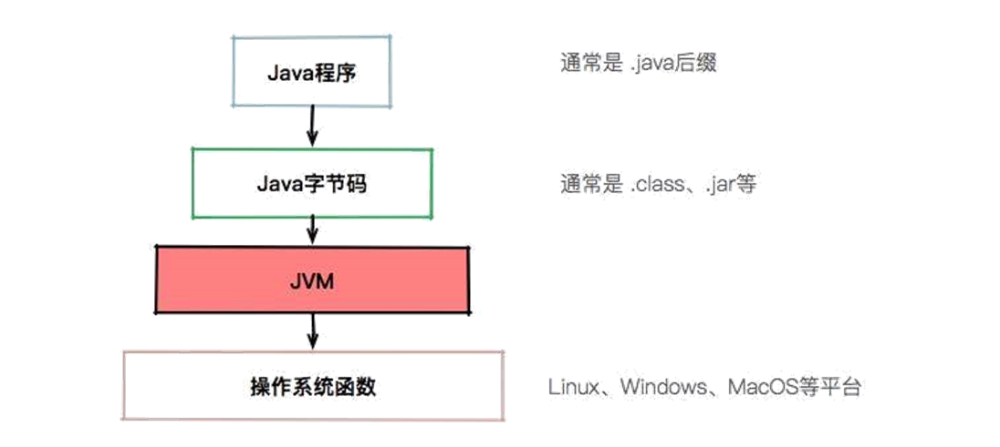
从图中可以看到，有了 JVM 这个抽象层之后，Java 就可以实现跨平台了。JVM 只需要保证能够正确执行 .class 文件，就可以运行在诸如 Linux、Windows、MacOS 等平台上了。
而 Java 跨平台的意义在于一次编译，处处运行，能够做到这一点 JVM 功不可没。比如我们在 Maven 仓库下载同一版本的 jar 包就可以到处运行，不需要在每个平台上再编译一次。
现在的一些 JVM 的扩展语言，比如 Clojure、JRuby、Groovy 等，编译到最后都是 .class 文件，Java 语言的维护者，只需要控制好 JVM 这个解析器，就可以将这些扩展语言无缝的运行在 JVM 之上了。
我们用一句话概括 JVM 与操作系统之间的关系：JVM 上承开发语言，下接操作系统，它的中间接口就是字节码。
而 Java 程序和我们通常使用的 C++ 程序有什么不同呢？这里用两张图进行说明。


对比这两张图可以看到 C++ 程序是编译成操作系统能够识别的 .exe 文件，而 Java 程序是编译成 JVM 能够识别的 .class 文件，然后由 JVM 负责调用系统函数执行程序。
JVM、JRE、JDK的关系
通过上面的学习我们了解到 JVM 是 Java 程序能够运行的核心。但是需要注意，JVM 自己什么也干不了，你需要给它提供生产原料（.class 文件）。俗语说的好，巧妇难为无米之炊。它虽然功能强大，但仍需要为它提供 .class 文件。
仅仅是 JVM，是无法完成一次编译，处处运行的。它需要一个基本的类库，比如怎么操作文件、怎么连接网络等。而 Java 体系很慷慨，会一次性将 JVM 运行所需的类库都传递给它。JVM 标准加上实现的一大堆基础类库，就组成了 Java 的运行时环境，也就是我们常说的 JRE（Java Runtime Environment）。
有了 JRE 之后，我们的 Java 程序便可以在浏览器中运行了。大家可以看一下自己安装的 Java 目录，如果是只需要执行一些 Java 程序，只需要一个 JRE 就足够了。
对于 JDK 来说，就更庞大了一些。除了 JRE，JDK 还提供了一些非常好用的小工具，比如 javac、java、jar 等。它是 Java 开发的核心，让外行也可以炼剑！
我们也可以看下 JDK 的全拼，Java Development Kit。我非常怕 kit（装备）这个单词，它就像一个无底洞，预示着你永无休止的对它进行研究。JVM、JRE、JDK 它们三者之间的关系，可以用一个包含关系表示。
- JDK>JRE>JVM

Java 虚拟机规范和 Java 语言规范的关系
我们通常谈到 JVM，首先会想到它的垃圾回收器，其实它还有很多部分，比如对字节码进行解析的执行引擎等。广义上来讲，JVM 是一种规范，它是最为官方、最为准确的文档；狭义上来讲，由于我们使用 Hotspot 更多一些，我们一般在谈到这个概念时，会将它们等同起来。
如果再加上我们平常使用的 Java 语言的话，可以得出下面这样一张图。这是 Java 开发人员必须要搞懂的两个规范。

左半部分是 Java 虚拟机规范，其实就是为输入和执行字节码提供一个运行环境。右半部分是我们常说的 Java 语法规范，比如 switch、for、泛型、lambda 等相关的程序，最终都会编译成字节码。而连接左右两部分的桥梁依然是 Java 的字节码。
如果 .class 文件的规格是不变的，这两部分是可以独立进行优化的。但 Java 也会偶尔扩充一下 .class 文件的格式，增加一些字节码指令，以便支持更多的特性。
我们可以把 Java 虚拟机可以看作是一台抽象的计算机，它有自己的指令集以及各种运行时内存区域，学过《计算机组成结构》的同学会在课程的后面看到非常多的相似性。
你可能会有疑问，如果我不学习 JVM，会影响我写 Java 代码么？理论上，这两者没有什么必然的联系。它们之间通过 .class 文件进行交互，即使你不了解 JVM，也能够写大多数的 Java 代码。就像是你写 C++ 代码一样，并不需要特别深入的了解操作系统的底层是如何实现的。
但是，如果你想要写一些比较精巧、效率比较高的代码，就需要了解一些执行层面的知识了。了解 JVM，主要用在调优以及故障排查上面，你会对运行中的各种资源分配，有一个比较全面的掌控。
我们写的 Java 代码到底是如何运行起来的
最后，我们简单看一下一个 Java 程序的执行过程，它到底是如何运行起来的。
这里的 Java 程序是文本格式的。比如下面这段 HelloWorld.java，它遵循的就是 Java 语言规范。其中，我们调用了 System.out 等模块，也就是 JRE 里提供的类库。
public class HelloWorld {
public static void main(String[] args) {
System.out.println("Hello World");
}
}
使用 JDK 的工具 javac 进行编译后，会产生 HelloWorld 的字节码。
我们一直在说 Java 字节码是沟通 JVM 与 Java 程序的桥梁，下面使用 javap 来稍微看一下字节码到底长什么样子。
0 getstatic #2 <java/lang/System.out>
3 ldc #3 <Hello World>
5 invokevirtual #4 <java/io/PrintStream.println>
8 return
Java 虚拟机采用基于栈的架构，其指令由操作码和操作数组成。这些字节码指令，就叫作 opcode。其中，getstatic、ldc、invokevirtual、return 等，就是 opcode，可以看到是比较容易理解的。
我们继续使用 hexdump 看一下字节码的二进制内容。与以上字节码对应的二进制，就是下面这几个数字（可以搜索一下）。
b2 00 02 12 03 b6 00 04 b1
我们可以看一下它们的对应关系。
0xb2 getstatic 获取静态字段的值
0x12 ldc 常量池中的常量值入栈
0xb6 invokevirtual 运行时方法绑定调用方法
0xb1 return void 函数返回
opcode 有一个字节的长度(0~255)，意味着指令集的操作码个数不能操作 256 条。而紧跟在 opcode 后面的是被操作数。比如 b2 00 02，就代表了 getstatic #2 <java/lang/System.out>。
JVM 就是靠解析这些 opcode 和操作数来完成程序的执行的。当我们使用 Java 命令运行 .class 文件的时候，实际上就相当于启动了一个 JVM 进程。
然后 JVM 会翻译这些字节码，它有两种执行方式。常见的就是解释执行，将 opcode + 操作数翻译成机器代码；另外一种执行方式就是 JIT，也就是我们常说的即时编译，它会在一定条件下将字节码编译成机器码之后再执行。
这些 .class 文件会被加载、存放到 metaspace 中，等待被调用，这里会有一个类加载器的概念。
而 JVM 的程序运行，都是在栈上完成的，这和其他普通程序的执行是类似的，同样分为堆和栈。比如我们现在运行到了 main 方法，就会给它分配一个栈帧。当退出方法体时，会弹出相应的栈帧。你会发现，大多数字节码指令，就是不断的对栈帧进行操作。
而其他大块数据，是存放在堆上的。Java 在内存划分上会更为细致，关于这些概念，我们会在接下来的课时里进行详细介绍。
最后大家看下面的图，其中 JVM 部分，就是我们课程的要点。
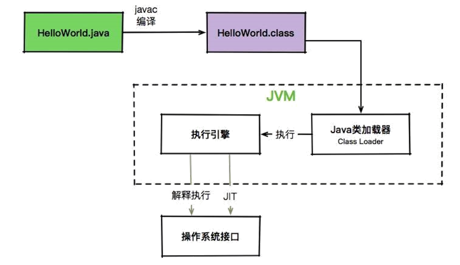
选用的版本
既然 JVM 只是一个虚拟机规范，那肯定有非常多的实现。其中，最流行的要数 Oracle 的 HotSpot。
目前，最新的版本是 Java13（注意最新的LTS版本是11）。学技术当然要学最新的，我们以后的课时就以 13 版本的 Java 为基准，来讲解发生在 JVM 上的那些事儿。
为了完成这个过程，你可以打开浏览器，输入下载网址（https://www.oracle.com/technetwork/java/ javase/downloads/jdk13-downloads-5672538.html）并安装软件。当然你也可以用稍低点的版本，但是有些知识点会有些许差异。相信对于聪明的你来说，这写都不算问题，因为整个 JVM，包括我们的调优，就是在不断试错中完成的。
小结
我们再回头看看上面的三个问题。
- 为什么 Java 研发系统需要 JVM？
JVM 解释的是类似于汇编语言的字节码，需要一个抽象的运行时环境。同时，这个虚拟环境也需要解决字节码加载、自动垃圾回收、并发等一系列问题。JVM 其实是一个规范，定义了 .class 文件的结构、加载机制、数据存储、运行时栈等诸多内容，最常用的 JVM 实现就是 Hotspot。
- 对你 JVM 的运行原理了解多少？
JVM 的生命周期是和 Java 程序的运行一样的，当程序运行结束，JVM 实例也跟着消失了。JVM 处于整个体系中的核心位置，关于其具体运行原理，我们在下面的课时中详细介绍。
- 我们写的 Java 代码到底是如何运行起来的？
一个 Java 程序，首先经过 javac 编译成 .class 文件，然后 JVM 将其加载到元数据区，执行引擎将会通过混合模式执行这些字节码。执行时，会翻译成操作系统相关的函数。JVM 作为 .class 文件的黑盒存在，输入字节码，调用操作系统函数。
过程如下：Java 文件->编译器>字节码->JVM->机器码。
总结
到这里本课时的内容就全部讲完了，今天我们分别从三个角度，了解了 JVM 在 Java 研发体系中的位置，并以一个简单的程序，看了下一个 Java 程序基本的执行过程。
我们所说的 JVM，狭义上指的就 HotSpot。如非特殊说明，我们都以 HotSpot 为准。我们了解到，Java 之所以成为跨平台，就是由于 JVM 的存在。Java 的字节码，是沟通 Java 语言与 JVM 的桥梁，同时也是沟通 JVM 与操作系统的桥梁。
JVM 是一个非常小的集合，我们常说的 Java 运行时环境，就包含 JVM 和一部分基础类库。如果加上我们常用的一些开发工具，就构成了整个 JDK。我们讲解 JVM 就聚焦在字节码的执行上面。
Java 虚拟机采用基于栈的架构，有比较丰富的 opcode。这些字节码可以解释执行，也可以编译成机器码，运行在底层硬件上，可以说 JVM 是一种混合执行的策略。
02 大厂面试题：你不得不掌握的 JVM 内存管理
本课时我们主要讲解 JVM 的内存划分以及栈上的执行过程。这块内容在面试中主要涉及以下这 3 个面试题：
- JVM 是如何进行内存区域划分的？
- JVM 如何高效进行内存管理？
- 为什么需要有元空间，它又涉及什么问题？
带着这 3 个问题，我们开始今天的学习，关于内存划分的知识我希望在本课时你能够理解就可以，不需要死记硬背，因为在后面的课时我们会经常使用到本课时学习的内容，也会结合工作中的场景具体问题具体分析，这样你可以对 JVM 的内存获得更深刻的认识。 首先，第一个问题：**JVM的内存区域是怎么高效划分的？**这也是一个高频的面试题。很多同学可能通过死记硬背的方式来应对这个问题，这样不仅对知识没有融会贯通在面试中还很容易忘记答案。 为什么要问到 JVM 的内存区域划分呢？因为 Java 引以为豪的就是它的自动内存管理机制。相比于 C++的手动内存管理、复杂难以理解的指针等，Java 程序写起来就方便的多。 然而这种呼之即来挥之即去的内存申请和释放方式，自然也有它的代价。为了管理这些快速的内存申请释放操作，就必须引入一个池子来延迟这些内存区域的回收操作。 我们常说的内存回收，就是针对这个池子的操作。我们把上面说的这个池子，叫作堆，可以暂时把它看成一个整体。
JVM 内存布局
程序想要运行，就需要数据。有了数据，就需要在内存上存储。那你可以回想一下，我们的 C++ 程序是怎么运行的？是不是也是这样？ Java 程序的数据结构是非常丰富的。其中的内容，举一些例子：
- 静态成员变量
- 动态成员变量
- 区域变量
- 短小紧凑的对象声明
- 庞大复杂的内存申请
这么多不同的数据结构，到底是在什么地方存储的，它们之间又是怎么进行交互的呢？是不是经常在面试的时候被问到这些问题？ 我们先看一下 JVM 的内存布局。随着 Java 的发展，内存布局一直在调整之中。比如，Java 8 及之后的版本，彻底移除了持久代，而使用 Metaspace 来进行替代。这也表示着 -XX:PermSize 和 -XX:MaxPermSize 等参数调优，已经没有了意义。但大体上，比较重要的内存区域是固定的。

JVM 内存区域划分如图所示，从图中我们可以看出：
- JVM 堆中的数据是共享的，是占用内存最大的一块区域。
- 可以执行字节码的模块叫作执行引擎。
- 执行引擎在线程切换时怎么恢复？依靠的就是程序计数器。
- JVM 的内存划分与多线程是息息相关的。像我们程序中运行时用到的栈，以及本地方法栈，它们的维度都是线程。
- 本地内存包含元数据区和一些直接内存。
一般情况下，只要你能答出上面这些主要的区域，面试官都会满意的点头。但如果深挖下去，可能就有同学就比较头疼了。下面我们就详细看下这个过程。
虚拟机栈
栈是什么样的数据结构？你可以想象一下子弹上膛的这个过程，后进的子弹最先射出，最上面的子弹就相当于栈顶。 我们在上面提到，Java 虚拟机栈是基于线程的。哪怕你只有一个 main() 方法，也是以线程的方式运行的。在线程的生命周期中，参与计算的数据会频繁地入栈和出栈，栈的生命周期是和线程一样的。 栈里的每条数据，就是栈帧。在每个 Java 方法被调用的时候，都会创建一个栈帧，并入栈。一旦完成相应的调用，则出栈。所有的栈帧都出栈后，线程也就结束了。每个栈帧，都包含四个区域：
- 局部变量表
- 操作数栈
- 动态连接
- 返回地址
我们的应用程序，就是在不断操作这些内存空间中完成的。

本地方法栈是和虚拟机栈非常相似的一个区域，它服务的对象是 native 方法。你甚至可以认为虚拟机栈和本地方法栈是同一个区域，这并不影响我们对 JVM 的了解。 这里有一个比较特殊的数据类型叫作 returnAdress。因为这种类型只存在于字节码层面，所以我们平常打交道的比较少。对于 JVM 来说，程序就是存储在方法区的字节码指令，而 returnAddress 类型的值就是指向特定指令内存地址的指针。

这部分有两个比较有意思的内容，面试中说出来会让面试官眼前一亮。
- 这里有一个两层的栈。第一层是栈帧，对应着方法；第二层是方法的执行，对应着操作数。注意千万不要搞混了。
- 你可以看到，所有的字节码指令，其实都会抽象成对栈的入栈出栈操作。执行引擎只需要傻瓜式的按顺序执行，就可以保证它的正确性。
这一点很神奇，也是基础。我们接下来从线程角度看一下里面的内容。
程序计数器
那么你设想一下，如果我们的程序在线程之间进行切换，凭什么能够知道这个线程已经执行到什么地方呢？ 既然是线程，就代表它在获取 CPU 时间片上，是不可预知的，需要有一个地方，对线程正在运行的点位进行缓冲记录，以便在获取 CPU 时间片时能够快速恢复。 就好比你停下手中的工作，倒了杯茶，然后如何继续之前的工作？ 程序计数器是一块较小的内存空间，它的作用可以看作是当前线程所执行的字节码的行号指示器。这里面存的，就是当前线程执行的进度。下面这张图，能够加深大家对这个过程的理解。

可以看到，程序计数器也是因为线程而产生的，与虚拟机栈配合完成计算操作。程序计数器还存储了当前正在运行的流程，包括正在执行的指令、跳转、分支、循环、异常处理等。 我们可以看一下程序计数器里面的具体内容。下面这张图，就是使用 javap 命令输出的字节码。大家可以看到在每个 opcode 前面，都有一个序号。就是图中红框中的偏移地址，你可以认为它们是程序计数器的内容。
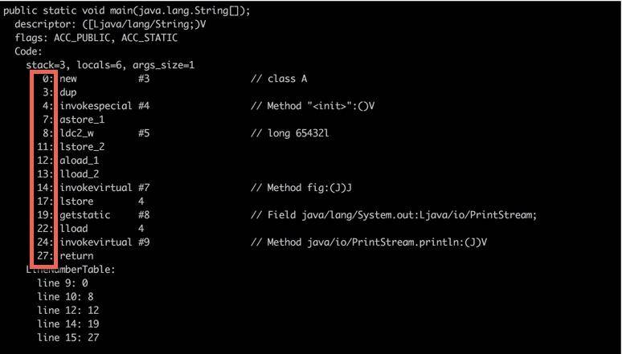
堆

堆是 JVM 上最大的内存区域，我们申请的几乎所有的对象，都是在这里存储的。我们常说的垃圾回收，操作的对象就是堆。 堆空间一般是程序启动时，就申请了，但是并不一定会全部使用。 随着对象的频繁创建，堆空间占用的越来越多，就需要不定期的对不再使用的对象进行回收。这个在 Java 中，就叫作 GC（Garbage Collection）。 由于对象的大小不一，在长时间运行后，堆空间会被许多细小的碎片占满，造成空间浪费。所以，仅仅销毁对象是不够的，还需要堆空间整理。这个过程非常的复杂，我们会在后面有专门的课时进行介绍。 那一个对象创建的时候，到底是在堆上分配，还是在栈上分配呢？这和两个方面有关：对象的类型和在 Java 类中存在的位置。 Java 的对象可以分为基本数据类型和普通对象。 对于普通对象来说，JVM 会首先在堆上创建对象，然后在其他地方使用的其实是它的引用。比如，把这个引用保存在虚拟机栈的局部变量表中。 对于基本数据类型来说（byte、short、int、long、float、double、char)，有两种情况。 我们上面提到，每个线程拥有一个虚拟机栈。当你在方法体内声明了基本数据类型的对象，它就会在栈上直接分配。其他情况，都是在堆上分配。 注意，像 int[] 数组这样的内容，是在堆上分配的。数组并不是基本数据类型。
这就是 JVM 的基本的内存分配策略。而堆是所有线程共享的，如果是多个线程访问，会涉及数据同步问题。这同样是个大话题，我们在这里先留下一个悬念。
元空间
关于元空间，我们还是以一个非常高频的面试题开始：“为什么有 Metaspace 区域？它有什么问题？” 说到这里，你应该回想一下类与对象的区别。对象是一个活生生的个体，可以参与到程序的运行中；类更像是一个模版，定义了一系列属性和操作。那么你可以设想一下。我们前面生成的 A.class，是放在 JVM 的哪个区域的？ 想要问答这个问题，就不得不提下 Java 的历史。在 Java 8 之前，这些类的信息是放在一个叫 Perm 区的内存里面的。更早版本，甚至 String.intern 相关的运行时常量池也放在这里。这个区域有大小限制，很容易造成 JVM 内存溢出，从而造成 JVM 崩溃。 Perm 区在 Java 8 中已经被彻底废除，取而代之的是 Metaspace。原来的 Perm 区是在堆上的，现在的元空间是在非堆上的，这是背景。关于它们的对比，可以看下这张图。

然后，元空间的好处也是它的坏处。使用非堆可以使用操作系统的内存，JVM 不会再出现方法区的内存溢出；但是，无限制的使用会造成操作系统的死亡。所以，一般也会使用参数 -XX:MaxMetaspaceSize 来控制大小。 方法区，作为一个概念，依然存在。它的物理存储的容器，就是 Metaspace。我们将在后面的课时中，再次遇到它。现在，你只需要了解到，这个区域存储的内容，包括：类的信息、常量池、方法数据、方法代码就可以了。
小结
好了，到这里本课时的基本内容就讲完了，针对这块的内容在面试中还经常会遇到下面这两个问题。
- 我们常说的字符串常量，存放在哪呢？
由于常量池，在 Java 7 之后，放到了堆中，我们创建的字符串，将会在堆上分配。
- 堆、非堆、本地内存，有什么关系？
关于它们的关系，我们可以看一张图。在我的感觉里，堆是软绵绵的，松散而有弹性；而非堆是冰冷生硬的，内存非常紧凑。

大家都知道，JVM 在运行时，会从操作系统申请大块的堆内内存，进行数据的存储。但是，堆外内存也就是申请后操作系统剩余的内存，也会有部分受到 JVM 的控制。比较典型的就是一些 native 关键词修饰的方法，以及对内存的申请和处理。 在 Linux 机器上，使用 top 或者 ps 命令，在大多数情况下，能够看到 RSS 段（实际的内存占用），是大于给 JVM 分配的堆内存的。 如果你申请了一台系统内存为 2GB 的主机，可能 JVM 能用的就只有 1GB，这便是一个限制。
总结
JVM 的运行时区域是栈，而存储区域是堆。很多变量，其实在编译期就已经固定了。.class 文件的字节码，由于助记符的作用，理解起来并不是那么吃力，我们将在课程最后几个课时，从字节码层面看一下多线程的特性。 JVM 的运行时特性，以及字节码，是比较偏底层的知识。本课时属于初步介绍，有些部分并未深入讲解。希望你应该能够在脑海里建立一个 Java 程序怎么运行的概念，以便我们在后面的课时中，提到相应的内存区域时，有个整体的印象。
03 大厂面试题：从覆盖 JDK 的类开始掌握类的加载机制
本课时我们主要从覆盖 JDK 的类开始讲解 JVM 的类加载机制。其实，JVM 的类加载机制和 Java 的类加载机制类似，但 JVM 的类加载过程稍有些复杂。
前面课时我们讲到，JVM 通过加载 .class 文件，能够将其中的字节码解析成操作系统机器码。那这些文件是怎么加载进来的呢？又有哪些约定？接下来我们就详细介绍 JVM 的类加载机制，同时介绍三个实际的应用场景。
我们首先看几个面试题。
- 我们能够通过一定的手段，覆盖 HashMap 类的实现么？
- 有哪些地方打破了 Java 的类加载机制？
- 如何加载一个远程的 .class 文件？怎样加密 .class 文件？
关于类加载，很多同学都知道双亲委派机制，但这明显不够。面试官可能要你讲出几个能打破这个机制的例子，这个时候不要慌。上面几个问题，是我在接触的一些比较高级的面试场景中，遇到的一些问法。在平常的工作中，也有大量的相关应用，我们会理论联系实践综合分析这些问题。
类加载过程
现实中并不是说，我把一个文件修改成 .class 后缀，就能够被 JVM 识别。类的加载过程非常复杂，主要有这几个过程：加载、验证、准备、解析、初始化。这些术语很多地方都出现过，我们不需要死记硬背，而应该要了解它背后的原理和要做的事情。
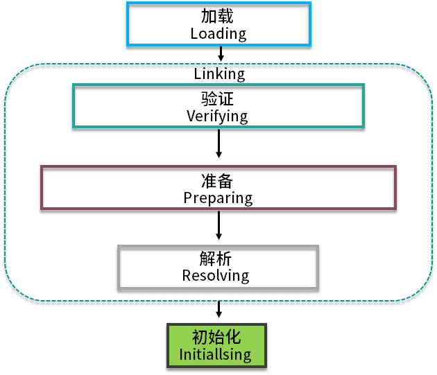
如图所示。大多数情况下，类会按照图中给出的顺序进行加载。下面我们就来分别介绍下这个过程。
加载
加载的主要作用是将外部的 .class 文件，加载到 Java 的方法区内，你可以回顾一下我们在上一课时讲的内存区域图。加载阶段主要是找到并加载类的二进制数据，比如从 jar 包里或者 war 包里找到它们。
验证
肯定不能任何 .class 文件都能加载，那样太不安全了，容易受到恶意代码的攻击。验证阶段在虚拟机整个类加载过程中占了很大一部分，不符合规范的将抛出 java.lang.VerifyError 错误。像一些低版本的 JVM，是无法加载一些高版本的类库的，就是在这个阶段完成的。
准备
从这部分开始，将为一些类变量分配内存，并将其初始化为默认值。此时，实例对象还没有分配内存，所以这些动作是在方法区上进行的。
我们顺便看一道面试题。下面两段代码，code-snippet 1 将会输出 0，而 code-snippet 2 将无法通过编译。
code-snippet 1：
public class A {
static int a ;
public static void main(String[] args) {
System.out.println(a);
}
}
code-snippet 2：
public class A {
public static void main(String[] args) {
int a ;
System.out.println(a);
}
}
为什么会有这种区别呢？
这是因为局部变量不像类变量那样存在准备阶段。类变量有两次赋初始值的过程，一次在准备阶段，赋予初始值（也可以是指定值）；另外一次在初始化阶段，赋予程序员定义的值。
因此，即使程序员没有为类变量赋值也没有关系，它仍然有一个默认的初始值。但局部变量就不一样了，如果没有给它赋初始值，是不能使用的。
解析
解析在类加载中是非常非常重要的一环，是将符号引用替换为直接引用的过程。这句话非常的拗口，其实理解起来也非常的简单。
符号引用是一种定义，可以是任何字面上的含义，而直接引用就是直接指向目标的指针、相对偏移量。
直接引用的对象都存在于内存中，你可以把通讯录里的女友手机号码，类比为符号引用，把面对面和你吃饭的人，类比为直接引用。
解析阶段负责把整个类激活，串成一个可以找到彼此的网，过程不可谓不重要。那这个阶段都做了哪些工作呢？大体可以分为：
- 类或接口的解析
- 类方法解析
- 接口方法解析
- 字段解析
我们来看几个经常发生的异常，就与这个阶段有关。
- java.lang.NoSuchFieldError 根据继承关系从下往上，找不到相关字段时的报错。
- java.lang.IllegalAccessError 字段或者方法，访问权限不具备时的错误。
- java.lang.NoSuchMethodError 找不到相关方法时的错误。
解析过程保证了相互引用的完整性，把继承与组合推进到运行时。
初始化
如果前面的流程一切顺利的话，接下来该初始化成员变量了，到了这一步，才真正开始执行一些字节码。
接下来是另一道面试题，你可以猜想一下，下面的代码，会输出什么？
public class A {
static int a = 0 ;
static {
a = 1;
b = 1;
}
static int b = 0;
public static void main(String[] args) {
System.out.println(a);
System.out.println(b);
}
}
结果是 1 0。a 和 b 唯一的区别就是它们的 static 代码块的位置。
这就引出一个规则：static 语句块，只能访问到定义在 static 语句块之前的变量。所以下面的代码是无法通过编译的。
static {
b = b + 1;
}
static int b = 0;
我们再来看第二个规则：JVM 会保证在子类的初始化方法执行之前，父类的初始化方法已经执行完毕。
所以，JVM 第一个被执行的类初始化方法一定是 java.lang.Object。另外，也意味着父类中定义的 static 语句块要优先于子类的。
与
说到这里，不得不再说一个面试题：
主要是为了让你弄明白类的初始化和对象的初始化之间的差别。
public class A {
static {
System.out.println("1");
}
public A(){
System.out.println("2");
}
}
public class B extends A {
static{
System.out.println("a");
}
public B(){
System.out.println("b");
}
public static void main(String[] args){
A ab = new B();
ab = new B();
}
}
先公布下答案：
1
a
2
b
2
b
你可以看下这张图。其中 static 字段和 static 代码块，是属于类的，在类的加载的初始化阶段就已经被执行。类信息会被存放在方法区，在同一个类加载器下，这些信息有一份就够了，所以上面的 static 代码块只会执行一次，它对应的是
而对象初始化就不一样了。通常，我们在 new 一个新对象的时候，都会调用它的构造方法，就是

所以，上面代码的 static 代码块只会执行一次，对象的构造方法执行两次。再加上继承关系的先后原则，不难分析出正确结果。
类加载器
整个类加载过程任务非常繁重，虽然这活儿很累，但总得有人干。类加载器做的就是上面 5 个步骤的事。
如果你在项目代码里，写一个 java.lang 的包，然后改写 String 类的一些行为，编译后，发现并不能生效。JRE 的类当然不能轻易被覆盖，否则会被别有用心的人利用，这就太危险了。
那类加载器是如何保证这个过程的安全性呢？其实，它是有着严格的等级制度的。
几个类加载器
首先，我们介绍几个不同等级的类加载器。
- Bootstrap ClassLoader
这是加载器中的大 Boss，任何类的加载行为，都要经它过问。它的作用是加载核心类库，也就是 rt.jar、resources.jar、charsets.jar 等。当然这些 jar 包的路径是可以指定的，-Xbootclasspath 参数可以完成指定操作。
这个加载器是 C++ 编写的，随着 JVM 启动。
- Extention ClassLoader
扩展类加载器，主要用于加载 lib/ext 目录下的 jar 包和 .class 文件。同样的，通过系统变量 java.ext.dirs 可以指定这个目录。
这个加载器是个 Java 类，继承自 URLClassLoader。
- App ClassLoader
这是我们写的 Java 类的默认加载器，有时候也叫作 System ClassLoader。一般用来加载 classpath 下的其他所有 jar 包和 .class 文件，我们写的代码，会首先尝试使用这个类加载器进行加载。
- Custom ClassLoader
自定义加载器，支持一些个性化的扩展功能。
双亲委派机制
关于双亲委派机制的问题面试中经常会被问到，你可能已经倒背如流了。
双亲委派机制的意思是除了顶层的启动类加载器以外，其余的类加载器，在加载之前，都会委派给它的父加载器进行加载。这样一层层向上传递，直到祖先们都无法胜任，它才会真正的加载。
打个比方。有一个家族，都是一些听话的孩子。孙子想要买一块棒棒糖，最终都要经过爷爷过问，如果力所能及，爷爷就直接帮孙子买了。
但你有没有想过，“类加载的双亲委派机制，双亲在哪里？明明都是单亲？”
我们还是用一张图来讲解。可以看到，除了启动类加载器，每一个加载器都有一个parent，并没有所谓的双亲。但是由于翻译的问题，这个叫法已经非常普遍了，一定要注意背后的差别。

我们可以翻阅 JDK 代码的 ClassLoader#loadClass 方法，来看一下具体的加载过程。和我们描述的一样，它首先使用 parent 尝试进行类加载，parent 失败后才轮到自己。同时，我们也注意到，这个方法是可以被覆盖的，也就是双亲委派机制并不一定生效。

这个模型的好处在于 Java 类有了一种优先级的层次划分关系。比如 Object 类，这个毫无疑问应该交给最上层的加载器进行加载，即使是你覆盖了它，最终也是由系统默认的加载器进行加载的。
如果没有双亲委派模型，就会出现很多个不同的 Object 类，应用程序会一片混乱。
一些自定义加载器
下面我们就来聊一聊可以打破双亲委派机制的一些案例。为了支持一些自定义加载类多功能的需求，Java 设计者其实已经作出了一些妥协。
案例一：tomcat
tomcat 通过 war 包进行应用的发布，它其实是违反了双亲委派机制原则的。简单看一下 tomcat 类加载器的层次结构。
对于一些需要加载的非基础类，会由一个叫作 WebAppClassLoader 的类加载器优先加载。等它加载不到的时候，再交给上层的 ClassLoader 进行加载。这个加载器用来隔绝不同应用的 .class 文件，比如你的两个应用，可能会依赖同一个第三方的不同版本，它们是相互没有影响的。
如何在同一个 JVM 里，运行着不兼容的两个版本，当然是需要自定义加载器才能完成的事。
那么 tomcat 是怎么打破双亲委派机制的呢？可以看图中的 WebAppClassLoader，它加载自己目录下的 .class 文件，并不会传递给父类的加载器。但是，它却可以使用 SharedClassLoader 所加载的类，实现了共享和分离的功能。
但是你自己写一个 ArrayList，放在应用目录里，tomcat 依然不会加载。它只是自定义的加载器顺序不同，但对于顶层来说，还是一样的。
案例二：SPI
Java 中有一个 SPI 机制，全称是 Service Provider Interface，是 Java 提供的一套用来被第三方实现或者扩展的 API，它可以用来启用框架扩展和替换组件。
这个说法可能比较晦涩，但是拿我们常用的数据库驱动加载来说，就比较好理解了。在使用 JDBC 写程序之前，通常会调用下面这行代码，用于加载所需要的驱动类。
Class.forName("com.mysql.jdbc.Driver")
这只是一种初始化模式，通过 static 代码块显式地声明了驱动对象，然后把这些信息，保存到底层的一个 List 中。这种方式我们不做过多的介绍，因为这明显就是一个接口编程的思路，没什么好奇怪的。
但是你会发现，即使删除了 Class.forName 这一行代码，也能加载到正确的驱动类，什么都不需要做，非常的神奇，它是怎么做到的呢？
我们翻开 MySQL 的驱动代码，发现了一个奇怪的文件。之所以能够发生这样神奇的事情，就是在这里实现的。
路径：
mysql-connector-java-8.0.15.jar!/META-INF/services/java.sql.Driver
里面的内容是：
com.mysql.cj.jdbc.Driver
通过在 META-INF/services 目录下，创建一个以接口全限定名为命名的文件（内容为实现类的全限定名），即可自动加载这一种实现，这就是 SPI。
SPI 实际上是“基于接口的编程＋策略模式＋配置文件”组合实现的动态加载机制，主要使用 java.util.ServiceLoader 类进行动态装载。

这种方式，同样打破了双亲委派的机制。
DriverManager 类和 ServiceLoader 类都是属于 rt.jar 的。它们的类加载器是 Bootstrap ClassLoader，也就是最上层的那个。而具体的数据库驱动，却属于业务代码，这个启动类加载器是无法加载的。这就比较尴尬了，虽然凡事都要祖先过问，但祖先没有能力去做这件事情，怎么办？
我们可以一步步跟踪代码，来看一下这个过程。
//part1:DriverManager::loadInitialDrivers
//jdk1.8 之后，变成了lazy的ensureDriversInitialized
...
ServiceLoader <Driver> loadedDrivers = ServiceLoader.load(Driver.class);
Iterator<Driver> driversIterator = loadedDrivers.iterator();
...
//part2:ServiceLoader::load
public static <T> ServiceLoader<T> load(Class<T> service) {
ClassLoader cl = Thread.currentThread().getContextClassLoader();
return ServiceLoader.load(service, cl);
}
通过代码你可以发现 Java 玩了个魔术，它把当前的类加载器，设置成了线程的上下文类加载器。那么，对于一个刚刚启动的应用程序来说，它当前的加载器是谁呢？也就是说，启动 main 方法的那个加载器，到底是哪一个？
所以我们继续跟踪代码。找到 Launcher 类，就是 jre 中用于启动入口函数 main 的类。我们在 Launcher 中找到以下代码。
public Launcher() {
Launcher.ExtClassLoader var1;
try {
var1 = Launcher.ExtClassLoader.getExtClassLoader();
} catch (IOException var10) {
throw new InternalError("Could not create extension class loader", var10);
}
try {
this.loader = Launcher.AppClassLoader.getAppClassLoader(var1);
} catch (IOException var9) {
throw new InternalError("Could not create application class loader", var9);
}
Thread.currentThread().setContextClassLoader(this.loader);
...
}
到此为止，事情就比较明朗了，当前线程上下文的类加载器，是应用程序类加载器。使用它来加载第三方驱动，是没有什么问题的。
我们之所以花大量的篇幅来介绍这个过程，第一，可以让你更好的看到一个打破规则的案例。第二，这个问题面试时出现的几率也是比较高的，你需要好好理解。
案例三：OSGi
OSGi 曾经非常流行，Eclipse 就使用 OSGi 作为插件系统的基础。OSGi 是服务平台的规范，旨在用于需要长运行时间、动态更新和对运行环境破坏最小的系统。
OSGi 规范定义了很多关于包生命周期，以及基础架构和绑定包的交互方式。这些规则，通过使用特殊 Java 类加载器来强制执行，比较霸道。
比如，在一般 Java 应用程序中，classpath 中的所有类都对所有其他类可见，这是毋庸置疑的。但是，OSGi 类加载器基于 OSGi 规范和每个绑定包的 manifest.mf 文件中指定的选项，来限制这些类的交互，这就让编程风格变得非常的怪异。但我们不难想象，这种与直觉相违背的加载方式，肯定是由专用的类加载器来实现的。
随着 jigsaw 的发展（旨在为 Java SE 平台设计、实现一个标准的模块系统），我个人认为，现在的 OSGi，意义已经不是很大了。OSGi 是一个庞大的话题，你只需要知道，有这么一个复杂的东西，实现了模块化，每个模块可以独立安装、启动、停止、卸载，就可以了。
不过，如果你有机会接触相关方面的工作，也许会不由的发出感叹：原来 Java 的类加载器，可以玩出这么多花样。
如何替换 JDK 的类
让我们回到本课时开始的问题，如何替换 JDK 中的类？比如，我们现在就拿 HashMap为例。
当 Java 的原生 API 不能满足需求时，比如我们要修改 HashMap 类，就必须要使用到 Java 的 endorsed 技术。我们需要将自己的 HashMap 类，打包成一个 jar 包，然后放到 -Djava.endorsed.dirs 指定的目录中。注意类名和包名，应该和 JDK 自带的是一样的。但是，java.lang 包下面的类除外，因为这些都是特殊保护的。
因为我们上面提到的双亲委派机制，是无法直接在应用中替换 JDK 的原生类的。但是，有时候又不得不进行一下增强、替换，比如你想要调试一段代码，或者比 Java 团队早发现了一个 Bug。所以，Java 提供了 endorsed 技术，用于替换这些类。这个目录下的 jar 包，会比 rt.jar 中的文件，优先级更高，可以被最先加载到。
小结
通过本课时的学习我们可以了解到，一个 Java 类的加载，经过了加载、验证、准备、解析、初始化几个过程，每一个过程都划清了各自负责的事情。
接下来，我们了解到 Java 自带的三个类加载器。同时了解到，main 方法的线程上下文加载器，其实是 Application ClassLoader。
一般情况下，类加载是遵循双亲委派机制的。我们也认识到，这个双亲，很有问题。通过 3 个案例的学习和介绍，可以看到有很多打破这个规则的情况。类加载器通过开放的 API，让加载过程更加灵活。
Java 的类加载器是非常重要的知识点，也是面试常考的知识点，本课时提供了多个面试题，你可以实际操作体验一下。
04 动手实践：从栈帧看字节码是如何在 JVM 中进行流转的
在上一课时我们掌握了 JVM 的内存区域划分，以及 .class 文件的加载机制。也了解到很多初始化动作是在不同的阶段发生的。
但你可能仍对以下这些问题有疑问：
- 怎么查看字节码文件？
- 字节码文件长什么样子？
- 对象初始化之后，具体的字节码又是怎么执行的？
带着这些疑问，我们进入本课时的学习，本课时将带你动手实践，详细分析一个 Java 文件产生的字节码，并从栈帧层面看一下字节码的具体执行过程。
工具介绍
工欲善其事，必先利其器。在开始本课时的内容之前，先给你介绍两个分析字节码的小工具。
javap
第一个小工具是 javap，javap 是 JDK 自带的反解析工具。它的作用是将 .class 字节码文件解析成可读的文件格式。我们在第一课时，就是用的它输出了 HelloWorld 的内容。
在使用 javap 时我一般会添加 -v 参数，尽量多打印一些信息。同时，我也会使用 -p 参数，打印一些私有的字段和方法。使用起来大概是这样：
javap -p -v HelloWorld
在 Stack Overflow 上有一个非常有意思的问题：我在某个类中增加一行注释之后，为什么两次生成的 .class 文件，它们的 MD5 是不一样的？
这是因为在 javac 中可以指定一些额外的内容输出到字节码。经常用的有
- javac -g:lines 强制生成 LineNumberTable。
- javac -g:vars 强制生成 LocalVariableTable。
- javac -g 生成所有的 debug 信息。
为了观察字节码的流转，我们本课时就会使用到这些参数。
jclasslib
如果你不太习惯使用命令行的操作，还可以使用 jclasslib，jclasslib 是一个图形化的工具，能够更加直观的查看字节码中的内容。它还分门别类的对类中的各个部分进行了整理，非常的人性化。同时，它还提供了 Idea 的插件，你可以从 plugins 中搜索到它。
如果你在其中看不到一些诸如 LocalVariableTable 的信息，记得在编译代码的时候加上我们上面提到的这些参数。
jclasslib 的下载地址：https://github.com/ingokegel/jclasslib
类加载和对象创建的时机
接下来，我们来看一个稍微复杂的例子，来具体看一下类加载和对象创建的过程。
首先，我们写一个最简单的 Java 程序 A.java。它有一个公共方法 test，还有一个静态成员变量和动态成员变量。
class B {
private int a = 1234;
static long C = 1111;
public long test(long num) {
long ret = this.a + num + C;
return ret;
}
}
public class A {
private B b = new B();
public static void main(String[] args) {
A a = new A();
long num = 4321 ;
long ret = a.b.test(num);
System.out.println(ret);
}
}
前面我们提到，类的初始化发生在类加载阶段，那对象都有哪些创建方式呢？除了我们常用的 new，还有下面这些方式：
- 使用 Class 的 newInstance 方法。
- 使用 Constructor 类的 newInstance 方法。
- 反序列化。
- 使用 Object 的 clone 方法。
其中，后面两种方式没有调用到构造函数。
当虚拟机遇到一条 new 指令时，首先会检查这个指令的参数能否在常量池中定位一个符号引用。然后检查这个符号引用的类字节码是否加载、解析和初始化。如果没有，将执行对应的类加载过程。
拿我们上面的代码来说，执行 A 代码，在调用 private B b = new B() 时，就会触发 B 类的加载。

让我们结合上图回顾一下前面章节的内容。A 和 B 会被加载到元空间的方法区，进入 main 方法后，将会交给执行引擎执行。这个执行过程是在栈上完成的，其中有几个重要的区域，包括虚拟机栈、程序计数器等。接下来我们详细看一下虚拟机栈上的执行过程。
查看字节码
命令行查看字节码
使用下面的命令编译源代码 A.java。如果你用的是 Idea，可以直接将参数追加在 VM options 里面。
javac -g:lines -g:vars A.java
这将强制生成 LineNumberTable 和 LocalVariableTable。
然后使用 javap 命令查看 A 和 B 的字节码。
javap -p -v A
javap -p -v B
这个命令，不仅会输出行号、本地变量表信息、反编译汇编代码，还会输出当前类用到的常量池等信息。由于内容很长，这里就不具体展示了，你可以使用上面的命令实际操作一下就可以了。
注意 javap 中的如下字样。
<1>
1: invokespecial #1 // Method java/lang/Object."<init>":()V
可以看到对象的初始化，首先是调用了 Object 类的初始化方法。注意这里是
<2>
#2 = Fieldref #6.#27 // B.a:I
它其实直接拼接了 #13 和 #14 的内容。
#6 = Class #29 // B
#27 = NameAndType #8:#9 // a:I
...
#8 = Utf8 a
#9 = Utf8 I
<3>
你会注意到 :I 这样特殊的字符。它们也是有意义的，如果你经常使用 jmap 这种命令，应该不会陌生。大体包括：
- B 基本类型 byte
- C 基本类型 char
- D 基本类型 double
- F 基本类型 float
- I 基本类型 int
- J 基本类型 long
- S 基本类型 short
- Z 基本类型 boolean
- V 特殊类型 void
- L 对象类型，以分号结尾，如 Ljava/lang/Object;
- [Ljava/lang/String; 数组类型，每一位使用一个前置的"["字符来描述
我们注意到 code 区域，有非常多的二进制指令。如果你接触过汇编语言，会发现它们之间其实有一定的相似性。但这些二进制指令，并不是操作系统能够认识的，它们是提供给 JVM 运行的源材料。
可视化查看字节码
接下来，我们就可以使用更加直观的工具 jclasslib，来查看字节码中的具体内容了。
我们以 B.class 文件为例，来查看它的内容。
<1>
首先，我们能够看到 Constant Pool（常量池），这些内容，就存放于我们的 Metaspace 区域，属于非堆。

常量池包含 .class 文件常量池、运行时常量池、String 常量池等部分，大多是一些静态内容。
<2>
接下来，可以看到两个默认的

<3>
继续往下看，我们看到了 LocalVariableTable 的三个变量。其中，slot 0 指向的是 this 关键字。该属性的作用是描述帧栈中局部变量与源码中定义的变量之间的关系。如果没有这些信息，那么在 IDE 中引用这个方法时，将无法获取到方法名，取而代之的则是 arg0 这样的变量名。

本地变量表的 slot 是可以复用的。注意一个有意思的地方，index 的最大值为 3，证明了本地变量表同时最多能够存放 4 个变量。
另外，我们观察到还有 LineNumberTable 等选项。该属性的作用是描述源码行号与字节码行号（字节码偏移量）之间的对应关系，有了这些信息，在 debug 时，就能够获取到发生异常的源代码行号。
test 函数执行过程
Code 区域介绍
test 函数同时使用了成员变量 a、静态变量 C，以及输入参数 num。我们此时说的函数执行，内存其实就是在虚拟机栈上分配的。下面这些内容，就是 test 方法的字节码。
public long test(long);
descriptor: (J)J
flags: ACC_PUBLIC
Code:
stack=4, locals=5, args_size=2
0: aload_0
1: getfield #2 // Field a:I
4: i2l
5: lload_1
6: ladd
7: getstatic #3 // Field C:J
10: ladd
11: lstore_3
12: lload_3
13: lreturn
LineNumberTable:
line 13: 0
line 14: 12
LocalVariableTable:
Start Length Slot Name Signature
0 14 0 this LB;
0 14 1 num J
12 2 3 ret J
我们介绍一下比较重要的 3 三个数值。 <1>
首先，注意 stack 字样，它此时的数值为 4，表明了 test 方法的最大操作数栈深度为 4。JVM 运行时，会根据这个数值，来分配栈帧中操作栈的深度。
<2>
相对应的，locals 变量存储了局部变量的存储空间。它的单位是 Slot（槽），可以被重用。其中存放的内容，包括：
- this
- 方法参数
- 异常处理器的参数
- 方法体中定义的局部变量
<3>
args_size 就比较好理解。它指的是方法的参数个数，因为每个方法都有一个隐藏参数 this，所以这里的数字是 2。
字节码执行过程
我们稍微回顾一下 JVM 运行时的相关内容。main 线程会拥有两个主要的运行时区域：Java 虚拟机栈和程序计数器。其中，虚拟机栈中的每一项内容叫作栈帧，栈帧中包含四项内容：局部变量报表、操作数栈、动态链接和完成出口。
我们的字节码指令，就是靠操作这些数据结构运行的。下面我们看一下具体的字节码指令。

（1）0: aload_0
把第 1 个引用型局部变量推到操作数栈，这里的意思是把 this 装载到了操作数栈中。
对于 static 方法，aload_0 表示对方法的第一个参数的操作。

（2）1: getfield #2
将栈顶的指定的对象的第 2 个实例域（Field）的值，压入栈顶。#2 就是指的我们的成员变量 a。
#2 = Fieldref #6.#27 // B.a:I
...
#6 = Class #29 // B
#27 = NameAndType #8:#9 // a:I

（3）i2l
将栈顶 int 类型的数据转化为 long 类型，这里就涉及我们的隐式类型转换了。图中的信息没有变动，不再详解介绍。
（4）lload_1
将第一个局部变量入栈。也就是我们的参数 num。这里的 l 表示 long，同样用于局部变量装载。你会看到这个位置的局部变量，一开始就已经有值了。

（5）ladd
把栈顶两个 long 型数值出栈后相加，并将结果入栈。

（6）getstatic #3
根据偏移获取静态属性的值，并把这个值 push 到操作数栈上。

（7）ladd
再次执行 ladd。

（8）lstore_3
把栈顶 long 型数值存入第 4 个局部变量。
还记得我们上面的图么？slot 为 4，索引为 3 的就是 ret 变量。

（9）lload_3
正好与上面相反。上面是变量存入，我们现在要做的，就是把这个变量 ret，压入虚拟机栈中。
（10）lreturn
从当前方法返回 long。
到此为止，我们的函数就完成了相加动作，执行成功了。JVM 为我们提供了非常丰富的字节码指令。详细的字节码指令列表，可以参考以下网址：
https://docs.oracle.com/javase/specs/jvms/se8/html/jvms-6.html
注意点
注意上面的第 8 步，我们首先把变量存放到了变量报表，然后又拿出这个值，把它入栈。为什么会有这种多此一举的操作？原因就在于我们定义了 ret 变量。JVM 不知道后面还会不会用到这个变量，所以只好傻瓜式的顺序执行。
为了看到这些差异。大家可以把我们的程序稍微改动一下，直接返回这个值。
public long test(long num) {
return this.a + num + C;
}
再次看下，对应的字节码指令是不是简单了很多？
0: aload_0
1: getfield #2 // Field a:I
4: i2l
5: lload_1
6: ladd
7: getstatic #3 // Field C:J
10: ladd
11: lreturn
那我们以后编写程序时，是不是要尽量少的定义成员变量？
这是没有必要的。栈的操作复杂度是 O(1)，对我们的程序性能几乎没有影响。平常的代码编写，还是以可读性作为首要任务。
小结
本课时，我们学会了使用 javap 和 jclasslib 两个工具。平常工作中，掌握第一个就够了，后者主要为我们提供更加直观的展示。
我们从实际分析一段代码开始，详细介绍了几个字节码指令对程序计数器、局部变量表、操作数栈等内容的影响，初步接触了 Java 的字节码文件格式。
希望你能够建立起一个运行时的脉络，在看到相关的 opcode 时，能够举一反三的思考背后对这些数据结构的操作。这样理解的字节码指令，根本不会忘。
你还可以尝试着对 A 类的代码进行分析，我们这里先留下一个悬念。课程后面会详细介绍 JVM 在方法调用上的一些特点。
05 大厂面试题：得心应手应对 OOM 的疑难杂症
在前面几个课时中，我们不止一次提到了堆（heap），堆是一个巨大的对象池。在这个对象池中管理着数量巨大的对象实例。
而池中对象的引用层次，有的是很深的。一个被频繁调用的接口，每秒生成对象的速度，也是非常可观的。对象之间的关系，形成了一张巨大的网。虽然 Java 一直在营造一种无限内存的氛围，但对象不能只增不减，所以需要垃圾回收。
那 JVM 是如何判断哪些对象应该被回收？哪些应该被保持呢？
在古代，刑罚中有诛九族一说。指的是有些人犯大事时，皇上杀一人不足以平复内心的愤怒时，会对亲朋好友产生连带责任。诛九族时首先需要追溯到一个共同的祖先，再往下细数连坐。堆上的垃圾回收也有同样的思路。我们接下来就具体分析 JVM 中是如何进行垃圾回收的。
JVM 的 GC 动作，是不受程序控制的，它会在满足条件的时候，自动触发。
在发生 GC 的时候，一个对象，JVM 总能够找到引用它的祖先。找到最后，如果发现这个祖先已经名存实亡了，它们都会被清理掉。而能够躲过垃圾回收的那些祖先，比较特殊，它们的名字就叫作 GC Roots。
从 GC Roots 向下追溯、搜索，会产生一个叫作 Reference Chain 的链条。当一个对象不能和任何一个 GC Root 产生关系时，就会被无情的诛杀掉。
如图所示，Obj5、Obj6、Obj7，由于不能和 GC Root 产生关联，发生 GC 时，就会被摧毁。

垃圾回收就是围绕着 GC Roots 去做的。同时，它也是很多内存泄露的根源，因为其他引用根本没有这样的权利。
那么，什么样的对象，才会是 GC Root 呢？这不在于它是什么样的对象，而在于它所处的位置。
GC Roots 有哪些
GC Roots 是一组必须活跃的引用。用通俗的话来说，就是程序接下来通过直接引用或者间接引用，能够访问到的潜在被使用的对象。
GC Roots 包括：
- Java 线程中，当前所有正在被调用的方法的引用类型参数、局部变量、临时值等。也就是与我们栈帧相关的各种引用。
- 所有当前被加载的 Java 类。
- Java 类的引用类型静态变量。
- 运行时常量池里的引用类型常量（String 或 Class 类型）。
- JVM 内部数据结构的一些引用，比如 sun.jvm.hotspot.memory.Universe 类。
- 用于同步的监控对象，比如调用了对象的 wait() 方法。
- JNI handles，包括 global handles 和 local handles。
这些 GC Roots 大体可以分为三大类，下面这种说法更加好记一些：
- 活动线程相关的各种引用。
- 类的静态变量的引用。
- JNI 引用。
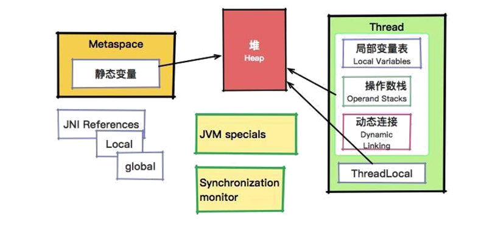
有两个注意点：
- 我们这里说的是活跃的引用，而不是对象，对象是不能作为 GC Roots 的。
- GC 过程是找出所有活对象，并把其余空间认定为“无用”；而不是找出所有死掉的对象，并回收它们占用的空间。所以，哪怕 JVM 的堆非常的大，基于 tracing 的 GC 方式，回收速度也会非常快。
引用级别
接下来的一道面试题就有意思多了：能够找到 Reference Chain 的对象，就一定会存活么？
我在面试的时候，经常会问这些问题，比如“弱引用有什么用处”？令我感到奇怪的是，即使是一些工作多年的 Java 工程师，对待这个问题也是一知半解，错失了很多机会。
对象对于另外一个对象的引用，要看关系牢靠不牢靠，可能在链条的其中一环，就断掉了。

根据发生 GC 时，这条链条的表现，可以对这个引用关系进行更加细致的划分。
它们的关系，可以分为强引用、软引用、弱引用、虚引用等。
强引用 Strong references
当内存空间不足，系统撑不住了，JVM 就会抛出 OutOfMemoryError 错误。即使程序会异常终止，这种对象也不会被回收。这种引用属于最普通最强硬的一种存在，只有在和 GC Roots 断绝关系时，才会被消灭掉。
这种引用，你每天的编码都在用。例如：new 一个普通的对象。
Object obj = new Object()
这种方式可能是有问题的。假如你的系统被大量用户（User）访问，你需要记录这个 User 访问的时间。可惜的是，User 对象里并没有这个字段，所以我们决定将这些信息额外开辟一个空间进行存放。
static Map<User,Long> userVisitMap = new HashMap<>();
...
userVisitMap.put(user, time);
当你用完了 User 对象，其实你是期望它被回收掉的。但是，由于它被 userVisitMap 引用，我们没有其他手段 remove 掉它。这个时候，就发生了内存泄漏（memory leak）。
这种情况还通常发生在一个没有设定上限的 Cache 系统，由于设置了不正确的引用方式，加上不正确的容量，很容易造成 OOM。
软引用 Soft references
软引用用于维护一些可有可无的对象。在内存足够的时候，软引用对象不会被回收，只有在内存不足时，系统则会回收软引用对象，如果回收了软引用对象之后仍然没有足够的内存，才会抛出内存溢出异常。
可以看到，这种特性非常适合用在缓存技术上。比如网页缓存、图片缓存等。
Guava 的 CacheBuilder，就提供了软引用和弱引用的设置方式。在这种场景中，软引用比强引用安全的多。
软引用可以和一个引用队列（ReferenceQueue）联合使用，如果软引用所引用的对象被垃圾回收，Java 虚拟机就会把这个软引用加入到与之关联的引用队列中。
我们可以看一下它的代码。软引用需要显式的声明，使用泛型来实现。
// 伪代码
Object object = new Object();
SoftReference<Object> softRef = new SoftReference(object);
这里有一个相关的 JVM 参数。它的意思是：每 MB 堆空闲空间中 SoftReference 的存活时间。这个值的默认时间是1秒（1000）。
-XX:SoftRefLRUPolicyMSPerMB=<N>
这里要特别说明的是，网络上一些流传的优化方法，即把这个值设置成 0，其实是错误的，这样容易引发故障，感兴趣的话你可以自行搜索一下。
这种比较偏门的优化手段，除非在你对其原理相当了解的情况下，才能设置一些比较特殊的值。比如 0 值，无限大等，这种值在 JVM 的设置中，最好不要发生。
弱引用 Weak references
弱引用对象相比较软引用，要更加无用一些，它拥有更短的生命周期。
当 JVM 进行垃圾回收时，无论内存是否充足，都会回收被弱引用关联的对象。弱引用拥有更短的生命周期，在 Java 中，用 java.lang.ref.WeakReference 类来表示。
它的应用场景和软引用类似，可以在一些对内存更加敏感的系统里采用。它的使用方式类似于这段的代码：
// 伪代码
Object object = new Object();
WeakReference<Object> softRef = new WeakReference(object);
虚引用 Phantom References
这是一种形同虚设的引用，在现实场景中用的不是很多。虚引用必须和引用队列（ReferenceQueue）联合使用。如果一个对象仅持有虚引用，那么它就和没有任何引用一样，在任何时候都可能被垃圾回收。
实际上，虚引用的 get，总是返回 null。
Object object = new Object();
ReferenceQueue queue = new ReferenceQueue();
// 虚引用，必须与一个引用队列关联
PhantomReference pr = new PhantomReference(object, queue);
虚引用主要用来跟踪对象被垃圾回收的活动。
当垃圾回收器准备回收一个对象时，如果发现它还有虚引用，就会在回收对象之前，把这个虚引用加入到与之关联的引用队列中。
程序如果发现某个虚引用已经被加入到引用队列，那么就可以在所引用的对象的内存被回收之前采取必要的行动。
下面的方法，就是一个用于监控 GC 发生的例子。
private static void startMonitoring(ReferenceQueue<MyObject> referenceQueue, Reference<MyObject> ref) {
ExecutorService ex = Executors.newSingleThreadExecutor();
ex.execute(() -> {
while (referenceQueue.poll()!=ref) {
//don't hang forever
if(finishFlag){
break;
}
}
System.out.println("-- ref gc'ed --");
});
ex.shutdown();
}
基于虚引用，有一个更加优雅的实现方式，那就是 Java 9 以后新加入的 Cleaner，用来替代 Object 类的 finalizer 方法。
典型 OOM 场景
OOM 的全称是 Out Of Memory，那我们的内存区域有哪些会发生 OOM 呢？我们可以从内存区域划分图上，看一下彩色部分。
可以看到除了程序计数器，其他区域都有OOM溢出的可能。但是最常见的还是发生在堆上。
所以 OOM 到底是什么引起的呢？有几个原因：
- 内存的容量太小了，需要扩容，或者需要调整堆的空间。
- 错误的引用方式，发生了内存泄漏。没有及时的切断与 GC Roots 的关系。比如线程池里的线程，在复用的情况下忘记清理 ThreadLocal 的内容。
- 接口没有进行范围校验，外部传参超出范围。比如数据库查询时的每页条数等。
- 对堆外内存无限制的使用。这种情况一旦发生更加严重，会造成操作系统内存耗尽。
典型的内存泄漏场景，原因在于对象没有及时的释放自己的引用。比如一个局部变量，被外部的静态集合引用。

你在平常写代码时，一定要注意这种情况，千万不要为了方便把对象到处引用。即使引用了，也要在合适时机进行手动清理。关于这部分的问题根源排查，我们将在实践课程中详细介绍。
小结
你可以注意到 GC Roots 的专业叫法，就是可达性分析法。另外，还有一种叫作引用计数法的方式，在判断对象的存活问题上，经常被提及。
因为有循环依赖的硬伤，现在主流的 JVM，没有一个是采用引用计数法来实现 GC 的，所以我们大体了解一下就可以。引用计数法是在对象头里维护一个 counter 计数器，被引用一次数量 +1，引用失效记数 -1。计数器为 0 时，就被认为无效。你现在可以忘掉引用计数的方式了。
本课时，我们详细介绍了 GC Roots 都包含哪些内容。HostSpot 采用 tracing 的方式进行 GC，内存回收的速度与处于 living 状态的对象数量有关。
这部分涉及的内容较多，如果面试被问到，你可以采用白话版的方式进行介绍，然后举例深入。
接下来，我们了解到四种不同强度的引用类型，尤其是软引用和虚引用，在平常工作中使用还是比较多的。这里面最不常用的就是虚引用，但是它引申出来的 Cleaner 类，是用来替代 finalizer 方法的，这是一个比较重要的知识点。
本课时最后讨论了几种典型的 OOM 场景，你可能现在对其概念比较模糊。接下来的课时，我们将详细介绍几个常见的垃圾回收算法，然后对这些 OOM 的场景逐个击破。
06 深入剖析：垃圾回收你真的了解吗？（上）
本课时我们重点剖析 JVM 的垃圾回收机制。关于 JVM 垃圾回收机制面试中主要涉及这三个考题：
- JVM 中有哪些垃圾回收算法？它们各自有什么优劣？
- CMS 垃圾回收器是怎么工作的？有哪些阶段？
- 服务卡顿的元凶到底是谁？
虽然 Java 不用“手动管理”内存回收，代码写起来很顺畅。但是你有没有想过，这些内存是怎么被回收的？
其实，JVM 是有专门的线程在做这件事情。当我们的内存空间达到一定条件时，会自动触发。这个过程就叫作 GC，负责 GC 的组件，就叫作垃圾回收器。
JVM 规范并没有规定垃圾回收器怎么实现，它只需要保证不要把正在使用的对象给回收掉就可以。在现在的服务器环境中，经常被使用的垃圾回收器有 CMS 和 G1，但 JVM 还有其他几个常见的垃圾回收器。
按照语义上的意思，垃圾回收，首先就需要找到这些垃圾，然后回收掉。但是 GC 过程正好相反，它是先找到活跃的对象，然后把其他不活跃的对象判定为垃圾，然后删除。所以垃圾回收只与活跃的对象有关，和堆的大小无关。这个概念是我们一直在强调的，你一定要牢记。
本课时将首先介绍几种非常重要的回收算法，然后着重介绍分代垃圾回收的内存划分和 GC 过程，最后介绍当前 JVM 中的几种常见垃圾回收器。
这部分内容比较多，也比较细。为了知识的连贯性，这里我直接将它们放在一个课时。篇幅有点长，你一定要有耐心学完，也希望你可以对 JVM 的了解上一个档次。
为什么这部分这么重要呢？是因为几乎所有的垃圾回收器，都是在这些基本思想上演化出来的，如果你对此不熟悉，那么我们后面讲解 CMS、G1、ZGC 的时候，就会有诸多障碍。这将直接影响到我们对实践课的理解。
标记（Mark）
垃圾回收的第一步，就是找出活跃的对象。我们反复强调 GC 过程是逆向的。
我们在前面的课时谈到 GC Roots。根据 GC Roots 遍历所有的可达对象，这个过程，就叫作标记。
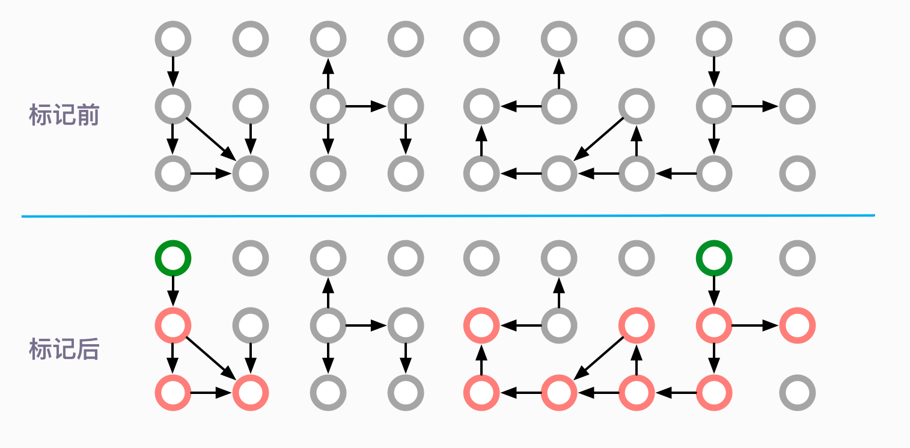
如图所示，圆圈代表的是对象。绿色的代表 GC Roots，红色的代表可以追溯到的对象。可以看到标记之后，仍然有多个灰色的圆圈，它们都是被回收的对象。
清除（Sweep）
清除阶段就是把未被标记的对象回收掉。
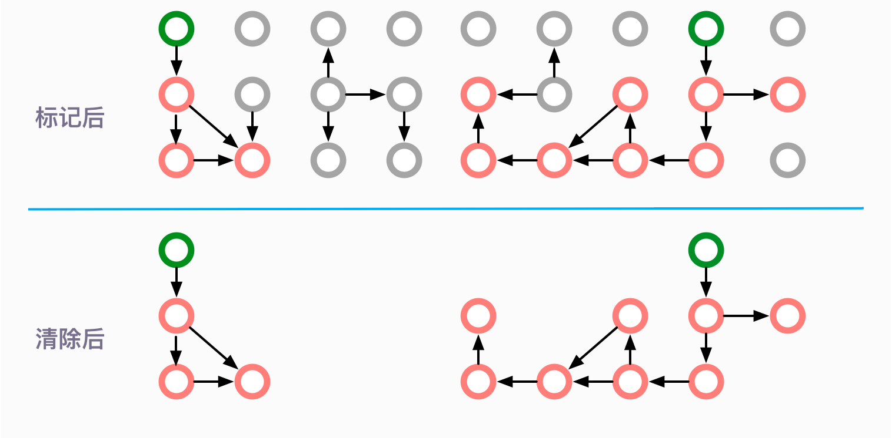
但是这种简单的清除方式，有一个明显的弊端，那就是碎片问题。
比如我申请了 1k、2k、3k、4k、5k 的内存。
由于某种原因 ，2k 和 4k 的内存，我不再使用，就需要交给垃圾回收器回收。

这个时候，我应该有足足 6k 的空闲空间。接下来，我打算申请另外一个 5k 的空间，结果系统告诉我内存不足了。系统运行时间越长，这种碎片就越多。
在很久之前使用 Windows 系统时，有一个非常有用的功能，就是内存整理和磁盘整理，运行之后有可能会显著提高系统性能。这个出发点是一样的。
复制（Copy）
解决碎片问题没有银弹，只有老老实实的进行内存整理。
有一个比较好的思路可以完成这个整理过程，就是提供一个对等的内存空间，将存活的对象复制过去，然后清除原内存空间。
在程序设计中，一般遇到扩缩容或者碎片整理问题时，复制算法都是非常有效的。比如：HashMap 的扩容也是使用同样的思路，Redis 的 rehash 也是类似的。
整个过程如图所示：

这种方式看似非常完美的，解决了碎片问题。但是，它的弊端也非常明显。它浪费了几乎一半的内存空间来做这个事情，如果资源本来就很有限，这就是一种无法容忍的浪费。
整理（Compact）
其实，不用分配一个对等的额外空间，也是可以完成内存的整理工作。
你可以把内存想象成一个非常大的数组，根据随机的 index 删除了一些数据。那么对整个数组的清理，其实是不需要另外一个数组来进行支持的，使用程序就可以实现。
它的主要思路，就是移动所有存活的对象，且按照内存地址顺序依次排列，然后将末端内存地址以后的内存全部回收。
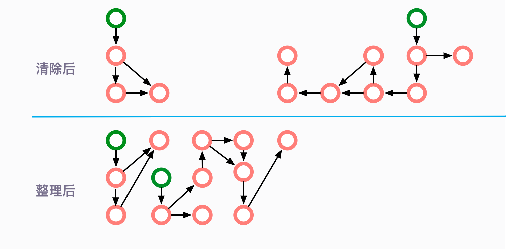
我们可以用一个理想的算法来看一下这个过程。
last = 0
for(i=0;i<mems.length;i++){
if(mems[i] != null){
mems[last++] = mems[i]
changeReference(mems[last])
}
}
clear(mems,last,mems.length)
但是需要注意，这只是一个理想状态。对象的引用关系一般都是非常复杂的，我们这里不对具体的算法进行描述。你只需要了解，从效率上来说，一般整理算法是要低于复制算法的。
分代
我们简要介绍了一些常见的内存回收算法，目前，JVM 的垃圾回收器，都是对几种朴素算法的发扬光大。简单看一下它们的特点：
- 复制算法（Copy）
复制算法是所有算法里面效率最高的，缺点是会造成一定的空间浪费。
- 标记-清除（Mark-Sweep）
效率一般，缺点是会造成内存碎片问题。
- 标记-整理（Mark-Compact）
效率比前两者要差，但没有空间浪费，也消除了内存碎片问题。
所以，没有最优的算法，只有最合适的算法。
JVM 是计算节点，而不是存储节点。最理想的情况，就是对象在用完之后，它的生命周期立马就结束了。而那些被频繁访问的资源，我们希望它能够常驻在内存里。
研究表明，大部分对象，可以分为两类：
- 大部分对象的生命周期都很短；
- 其他对象则很可能会存活很长时间。
大部分死的快，其他的活的长。这个假设我们称之为弱代假设（weak generational hypothesis）。
接下来划重点。

从图中可以看到，大部分对象是朝生夕灭的，其他的则活的很久。
现在的垃圾回收器，都会在物理上或者逻辑上，把这两类对象进行区分。我们把死的快的对象所占的区域，叫作年轻代（Young generation）。把其他活的长的对象所占的区域，叫作老年代（Old generation）。
老年代在有些地方也会叫作 Tenured Generation，你在看到时明白它的意思就可以了。

年轻代
年轻代使用的垃圾回收算法是复制算法。因为年轻代发生 GC 后，只会有非常少的对象存活，复制这部分对象是非常高效的。
我们前面也了解到复制算法会造成一定的空间浪费，所以年轻代中间也会分很多区域。

如图所示，年轻代分为：一个伊甸园空间（Eden ），两个幸存者空间（Survivor ）。
当年轻代中的 Eden 区分配满的时候，就会触发年轻代的 GC（Minor GC）。具体过程如下：
- 在 Eden 区执行了第一次 GC 之后，存活的对象会被移动到其中一个 Survivor 分区（以下简称from）；
- Eden 区再次 GC，这时会采用复制算法，将 Eden 和 from 区一起清理。存活的对象会被复制到 to 区；接下来，只需要清空 from 区就可以了。
所以在这个过程中，总会有一个 Survivor 分区是空置的。Eden、from、to 的默认比例是 8:1:1，所以只会造成 10% 的空间浪费。
这个比例，是由参数 -XX:SurvivorRatio 进行配置的（默认为 8）。
一般情况下，我们只需要了解到这一层面就 OK 了。但是在平常的面试中，还有一个点会经常提到，虽然频率不太高，它就是 TLAB，我们在这里也简单介绍一下。
TLAB 的全称是 Thread Local Allocation Buffer，JVM 默认给每个线程开辟一个 buffer 区域，用来加速对象分配。这个 buffer 就放在 Eden 区中。
这个道理和 Java 语言中的 ThreadLocal 类似，避免了对公共区的操作，以及一些锁竞争。
对象的分配优先在 TLAB上 分配，但 TLAB 通常都很小，所以对象相对比较大的时候，会在 Eden 区的共享区域进行分配。
TLAB 是一种优化技术，类似的优化还有对象的栈上分配（这可以引出逃逸分析的话题，默认开启）。这属于非常细节的优化，不做过多介绍，但偶尔面试也会被问到。
老年代
老年代一般使用“标记-清除”、“标记-整理”算法，因为老年代的对象存活率一般是比较高的，空间又比较大，拷贝起来并不划算，还不如采取就地收集的方式。
那么，对象是怎么进入老年代的呢？有多种途径。
（1）提升（Promotion）
如果对象够老，会通过“提升”进入老年代。
关于对象老不老，是通过它的年龄（age）来判断的。每当发生一次 Minor GC，存活下来的对象年龄都会加 1。直到达到一定的阈值，就会把这些“老顽固”给提升到老年代。
这些对象如果变的不可达，直到老年代发生 GC 的时候，才会被清理掉。
这个阈值，可以通过参数 ‐XX:+MaxTenuringThreshold 进行配置，最大值是 15，因为它是用 4bit 存储的（所以网络上那些要把这个值调的很大的文章，是没有什么根据的）。
（2）分配担保
看一下年轻代的图，每次存活的对象，都会放入其中一个幸存区，这个区域默认的比例是 10%。但是我们无法保证每次存活的对象都小于 10%，当 Survivor 空间不够，就需要依赖其他内存（指老年代）进行分配担保。这个时候，对象也会直接在老年代上分配。
（3）大对象直接在老年代分配
超出某个大小的对象将直接在老年代分配。这个值是通过参数 -XX:PretenureSizeThreshold 进行配置的。默认为 0，意思是全部首选 Eden 区进行分配。
（4）动态对象年龄判定
有的垃圾回收算法，并不要求 age 必须达到 15 才能晋升到老年代，它会使用一些动态的计算方法。比如，如果幸存区中相同年龄对象大小的和，大于幸存区的一半，大于或等于 age 的对象将会直接进入老年代。
这些动态判定一般不受外部控制，我们知道有这么回事就可以了。通过下图可以看一下一个对象的分配逻辑。
卡片标记（card marking）
你可以看到，对象的引用关系是一个巨大的网状。有的对象可能在 Eden 区，有的可能在老年代，那么这种跨代的引用是如何处理的呢？由于 Minor GC 是单独发生的，如果一个老年代的对象引用了它，如何确保能够让年轻代的对象存活呢？
对于是、否的判断，我们通常都会用 Bitmap（位图）和布隆过滤器来加快搜索的速度。如果你不知道这个概念就需要课后补补课了。
JVM 也是用了类似的方法。其实，老年代是被分成众多的卡页（card page）的（一般数量是 2 的次幂）。
卡表（Card Table）就是用于标记卡页状态的一个集合，每个卡表项对应一个卡页。
如果年轻代有对象分配，而且老年代有对象指向这个新对象， 那么这个老年代对象所对应内存的卡页，就会标识为 dirty，卡表只需要非常小的存储空间就可以保留这些状态。
垃圾回收时，就可以先读这个卡表，进行快速判断。
HotSpot 垃圾回收器
接下来介绍 HotSpot 的几个垃圾回收器，每种回收器都有各自的特点。我们在平常的 GC 优化时，一定要搞清楚现在用的是哪种垃圾回收器。
在此之前，我们把上面的分代垃圾回收整理成一张大图，在介绍下面的收集器时，你可以对应一下它们的位置。
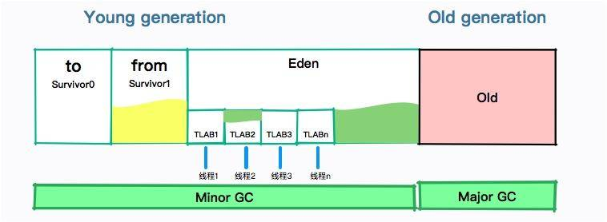
年轻代垃圾回收器
（1）Serial 垃圾收集器
处理 GC 的只有一条线程，并且在垃圾回收的过程中暂停一切用户线程。
这可以说是最简单的垃圾回收器，但千万别以为它没有用武之地。因为简单，所以高效，它通常用在客户端应用上。因为客户端应用不会频繁创建很多对象，用户也不会感觉出明显的卡顿。相反，它使用的资源更少，也更轻量级。
（2）ParNew 垃圾收集器
ParNew 是 Serial 的多线程版本。由多条 GC 线程并行地进行垃圾清理。清理过程依然要停止用户线程。
ParNew 追求“低停顿时间”，与 Serial 唯一区别就是使用了多线程进行垃圾收集，在多 CPU 环境下性能比 Serial 会有一定程度的提升；但线程切换需要额外的开销，因此在单 CPU 环境中表现不如 Serial。
（3）Parallel Scavenge 垃圾收集器
另一个多线程版本的垃圾回收器。它与 ParNew 的主要区别是：
- Parallel Scavenge：追求 CPU 吞吐量，能够在较短时间内完成指定任务，适合没有交互的后台计算。弱交互强计算。
- ParNew：追求降低用户停顿时间，适合交互式应用。强交互弱计算。
老年代垃圾收集器
（1）Serial Old 垃圾收集器
与年轻代的 Serial 垃圾收集器对应，都是单线程版本，同样适合客户端使用。
年轻代的 Serial，使用复制算法。
老年代的 Old Serial，使用标记-整理算法。
（2）Parallel Old
Parallel Old 收集器是 Parallel Scavenge 的老年代版本，追求 CPU 吞吐量。
（3）CMS 垃圾收集器
CMS（Concurrent Mark Sweep）收集器是以获取最短 GC 停顿时间为目标的收集器，它在垃圾收集时使得用户线程和 GC 线程能够并发执行，因此在垃圾收集过程中用户也不会感到明显的卡顿。我们会在后面的课时详细介绍它。
长期来看，CMS 垃圾回收器，是要被 G1 等垃圾回收器替换掉的。在 Java8 之后，使用它将会抛出一个警告。
Java HotSpot(TM) 64-Bit Server VM warning: Option UseConcMarkSweepGC was deprecated in version 9.0 and will likely be removed in a future release.
配置参数
除了上面几个垃圾回收器，我们还有 G1、ZGC 等更加高级的垃圾回收器，它们都有专门的配置参数来使其生效。
通过 -XX:+PrintCommandLineFlags 参数，可以查看当前 Java 版本默认使用的垃圾回收器。你可以看下我的系统中 Java13 默认的收集器就是 G1。
java -XX:+PrintCommandLineFlags -version
-XX:G1ConcRefinementThreads=4 -XX:GCDrainStackTargetSize=64 -XX:InitialHeapSize=134217728 -XX:MaxHeapSize=2147483648 -XX:MinHeapSize=6815736 -XX:+PrintCommandLineFlags -XX:ReservedCodeCacheSize=251658240 -XX:+SegmentedCodeCache -XX:+UseCompressedClassPointers -XX:+UseCompressedOops -XX:+UseG1GC
java version "13.0.1" 2019-10-15
Java(TM) SE Runtime Environment (build 13.0.1+9)
Java HotSpot(TM) 64-Bit Server VM (build 13.0.1+9, mixed mode, sharing)
以下是一些配置参数：
- -XX:+UseSerialGC 年轻代和老年代都用串行收集器
- -XX:+UseParNewGC 年轻代使用 ParNew，老年代使用 Serial Old
- -XX:+UseParallelGC 年轻代使用 ParallerGC，老年代使用 Serial Old
- -XX:+UseParallelOldGC 新生代和老年代都使用并行收集器
- -XX:+UseConcMarkSweepGC，表示年轻代使用 ParNew，老年代的用 CMS
- -XX:+UseG1GC 使用 G1垃圾回收器
- -XX:+UseZGC 使用 ZGC 垃圾回收器
为了让你有个更好的印象，请看下图。它们的关系还是比较复杂的。尤其注意 -XX:+UseParNewGC 这个参数，已经在 Java9 中就被抛弃了。很多程序（比如 ES）会报这个错误，不要感到奇怪。

有这么多垃圾回收器和参数，那我们到底用什么？在什么地方优化呢？
目前，虽然 Java 的版本比较高，但是使用最多的还是 Java8。从 Java8 升级到高版本的 Java 体系，是有一定成本的，所以 CMS 垃圾回收器还会持续一段时间。
线上使用最多的垃圾回收器，就有 CMS 和 G1，以及 Java8 默认的 Parallel Scavenge。
- CMS 的设置参数：-XX:+UseConcMarkSweepGC。
- Java8 的默认参数：-XX:+UseParallelGC。
- Java13 的默认参数：-XX:+UseG1GC。
我们的实战练习的课时中，就集中会使用这几个参数。
STW
你有没有想过，如果在垃圾回收的时候（不管是标记还是整理复制），又有新的对象进入怎么办？
为了保证程序不会乱套，最好的办法就是暂停用户的一切线程。也就是在这段时间，你是不能 new 对象的，只能等待。表现在 JVM 上就是短暂的卡顿，什么都干不了。这个头疼的现象，就叫作 Stop the world。简称 STW。
标记阶段，大多数是要 STW 的。如果不暂停用户进程，在标记对象的时候，有可能有其他用户线程会产生一些新的对象和引用，造成混乱。
现在的垃圾回收器，都会尽量去减少这个过程。但即使是最先进的 ZGC，也会有短暂的 STW 过程。我们要做的就是在现有基础设施上，尽量减少 GC 停顿。
你可能对 STW 的影响没有什么概念，我举个例子来说明下。
某个高并发服务的峰值流量是 10 万次/秒，后面有 10 台负载均衡的机器，那么每台机器平均下来需要 1w/s。假如某台机器在这段时间内发生了 STW，持续了 1 秒，那么本来需要 10ms 就可以返回的 1 万个请求，需要至少等待 1 秒钟。
在用户那里的表现，就是系统发生了卡顿。如果我们的 GC 非常的频繁，这种卡顿就会特别的明显，严重影响用户体验。
虽然说 Java 为我们提供了非常棒的自动内存管理机制，但也不能滥用，因为它是有 STW 硬伤的。
小结
本课时的内容很多。由于篇幅有限，我们仅介绍了最重要的点，要是深挖下去，估计一本书都写不完。
归根结底，各色的垃圾回收器就是为了解决头疼的 STW 问题，让 GC 时间更短，停顿更小，吞吐量更大。
现在的回收器，基于弱代假设，大多是分代回收的理念。针对年轻代和老年代，有多种不同的垃圾回收算法，有些可以组合使用。
我们尤其讲解了年轻代的垃圾回收。
- 年轻代是 GC 的重灾区，大部分对象活不到老年代；
- 面试经常问，都是些非常朴素的原理；
- 为我们后面对 G1 和 ZGC 的介绍打下基础。
我们也接触了大量的名词。让我们来总结一下：
算法
-
Mark
-
Sweep
-
Copy
-
Compact
分代
-
Young generation
-
Survivor
-
Eden
-
Old generation | Tenured Generation
-
GC
-
- Minor GC
- Major GC
名词
- weak generational hypothesis
- 分配担保
- 提升
- 卡片标记
- STW
文中图片关于 Eden、from、to 区的划分以及堆的划分，是很多面试官非常喜欢问的。但是有些面试官的问题非常陈旧，因为 JVM 的更新迭代有点快，你不要去反驳。有些痛点是需要实践才能体验到，心平气和的讲解这些变化，会让你在面试中掌握主动地位。
07 深入剖析：垃圾回收你真的了解吗？（下）
由于上一课时篇幅比较多，我们在这一课时重点讲解上一课时中提到的 CMS 垃圾回收器，让你可以更好的理解垃圾回收的过程。
在这里首先给你介绍几个概念：
- Minor GC：发生在年轻代的 GC。
- Major GC：发生在老年代的 GC。
- Full GC：全堆垃圾回收。比如 Metaspace 区引起年轻代和老年代的回收。
理解了这三个概念，我们再往下看。
CMS 的全称是 Mostly Concurrent Mark and Sweep Garbage Collector（主要并发标记清除垃圾收集器），它在年轻代使用复制算法，而对老年代使用标记-清除算法。你可以看到，在老年代阶段，比起 Mark-Sweep，它多了一个并发字样。
CMS 的设计目标，是避免在老年代 GC 时出现长时间的卡顿（但它并不是一个老年代回收器）。如果你不希望有长时间的停顿，同时你的 CPU 资源也比较丰富，使用 CMS 是比较合适的。
CMS 使用的是 Sweep 而不是 Compact，所以它的主要问题是碎片化。随着 JVM 的长时间运行，碎片化会越来越严重，只有通过 Full GC 才能完成整理。
为什么 CMS 能够获得更小的停顿时间呢？主要是因为它把最耗时的一些操作，做成了和应用线程并行。接下来我们简要看一下这个过程。
CMS 回收过程
初始标记（Initial Mark）
初始标记阶段，只标记直接关联 GC root 的对象，不用向下追溯。因为最耗时的就在 tracing 阶段，这样就极大地缩短了初始标记时间。
这个过程是 STW 的，但由于只是标记第一层，所以速度是很快的。
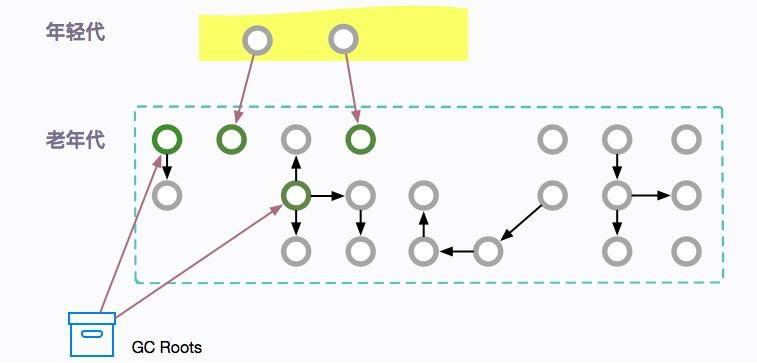
注意，这里除了要标记相关的 GC Roots 之外，还要标记年轻代中对象的引用，这也是 CMS 老年代回收，依然要扫描新生代的原因。
并发标记（Concurrent Mark）
在初始标记的基础上，进行并发标记。这一步骤主要是 tracinng 的过程，用于标记所有可达的对象。
这个过程会持续比较长的时间，但却可以和用户线程并行。在这个阶段的执行过程中，可能会产生很多变化：
- 有些对象，从新生代晋升到了老年代；
- 有些对象，直接分配到了老年代；
- 老年代或者新生代的对象引用发生了变化。
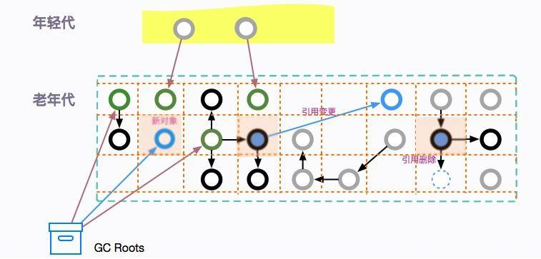
还记得我们在上一课时提到的卡片标记么？在这个阶段受到影响的老年代对象所对应的卡页，会被标记为 dirty，用于后续重新标记阶段的扫描。
并发预清理（Concurrent Preclean）
并发预清理也是不需要 STW 的，目的是为了让重新标记阶段的 STW 尽可能短。这个时候，老年代中被标记为 dirty 的卡页中的对象，就会被重新标记，然后清除掉 dirty 的状态。
由于这个阶段也是可以并发的，在执行过程中引用关系依然会发生一些变化。我们可以假定这个清理动作是第一次清理。
所以重新标记阶段，有可能还会有处于 dirty 状态的卡页。
并发可取消的预清理（Concurrent Abortable Preclean）
因为重新标记是需要 STW 的，所以会有很多次预清理动作。并发可取消的预清理，顾名思义，在满足某些条件的时候，可以终止，比如迭代次数、有用工作量、消耗的系统时间等。
这个阶段是可选的。换句话说，这个阶段是“并发预清理”阶段的一种优化。
这个阶段的第一个意图，是避免回扫年轻代的大量对象；另外一个意图，就是当满足最终标记的条件时，自动退出。
我们在前面说过，标记动作是需要扫描年轻代的。如果年轻代的对象太多，肯定会严重影响标记的时间。如果在此之前能够进行一次 Minor GC，情况会不会变得好了许多？
CMS 提供了参数 CMSScavengeBeforeRemark，可以在进入重新标记之前强制进行一次 Minor GC。
但请你记住一件事情，GC 的停顿是不分什么年轻代老年代的。设置了上面的参数，可能会在一个比较长的 Minor GC 之后，紧跟着一个 CMS 的 Remark，它们都是 STW 的。
这部分有非常多的配置参数。但是一般都不会去改动。
最终标记（Final Remark）
通常 CMS 会尝试在年轻代尽可能空的情况下运行 Final Remark 阶段，以免接连多次发生 STW 事件。
这是 CMS 垃圾回收阶段的第二次 STW 阶段，目标是完成老年代中所有存活对象的标记。我们前面多轮的 preclean 阶段，一直在和应用线程玩追赶游戏，有可能跟不上引用的变化速度。本轮的标记动作就需要 STW 来处理这些情况。
如果预处理阶段做的不够好，会显著增加本阶段的 STW 时间。你可以看到，CMS 垃圾回收器把回收过程分了多个部分，而影响最大的不是 STW 阶段本身，而是它之前的预处理动作。
并发清除（Concurrent Sweep）
此阶段用户线程被重新激活，目标是删掉不可达的对象，并回收它们的空间。
由于 CMS 并发清理阶段用户线程还在运行中，伴随程序运行自然就还会有新的垃圾不断产生，这一部分垃圾出现在标记过程之后，CMS 无法在当次 GC 中处理掉它们，只好留待下一次 GC 时再清理掉。这一部分垃圾就称为“浮动垃圾”。
并发重置（Concurrent Reset）
此阶段与应用程序并发执行，重置 CMS 算法相关的内部数据，为下一次 GC 循环做准备。
内存碎片
由于 CMS 在执行过程中，用户线程还需要运行，那就需要保证有充足的内存空间供用户使用。如果等到老年代空间快满了，再开启这个回收过程，用户线程可能会产生“Concurrent Mode Failure”的错误，这时会临时启用 Serial Old 收集器来重新进行老年代的垃圾收集，这样停顿时间就很长了（STW）。
这部分空间预留，一般在 30% 左右即可，那么能用的大概只有 70%。参数 -XX:CMSInitiatingOccupancyFraction 用来配置这个比例（记得要首先开启参数UseCMSInitiatingOccupancyOnly）。也就是说，当老年代的使用率达到 70%，就会触发 GC 了。如果你的系统老年代增长不是太快，可以调高这个参数，降低内存回收的次数。
其实，这个比率非常不好设置。一般在堆大小小于 2GB 的时候，都不会考虑 CMS 垃圾回收器。
另外，CMS 对老年代回收的时候，并没有内存的整理阶段。这就造成程序在长时间运行之后，碎片太多。如果你申请一个稍大的对象，就会引起分配失败。
CMS 提供了两个参数来解决这个问题：
（1） UseCMSCompactAtFullCollection（默认开启），表示在要进行 Full GC 的时候，进行内存碎片整理。内存整理的过程是无法并发的，所以停顿时间会变长。
（2）CMSFullGCsBeforeCompaction，每隔多少次不压缩的 Full GC 后，执行一次带压缩的 Full GC。默认值为 0，表示每次进入 Full GC 时都进行碎片整理。
所以，预留空间加上内存的碎片，使用 CMS 垃圾回收器的老年代，留给我们的空间就不是太多，这也是 CMS 的一个弱点。

小结
一般的，我们将 CMS 垃圾回收器分为四个阶段：
- 初始标记
- 并发标记
- 重新标记
- 并发清理
我们总结一下 CMS 中都会有哪些停顿（STW）：
- 初始标记，这部分的停顿时间较短；
- Minor GC（可选），在预处理阶段对年轻代的回收，停顿由年轻代决定；
- 重新标记，由于 preclaen 阶段的介入，这部分停顿也较短；
- Serial-Old 收集老年代的停顿，主要发生在预留空间不足的情况下，时间会持续很长；
- Full GC，永久代空间耗尽时的操作，由于会有整理阶段，持续时间较长。
在发生 GC 问题时，你一定要明确发生在哪个阶段，然后对症下药。gclog 通常能够非常详细的表现这个过程。
我们再来看一下 CMS 的 trade-off。
优势：
低延迟，尤其对于大堆来说。大部分垃圾回收过程并发执行。
劣势：
- 内存碎片问题。Full GC 的整理阶段，会造成较长时间的停顿。
- 需要预留空间，用来分配收集阶段产生的“浮动垃圾”。
- 使用更多的 CPU 资源，在应用运行的同时进行堆扫描。
CMS 是一种高度可配置的复杂算法，因此给 JDK 中的 GC 代码库带来了很多复杂性。由于 G1 和 ZGC 的产生，CMS 已经在被废弃的路上。但是，目前仍然有大部分应用是运行在 Java8 及以下的版本之上，针对它的优化，还是要持续很长一段时间。
08 大厂面试题：有了 G1 还需要其他垃圾回收器吗？
本课时我们主要来看下这两个高频的面试考题：
- G1 的回收原理是什么？为什么 G1 比传统 GC 回收性能好？
- 为什么 G1 如此完美仍然会有 ZGC？
我们在上一课时，简要的介绍了 CMS 垃圾回收器，下面我们简单回忆一下它的一个极端场景（而且是经常发生的场景）。
在发生 Minor GC 时，由于 Survivor 区已经放不下了，多出的对象只能提升（promotion）到老年代。但是此时老年代因为空间碎片的缘故，会发生 concurrent mode failure 的错误。这个时候，就需要降级为 Serail Old 垃圾回收器进行收集。这就是比 concurrent mode failure 更加严重的 promotion failed 问题。
一次简单的 Major GC，竟然能演化成耗时最长的 Full GC。最要命的是，这个停顿时间是不可预知的。
有没有一种办法，能够首先定义一个停顿时间，然后反向推算收集内容呢？就像是领导在年初制定 KPI 一样，分配的任务多就多干些，分配的任务少就少干点。
很久之前就有领导教导过我，如果你列的目标太大，看起来无法完成，不要怕。有一个叫作里程碑的名词，可以让我们以小跑的姿态，完成一次马拉松。
G1 的思路说起来也类似，它不要求每次都把垃圾清理的干干净净，它只是努力做它认为对的事情。
我们要求 G1，在任意 1 秒的时间内，停顿不得超过 10ms，这就是在给它制定 KPI。G1 会尽量达成这个目标，它能够推算出本次要收集的大体区域，以增量的方式完成收集。
这也是使用 G1 垃圾回收器不得不设置的一个参数：
-XX:MaxGCPauseMillis=10
为什么叫 G1
G1 的目标是用来干掉 CMS 的，它同样是一款软实时垃圾回收器。相比 CMS，G1 的使用更加人性化。比如，CMS 垃圾回收器的相关参数有 72 个，而 G1 的参数只有 26 个。
G1 的全称是 GarbageFirst GC，为了达成上面制定的 KPI，它和前面介绍的垃圾回收器，在对堆的划分上有一些不同。
其他的回收器，都是对某个年代的整体收集，收集时间上自然不好控制。G1 把堆切成了很多份，把每一份当作一个小目标，部分上目标很容易达成。
那又有一个面试题来啦：G1 有年轻代和老年代的区分吗？
如图所示，G1 也是有 Eden 区和 Survivor 区的概念的，只不过它们在内存上不是连续的，而是由一小份一小份组成的。
这一小份区域的大小是固定的，名字叫作小堆区（Region）。小堆区可以是 Eden 区，也可以是 Survivor 区，还可以是 Old 区。所以 G1 的年轻代和老年代的概念都是逻辑上的。
每一块 Region，大小都是一致的，它的数值是在 1M 到 32M 字节之间的一个 2 的幂值数。
但假如我的对象太大，一个 Region 放不下了怎么办？注意图中有一块面积很大的黄色区域，它的名字叫作 Humongous Region，大小超过 Region 50% 的对象，将会在这里分配。
Region 的大小，可以通过参数进行设置：
-XX:G1HeapRegionSize=
那么，回收的时候，到底回收哪些小堆区呢？是随机的么？
这当然不是。事实上，垃圾最多的小堆区，会被优先收集。这就是 G1 名字的由来。
G1 的垃圾回收过程
在逻辑上，G1 分为年轻代和老年代，但它的年轻代和老年代比例，并不是那么“固定”，为了达到 MaxGCPauseMillis 所规定的效果，G1 会自动调整两者之间的比例。
如果你强行使用 -Xmn 或者 -XX:NewRatio 去设定它们的比例的话，我们给 G1 设定的这个目标将会失效。
G1 的回收过程主要分为 3 类：
（1）G1“年轻代”的垃圾回收，同样叫 Minor GC，这个过程和我们前面描述的类似，发生时机就是 Eden 区满的时候。
（2）老年代的垃圾收集，严格上来说其实不算是收集，它是一个“并发标记”的过程，顺便清理了一点点对象。
（3）真正的清理，发生在“混合模式”，它不止清理年轻代，还会将老年代的一部分区域进行清理。
在 GC 日志里，这个过程描述特别有意思，（1）的过程，叫作 [GC pause (G1 Evacuation Pause) (young)，而（2）的过程，叫作 [GC pause (G1 Evacuation Pause) (mixed)。Evacuation 是转移的意思，和 Copy 的意思有点类似。
这三种模式之间的间隔也是不固定的。比如，1 次 Minor GC 后，发生了一次并发标记，接着发生了 9 次 Mixed GC。
RSet
RSet 是一个空间换时间的数据结构。
在第 6 课时中，我们提到过一个叫作卡表（Card Table）的数据结构，用来解决跨代引用的问题。RSet 的功能与此类似，它的全称是 Remembered Set，用于记录和维护 Region 之间的对象引用关系。
但 RSet 与 Card Table 有些不同的地方。Card Table 是一种 points-out（我引用了谁的对象）的结构。而 RSet 记录了其他 Region 中的对象引用本 Region 中对象的关系，属于 points-into 结构（谁引用了我的对象），有点倒排索引的味道。
你可以把 RSet 理解成一个 Hash，key 是引用的 Region 地址，value 是引用它的对象的卡页集合。
有了这个数据结构，在回收某个 Region 的时候，就不必对整个堆内存的对象进行扫描了。它使得部分收集成为了可能。
对于年轻代的 Region，它的 RSet 只保存了来自老年代的引用，这是因为年轻代的回收是针对所有年轻代 Region 的，没必要画蛇添足。所以说年轻代 Region 的 RSet 有可能是空的。
而对于老年代的 Region 来说，它的 RSet 也只会保存老年代对它的引用。这是因为老年代回收之前，会先对年轻代进行回收。这时，Eden 区变空了，而在回收过程中会扫描 Survivor 分区，所以也没必要保存来自年轻代的引用。
RSet 通常会占用很大的空间，大约 5% 或者更高。不仅仅是空间方面，很多计算开销也是比较大的。
事实上，为了维护 RSet，程序运行的过程中，写入某个字段就会产生一个 post-write barrier 。为了减少这个开销，将内容放入 RSet 的过程是异步的，而且经过了很多的优化：Write Barrier 把脏卡信息存放到本地缓冲区（local buffer），有专门的 GC 线程负责收集，并将相关信息传给被引用 Region 的 RSet。
参数 -XX:G1ConcRefinementThreads 或者 -XX:ParallelGCThreads 可以控制这个异步的过程。如果并发优化线程跟不上缓冲区的速度，就会在用户进程上完成。
具体回收过程
G1 还有一个 CSet 的概念。这个就比较好理解了，它的全称是 Collection Set，即收集集合，保存一次 GC 中将执行垃圾回收的区间（Region）。GC 是在 CSet 中的所有存活数据（Live Data）都会被转移。
了解了上面的数据结构，我们再来简要看一下回收过程。
年轻代回收
年轻代回收是一个 STW 的过程，它的跨代引用使用 RSet 数据结构来追溯，会一次性回收掉年轻代的所有 Region。
JVM 启动时，G1 会先准备好 Eden 区，程序在运行过程中不断创建对象到 Eden 区，当所有的 Eden 区都满了，G1 会启动一次年轻代垃圾回收过程。
年轻代的收集包括下面的回收阶段：
（1）扫描根
根，可以看作是我们前面介绍的 GC Roots，加上 RSet 记录的其他 Region 的外部引用。
（2）更新 RS
处理 dirty card queue 中的卡页，更新 RSet。此阶段完成后，RSet 可以准确的反映老年代对所在的内存分段中对象的引用。可以看作是第一步的补充。
（3）处理 RS
识别被老年代对象指向的 Eden 中的对象，这些被指向的 Eden 中的对象被认为是存活的对象。
（4）复制对象
没错，收集算法依然使用的是 Copy 算法。
在这个阶段，对象树被遍历，Eden 区内存段中存活的对象会被复制到 Survivor 区中空的 Region。这个过程和其他垃圾回收算法一样，包括对象的年龄和晋升，无需做过多介绍。
（5）处理引用
处理 Soft、Weak、Phantom、Final、JNI Weak 等引用。结束收集。
它的大体示意图如下所示。
并发标记（Concurrent Marking）
当整个堆内存使用达到一定比例（默认是 45%），并发标记阶段就会被启动。这个比例也是可以调整的，通过参数 -XX:InitiatingHeapOccupancyPercent 进行配置。
Concurrent Marking 是为 Mixed GC 提供标记服务的，并不是一次 GC 过程的一个必须环节。这个过程和 CMS 垃圾回收器的回收过程非常类似，你可以类比 CMS 的回收过程看一下。具体标记过程如下：
（1）初始标记（Initial Mark）
这个过程共用了 Minor GC 的暂停，这是因为它们可以复用 root scan 操作。虽然是 STW 的，但是时间通常非常短。
（2）Root 区扫描（Root Region Scan）
（3）并发标记（ Concurrent Mark）
这个阶段从 GC Roots 开始对 heap 中的对象标记，标记线程与应用程序线程并行执行，并且收集各个 Region 的存活对象信息。
（4）重新标记（Remaking）
和 CMS 类似，也是 STW 的。标记那些在并发标记阶段发生变化的对象。
（5）清理阶段（Cleanup）
这个过程不需要 STW。如果发现 Region 里全是垃圾，在这个阶段会立马被清除掉。不全是垃圾的 Region，并不会被立马处理，它会在 Mixed GC 阶段，进行收集。
了解 CMS 垃圾回收器后，上面这个过程就比较好理解。但是还有一个疑问需要稍微提一下。
如果在并发标记阶段，又有新的对象变化，该怎么办？
这是由算法 SATB 保证的。SATB 的全称是 Snapshot At The Beginning，它作用是保证在并发标记阶段的正确性。
这个快照是逻辑上的，主要是有几个指针，将 Region 分成个多个区段。如图所示，并发标记期间分配的对象，都会在 next TAMS 和 top 之间。
混合回收（Mixed GC）
能并发清理老年代中的整个整个的小堆区是一种最优情形。混合收集过程，不只清理年轻代，还会将一部分老年代区域也加入到 CSet 中。
通过 Concurrent Marking 阶段，我们已经统计了老年代的垃圾占比。在 Minor GC 之后，如果判断这个占比达到了某个阈值，下次就会触发 Mixed GC。这个阈值，由 -XX:G1HeapWastePercent 参数进行设置（默认是堆大小的 5%）。因为这种情况下， GC 会花费很多的时间但是回收到的内存却很少。所以这个参数也是可以调整 Mixed GC 的频率的。
还有参数 G1MixedGCCountTarget，用于控制一次并发标记之后，最多执行 Mixed GC 的次数。
ZGC
你有没有感觉，在系统切换到 G1 垃圾回收器之后，线上发生的严重 GC 问题已经非常少了？
这归功于 G1 的预测模型和它创新的分区模式。但预测模型也会有失效的时候，它并不是总如我们期望的那样运行，尤其是你给它定下一个苛刻的目标之后。
另外，如果应用的内存非常吃紧，对内存进行部分回收根本不够，始终要进行整个 Heap 的回收，那么 G1 要做的工作量就一点也不会比其他垃圾回收器少，而且因为本身算法复杂了，还可能比其他回收器要差。
所以垃圾回收器本身的优化和升级，从来都没有停止过。最新的 ZGC 垃圾回收器，就有 3 个令人振奋的 Flag：
- 停顿时间不会超过 10ms；
- 停顿时间不会随着堆的增大而增大（不管多大的堆都能保持在 10ms 以下）；
- 可支持几百 M，甚至几 T 的堆大小（最大支持 4T）。
在 ZGC 中，连逻辑上的年轻代和老年代也去掉了，只分为一块块的 page，每次进行 GC 时，都会对 page 进行压缩操作，所以没有碎片问题。ZGC 还能感知 NUMA 架构，提高内存的访问速度。与传统的收集算法相比，ZGC 直接在对象的引用指针上做文章，用来标识对象的状态，所以它只能用在 64 位的机器上。
现在在线上使用 ZGC 的还非常少。即使是用，也只能在 Linux 平台上使用。等待它的普及，还需要一段时间。
小结
本课时，我们简要看了下 G1 垃圾回收器的回收过程，并着重看了一下底层的数据结构 RSet。基本思想很简单，但实现细节却特别多。这不是我们的重点，对 G1 详细过程感兴趣的，可以参考纸质书籍。我也会通过其他途径分享一些细节，你也可以关注拉勾教育公众号后进学习群与大家一起多多交流。
相对于 CMS，G1 有了更可靠的驾驭度。而且有 RSet 和 SATB 等算法的支撑，Remark 阶段更加高效。
G1 最重要的概念，其实就是 Region。它采用分而治之，部分收集的思想，尽力达到我们给它设定的停顿目标。
G1 的垃圾回收过程分为三种，其中，并发标记阶段，为更加复杂的 Mixed GC 阶段做足了准备。
以下是一个线上运行系统的 JVM 参数样例。这些参数，现在你都能看懂么？如果有问题可以在评论区讨论。
JAVA_OPTS="$JAVA_OPTS -XX:NewRatio=2 -XX:G1HeapRegionSize=8m -XX:MetaspaceSize
=256m -XX:MaxMetaspaceSize=256m -XX:MaxTenuringThreshold=10 -XX:+UseG1GC
-XX:InitiatingHeapOccupancyPercent=45 -XX:MaxGCPauseMillis=200 -verbose:gc
-XX:+PrintGCDetails -XX:+PrintGCTimeStamps -XX:+PrintReferenceGC
-XX:+PrintAdaptiveSizePolicy -XX:+UseGCLogFileRotation -XX:NumberOfGCLogFiles=6
-XX:GCLogFileSize=32m -Xloggc:./var/run/gc.log.$(date +%Y%m%d%H%M)
-XX:+HeapDumpOnOutOfMemoryError -XX:HeapDumpPath=./var/run/heap-dump.hprof
-Dfile.encoding=UTF-8 -Dcom.sun.management.jmxremote -Dcom.sun.management.
jmxremote.port=${JMX_PORT:-0} -Dcom.sun.management.jmxremote.ssl=false
-Dcom.sun.management.jmxremote.authenticate=false"
09 案例实战：亿级流量高并发下如何进行估算和调优
本课时主要讲解如何在大流量高并发场景下进行估算和调优。
我们知道，垃圾回收器一般使用默认参数，就可以比较好的运行。但如果用错了某些参数，那么后果可能会比较严重，我不只一次看到有同学想要验证某个刚刚学到的优化参数，结果引起了线上 GC 的严重问题。
所以你的应用程序如果目前已经满足了需求，那就不要再随便动这些参数了。另外，优化代码获得的性能提升，远远大于参数调整所获得的性能提升，你不要纯粹为了调参数而走了弯路。
那么，GC 优化有没有可遵循的一些规则呢？这些“需求”又是指的什么？我们可以将目标归结为三点：
- 系统容量（Capacity）
- 延迟（Latency）
- 吞吐量（Throughput）
考量指标

系统容量
系统容量其实非常好理解。比如，领导要求你每个月的运维费用不能超过 x 万，那就决定了你的机器最多是 2C4G 的。
举个比较极端的例子。假如你的内存是无限大的，那么无论是存活对象，还是垃圾对象，都不需要额外的计算和回收，你只需要往里放就可以了。这样，就没有什么吞吐量和延迟的概念了。
但这毕竟是我们的一厢情愿。越是资源限制比较严格的系统，对它的优化就会越明显。通常在一个资源相对宽松的环境下优化的参数，平移到另外一个限制资源的环境下，并不是最优解。
吞吐量-延迟
接下来我们看一下吞吐量和延迟方面的概念。
假如你开了一个面包店，你的首要目标是卖出更多的面包，因为赚钱来说是最要紧的。
为了让客人更快买到面包，你引进了很多先进的设备，使得制作面包的间隔减少到 30 分钟，一批面包可以有 100 个。
工人师傅是拿工资的，并不想和你一样加班。按照一天 8 小时工作制，每天就可以制作 8x2x100=1600 个面包。
但是你很不满意，因为每天的客人都很多，需求大约是 2000 个面包。
你只好再引进更加先进的设备，这种设备可以一次做出 200 个面包，一天可以做 2000~3000 个面包，但是每运行一段时间就需要冷却一会儿。
原来每个客人最多等 30 分钟就可以拿到面包，现在有的客人需要等待 40 分钟。客人通常受不了这么长的等待时间，第二天就不来了。
考虑到我们的营业目标，就可以抽象出两个概念。
- 吞吐量，也就是每天制作的面包数量。
- 延迟，也就是等待的时间，涉及影响顾客的满意度。

吞吐量大不代表响应能力高，吞吐量一般这么描述：在一个时间段内完成了多少个事务操作；在一个小时之内完成了多少批量操作。
响应能力是以最大的延迟时间来判断的，比如：一个桌面按钮对一个触发事件响应有多快；需要多长时间返回一个网页；查询一行 SQL 需要多长时间，等等。
这两个目标，在有限的资源下，通常不能够同时达到，我们需要做一些权衡。
选择垃圾回收器
接下来，再回顾一下前面介绍的垃圾回收器，简单看一下它们的应用场景。
- 如果你的堆大小不是很大（比如 100MB），选择串行收集器一般是效率最高的。参数：-XX:+UseSerialGC。
- 如果你的应用运行在单核的机器上，或者你的虚拟机核数只有 1C，选择串行收集器依然是合适的，这时候启用一些并行收集器没有任何收益。参数：-XX:+UseSerialGC。
- 如果你的应用是“吞吐量”优先的，并且对较长时间的停顿没有什么特别的要求。选择并行收集器是比较好的。参数：-XX:+UseParallelGC。
- 如果你的应用对响应时间要求较高，想要较少的停顿。甚至 1 秒的停顿都会引起大量的请求失败，那么选择 G1、ZGC、CMS 都是合理的。虽然这些收集器的 GC 停顿通常都比较短，但它需要一些额外的资源去处理这些工作，通常吞吐量会低一些。参数：-XX:+UseConcMarkSweepGC、-XX:+UseG1GC、-XX:+UseZGC 等。
从上面这些出发点来看，我们平常的 Web 服务器，都是对响应性要求非常高的。选择性其实就集中在 CMS、G1、ZGC 上。
而对于某些定时任务，使用并行收集器，是一个比较好的选择。
大流量应用特点
这是一类对延迟非常敏感的系统。吞吐量一般可以通过堆机器解决。
如果一项业务有价值，客户很喜欢，那亿级流量很容易就能达到了。假如某个接口一天有 10 亿次请求，每秒的峰值大概也就 5~6 w/秒，虽然不算是很大，但也不算小。最直接的影响就是：可能你发个版，几万用户的请求就抖一抖。
一般达到这种量级的系统，承接请求的都不是一台服务器，接口都会要求快速响应，一般不会超过 100ms。
这种系统，一般都是社交、电商、游戏、支付场景等，要求的是短、平、快。长时间停顿会堆积海量的请求，所以在停顿发生的时候，表现会特别明显。我们要考量这些系统，有很多指标。
- 每秒处理的事务数量（TPS）；
- 平均响应时间（AVG）；
- TP 值，比如 TP90 代表有 90% 的请求响应时间小于 x 毫秒。
可以看出来，它和 JVM 的某些指标很像。
尤其是 TP 值，最能代表系统中到底有多少长尾请求，这部分请求才是影响系统稳定性的元凶。大多数情况下，GC 增加，长尾请求的数量也会增加。
我们的目标，就是减少这些停顿。本课时假定使用的是 CMS 垃圾回收器。
估算
在《编程珠玑》第七章里，将估算看作程序员的一项非常重要的技能。这是一种化繁为简的能力，不要求极度精确，但对问题的分析有着巨大的帮助。
拿一个简单的 Feed 业务来说。查询用户在社交网站上发送的帖子，还需要查询第一页的留言（大概是 15 条），它们共同组成了每次查询后的实体。
class Feed{
private User user;
private List<Comment> commentList;
private String content;
}
这种类型的数据结构，一般返回体都比较大，大概会有几 KB 到几十 KB 不等。我们就可以对这些数据进行以大体估算。具体的数据来源可以看日志，也可以分析线上的请求。

这个接口每天有 10 亿次请求，假如每次请求的大小有 20KB（很容易达到），那么一天的流量就有 18TB 之巨。假如高峰请求 6w/s，我们部署了 10 台机器，那么每个 JVM 的流量就可以达到 120MB/s，这个速度算是比较快的了。
如果你实在不知道怎么去算这个数字，那就按照峰值的 2 倍进行准备，一般都是 OK 的。
调优
问题是这样的，我们的机器是 4C8GB 的，分配给了 JVM 10248GB/32= 5460MB 的空间。那么年轻代大小就有 5460MB/3=1820MB。进而可以推断出，Eden 区的大小约 1456MB，那么大约只需要 12 秒，就会发生一次 Minor GC。不仅如此，每隔半个小时，会发生一次 Major GC。
不管是年轻代还是老年代，这个 GC 频率都有点频繁了。
提醒一下，你可以算一下我们的 Survivor 区大小，大约是 182MB 左右，如果稍微有点流量偏移，或者流量突增，再或者和其他接口共用了 JVM，那么这个 Survivor 区就已经装不下 Minor GC 后的内容了。总有一部分超出的容量，需要老年代来补齐。这些垃圾信息就要保存更长时间，直到老年代空间不足。

我们发现，用户请求完这些信息之后，很快它们就会变成垃圾。所以每次 MinorGC 之后，剩下的对象都很少。 也就是说，我们的流量虽然很多，但大多数都在年轻代就销毁了。如果我们加大年轻代的大小，由于 GC 的时间受到活跃对象数的影响，回收时间并不会增加太多。 如果我们把一半空间给年轻代。也就是下面的配置：
-XX:+UseConcMarkSweepGC -Xmx5460M -Xms5460M -Xmn2730M
重新估算一下，发现 Minor GC 的间隔，由 12 秒提高到了 18 秒。
线上观察：
[ParNew: 2292326K‐>243160K(2795520K), 0.1021743 secs]
3264966K‐>10880154K(1215800K), 0.1021417 secs]
[Times: user=0.52 sys=0.02, real=0.2 secs]
Minor GC 有所改善，但是并没有显著的提升。相比较而言，Major GC 的间隔却增加到了 3 小时，是一个非常大的性能优化。这就是在容量限制下的初步调优方案。
此种场景，我们可以更加激进一些，调大年轻代（顺便调大了幸存区），让对象在年轻代停留的时间更长一些，有更多的 buffer 空间。这样 Minor GC 间隔又可以提高到 23 秒。参数配置：
-XX:+UseConcMarkSweepGC -Xmx5460M -Xms5460M -Xmn3460M
一切看起来很美好，但还是有一个瑕疵。
问题如下：由于每秒的请求都非常大，如果应用重启或者更新，流量瞬间打过来，JVM 还没预热完毕，这时候就会有大量的用户请求超时、失败。
为了解决这种问题，通常会逐步的把新发布的机器进行放量预热。比如第一秒 100 请求，第二秒 200 请求，第三秒 5000 请求。大型的应用都会有这个预热过程。
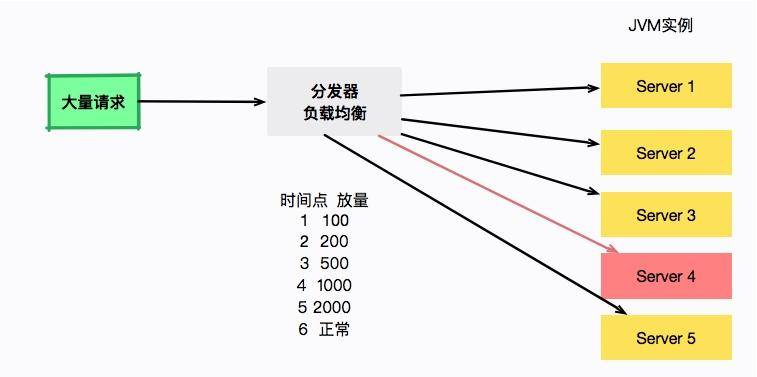
如图所示，负载均衡器负责服务的放量，server4 将在 6 秒之后流量正常流通。但是奇怪的是，每次重启大约 20 多秒以后，就会发生一次诡异的 Full GC。
注意是 Full GC，而不是老年代的 Major GC，也不是年轻代的 Minor GC。
事实上，经过观察，此时年轻代和老年代的空间还有很大一部分，那 Full GC 是怎么产生的呢？
一般，Full GC 都是在老年代空间不足的时候执行。但不要忘了，我们还有一个区域叫作 Metaspace，它的容量是没有上限的，但是每当它扩容时，就会发生 Full GC。
使用下面的命令可以看到它的默认值：
java -XX:+PrintFlagsFinal 2>&1 | grep Meta 默认值如下：
size_t MetaspaceSize = 21807104 {pd product} {default}
size_t MaxMetaspaceSize = 18446744073709547520 {product} {default}
可以看到 MetaspaceSize 的大小大约是 20MB。这个初始值太小了。
现在很多类库，包括 Spring，都会大量生成一些动态类，20MB 很容易就超了，我们可以试着调大这个数值。
按照经验，一般调整成 256MB 就足够了。同时，为了避免无限制使用造成操作系统内存溢出，我们同时设置它的上限。配置参数如下：
-XX:+UseConcMarkSweepGC -Xmx5460M -Xms5460M -Xmn3460M -XX:MetaspaceSize=256M -XX:MaxMetaspaceSize=256M
经观察，启动后停顿消失。
这种方式通常是行之有效的，但也可以通过扩容机器内存或者扩容机器数量的办法，显著地降低 GC 频率。这些都是在估算容量后的优化手段。
我们把部分机器升级到 8C16GB 的机器，使用如下的参数:
-XX:+UseConcMarkSweepGC -Xmx10920M -Xms10920M -Xmn5460M -XX:MetaspaceSize=256M -XX:MaxMetaspaceSize=256M
相比较其他实例，系统运行的特别棒，系统平均 1 分钟左右发生一次 MinorGC，老年代观察了一天才发生 GC，响应水平明显提高。
这是一种非常简单粗暴的手段，但是有效。我们看到，对 JVM 的优化，不仅仅是优化参数本身。我们的目的是解决问题，寻求多种有用手段。
总结
其实，如果没有明显的内存泄漏问题和严重的性能问题，专门调优一些 JVM 参数是非常没有必要的，优化空间也比较小。 所以，我们一般优化的思路有一个重要的顺序：
- 程序优化，效果通常非常大；
- 扩容，如果金钱的成本比较小，不要和自己过不去；
- 参数调优，在成本、吞吐量、延迟之间找一个平衡点。
本课时主要是在第三点的基础上，一步一步地增加 GC 的间隔，达到更好的效果。
我们可以再加一些原则用以辅助完成优化。
- 一个长时间的压测是必要的，通常我们使用 JMeter 工具。
- 如果线上有多个节点，可以把我们的优化在其中几个节点上生效。等优化真正有效果之后再全面推进。
- 优化过程和目标之间可能是循环的，结果和目标不匹配，要推翻重来。
我们的业务场景是高并发的。对象诞生的快，死亡的也快，对年轻代的利用直接影响了整个堆的垃圾收集。
- 足够大的年轻代，会增加系统的吞吐，但不会增加 GC 的负担。
- 容量足够的 Survivor 区，能够让对象尽可能的留在年轻代，减少对象的晋升，进而减少 Major GC。
我们还看到了一个元空间引起的 Full GC 的过程，这在高并发的场景下影响会格外突出，尤其是对于使用了大量动态类的应用来说。通过调大它的初始值，可以解决这个问题。
10 第09讲：案例实战：面对突如其来的 GC 问题如何下手解决
本课时我们主要从一个实战案例入手分析面对突如其来的 GC 问题该如何下手解决。
想要下手解决 GC 问题，我们首先需要掌握下面这三种问题。
- 如何使用 jstat 命令查看 JVM 的 GC 情况？
- 面对海量 GC 日志参数，如何快速抓住问题根源？
- 你不得不掌握的日志分析工具。
工欲善其事，必先利其器。我们前面课时讲到的优化手段，包括代码优化、扩容、参数优化，甚至我们的估算，都需要一些支撑信息加以判断。

对于 JVM 来说，一种情况是 GC 时间过长，会影响用户的体验，这个时候就需要调整某些 JVM 参数、观察日志。
另外一种情况就比较严重了，发生了 OOM，或者操作系统的内存溢出。服务直接宕机，我们要寻找背后的原因。
这时，GC 日志能够帮我们找到问题的根源。本课时，我们就简要介绍一下如何输出这些日志，以及如何使用这些日志的支撑工具解决问题。
GC 日志输出
你可能感受到，最近几年 Java 的版本更新速度是很快的，JVM 的参数配置其实变化也很大。就拿 GC 日志这一块来说，Java 9 几乎是推翻重来。网络上的一些文章，把这些参数写的乱七八糟，根本不能投入生产。如果你碰到不能被识别的参数，先确认一下自己的 Java 版本。
在事故出现的时候，通常并不是那么温柔。你可能在半夜里就能接到报警电话，这是因为很多定时任务都设定在夜深人静的时候执行。
这个时候，再去看 jstat 已经来不及了，我们需要保留现场。这个便是看门狗的工作，看门狗可以通过设置一些 JVM 参数进行配置。
那在实践中，要怎么用呢？请看下面命令行。
Java 8
我们先看一下 JDK8 中的使用。
#!/bin/sh
LOG_DIR="/tmp/logs"
JAVA_OPT_LOG=" -verbose:gc"
JAVA_OPT_LOG="${JAVA_OPT_LOG} -XX:+PrintGCDetails"
JAVA_OPT_LOG="${JAVA_OPT_LOG} -XX:+PrintGCDateStamps"
JAVA_OPT_LOG="${JAVA_OPT_LOG} -XX:+PrintGCApplicationStoppedTime"
JAVA_OPT_LOG="${JAVA_OPT_LOG} -XX:+PrintTenuringDistribution"
JAVA_OPT_LOG="${JAVA_OPT_LOG} -Xloggc:${LOG_DIR}/gc_%p.log"
JAVA_OPT_OOM=" -XX:+HeapDumpOnOutOfMemoryError -XX:HeapDumpPath=${LOG_DIR} -XX:ErrorFile=${LOG_DIR}/hs_error_pid%p.log "
JAVA_OPT="${JAVA_OPT_LOG} ${JAVA_OPT_OOM}"
JAVA_OPT="${JAVA_OPT} -XX:-OmitStackTraceInFastThrow"
合成一行。
-verbose:gc -XX:+PrintGCDetails -XX:+PrintGCDateStamps
-XX:+PrintGCApplicationStoppedTime -XX:+PrintTenuringDistribution
-Xloggc:/tmp/logs/gc_%p.log -XX:+HeapDumpOnOutOfMemoryError
-XX:HeapDumpPath=/tmp/logs -XX:ErrorFile=/tmp/logs/hs_error_pid%p.log
-XX:-OmitStackTraceInFastThrow
然后我们来解释一下这些参数：
| 参数 | 意义 |
|---|---|
| -verbose:gc | 打印 GC 日志 |
| PrintGCDetails | 打印详细 GC 日志 |
| PrintGCDateStamps | 系统时间，更加可读，PrintGCTimeStamps 是 JVM 启动时间 |
| PrintGCApplicationStoppedTime | 打印 STW 时间 |
| PrintTenuringDistribution | 打印对象年龄分布，对调优 MaxTenuringThreshold 参数帮助很大 |
| loggc | 将以上 GC 内容输出到文件中 |
再来看下 OOM 时的参数：
| 参数 | 意义 |
|---|---|
| HeapDumpOnOutOfMemoryError | OOM 时 Dump 信息，非常有用 |
| HeapDumpPath | Dump 文件保存路径 |
| ErrorFile | 错误日志存放路径 |
注意到我们还设置了一个参数 OmitStackTraceInFastThrow，这是 JVM 用来缩简日志输出的。
开启这个参数之后，如果你多次发生了空指针异常，将会打印以下信息。
java.lang.NullPointerException
java.lang.NullPointerException
java.lang.NullPointerException
java.lang.NullPointerException
在实际生产中，这个参数是默认开启的，这样就导致有时候排查问题非常不方便（很多研发对此无能为力），我们这里把它关闭，但这样它会输出所有的异常堆栈，日志会多很多。
Java 13
再看下 JDK 13 中的使用。
从 Java 9 开始，移除了 40 多个 GC 日志相关的参数。具体参见 JEP 158。所以这部分的日志配置有很大的变化。
我们同样看一下它的生成脚本。
#!/bin/sh
LOG_DIR="/tmp/logs"
JAVA_OPT_LOG=" -verbose:gc"
JAVA_OPT_LOG="${JAVA_OPT_LOG} -Xlog:gc,gc+ref=debug,gc+heap=debug,gc+age=trace:file=${LOG_DIR}/gc_%p.log:tags,uptime,time,level"
JAVA_OPT_LOG="${JAVA_OPT_LOG} -Xlog:safepoint:file=${LOG_DIR}/safepoint_%p.log:tags,uptime,time,level"
JAVA_OPT_OOM=" -XX:+HeapDumpOnOutOfMemoryError -XX:HeapDumpPath=${LOG_DIR} -XX:ErrorFile=${LOG_DIR}/hs_error_pid%p.log "
JAVA_OPT="${JAVA_OPT_LOG} ${JAVA_OPT_OOM}"
JAVA_OPT="${JAVA_OPT} -XX:-OmitStackTraceInFastThrow"
echo $JAVA_OPT
合成一行展示。
-verbose:gc -Xlog:gc,gc+ref=debug,gc+heap=debug,gc+age=trace:file
=/tmp/logs/gc_%p.log:tags,uptime,time,level -Xlog:safepoint:file=/tmp
/logs/safepoint_%p.log:tags,uptime,time,level -XX:+HeapDumpOnOutOfMemoryError
-XX:HeapDumpPath=/tmp/logs -XX:ErrorFile=/tmp/logs/hs_error_pid%p.log
-XX:-OmitStackTraceInFastThrow
可以看到 GC 日志的打印方式，已经完全不一样，但是比以前的日志参数规整了许多。
我们除了输出 GC 日志，还输出了 safepoint 的日志。这个日志对我们分析问题也很重要，那什么叫 safepoint 呢？
safepoint 是 JVM 中非常重要的一个概念，指的是可以安全地暂停线程的点。
当发生 GC 时，用户线程必须全部停下来，才可以进行垃圾回收，这个状态我们可以认为 JVM 是安全的（safe），整个堆的状态是稳定的。
如果在 GC 前，有线程迟迟进入不了 safepoint，那么整个 JVM 都在等待这个阻塞的线程，会造成了整体 GC 的时间变长。
所以呢，并不是只有 GC 会挂起 JVM，进入 safepoint 的过程也会。这个概念，如果你有兴趣可以自行深挖一下，一般是不会出问题的。
如果面试官问起你在项目中都使用了哪些打印 GC 日志的参数，上面这些信息肯定是不很好记忆。你需要进行以下总结。比如：
“我一般在项目中输出详细的 GC 日志，并加上可读性强的 GC 日志的时间戳。特别情况下我还会追加一些反映对象晋升情况和堆详细信息的日志，用来排查问题。另外，OOM 时自动 Dump 堆栈，我一般也会进行配置”。
GC 日志的意义
我们首先看一段日志，然后简要看一下各个阶段的意义。
- 1 表示 GC 发生的时间，一般使用可读的方式打印；
- 2 表示日志表明是 G1 的“转移暂停: 混合模式”，停顿了约 223ms；
- 3 表明由 8 个 Worker 线程并行执行，消耗了 214ms；
- 4 表示 Diff 越小越好，说明每个工作线程的速度都很均匀；
- 5 表示外部根区扫描，外部根是堆外区。JNI 引用，JVM 系统目录，Classloaders 等；
- 6 表示更新 RSet 的时间信息；
- 7 表示该任务主要是对 CSet 中存活对象进行转移（复制）；
- 8 表示花在 GC 之外的工作线程的时间；
- 9 表示并行阶段的 GC 总时间；
- 10 表示其他清理活动；
- 11表示收集结果统计；
- 12 表示时间花费统计。
可以看到 GC 日志描述了垃圾回收器过程中的几乎每一个阶段。但即使你了解了这些数值的意义，在分析问题时，也会感到吃力，我们一般使用图形化的分析工具进行分析。
尤其注意的是最后一行日志，需要详细描述。可以看到 G C花费的时间，竟然有 3 个数值。这个数值你可能在多个地方见过。如果你手头有 Linux 机器，可以执行以下命令：
time ls /
可以看到一段命令的执行，同样有三种纬度的时间统计。接下来解释一下这三个字段的意思。
- real 实际花费的时间，指的是从开始到结束所花费的时间。比如进程在等待 I/O 完成，这个阻塞时间也会被计算在内；
- user 指的是进程在用户态（User Mode）所花费的时间，只统计本进程所使用的时间，注意是指多核；
- sys 指的是进程在核心态（Kernel Mode）花费的 CPU 时间量，指的是内核中的系统调用所花费的时间，只统计本进程所使用的时间。
在上面的 GC 日志中，real < user + sys，因为我们使用了多核进行垃圾收集，所以实际发生的时间比 (user + sys) 少很多。在多核机器上，这很常见。
[Times: user=1.64 sys=0.00, real=0.23 secs]
下面是一个串行垃圾收集器收集的 GC 时间的示例。由于串行垃圾收集器始终仅使用一个线程，因此实际使用的时间等于用户和系统时间的总和：
[Times: user=0.29 sys=0.00, real=0.29 secs]
那我们统计 GC 以哪个时间为准呢？一般来说，用户只关心系统停顿了多少秒，对实际的影响时间非常感兴趣。至于背后是怎么实现的，是多核还是单核，是用户态还是内核态，它们都不关心。所以我们直接使用 real 字段。
GC日志可视化
肉眼可见的这些日志信息，让人非常头晕，尤其是日志文件特别大的时候。所幸现在有一些在线分析平台，可以帮助我们分析这个过程。下面我们拿常用的 gceasy 来看一下。
以下是一个使用了 G1 垃圾回收器，堆内存为 6GB 的服务，运行 5 天的 GC 日志。
（1）堆信息
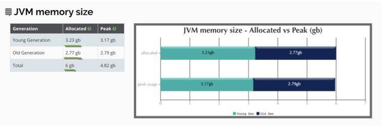
我们可以从图中看到堆的使用情况。
（2）关键信息
从图中我们可以看到一些性能的关键信息。
吞吐量：98.6%（一般超过 95% 就 ok 了）；
最大延迟：230ms，平均延迟：42.8ms；
延迟要看服务的接受程度，比如 SLA 定义 50ms 返回数据，上面的最大延迟就会有一点问题。本服务接近 99% 的停顿在 100ms 以下，可以说算是非常优秀了。

你在看这些信息的时候，一定要结合宿主服务器的监控去看。比如 GC 发生期间，CPU 会突然出现尖锋，就证明 GC 对 CPU 资源使用的有点多。但多数情况下，如果吞吐量和延迟在可接受的范围内，这些对 CPU 的超额使用是可以忍受的。
（3）交互式图表

可以对有问题的区域进行放大查看，图中表示垃圾回收后的空间释放，可以看到效果是比较好的。
（4）G1 的时间耗时
如图展示了 GC 的每个阶段花费的时间。可以看到平均耗时最长的阶段，就是 Concurrent Mark 阶段，但由于是并发的，影响并不大。随着时间的推移，YoungGC 竟然达到了 136485 次。运行 5 天，光花在 GC 上的时间就有 2 个多小时，还是比较可观的。
（5）其他
如图所示，整个 JVM 创建了 100 多 T 的数据，其中有 2.4TB 被 promoted 到老年代。
另外，还有一些 safepoint 的信息等，你可以自行探索。
那到底什么样的数据才是有问题的呢？gceasy 提供了几个案例。比如下面这个就是停顿时间明显超长的 GC 问题。

下面这个是典型的内存泄漏。

上面这些问题都是非常明显的。但大多数情况下，问题是偶发的。从基本的衡量指标，就能考量到整体的服务水准。如果这些都没有问题，就要看曲线的尖峰。
一般来说，任何不平滑的曲线，都是值得怀疑的，那就需要看一下当时的业务情况具体是什么样子的。是用户请求突增引起的，还是执行了一个批量的定时任务，再或者查询了大批量的数据，这要和一些服务的监控一起看才能定位出根本问题。
只靠 GC 来定位问题是比较困难的，我们只需要知道它有问题就可以了。后面，会介绍更多的支持工具进行问题的排解。
为了方便你调试使用，我在 GitHub 上上传了两个 GC 日志。其中 gc01.tar.gz 就是我们现在正在看的，解压后有 200 多兆；另外一个 gc02.tar.gz 是一个堆空间为 1GB 的日志文件，你也可以下载下来体验一下。
GitHub 地址：
另外，GCViewer 这个工具也是常用的，可以下载到本地，以 jar 包的方式运行。
在一些极端情况下，也可以使用脚本简单过滤一下。比如下面行命令，就是筛选停顿超过 100ms 的 GC 日志和它的行数（G1）。
# grep -n real gc.log | awk -F"=| " '{ if($8>0.1){ print }}'
1975: [Times: user=2.03 sys=0.93, real=0.75 secs]
2915: [Times: user=1.82 sys=0.65, real=0.64 secs]
16492: [Times: user=0.47 sys=0.89, real=0.35 secs]
16627: [Times: user=0.71 sys=0.76, real=0.39 secs]
16801: [Times: user=1.41 sys=0.48, real=0.49 secs]
17045: [Times: user=0.35 sys=1.25, real=0.41 secs]
jstat
上面的可视化工具，必须经历导出、上传、分析三个阶段，这种速度太慢了。有没有可以实时看堆内存的工具？
你可能会第一时间想到 jstat 命令。第一次接触这个命令，我也是很迷惑的，主要是输出的字段太多，不了解什么意义。
但其实了解我们在前几节课时所讲到内存区域划分和堆划分之后，再看这些名词就非常简单了。
我们拿 -gcutil 参数来说明一下。
jstat -gcutil $pid 1000
只需要提供一个 Java 进程的 ID，然后指定间隔时间（毫秒）就 OK 了。
S0 S1 E O M CCS YGC YGCT FGC FGCT GCT
0.00 0.00 72.03 0.35 54.12 55.72 11122 16.019 0 0.000 16.019
0.00 0.00 95.39 0.35 54.12 55.72 11123 16.024 0 0.000 16.024
0.00 0.00 25.32 0.35 54.12 55.72 11125 16.025 0 0.000 16.025
0.00 0.00 37.00 0.35 54.12 55.72 11126 16.028 0 0.000 16.028
0.00 0.00 60.35 0.35 54.12 55.72 11127 16.028 0 0.000 16.028
可以看到，E 其实是 Eden 的缩写，S0 对应的是 Surivor0，S1 对应的是 Surivor1，O 代表的是 Old，而 M 代表的是 Metaspace。
YGC 代表的是年轻代的回收次数，YGC T对应的是年轻代的回收耗时。那么 FGC 肯定代表的是 Full GC 的次数。
你在看日志的时候，一定要注意其中的规律。-gcutil 位置的参数可以有很多种。我们最常用的有 gc、gcutil、gccause、gcnew 等，其他的了解一下即可。
- gc: 显示和 GC 相关的 堆信息；
- gcutil: 显示 垃圾回收信息；
- gccause: 显示垃圾回收 的相关信息（同 -gcutil），同时显示 最后一次 或 当前 正在发生的垃圾回收的 诱因；
- gcnew: 显示 新生代 信息；
- gccapacity: 显示 各个代 的 容量 以及 使用情况；
- gcmetacapacity: 显示 元空间 metaspace 的大小；
- gcnewcapacity: 显示 新生代大小 和 使用情况；
- gcold: 显示 老年代 和 永久代 的信息；
- gcoldcapacity: 显示 老年代 的大小；
- printcompilation: 输出 JIT 编译 的方法信息；
- class: 显示 类加载 ClassLoader 的相关信息；
- compiler: 显示 JIT 编译 的相关信息；
如果 GC 问题特别明显，通过 jstat 可以快速发现。我们在启动命令行中加上参数 -t，可以输出从程序启动到现在的时间。如果 FGC 和启动时间的比值太大，就证明系统的吞吐量比较小，GC 花费的时间太多了。另外，如果老年代在 Full GC 之后，没有明显的下降，那可能内存已经达到了瓶颈，或者有内存泄漏问题。
下面这行命令，就追加了 GC 时间的增量和 GC 时间比率两列。
jstat -gcutil -t 90542 1000 | awk 'BEGIN{pre=0}{if(NR>1) {print $0 "\t" ($12-pre) "\t" $12*100/$1 ; pre=$12 } else { print $0 "\tGCT_INC\tRate"} }'
Timestamp S0 S1 E O M CCS YGC YGCT FGC FGCT GCT GCT_INC Rate
18.7 0.00 100.00 6.02 1.45 84.81 76.09 1 0.002 0 0.000 0.002 0.002 0.0106952
19.7 0.00 100.00 6.02 1.45 84.81 76.09 1 0.002 0 0.000 0.002 0 0.0101523
GC 日志也会搞鬼
顺便给你介绍一个实际发生的故障。
你知道 ElasticSearch 的速度是非常快的，我们为了压榨它的性能，对磁盘的读写几乎是全速的。它在后台做了很多 Merge 动作，将小块的索引合并成大块的索引。还有 TransLog 等预写动作，都是 I/O 大户。
使用 iostat -x 1 可以看到具体的 I/O 使用状况。
问题是，我们有一套 ES 集群，在访问高峰时，有多个 ES 节点发生了严重的 STW 问题。有的节点竟停顿了足足有 7~8 秒。
[Times: user=0.42 sys=0.03, real=7.62 secs]
从日志可以看到在 GC 时用户态只停顿了 420ms，但真实的停顿时间却有 7.62 秒。
盘点一下资源，唯一超额利用的可能就是 I/O 资源了（%util 保持在 90 以上），GC 可能在等待 I/O。
通过搜索，发现已经有人出现过这个问题，这里直接说原因和结果。
原因就在于，写 GC 日志的 write 动作，是统计在 STW 的时间里的。在我们的场景中，由于 ES 的索引数据，和 GC 日志放在了一个磁盘，GC 时写日志的动作，就和写数据文件的动作产生了资源争用。

解决方式也是比较容易的，把 ES 的日志文件，单独放在一块普通 HDD 磁盘上就可以了。
小结
本课时，我们主要介绍了比较重要的 GC 日志，以及怎么输出它，并简要的介绍了一段 G1 日志的意义。对于这些日志的信息，能够帮助我们理解整个 GC 的过程，专门去记忆它投入和产出并不成正比，可以多看下 G1 垃圾回收器原理方面的东西。
接下来我们介绍了几个图形化分析 GC 的工具，这也是现在主流的使用方式，因为动辄几百 MB 的 GC 日志，是无法肉眼分辨的。如果机器的 I/O 问题很突出，就要考虑把 GC 日志移动到单独的磁盘。
我们尤其介绍了在线分析工具 gceasy，你也可以下载 gcviewer 的 jar 包本地体验一下。
最后我们看了一个命令行的 GC 回收工具 jstat，它的格式比较规整，可以重定向到一个日志文件里，后续使用 sed、awk 等工具进行分析。关于相关的两个命令，可以参考我以前写的两篇文章。
11 第10讲：动手实践：自己模拟 JVM 内存溢出场景
本课时我们主要自己模拟一个 JVM 内存溢出的场景。在模拟 JVM 内存溢出之前我们先来看下这样的几个问题。
- 老年代溢出为什么那么可怕？
- 元空间也有溢出？怎么优化？
- 如何配置栈大小？避免栈溢出？
- 进程突然死掉，没有留下任何信息时如何进行排查？
年轻代由于有老年代的担保，一般在内存占满的时候，并没什么问题。但老年代满了就比较严重了，它没有其他的空间用来做担保，只能 OOM 了，也就是发生 Out Of Memery Error。JVM 会在这种情况下直接停止工作，是非常严重的后果。
OOM 一般是内存泄漏引起的，表现在 GC 日志里，一般情况下就是 GC 的时间变长了，而且每次回收的效果都非常一般。GC 后，堆内存的实际占用呈上升趋势。接下来，我们将模拟三种溢出场景，同时使用我们了解的工具进行观测。
在开始之前，请你下载并安装一个叫作 VisualVM 的工具，我们使用这个图形化的工具看一下溢出过程。
虽然 VisualVM 工具非常好用，但一般生产环境都没有这样的条件，所以大概率使用不了。新版本 JDK 把这个工具单独抽离了出去，需要自行下载。
这里需要注意下载安装完成之后请在插件选项中勾选 Visual GC 下载，它将可视化内存布局。
堆溢出模拟
首先，我们模拟堆溢出的情况，在模拟之前我们需要准备一份测试代码。这份代码开放了一个 HTTP 接口，当你触发它之后，将每秒钟生成 1MB 的数据。由于它和 GC Roots 的强关联性，每次都不能被回收。
程序通过 JMX，将在每一秒创建数据之后，输出一些内存区域的占用情况。然后通过访问 http://localhost:8888 触发后，它将一直运行，直到堆溢出。
import com.sun.net.httpserver.HttpContext;
import com.sun.net.httpserver.HttpExchange;
import com.sun.net.httpserver.HttpServer;
import java.io.OutputStream;
import java.lang.management.ManagementFactory;
import java.lang.management.MemoryPoolMXBean;
import java.net.InetSocketAddress;
import java.util.ArrayList;
import java.util.List;
public class OOMTest {
public static final int _1MB = 1024 * 1024;
static List<byte[]> byteList = new ArrayList<>();
private static void oom(HttpExchange exchange) {
try {
String response = "oom begin!";
exchange.sendResponseHeaders(200, response.getBytes().length);
OutputStream os = exchange.getResponseBody();
os.write(response.getBytes());
os.close();
} catch (Exception ex) {
}
for (int i = 0; ; i++) {
byte[] bytes = new byte[_1MB];
byteList.add(bytes);
System.out.println(i + "MB");
memPrint();
try {
Thread.sleep(1000);
} catch (Exception e) {
}
}
}
static void memPrint() {
for (MemoryPoolMXBean memoryPoolMXBean : ManagementFactory.getMemoryPoolMXBeans()) {
System.out.println(memoryPoolMXBean.getName() +
" committed:" + memoryPoolMXBean.getUsage().getCommitted() +
" used:" + memoryPoolMXBean.getUsage().getUsed());
}
}
private static void srv() throws Exception {
HttpServer server = HttpServer.create(new InetSocketAddress(8888), 0);
HttpContext context = server.createContext("/");
context.setHandler(OOMTest::oom);
server.start();
}
public static void main(String[] args) throws Exception{
srv();
}
}
我们使用 CMS 收集器进行垃圾回收，可以看到如下的信息。
命令：
java -Xmx20m -Xmn4m -XX:+UseConcMarkSweepGC -verbose:gc -Xlog:gc,
gc+ref=debug,gc+heap=debug,
gc+age=trace:file=/tmp/logs/gc_%p.log:tags,
uptime,
time,
level -Xlog:safepoint:file=/tmp/logs/safepoint_%p.log:tags,
uptime,
time,
level -XX:+HeapDumpOnOutOfMemoryError -XX:HeapDumpPath=/tmp/logs -XX:ErrorFile=/tmp/logs/hs_error_pid%p.log -XX:-OmitStackTraceInFastThrow OOMTest
输出：
[0.025s][info][gc] Using Concurrent Mark Sweep
0MB
CodeHeap 'non-nmethods' committed:2555904 used:1120512
Metaspace committed:4980736 used:854432
CodeHeap 'profiled nmethods' committed:2555904 used:265728
Compressed Class Space committed:524288 used:96184
Par Eden Space committed:3407872 used:2490984
Par Survivor Space committed:393216 used:0
CodeHeap 'non-profiled nmethods' committed:2555904 used:78592
CMS Old Gen committed:16777216 used:0
...省略
[16.377s][info][gc] GC(9) Concurrent Mark 1.592ms
[16.377s][info][gc] GC(9) Concurrent Preclean
[16.378s][info][gc] GC(9) Concurrent Preclean 0.721ms
[16.378s][info][gc] GC(9) Concurrent Abortable Preclean
[16.378s][info][gc] GC(9) Concurrent Abortable Preclean 0.006ms
[16.378s][info][gc] GC(9) Pause Remark 17M->17M(19M) 0.344ms
[16.378s][info][gc] GC(9) Concurrent Sweep
[16.378s][info][gc] GC(9) Concurrent Sweep 0.248ms
[16.378s][info][gc] GC(9) Concurrent Reset
[16.378s][info][gc] GC(9) Concurrent Reset 0.013ms
17MB
CodeHeap 'non-nmethods' committed:2555904 used:1120512
Metaspace committed:4980736 used:883760
CodeHeap 'profiled nmethods' committed:2555904 used:422016
Compressed Class Space committed:524288 used:92432
Par Eden Space committed:3407872 used:3213392
Par Survivor Space committed:393216 used:0
CodeHeap 'non-profiled nmethods' committed:2555904 used:88064
CMS Old Gen committed:16777216 used:16452312
[18.380s][info][gc] GC(10) Pause Initial Mark 18M->18M(19M) 0.187ms
[18.380s][info][gc] GC(10) Concurrent Mark
[18.384s][info][gc] GC(11) Pause Young (Allocation Failure) 18M->18M(19M) 0.186ms
[18.386s][info][gc] GC(10) Concurrent Mark 5.435ms
[18.395s][info][gc] GC(12) Pause Full (Allocation Failure) 18M->18M(19M) 10.572ms
[18.400s][info][gc] GC(13) Pause Full (Allocation Failure) 18M->18M(19M) 5.348ms
Exception in thread "main" java.lang.OutOfMemoryError: Java heap space
at OldOOM.main(OldOOM.java:20)
最后 JVM 在一阵疯狂的 GC 日志输出后，进程停止了。在现实情况中，JVM 在停止工作之前，很多会垂死挣扎一段时间，这个时候，GC 线程会造成 CPU 飙升，但其实它已经不能工作了。
VisualVM 的截图展示了这个溢出结果。可以看到 Eden 区刚开始还是运行平稳的，内存泄漏之后就开始疯狂回收（其实是提升），老年代内存一直增长，直到 OOM。
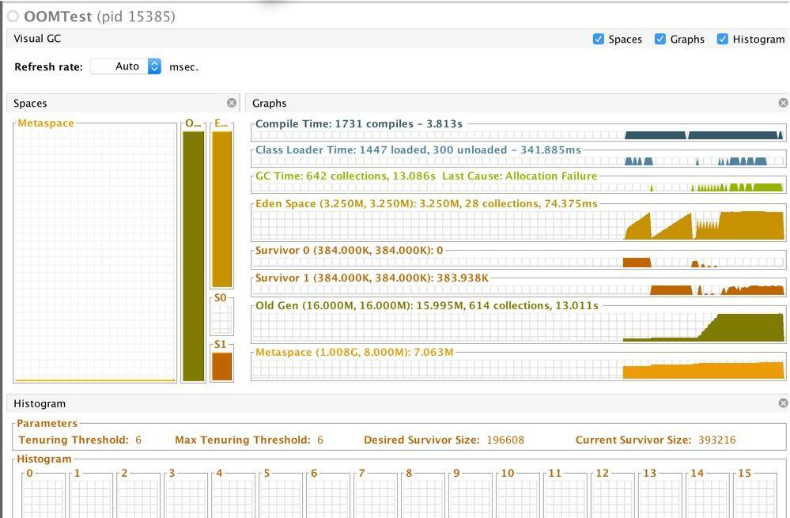
很多参数会影响对象的分配行为，但不是非常必要，我们一般不去调整它们。为了观察这些参数的默认值，我们通常使用 -XX:+PrintFlagsFinal 参数，输出一些设置信息。
命令：
java -XX:+PrintFlagsFinal 2>&1 | grep SurvivorRatio
uintx SurvivorRatio = 8 {product} {default}
Java13 输出了几百个参数和默认值，我们通过修改一些参数来观测一些不同的行为。
NewRatio 默认值为 2，表示年轻代是老年代的 1/2。追加参数 “-XX:NewRatio=1”，可以把年轻代和老年代的空间大小调成一样大。在实践中，我们一般使用 -Xmn 来设置一个固定值。注意，这两个参数不要用在 G1 垃圾回收器中。
SurvivorRatio 默认值为 8。表示伊甸区和幸存区的比例。在上面的例子中，Eden 的内存大小为：0.8*4MB。S 分区不到 1MB，根本存不下我们的 1MB 数据。
MaxTenuringThreshold 这个值在 CMS 下默认为 6，G1 下默认为 15。这是因为 G1 存在动态阈值计算。这个值和我们前面提到的对象提升有关，如果你想要对象尽量长的时间存在于年轻代，则在 CMS 中，可以把它调整到 15。
java -XX:+PrintFlagsFinal -XX:+UseConcMarkSweepGC 2>&1 | grep MaxTenuringThreshold
java -XX:+PrintFlagsFinal -XX:+UseG1GC 2>&1 | grep MaxTenuringThreshold
PretenureSizeThreshold 这个参数默认值是 0，意味着所有的对象年轻代优先分配。我们把这个值调小一点，再观测 JVM 的行为。追加参数 -XX:PretenureSizeThreshold=1024，可以看到 VisualVm 中老年代的区域增长。
TargetSurvivorRatio 默认值为 50。在动态计算对象提升阈值的时候使用。计算时，会从年龄最小的对象开始累加，如果累加的对象大小大于幸存区的一半，则将当前的对象 age 作为新的阈值，年龄大于此阈值的对象直接进入老年代。工作中不建议调整这个值，如果要调，请调成比 50 大的值。
你可以尝试着更改其他参数，比如垃圾回收器的种类，动态看一下效果。尤其注意每一项内存区域的内容变动，你会对垃圾回收器有更好的理解。
UseAdaptiveSizePolicy ，因为它和 CMS 不兼容，所以 CMS 下默认为 false，但 G1 下默认为 true。这是一个非常智能的参数，它是用来自适应调整空间大小的参数。它会在每次 GC 之后，重新计算 Eden、From、To 的大小。很多人在 Java 8 的一些配置中会见到这个参数，但其实在 CMS 和 G1 中是不需要显式设置的。
值的注意的是，Java 8 默认垃圾回收器是 Parallel Scavenge，它的这个参数是默认开启的，有可能会发生把幸存区自动调小的可能，造成一些问题，显式的设置 SurvivorRatio 可以解决这个问题。
下面这张截图，是切换到 G1 之后的效果。
java -Xmx20m -XX:+UseG1GC -verbose:gc -Xlog:gc,gc+ref=debug,gc+heap=debug,gc+age=trace:file=/tmp/logs/gc_%p.log:tags,uptime,time,level -Xlog:safepoint:file=/tmp/logs/safepoint_%p.log:tags,uptime,time,level -XX:+HeapDumpOnOutOfMemoryError -XX:HeapDumpPath=/tmp/logs -XX:ErrorFile=/tmp/logs/hs_error_pid%p.log -XX:-OmitStackTraceInFastThrow OOMTest

可以通过下面这个命令调整小堆区的大小，来看一下这个过程。
-XX:G1HeapRegionSize=
元空间溢出
堆一般都是指定大小的，但元空间不是。所以如果元空间发生内存溢出会更加严重，会造成操作系统的内存溢出。我们在使用的时候，也会给它设置一个上限 for safe。
元空间溢出主要是由于加载的类太多，或者动态生成的类太多。下面是一段模拟代码。通过访问 http://localhost:8888 触发后，它将会发生元空间溢出。
import com.sun.net.httpserver.HttpContext;
import com.sun.net.httpserver.HttpExchange;
import com.sun.net.httpserver.HttpServer;
import java.io.OutputStream;
import java.lang.reflect.InvocationHandler;
import java.lang.reflect.Method;
import java.lang.reflect.Proxy;
import java.net.InetSocketAddress;
import java.net.URL;
import java.net.URLClassLoader;
import java.util.HashMap;
import java.util.Map;
public class MetaspaceOOMTest {
public interface Facade {
void m(String input);
}
public static class FacadeImpl implements Facade {
@Override
public void m(String name) {
}
}
public static class MetaspaceFacadeInvocationHandler implements InvocationHandler {
private Object impl;
public MetaspaceFacadeInvocationHandler(Object impl) {
this.impl = impl;
}
@Override
public Object invoke(Object proxy, Method method, Object[] args) throws Throwable {
return method.invoke(impl, args);
}
}
private static Map<String, Facade> classLeakingMap = new HashMap<String, Facade>();
private static void oom(HttpExchange exchange) {
try {
String response = "oom begin!";
exchange.sendResponseHeaders(200, response.getBytes().length);
OutputStream os = exchange.getResponseBody();
os.write(response.getBytes());
os.close();
} catch (Exception ex) {
}
try {
for (int i = 0; ; i++) {
String jar = "file:" + i + ".jar";
URL[] urls = new URL[]{new URL(jar)};
URLClassLoader newClassLoader = new URLClassLoader(urls);
Facade t = (Facade) Proxy.newProxyInstance(newClassLoader,
new Class<?>[]{Facade.class},
new MetaspaceFacadeInvocationHandler(new FacadeImpl()));
classLeakingMap.put(jar, t);
}
} catch (Exception e) {
}
}
private static void srv() throws Exception {
HttpServer server = HttpServer.create(new InetSocketAddress(8888), 0);
HttpContext context = server.createContext("/");
context.setHandler(MetaspaceOOMTest::oom);
server.start();
}
public static void main(String[] args) throws Exception {
srv();
}
}
这段代码将使用 Java 自带的动态代理类，不断的生成新的 class。
java -Xmx20m -Xmn4m -XX:+UseG1GC -verbose:gc -Xlog:gc,gc+ref=debug,gc+heap=debug,gc+age=trace:file=/tmp/logs/gc_%p.log:tags,uptime,time,level -Xlog:safepoint:file=/tmp/logs/safepoint_%p.log:tags,uptime,time,level -XX:+HeapDumpOnOutOfMemoryError -XX:HeapDumpPath=/tmp/logs -XX:ErrorFile=/tmp/logs/hs_error_pid%p.log -XX:-OmitStackTraceInFastThrow -XX:MetaspaceSize=16M -XX:MaxMetaspaceSize=16M MetaspaceOOMTest
我们在启动的时候，限制 Metaspace 空间大小为 16MB。可以看到运行一小会之后，Metaspace 会发生内存溢出。
[6.509s][info][gc] GC(28) Pause Young (Concurrent Start) (Metadata GC Threshold) 9M->9M(20M) 1.186ms
[6.509s][info][gc] GC(30) Concurrent Cycle
[6.534s][info][gc] GC(29) Pause Full (Metadata GC Threshold) 9M->9M(20M) 25.165ms
[6.556s][info][gc] GC(31) Pause Full (Metadata GC Clear Soft References) 9M->9M(20M) 21.136ms
[6.556s][info][gc] GC(30) Concurrent Cycle 46.668ms
java.lang.OutOfMemoryError: Metaspace
Dumping heap to /tmp/logs/java_pid36723.hprof ...
Heap dump file created [17362313 bytes in 0.134 secs]

但假如你把堆 Metaspace 的限制给去掉，会更可怕。它占用的内存会一直增长。
堆外内存溢出
严格来说，上面的 Metaspace 也是属于堆外内存的。但是我们这里的堆外内存指的是 Java 应用程序通过直接方式从操作系统中申请的内存。所以严格来说，这里是指直接内存。
程序将通过 ByteBuffer 的 allocateDirect 方法每 1 秒钟申请 1MB 的直接内存。不要忘了通过链接触发这个过程。
但是，使用 VisualVM 看不到这个过程，使用 JMX 的 API 同样也看不到。关于这部分内容，我们将在堆外内存排查课时进行详细介绍。
import com.sun.net.httpserver.HttpContext;
import com.sun.net.httpserver.HttpExchange;
import com.sun.net.httpserver.HttpServer;
import java.io.OutputStream;
import java.lang.management.ManagementFactory;
import java.lang.management.MemoryPoolMXBean;
import java.net.InetSocketAddress;
import java.nio.ByteBuffer;
import java.util.ArrayList;
import java.util.List;
public class OffHeapOOMTest {
public static final int _1MB = 1024 * 1024;
static List<ByteBuffer> byteList = new ArrayList<>();
private static void oom(HttpExchange exchange) {
try {
String response = "oom begin!";
exchange.sendResponseHeaders(200, response.getBytes().length);
OutputStream os = exchange.getResponseBody();
os.write(response.getBytes());
os.close();
} catch (Exception ex) {
}
for (int i = 0; ; i++) {
ByteBuffer buffer = ByteBuffer.allocateDirect(_1MB);
byteList.add(buffer);
System.out.println(i + "MB");
memPrint();
try {
Thread.sleep(1000);
} catch (Exception e) {
}
}
}
private static void srv() throws Exception {
HttpServer server = HttpServer.create(new InetSocketAddress(8888), 0);
HttpContext context = server.createContext("/");
context.setHandler(OffHeapOOMTest::oom);
server.start();
}
public static void main(String[] args) throws Exception {
srv();
}
static void memPrint() {
for (MemoryPoolMXBean memoryPoolMXBean : ManagementFactory.getMemoryPoolMXBeans()) {
System.out.println(memoryPoolMXBean.getName() +
" committed:" + memoryPoolMXBean.getUsage().getCommitted() +
" used:" + memoryPoolMXBean.getUsage().getUsed());
}
}
}
通过 top 或者操作系统的监控工具，能够看到内存占用的明显增长。为了限制这些危险的内存申请，如果你确定在自己的程序中用到了大量的 JNI 和 JNA 操作，要显式的设置 MaxDirectMemorySize 参数。
以下是程序运行一段时间抛出的错误。
Exception in thread "Thread-2" java.lang.OutOfMemoryError: Direct buffer memory
at java.nio.Bits.reserveMemory(Bits.java:694)
at java.nio.DirectByteBuffer.
at java.nio.ByteBuffer.allocateDirect(ByteBuffer.java:311)
at OffHeapOOMTest.oom(OffHeapOOMTest.java:27)
at com.sun.net.httpserver.Filter$Chain.doFilter(Filter.java:79)
at sun.net.httpserver.AuthFilter.doFilter(AuthFilter.java:83)
at com.sun.net.httpserver.Filter$Chain.doFilter(Filter.java:82)
at sun.net.httpserver.ServerImpl$Exchange$LinkHandler.handle(ServerImpl.java:675)
at com.sun.net.httpserver.Filter$Chain.doFilter(Filter.java:79)
at sun.net.httpserver.ServerImpl$Exchange.run(ServerImpl.java:647)
at sun.net.httpserver.ServerImpl$DefaultExecutor.execute(ServerImpl.java:158)
at sun.net.httpserver.ServerImpl$Dispatcher.handle(ServerImpl.java:431)
at sun.net.httpserver.ServerImpl$Dispatcher.run(ServerImpl.java:396)
at java.lang.Thread.run(Thread.java:748)
启动命令。
java -XX:MaxDirectMemorySize=10M -Xmx10M OffHeapOOMTest
栈溢出
还记得我们的虚拟机栈么？栈溢出指的就是这里的数据太多造成的泄漏。通过 -Xss 参数可以设置它的大小。比如下面的命令就是设置栈大小为 128K。
-Xss128K
从这里我们也能了解到，由于每个线程都有一个虚拟机栈。线程的开销也是要占用内存的。如果系统中的线程数量过多，那么占用内存的大小也是非常可观的。
栈溢出不会造成 JVM 进程死亡，危害“相对较小”。下面是一个简单的模拟栈溢出的代码，只需要递归调用就可以了。
public class StackOverflowTest {
static int count = 0;
static void a() {
System.out.println(count);
count++;
b();
}
static void b() {
System.out.println(count);
count++;
a();
}
public static void main(String[] args) throws Exception {
a();
}
}
运行后，程序直接报错。
Exception in thread "main" java.lang.StackOverflowError
at java.io.PrintStream.write(PrintStream.java:526)
at java.io.PrintStream.print(PrintStream.java:597)
at java.io.PrintStream.println(PrintStream.java:736)
at StackOverflowTest.a(StackOverflowTest.java:5)
如果你的应用经常发生这种情况，可以试着调大这个值。但一般都是因为程序错误引起的，最好检查一下自己的代码。
进程异常退出
上面这几种溢出场景，都有明确的原因和报错，排查起来也是非常容易的。但是还有一类应用，死亡的时候，静悄悄的，什么都没留下。
以下问题已经不止一个同学问了：我的 Java 进程没了，什么都没留下，直接蒸发不见了
why？是因为对象太多了么？
这是趣味性和技巧性非常突出的一个问题。让我们执行 dmesg 命令，大概率会看到你的进程崩溃信息躺在那里。
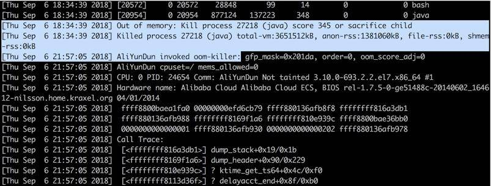
为了能看到发生的时间，我们习惯性加上参数 T（dmesg -T）。
这个现象，其实和 Linux 的内存管理有关。由于 Linux 系统采用的是虚拟内存分配方式，JVM 的代码、库、堆和栈的使用都会消耗内存，但是申请出来的内存，只要没真正 access过，是不算的，因为没有真正为之分配物理页面。
随着使用内存越用越多。第一层防护墙就是 SWAP；当 SWAP 也用的差不多了，会尝试释放 cache；当这两者资源都耗尽，杀手就出现了。oom-killer 会在系统内存耗尽的情况下跳出来，选择性的干掉一些进程以求释放一点内存。
所以这时候我们的 Java 进程，是操作系统“主动”终结的，JVM 连发表遗言的机会都没有。这个信息，只能在操作系统日志里查找。
要解决这种问题，首先不能太贪婪。比如一共 8GB 的机器，你把整整 7.5GB 都分配给了 JVM。当操作系统内存不足时，你的 JVM 就可能成为 oom-killer 的猎物。
相对于被动终结，还有一种主动求死的方式。有些同学，会在程序里面做一些判断，直接调用 System.exit() 函数。
这个函数危险得很，它将强制终止我们的应用，而且什么都不会留下。你应该扫描你的代码，确保这样的逻辑不会存在。
再聊一种最初级最常见还经常发生的，会造成应用程序意外死亡的情况，那就是对 Java 程序错误的启动方式。
很多同学对 Linux 不是很熟悉，使用 XShell 登陆之后，调用下面的命令进行启动。
java com.cn.AA &
这样调用还算有点意识，在最后使用了“&”号，以期望进程在后台运行。但可惜的是，很多情况下，随着 XShell Tab 页的关闭，或者等待超时，后面的 Java 进程就随着一块停止了，很让人困惑。
正确的启动方式，就是使用 nohup 关键字，或者阻塞在其他更加长命的进程里（比如docker）。
nohup java com.cn.AA &
进程这种静悄悄的死亡方式，通常会给我们的问题排查带来更多的困难。
在发生问题时，要确保留下了足够的证据，来支持接下来的分析。不能喊一句“出事啦”，然后就陷入无从下手的尴尬境地。
通常，我们在关闭服务的时候，会使用“kill -15”，而不是“kill -9”，以便让服务在临死之前喘口气。信号9和15的区别，是面试经常问的一个问题，也是一种非常有效的手段。
小结
本课时我们简单模拟了堆、元空间、栈的溢出。并使用 VisualVM 观察了这个过程。
接下来，我们了解到进程静悄悄消失的三种情况。如果你的应用也这样消失过，试着这样找找它。这三种情况也是一个故障排查流程中要考虑的环节，属于非常重要的边缘检查点。相信聪明的你，会将这些情况揉进自己的面试体系去，真正成为自己的实战经验。
12 第11讲：动手实践：遇到问题不要慌，轻松搞定内存泄漏
当一个系统在发生 OOM 的时候，行为可能会让你感到非常困惑。因为 JVM 是运行在操作系统之上的，操作系统的一些限制，会严重影响 JVM 的行为。故障排查是一个综合性的技术问题，在日常工作中要增加自己的知识广度。多总结、多思考、多记录，这才是正确的晋级方式。
现在的互联网服务，一般都做了负载均衡。如果一个实例发生了问题，不要着急去重启。万能的重启会暂时缓解问题，但如果不保留现场，可能就错失了解决问题的根本，担心的事情还会到来。
所以，当实例发生问题的时候，第一步是隔离，第二步才是问题排查。什么叫隔离呢？就是把你的这台机器从请求列表里摘除，比如把 nginx 相关的权重设成零。在微服务中，也有相应的隔离机制，这里默认你已经有了（面试也默认你已经有隔离功能了）。
本课时的内容将涉及非常多的 Linux 命令，对 JVM 故障排查的帮助非常大，你可以逐个击破。
1. GC 引起 CPU 飙升
我们有个线上应用，单节点在运行一段时间后，CPU 的使用会飙升，一旦飙升，一般怀疑某个业务逻辑的计算量太大，或者是触发了死循环（比如著名的 HashMap 高并发引起的死循环），但排查到最后其实是 GC 的问题。
在 Linux 上，分析哪个线程引起的 CPU 问题，通常有一个固定的步骤。我们下面来分解这个过程，这是面试频率极高的一个问题。

（1）使用 top 命令，查找到使用 CPU 最多的某个进程，记录它的 pid。使用 Shift + P 快捷键可以按 CPU 的使用率进行排序。
top
（2）再次使用 top 命令，加 -H 参数，查看某个进程中使用 CPU 最多的某个线程，记录线程的 ID。
top -Hp $pid
（3）使用 printf 函数，将十进制的 tid 转化成十六进制。
printf %x $tid
（4）使用 jstack 命令，查看 Java 进程的线程栈。
jstack $pid >$pid.log
（5）使用 less 命令查看生成的文件，并查找刚才转化的十六进制 tid，找到发生问题的线程上下文。
less $pid.log
我们在 jstack 日志中找到了 CPU 使用最多的几个线程。

可以看到问题发生的根源，是我们的堆已经满了，但是又没有发生 OOM，于是 GC 进程就一直在那里回收，回收的效果又非常一般，造成 CPU 升高应用假死。
接下来的具体问题排查，就需要把内存 dump 一份下来，使用 MAT 等工具分析具体原因了（将在第 12 课时讲解）。
2. 现场保留
可以看到这个过程是繁杂而冗长的，需要记忆很多内容。现场保留可以使用自动化方式将必要的信息保存下来，那一般在线上系统会保留哪些信息呢？下面我进行一下总结。
2.1. 瞬时态和历史态
为了协助我们的分析，这里创造了两个名词：瞬时态和历史态。瞬时态是指当时发生的、快照类型的元素；历史态是指按照频率抓取的，有固定监控项的资源变动图。
有很多信息，比如 CPU、系统内存等，瞬时态的价值就不如历史态来的直观一些。因为瞬时状态无法体现一个趋势性问题（比如斜率、求导等），而这些信息的获取一般依靠监控系统的协作。
但对于 lsof、heap 等，这种没有时间序列概念的混杂信息，体积都比较大，无法进入监控系统产生有用价值，就只能通过瞬时态进行分析。在这种情况下，瞬时态的价值反而更大一些。我们常见的堆快照，就属于瞬时状态。
问题不是凭空产生的，在分析时，一般要收集系统的整体变更集合，比如代码变更、网络变更，甚至数据量的变化。
接下来对每一项资源的获取方式进行介绍。
2.2. 保留信息
（1）系统当前网络连接
ss -antp > $DUMP_DIR/ss.dump 2>&1
其中，ss 命令将系统的所有网络连接输出到 ss.dump 文件中。使用 ss 命令而不是 netstat 的原因，是因为 netstat 在网络连接非常多的情况下，执行非常缓慢。
后续的处理，可通过查看各种网络连接状态的梳理，来排查 TIME_WAIT 或者 CLOSE_WAIT，或者其他连接过高的问题，非常有用。
线上有个系统更新之后，监控到 CLOSE_WAIT 的状态突增，最后整个 JVM 都无法响应。CLOSE_WAIT 状态的产生一般都是代码问题，使用 jstack 最终定位到是因为 HttpClient 的不当使用而引起的，多个连接不完全主动关闭。
（2）网络状态统计
netstat -s > $DUMP_DIR/netstat-s.dump 2>&1
此命令将网络统计状态输出到 netstat-s.dump 文件中。它能够按照各个协议进行统计输出，对把握当时整个网络状态，有非常大的作用。
sar -n DEV 1 2 > $DUMP_DIR/sar-traffic.dump 2>&1
上面这个命令，会使用 sar 输出当前的网络流量。在一些速度非常高的模块上，比如 Redis、Kafka，就经常发生跑满网卡的情况。如果你的 Java 程序和它们在一起运行，资源则会被挤占，表现形式就是网络通信非常缓慢。
（3）进程资源
lsof -p $PID > $DUMP_DIR/lsof-$PID.dump
这是个非常强大的命令，通过查看进程，能看到打开了哪些文件，这是一个神器，可以以进程的维度来查看整个资源的使用情况，包括每条网络连接、每个打开的文件句柄。同时，也可以很容易的看到连接到了哪些服务器、使用了哪些资源。这个命令在资源非常多的情况下，输出稍慢，请耐心等待。
（4）CPU 资源
mpstat > $DUMP_DIR/mpstat.dump 2>&1
vmstat 1 3 > $DUMP_DIR/vmstat.dump 2>&1
sar -p ALL > $DUMP_DIR/sar-cpu.dump 2>&1
uptime > $DUMP_DIR/uptime.dump 2>&1
主要用于输出当前系统的 CPU 和负载，便于事后排查。这几个命令的功能，有不少重合，使用者要注意甄别。
（5）I/O 资源
iostat -x > $DUMP_DIR/iostat.dump 2>&1
一般，以计算为主的服务节点，I/O 资源会比较正常，但有时也会发生问题，比如日志输出过多，或者磁盘问题等。此命令可以输出每块磁盘的基本性能信息，用来排查 I/O 问题。在第 8 课时介绍的 GC 日志分磁盘问题，就可以使用这个命令去发现。
（6）内存问题
free -h > $DUMP_DIR/free.dump 2>&1
free 命令能够大体展现操作系统的内存概况，这是故障排查中一个非常重要的点，比如 SWAP 影响了 GC，SLAB 区挤占了 JVM 的内存。
（7）其他全局
ps -ef > $DUMP_DIR/ps.dump 2>&1
dmesg > $DUMP_DIR/dmesg.dump 2>&1
sysctl -a > $DUMP_DIR/sysctl.dump 2>&1
dmesg 是许多静悄悄死掉的服务留下的最后一点线索。当然，ps 作为执行频率最高的一个命令，它当时的输出信息，也必然有一些可以参考的价值。
另外，由于内核的配置参数，会对系统和 JVM 产生影响，所以我们也输出了一份。
（8）进程快照，最后的遗言（jinfo）
${JDK_BIN}jinfo $PID > $DUMP_DIR/jinfo.dump 2>&1
此命令将输出 Java 的基本进程信息，包括环境变量和参数配置，可以查看是否因为一些错误的配置造成了 JVM 问题。
（9）dump 堆信息
${JDK_BIN}jstat -gcutil $PID > $DUMP_DIR/jstat-gcutil.dump 2>&1
${JDK_BIN}jstat -gccapacity $PID > $DUMP_DIR/jstat-gccapacity.dump 2>&1
jstat 将输出当前的 gc 信息。一般，基本能大体看出一个端倪，如果不能，可将借助 jmap 来进行分析。
（10）堆信息
${JDK_BIN}jmap $PID > $DUMP_DIR/jmap.dump 2>&1
${JDK_BIN}jmap -heap $PID > $DUMP_DIR/jmap-heap.dump 2>&1
${JDK_BIN}jmap -histo $PID > $DUMP_DIR/jmap-histo.dump 2>&1
${JDK_BIN}jmap -dump:format=b,file=$DUMP_DIR/heap.bin $PID > /dev/null 2>&1
jmap 将会得到当前 Java 进程的 dump 信息。如上所示，其实最有用的就是第 4 个命令，但是前面三个能够让你初步对系统概况进行大体判断。
因为，第 4 个命令产生的文件，一般都非常的大。而且，需要下载下来，导入 MAT 这样的工具进行深入分析，才能获取结果。这是分析内存泄漏一个必经的过程。
（11）JVM 执行栈
${JDK_BIN}jstack $PID > $DUMP_DIR/jstack.dump 2>&1
jstack 将会获取当时的执行栈。一般会多次取值，我们这里取一次即可。这些信息非常有用，能够还原 Java 进程中的线程情况。
top -Hp $PID -b -n 1 -c > $DUMP_DIR/top-$PID.dump 2>&1
为了能够得到更加精细的信息，我们使用 top 命令，来获取进程中所有线程的 CPU 信息，这样，就可以看到资源到底耗费在什么地方了。
（12）高级替补
kill -3 $PID
有时候，jstack 并不能够运行，有很多原因，比如 Java 进程几乎不响应了等之类的情况。我们会尝试向进程发送 kill -3 信号，这个信号将会打印 jstack 的 trace 信息到日志文件中，是 jstack 的一个替补方案。
gcore -o $DUMP_DIR/core $PID
对于 jmap 无法执行的问题，也有替补，那就是 GDB 组件中的 gcore，将会生成一个 core 文件。我们可以使用如下的命令去生成 dump：
${JDK_BIN}jhsdb jmap --exe ${JDK}java --core $DUMP_DIR/core --binaryheap
3. 内存泄漏的现象
稍微提一下 jmap 命令，它在 9 版本里被干掉了，取而代之的是 jhsdb，你可以像下面的命令一样使用。
jhsdb jmap --heap --pid 37340
jhsdb jmap --pid 37288
jhsdb jmap --histo --pid 37340
jhsdb jmap --binaryheap --pid 37340
heap 参数能够帮我们看到大体的内存布局，以及每一个年代中的内存使用情况。这和我们前面介绍的内存布局，以及在 VisualVM 中看到的 没有什么不同。但由于它是命令行，所以使用更加广泛。
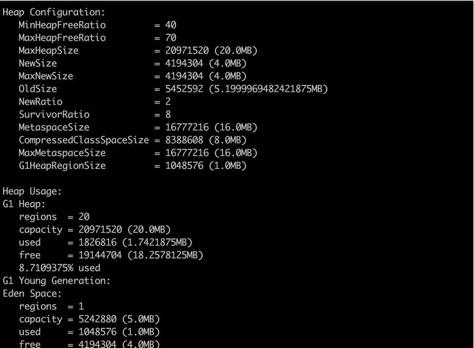
histo 能够大概的看到系统中每一种类型占用的空间大小，用于初步判断问题。比如某个对象 instances 数量很小，但占用的空间很大，这就说明存在大对象。但它也只能看大概的问题，要找到具体原因，还是要 dump 出当前 live 的对象。

一般内存溢出，表现形式就是 Old 区的占用持续上升，即使经过了多轮 GC 也没有明显改善。我们在前面提到了 GC Roots，内存泄漏的根本就是，有些对象并没有切断和 GC Roots 的关系，可通过一些工具，能够看到它们的联系。
4. 一个卡顿实例
有一个关于服务的某个实例，经常发生服务卡顿。由于服务的并发量是比较高的，所以表现也非常明显。这个服务和我们第 8 课时的高并发服务类似，每多停顿 1 秒钟，几万用户的请求就会感到延迟。
我们统计、类比了此服务其他实例的 CPU、内存、网络、I/O 资源，区别并不是很大，所以一度怀疑是机器硬件的问题。
接下来我们对比了节点的 GC 日志，发现无论是 Minor GC，还是 Major GC，这个节点所花费的时间，都比其他实例长得多。
通过仔细观察，我们发现在 GC 发生的时候，vmstat 的 si、so 飙升的非常严重，这和其他实例有着明显的不同。
使用 free 命令再次确认，发现 SWAP 分区，使用的比例非常高，引起的具体原因是什么呢？
更详细的操作系统内存分布，从 /proc/meminfo 文件中可以看到具体的逻辑内存块大小，有多达 40 项的内存信息，这些信息都可以通过遍历 /proc 目录的一些文件获取。我们注意到 slabtop 命令显示的有一些异常，dentry（目录高速缓冲）占用非常高。
问题最终定位到是由于某个运维工程师执行了一句命令：
find / | grep "x"
他是想找一个叫做 x 的文件，看看在哪台服务器上，结果，这些老服务器由于文件太多，扫描后这些文件信息都缓存到了 slab 区上。而服务器开了 swap，操作系统发现物理内存占满后，并没有立即释放 cache，导致每次 GC 都要和硬盘打一次交道。
解决方式就是关闭 SWAP 分区。
swap 是很多性能场景的万恶之源，建议禁用。当你的应用真正高并发了，SWAP 绝对能让你体验到它魔鬼性的一面：进程倒是死不了了，但 GC 时间长的却让人无法忍受。
5. 内存泄漏
我们再来聊一下内存溢出和内存泄漏的区别。
内存溢出是一个结果，而内存泄漏是一个原因。内存溢出的原因有内存空间不足、配置错误等因素。
不再被使用的对象、没有被回收、没有及时切断与 GC Roots 的联系，这就是内存泄漏。内存泄漏是一些错误的编程方式，或者过多的无用对象创建引起的。
举个例子，有团队使用了 HashMap 做缓存，但是并没有设置超时时间或者 LRU 策略，造成了放入 Map 对象的数据越来越多，而产生了内存泄漏。
再来看一个经常发生的内存泄漏的例子，也是由于 HashMap 产生的。代码如下，由于没有重写 Key 类的 hashCode 和 equals 方法，造成了放入 HashMap 的所有对象都无法被取出来，它们和外界失联了。所以下面的代码结果是 null。
//leak example
import java.util.HashMap;
import java.util.Map;
public class HashMapLeakDemo {
public static class Key {
String title;
public Key(String title) {
this.title = title;
}
}
public static void main(String[] args) {
Map<Key, Integer> map = new HashMap<>();
map.put(new Key("1"), 1);
map.put(new Key("2"), 2);
map.put(new Key("3"), 2);
Integer integer = map.get(new Key("2"));
System.out.println(integer);
}
}
即使提供了 equals 方法和 hashCode 方法，也要非常小心，尽量避免使用自定义的对象作为 Key。仓库中 dog 目录有一个实际的、有问题的例子，你可以尝试排查一下。
再看一个例子，关于文件处理器的应用，在读取或者写入一些文件之后，由于发生了一些异常，close 方法又没有放在 finally 块里面，造成了文件句柄的泄漏。由于文件处理十分频繁，产生了严重的内存泄漏问题。
另外，对 Java API 的一些不当使用，也会造成内存泄漏。很多同学喜欢使用 String 的 intern 方法，但如果字符串本身是一个非常长的字符串，而且创建之后不再被使用，则会造成内存泄漏。
import java.util.UUID;
public class InternDemo {
static String getLongStr() {
StringBuilder sb = new StringBuilder();
for (int i = 0; i < 100000; i++) {
sb.append(UUID.randomUUID().toString());
}
return sb.toString();
}
public static void main(String[] args) {
while (true) {
getLongStr().intern();
}
}
}
6. 小结

本课时介绍了很多 Linux 命令，用于定位分析问题，所有的命令都是可以实际操作的，能够让你详细地把握整个 JVM 乃至操作系统的运行状况。其中，jinfo、jstat、jstack、jhsdb（jmap）等是经常被使用的一些工具，尤其是 jmap，在分析处理内存泄漏问题的时候，是必须的。
同时还介绍了保留现场的工具和辅助分析的方法论，遇到问题不要慌，记得隔离保存现场。
接下来我们看了一个实际的例子，由于 SWAP 的启用造成的服务卡顿。SWAP 会引起很多问题，在高并发服务中一般是关掉它。从这个例子中也可以看到，影响 GC，甚至是整个 JVM 行为的因素，可能不仅限于 JVM 内部，故障排查也是一个综合性的技能。
最后，我们详细看了下内存泄漏的概念和几个实际的例子，从例子中能明显的看到内存泄漏的结果，但是反向去找这些问题代码就不是那么容易了。在后面的课时内容中，我们将使用 MAT 工具具体分析这个捉虫的过程。
13 工具进阶：如何利用 MAT 找到问题发生的根本原因
我们知道，在存储用户输入的密码时，会使用一些 hash 算法对密码进行加工，比如 SHA-1。这些信息同样不允许在日志输出里出现，必须做脱敏处理，但是对于一个拥有系统权限的攻击者来说，这些防护依然是不够的。攻击者可能会直接从内存中获取明文数据，尤其是对于 Java 来说，由于提供了 jmap 这一类非常方便的工具，可以把整个堆内存的数据 dump 下来。
比如，“我的世界”这一类使用 Java 开发的游戏，会比其他语言的游戏更加容易破解一些，所以我们在 JVM 中，如果把密码存储为 char 数组，其安全性会稍微高一些。
这是一把双刃剑，在保证安全的前提下，我们也可以借助一些外部的分析工具，帮助我们方便的找到问题根本。
有两种方式来获取内存的快照。我们前面提到过，通过配置一些参数，可以在发生 OOM 的时候，被动 dump 一份堆栈信息，这是一种；另一种，就是通过 jmap 主动去获取内存的快照。
jmap 命令在 Java 9 之后，使用 jhsdb 命令替代，它们在用法上，区别不大。注意，这些命令本身会占用操作系统的资源，在某些情况下会造成服务响应缓慢，所以不要频繁执行。
jmap -dump:format=b,file=heap.bin 37340
jhsdb jmap --binaryheap --pid 37340
1. 工具介绍
有很多工具能够帮助我们来分析这份内存快照。在前面已多次提到 VisualVm 这个工具，它同样可以加载和分析这份 dump 数据，虽然比较“寒碜”。
专业的事情要有专业的工具来做，今天要介绍的是一款专业的开源分析工具，即 MAT。
MAT 工具是基于 Eclipse 平台开发的，本身是一个 Java 程序，所以如果你的堆快照比较大的话，则需要一台内存比较大的分析机器，并给 MAT 本身加大初始内存，这个可以修改安装目录中的 MemoryAnalyzer.ini 文件。
来看一下 MAT 工具的截图，主要的功能都体现在工具栏上了。其中，默认的启动界面，展示了占用内存最高的一些对象，并有一些常用的快捷方式。通常，发生内存泄漏的对象，会在快照中占用比较大的比重，分析这些比较大的对象，是我们切入问题的第一步。

点击对象，可以浏览对象的引用关系，这是一个非常有用的功能：
- outgoing references 对象的引出
- incoming references 对象的引入
path to GC Roots 这是快速分析的一个常用功能，显示和 GC Roots 之间的路径。
另外一个比较重要的概念，就是浅堆（Shallow Heap）和深堆（Retained Heap），在 MAT 上经常看到这两个数值。
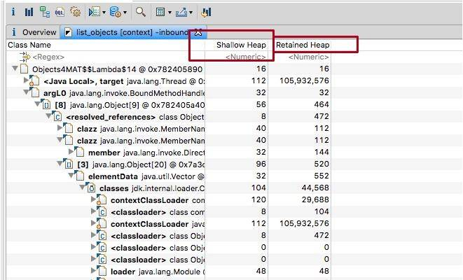
浅堆代表了对象本身的内存占用，包括对象自身的内存占用，以及“为了引用”其他对象所占用的内存。
深堆是一个统计结果，会循环计算引用的具体对象所占用的内存。但是深堆和“对象大小”有一点不同，深堆指的是一个对象被垃圾回收后，能够释放的内存大小，这些被释放的对象集合，叫做保留集（Retained Set）。

如上图所示，A 对象浅堆大小 1 KB，B 对象 2 KB，C 对象 100 KB。A 对象同时引用了 B 对象和 C 对象，但由于 C 对象也被 D 引用，所以 A 对象的深堆大小为 3 KB（1 KB + 2 KB）。
A 对象大小（1 KB + 2 KB + 100 KB）> A 对象深堆 > A 对象浅堆。
2. 代码示例
import java.util.ArrayList;
import java.util.HashMap;
import java.util.List;
import java.util.Map;
import java.util.stream.IntStream;
public class Objects4MAT {
static class A4MAT {
B4MAT b4MAT = new B4MAT();
}
static class B4MAT {
C4MAT c4MAT = new C4MAT();
}
static class C4MAT {
List<String> list = new ArrayList<>();
}
static class DominatorTreeDemo1 {
DominatorTreeDemo2 dominatorTreeDemo2;
public void setValue(DominatorTreeDemo2 value) {
this.dominatorTreeDemo2 = value;
}
}
static class DominatorTreeDemo2 {
DominatorTreeDemo1 dominatorTreeDemo1;
public void setValue(DominatorTreeDemo1 value) {
this.dominatorTreeDemo1 = value;
}
}
static class Holder {
DominatorTreeDemo1 demo1 = new DominatorTreeDemo1();
DominatorTreeDemo2 demo2 = new DominatorTreeDemo2();
Holder() {
demo1.setValue(demo2);
demo2.setValue(demo1);
}
private boolean aBoolean = false;
private char aChar = '\0';
private short aShort = 1;
private int anInt = 1;
private long aLong = 1L;
private float aFloat = 1.0F;
private double aDouble = 1.0D;
private Double aDouble_2 = 1.0D;
private int[] ints = new int[2];
private String string = "1234";
}
Runnable runnable = () -> {
Map<String, A4MAT> map = new HashMap<>();
IntStream.range(0, 100).forEach(i -> {
byte[] bytes = new byte[1024 * 1024];
String str = new String(bytes).replace('\0', (char) i);
A4MAT a4MAT = new A4MAT();
a4MAT.b4MAT.c4MAT.list.add(str);
map.put(i + "", a4MAT);
});
Holder holder = new Holder();
try {
//sleep forever , retain the memory
Thread.sleep(Integer.MAX_VALUE);
} catch (InterruptedException e) {
e.printStackTrace();
}
};
void startHugeThread() throws Exception {
new Thread(runnable, "huge-thread").start();
}
public static void main(String[] args) throws Exception {
Objects4MAT objects4MAT = new Objects4MAT();
objects4MAT.startHugeThread();
}
}
2.1. 代码介绍
我们以一段代码示例 Objects4MAT，来具体看一下 MAT 工具的使用。代码创建了一个新的线程 "huge-thread"，并建立了一个引用的层级关系，总的内存大约占用 100 MB。同时，demo1 和 demo2 展示了一个循环引用的关系。最后，使用 sleep 函数，让线程永久阻塞住，此时整个堆处于一个相对“静止”的状态。

如果你是在本地启动的示例代码，则可以使用 Accquire 的方式来获取堆快照。
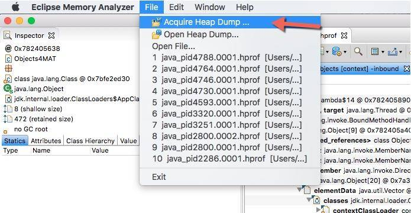
2.2. 内存泄漏检测
如果问题特别突出，则可以通过 Find Leaks 菜单快速找出问题。
如下图所示，展示了名称叫做 huge-thread 的线程，持有了超过 96% 的对象，数据被一个 HashMap 所持有。
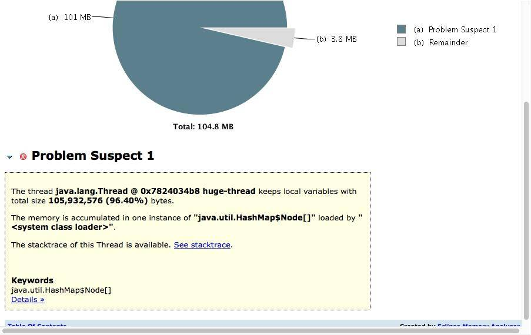
对于特别明显的内存泄漏，在这里能够帮助我们迅速定位，但通常内存泄漏问题会比较隐蔽，我们需要更加复杂的分析。
2.3. 支配树视图
支配树视图对数据进行了归类，体现了对象之间的依赖关系。如图，我们通常会根据“深堆”进行倒序排序，可以很容易的看到占用内存比较高的几个对象，点击前面的箭头，即可一层层展开支配关系。
图中显示的是其中的 1 MB 数据，从左侧的 inspector 视图，可以看到这 1 MB 的 byte 数组具体内容。
从支配树视图同样能够找到我们创建的两个循环依赖，但它们并没有显示这个过程。
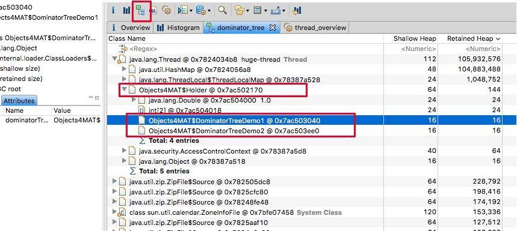
支配树视图的概念有一点点复杂，我们只需要了解这个概念即可。
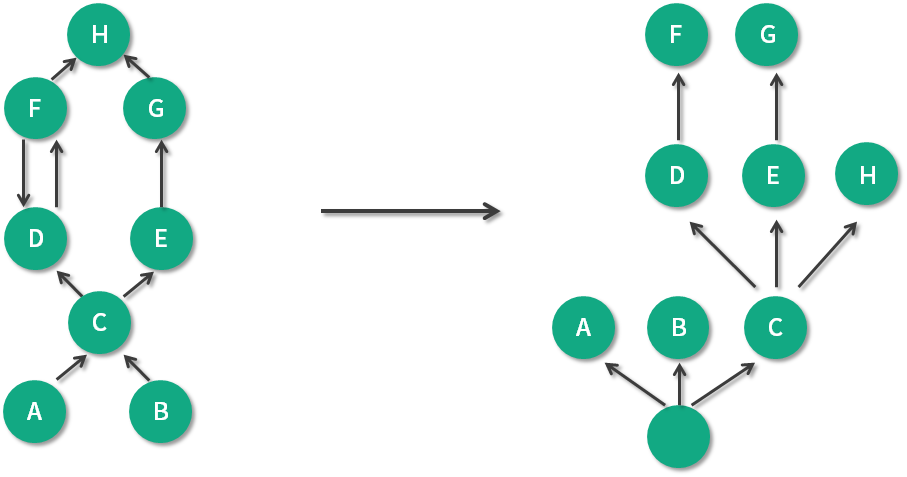
如上图，左边是引用关系，右边是支配树视图。可以看到 A、B、C 被当作是“虚拟”的根，支配关系是可传递的，因为 C 支配 E，E 支配 G，所以 C 也支配 G。
另外，到对象 C 的路径中，可以经过 A，也可以经过 B，因此对象 C 的直接支配者也是根对象。同理，对象 E 是 H 的支配者。
我们再来看看比较特殊的 D 和 F。对象 F 与对象 D 相互引用，因为到对象 F 的所有路径必然经过对象 D，因此，对象 D 是对象 F 的直接支配者。
可以看到支配树视图并不一定总是能看到对象的真实应用关系，但对我们分析问题的影响并不是很大。
这个视图是非常好用的，甚至可以根据 package 进行归类，对目标类的查找也是非常快捷的。
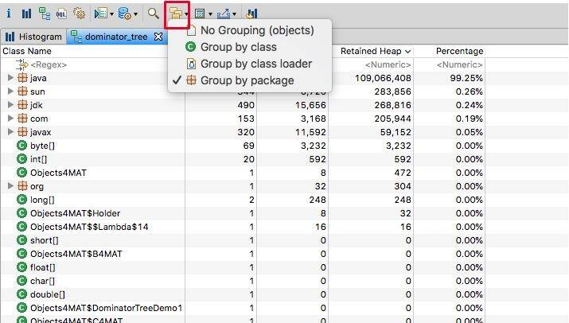
编译下面这段代码，可以展开视图，实际观测一下支配树，这和我们上面介绍的是一致的。
public class DorminatorTreeDemo {
static class A {
C c;
byte[] data = new byte[1024 * 1024 * 2];
}
static class B {
C c;
byte[] data = new byte[1024 * 1024 * 3];
}
static class C {
D d;
E e;
byte[] data = new byte[1024 * 1024 * 5];
}
static class D {
F f;
byte[] data = new byte[1024 * 1024 * 7];
}
static class E {
G g;
byte[] data = new byte[1024 * 1024 * 11];
}
static class F {
D d;
H h;
byte[] data = new byte[1024 * 1024 * 13];
}
static class G {
H h;
byte[] data = new byte[1024 * 1024 * 17];
}
static class H {
byte[] data = new byte[1024 * 1024 * 19];
}
A makeRef(A a, B b) {
C c = new C();
D d = new D();
E e = new E();
F f = new F();
G g = new G();
H h = new H();
a.c = c;
b.c = c;
c.e = e;
c.d = d;
d.f = f;
e.g = g;
f.d = d;
f.h = h;
g.h = h;
return a;
}
static A a = new A();
static B b = new B();
public static void main(String[] args) throws Exception {
new DorminatorTreeDemo().makeRef(a, b);
Thread.sleep(Integer.MAX_VALUE);
}
}

2.4. 线程视图
想要看具体的引用关系，可以通过线程视图。我们在第 5 讲，就已经了解了线程其实是可以作为 GC Roots 的。如图展示了线程内对象的引用关系，以及方法调用关系，相对比 jstack 获取的栈 dump，我们能够更加清晰地看到内存中具体的数据。
如下图，我们找到了 huge-thread，依次展开找到 holder 对象，可以看到循环依赖已经陷入了无限循环的状态。这在查看一些 Java 对象的时候，经常发生，不要感到奇怪。

2.5. 柱状图视图
我们返回头来再看一下柱状图视图，可以看到除了对象的大小，还有类的实例个数。结合 MAT 提供的不同显示方式，往往能够直接定位问题。也可以通过正则过滤一些信息，我们在这里输入 MAT，过滤猜测的、可能出现问题的类，可以看到，创建的这些自定义对象，不多不少正好一百个。
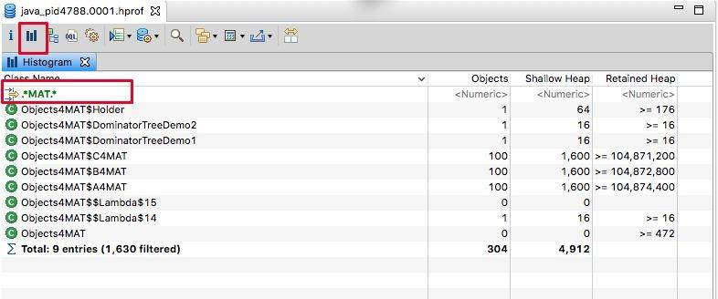
右键点击类，然后选择 incoming，这会列出所有的引用关系。
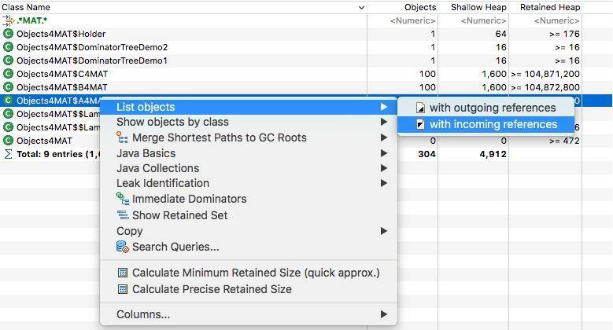
再次选择某个引用关系，然后选择菜单“Path To GC Roots”，即可显示到 GC Roots 的全路径。通常在排查内存泄漏的时候，会选择排除虚弱软等引用。

使用这种方式，即可在引用之间进行跳转，方便的找到所需要的信息。

再介绍一个比较高级的功能。
我们对于堆的快照，其实是一个“瞬时态”，有时候仅仅分析这个瞬时状态，并不一定能确定问题，这就需要对两个或者多个快照进行对比，来确定一个增长趋势。
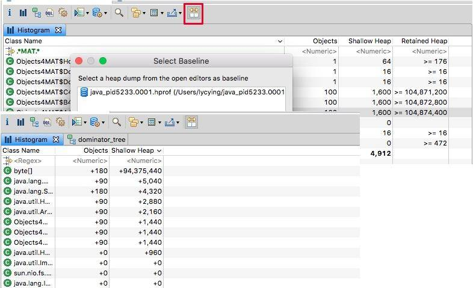
可以将代码中的 100 改成 10 或其他数字，再次 dump 一份快照进行比较。如图，通过分析某类对象的增长，即可辅助问题定位。
3. 高级功能—OQL
MAT 支持一种类似于 SQL 的查询语言 OQL（Object Query Language），这个查询语言 VisualVM 工具也支持。
以下是几个例子，你可以实际实践一下。
查询 A4MAT 对象：
SELECT * FROM Objects4MAT$A4MAT
正则查询 MAT 结尾的对象：
SELECT * FROM ".*MAT"
查询 String 类的 char 数组：
SELECT OBJECTS s.value FROM java.lang.String s
SELECT OBJECTS mat.b4MAT FROM Objects4MAT$A4MAT mat
根据内存地址查找对象：
select * from 0x55a034c8
使用 INSTANCEOF 关键字，查找所有子类：
SELECT * FROM INSTANCEOF java.util.AbstractCollection
查询长度大于 1000 的 byte 数组：
SELECT * FROM byte[] s WHERE s.@length>1000
查询包含 java 字样的所有字符串：
SELECT * FROM java.lang.String s WHERE toString(s) LIKE ".*java.*"
查找所有深堆大小大于 1 万的对象：
SELECT * FROM INSTANCEOF java.lang.Object o WHERE o.@retainedHeapSize>10000
如果你忘记这些属性的名称的话，MAT 是可以自动补全的。
一般，我们使用上面这些简单的查询语句就够用了。
OQL 还有一个好处，就是可以分享。如果你和同事同时在分析一个大堆，不用告诉他先点哪一步、再点哪一步，共享给他一个 OQL 语句就可以了。
如下图，MAT 贴心的提供了复制 OQL 的功能，但是用在其他快照上，不会起作用，因为它复制的是如下的内容。
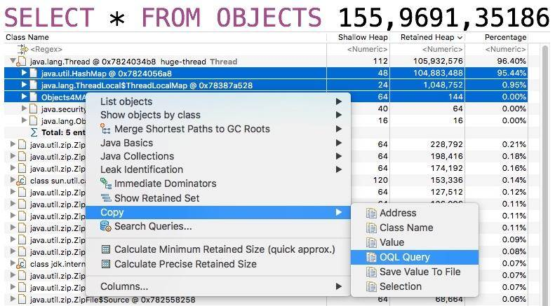
4. 小结
这一讲我们介绍了 MAT 工具的使用，其是用来分析内存快照的；在最后，简要介绍了 OQL 查询语言。
在 Java 9 以前的版本中，有一个工具 jhat，可以以 html 的方式显示堆栈信息，但和 VisualVm 一样，都太过于简陋，推荐使用 MAT 工具。
我们把问题设定为内存泄漏，但其实 OOM 或者频繁 GC 不一定就是内存泄漏，它也可能是由于某次或者某批请求频繁而创建了大量对象，所以一些严重的、频繁的 GC 问题也能在这里找到原因。有些情况下，占用内存最多的对象，并不一定是引起内存泄漏问题的元凶，但我们也有一个比较通用的分析过程。
并不是所有的堆都值得分析的，我们在做这个耗时的分析之前，需要有个依据。比如，经过初步调优之后，GC 的停顿时间还是较长，则需要找到频繁 GC 的原因；再比如，我们发现了内存泄漏，需要找到是谁在搞鬼。
首先，我们高度关注快照载入后的初始分析，占用内存高的 topN 对象，大概率是问题产生者。
对照自己的代码，首先要分析的，就是产生这些大对象的逻辑。举几个实际发生的例子。有一个 Spring Boot 应用，由于启用了 Swagger 文档生成器，但是由于它的 API 关系非常复杂，嵌套层次又非常深（每次要产生几百 M 的文档！），结果请求几次之后产生了内存溢出，这在 MAT 上就能够一眼定位到问题；而另外一个应用，在读取数据库的时候使用了分页，但是 pageSize 并没有做一些范围检查，结果在请求一个较大分页的时候，使用 fastjson 对获取的数据进行加工，直接 OOM。
如果不能通过大对象发现问题，则需要对快照进行深入分析。使用柱状图和支配树视图，配合引入引出和各种排序，能够对内存的使用进行整体的摸底。由于我们能够看到内存中的具体数据，排查一些异常数据就容易得多。
可以在程序运行的不同时间点，获取多份内存快照，对比之后问题会更加容易发现。我们还是用一个例子来看。有一个应用，使用了 Kafka 消息队列，开了一般大小的消费缓冲区，Kafka 会复用这个缓冲区，按理说不应该有内存问题，但是应用却频繁发生 GC。通过对比请求高峰和低峰期间的内存快照，我们发现有工程师把消费数据放入了另外一个 “内存队列”，写了一些画蛇添足的代码，结果在业务高峰期一股脑把数据加载到了内存中。
上面这些问题通过分析业务代码，也不难发现其关联性。问题如果非常隐蔽，则需要使用 OQL 等语言，对问题一一排查、确认。
可以看到，上手 MAT 工具是有一定门槛的，除了其操作模式，还需要对我们前面介绍的理论知识有深入的理解，比如 GC Roots、各种引用级别等。
在很多场景，MAT 并不仅仅用于内存泄漏的排查。由于我们能够看到内存上的具体数据，在排查一些难度非常高的 bug 时，MAT 也有用武之地。比如，因为某些脏数据，引起了程序的执行异常，此时，想要找到它们，不要忘了 MAT 这个老朋友。
14 动手实践：让面试官刮目相看的堆外内存排查
本课时我们主要讲解让面试官刮目相看的堆外内存排查。
第 02 课时讲了 JVM 的内存布局，同时也在第 08 课时中看到了由于 Metaspace 设置过小而引起的问题，接着，第 10 课时讲了一下元空间和直接内存引起的内存溢出实例。
Metaspace 属于堆外内存，但由于它是单独管理的，所以排查起来没什么难度。你平常可能见到的使用堆外内存的场景还有下面这些：
- JNI 或者 JNA 程序，直接操纵了本地内存，比如一些加密库；
- 使用了Java 的 Unsafe 类，做了一些本地内存的操作；
- Netty 的直接内存（Direct Memory），底层会调用操作系统的 malloc 函数。
使用堆外内存可以调用一些功能完备的库函数，而且减轻了 GC 的压力。这些代码，有可能是你了解的人写的，也有可能隐藏在第三方的 jar 包里。虽然有一些好处，但是问题排查起来通常会比较的困难。
在第 10 课时，介绍了 MaxDirectMemorySize 可以控制直接内存的申请。其实，通过这个参数，仍然限制不住所有堆外内存的使用，它只是限制了使用 DirectByteBuffer 的内存申请。很多时候（比如直接使用了 sun.misc.Unsafe 类），堆外内存会一直增长，直到机器物理内存爆满，被 oom killer。
import sun.misc.Unsafe;
import java.lang.reflect.Field;
public class UnsafeDemo {
public static final int _1MB = 1024 * 1024;
public static void main(String[] args) throws Exception {
Field field = Unsafe.class.getDeclaredField("theUnsafe");
field.setAccessible(true);
Unsafe unsafe = (Unsafe) field.get(null);
for (; ; ) {
unsafe.allocateMemory(_1MB);
}
}
上面这段代码，就会持续申请堆外内存，但它返回的是 long 类型的地址句柄，所以堆内内存的使用会很少。
我们使用下面的命令去限制堆内和直接内存的使用，结果发现程序占用的操作系统内存在一直上升，这两个参数在这种场景下没有任何效果。这段程序搞死了我的机器很多次，运行的时候要小心。
java -XX:MaxDirectMemorySize=10M -Xmx10M UnsafeDemo
相信这种情况也困扰了你，因为使用一些 JDK 提供的工具，根本无法发现这部门内存的使用。我们需要一些更加底层的工具来发现这些游离的内存分配。其实，很多内存和性能问题，都逃不过下面要介绍的这些工具的联合分析。本课时将会结合一个实际的例子，来看一下一个堆外内存的溢出情况，了解常见的套路。
1. 现象
我们有一个服务，非常的奇怪，在某个版本之后，占用的内存开始增长，直到虚拟机分配的内存上限，但是并不会 OOM。如果你开启了 SWAP，会发现这个应用也会毫不犹豫的将它吞掉，有多少吞多少。
说它的内存增长，是通过 top 命令去观察的，看它的 RES 列的数值；反之，如果使用 jmap 命令去看内存占用，得到的只是堆的大小，只能看到一小块可怜的空间。

使用 ps 也能看到相同的效果。我们观测到，除了虚拟内存比较高，达到了 17GB 以外，实际使用的内存 RSS 也夸张的达到了 7 GB，远远超过了 -Xmx 的设定。
[root]$ ps -p 75 -o rss,vsz
RSS VSZ 7152568 17485844
使用 jps 查看启动参数，发现分配了大约 3GB 的堆内存。实际内存使用超出了最大内存设定的一倍还多，这明显是不正常的，肯定是使用了堆外内存。
2. 模拟程序
为了能够使用这些工具实际观测这个内存泄漏的过程，我这里准备了一份小程序。程序将会持续的使用 Java 的 Zip 函数进行压缩和解压，这种操作在一些对传输性能较高的的场景经常会用到。
程序将会申请 1kb 的随机字符串，然后持续解压。为了避免让操作系统陷入假死状态，我们每次都会判断操作系统内存使用率，在达到 60% 的时候，我们将挂起程序；通过访问 8888 端口，将会把内存阈值提高到 85%。我们将分析这两个处于相对静态的虚拟快照。
import com.sun.management.OperatingSystemMXBean;
import com.sun.net.httpserver.HttpContext;
import com.sun.net.httpserver.HttpServer;
import java.io.*;
import java.lang.management.ManagementFactory;
import java.net.InetSocketAddress;
import java.util.Random;
import java.util.concurrent.ThreadLocalRandom;
import java.util.zip.GZIPInputStream;
import java.util.zip.GZIPOutputStream;
/**
* @author xjjdog
*/
public class LeakExample {
/**
* 构造随机的字符串
*/
public static String randomString(int strLength) {
Random rnd = ThreadLocalRandom.current();
StringBuilder ret = new StringBuilder();
for (int i = 0; i < strLength; i++) {
boolean isChar = (rnd.nextInt(2) % 2 == 0);
if (isChar) {
int choice = rnd.nextInt(2) % 2 == 0 ? 65 : 97;
ret.append((char) (choice + rnd.nextInt(26)));
} else {
ret.append(rnd.nextInt(10));
}
}
return ret.toString();
}
public static int copy(InputStream input, OutputStream output) throws IOException {
long count = copyLarge(input, output);
return count > 2147483647L ? -1 : (int) count;
}
public static long copyLarge(InputStream input, OutputStream output) throws IOException {
byte[] buffer = new byte[4096];
long count = 0L;
int n;
for (; -1 != (n = input.read(buffer)); count += (long) n) {
output.write(buffer, 0, n);
}
return count;
}
public static String decompress(byte[] input) throws Exception {
ByteArrayOutputStream out = new ByteArrayOutputStream();
copy(new GZIPInputStream(new ByteArrayInputStream(input)), out);
return new String(out.toByteArray());
}
public static byte[] compress(String str) throws Exception {
ByteArrayOutputStream bos = new ByteArrayOutputStream();
GZIPOutputStream gzip = new GZIPOutputStream(bos);
try {
gzip.write(str.getBytes());
gzip.finish();
byte[] b = bos.toByteArray();
return b;
}finally {
try { gzip.close(); }catch (Exception ex ){}
try { bos.close(); }catch (Exception ex ){}
}
}
private static OperatingSystemMXBean osmxb = (OperatingSystemMXBean) ManagementFactory.getOperatingSystemMXBean();
public static int memoryLoad() {
double totalvirtualMemory = osmxb.getTotalPhysicalMemorySize();
double freePhysicalMemorySize = osmxb.getFreePhysicalMemorySize();
double value = freePhysicalMemorySize / totalvirtualMemory;
int percentMemoryLoad = (int) ((1 - value) * 100);
return percentMemoryLoad;
}
private static volatile int RADIO = 60;
public static void main(String[] args) throws Exception {
HttpServer server = HttpServer.create(new InetSocketAddress(8888), 0);
HttpContext context = server.createContext("/");
context.setHandler(exchange -> {
try {
RADIO = 85;
String response = "OK!";
exchange.sendResponseHeaders(200, response.getBytes().length);
OutputStream os = exchange.getResponseBody();
os.write(response.getBytes());
os.close();
} catch (Exception ex) {
}
});
server.start();
//1kb
int BLOCK_SIZE = 1024;
String str = randomString(BLOCK_SIZE / Byte.SIZE);
byte[] bytes = compress(str);
for (; ; ) {
int percent = memoryLoad();
if (percent > RADIO) {
Thread.sleep(1000);
} else {
decompress(bytes);
Thread.sleep(1);
}
程序将使用下面的命令行进行启动。为了简化问题，这里省略了一些无关的配置。
java -Xmx1G -Xmn1G -XX:+AlwaysPreTouch -XX:MaxMetaspaceSize=10M -XX:MaxDirectMemorySize=10M -XX:NativeMemoryTracking=detail LeakExample
3. NMT
首先介绍一下上面的几个 JVM 参数，分别使用 Xmx、MaxMetaspaceSize、MaxDirectMemorySize 这三个参数限制了堆、元空间、直接内存的大小。
然后，使用 AlwaysPreTouch 参数。其实，通过参数指定了 JVM 大小，只有在 JVM 真正使用的时候，才会分配给它。这个参数，在 JVM 启动的时候，就把它所有的内存在操作系统分配了。在堆比较大的时候，会加大启动时间，但在这个场景中，我们为了减少内存动态分配的影响，把这个值设置为 True。
接下来的 NativeMemoryTracking，是用来追踪 Native 内存的使用情况。通过在启动参数上加入 -XX:NativeMemoryTracking=detail 就可以启用。使用 jcmd 命令，就可查看内存分配。
jcmd $pid VM.native_memory summary
我们在一台 4GB 的虚拟机上使用上面的命令。启动程序之后，发现进程使用的内存迅速升到 2.4GB。
# jcmd 2154 VM.native_memory summary
2154:
Native Memory Tracking:
Total: reserved=2370381KB, committed=1071413KB
- Java Heap (reserved=1048576KB, committed=1048576KB)
(mmap: reserved=1048576KB, committed=1048576KB)
- Class (reserved=1056899KB, committed=4995KB)
(classes #432)
(malloc=131KB #328)
(mmap: reserved=1056768KB, committed=4864KB)
- Thread (reserved=10305KB, committed=10305KB)
(thread #11)
(stack: reserved=10260KB, committed=10260KB)
(malloc=34KB #52)
(arena=12KB #18)
- Code (reserved=249744KB, committed=2680KB)
(malloc=144KB #502)
(mmap: reserved=249600KB, committed=2536KB)
- GC (reserved=2063KB, committed=2063KB)
(malloc=7KB #80)
(mmap: reserved=2056KB, committed=2056KB)
- Compiler (reserved=138KB, committed=138KB)
(malloc=8KB #38)
(arena=131KB #5)
- Internal (reserved=789KB, committed=789KB)
(malloc=757KB #1272)
(mmap: reserved=32KB, committed=32KB)
- Symbol (reserved=1535KB, committed=1535KB)
(malloc=983KB #114)
(arena=552KB #1)
- Native Memory Tracking (reserved=159KB, committed=159KB)
(malloc=99KB #1399)
(tracking overhead=60KB)
- Arena Chunk (reserved=174KB, committed=174KB)
(mall
可惜的是，这个名字让人振奋的工具并不能如它描述的一样，看到我们这种泄漏的场景。下图这点小小的空间，是不能和 2GB 的内存占用相比的。
NMT 能看到堆内内存、Code 区域或者使用 unsafe.allocateMemory 和 DirectByteBuffer 申请的堆外内存，虽然是个好工具但问题并不能解决。
使用 jmap 工具，dump 一份堆快照，然后使用 MAT 分析，依然不能找到这部分内存。
4. pmap
像是 EhCache 这种缓存框架，提供了多种策略，可以设定将数据存储在非堆上，我们就是要排查这些影响因素。如果能够在代码里看到这种可能性最大的代码块，是最好的。
为了进一步分析问题，我们使用 pmap 命令查看进程的内存分配，通过 RSS 升序序排列。结果发现除了地址 00000000c0000000 上分配的 1GB 堆以外（也就是我们的堆内存），还有数量非常多的 64M 一块的内存段，还有巨量小的物理内存块映射到不同的虚拟内存段上。但到现在为止，我们不知道里面的内容是什么，是通过什么产生的。
# pmap -x 2154 | sort -n -k3
Address Kbytes RSS Dirty Mode Mapping
---------------- ------- ------- -------
0000000100080000 1048064 0 0 ----- [ anon ]
00007f2d4fff1000 60 0 0 ----- [ anon ]
00007f2d537fb000 8212 0 0 ----- [ anon ]
00007f2d57ff1000 60 0 0 ----- [ anon ]
.....省略N行
00007f2e3c000000 65524 22064 22064 rw--- [ anon ]
00007f2e00000000 65476 22068 22068 rw--- [ anon ]
00007f2e18000000 65476 22072 22072 rw--- [ anon ]
00007f2e30000000 65476 22076 22076 rw--- [ anon ]
00007f2dc0000000 65520 22080 22080 rw--- [ anon ]
00007f2dd8000000 65520 22080 22080 rw--- [ anon ]
00007f2da8000000 65524 22088 22088 rw--- [ anon ]
00007f2e8c000000 65528 22088 22088 rw--- [ anon ]
00007f2e64000000 65520 22092 22092 rw--- [ anon ]
00007f2e4c000000 65520 22096 22096 rw--- [ anon ]
00007f2e7c000000 65520 22096 22096 rw--- [ anon ]
00007f2ecc000000 65520 22980 22980 rw--- [ anon ]
00007f2d84000000 65476 23368 23368 rw--- [ anon ]
00007f2d9c000000 131060 43932 43932 rw--- [ anon ]
00007f2d50000000 57324 56000 56000 rw--- [ anon ]
00007f2d4c000000 65476 64160 64160 rw--- [ anon ]
00007f2d5c000000 65476 64164 64164 rw--- [ anon ]
00007f2d64000000 65476 64164 64164 rw--- [ anon ]
00007f2d54000000 65476 64168 64168 rw--- [ anon ]
00007f2d7c000000 65476 64168 64168 rw--- [ anon ]
00007f2d60000000 65520 64172 64172 rw--- [ anon ]
00007f2d6c000000 65476 64172 64172 rw--- [ anon ]
00007f2d74000000 65476 64172 64172 rw--- [ anon ]
00007f2d78000000 65520 64176 64176 rw--- [ anon ]
00007f2d68000000 65520 64180 64180 rw--- [ anon ]
00007f2d80000000 65520 64184 64184 rw--- [ anon ]
00007f2d58000000 65520 64188 64188 rw--- [ anon ]
00007f2d70000000 65520 64192 64192 rw--- [ anon ]
00000000c0000000 1049088 1049088 1049088 rw--- [ anon ]
total kB 8492740 3511008 3498584
通过 Google，找到以下资料 Linux glibc >= 2.10 (RHEL 6) malloc may show excessive virtual memory usage) 。
文章指出造成应用程序大量申请 64M 大内存块的原因是由 Glibc 的一个版本升级引起的，通过 export MALLOC_ARENA_MAX=4 可以解决 VSZ 占用过高的问题。虽然这也是一个问题，但却不是我们想要的，因为我们增长的是物理内存，而不是虚拟内存，程序在这一方面表现是正常的。
5. gdb
非常好奇 64M 或者其他小内存块中是什么内容，接下来可以通过 gdb 工具将其 dump 出来。
读取 /proc 目录下的 maps 文件，能精准地知晓目前进程的内存分布。以下脚本通过传入进程 id，能够将所关联的内存全部 dump 到文件中。注意，这个命令会影响服务，要慎用。
pid=$1;grep rw-p /proc/$pid/maps | sed -n 's/^\([0-9a-f]*\)-\([0-9a-f]*\) .*$/\1 \2/p' | while read start stop; do gdb --batch --pid $pid -ex "dump memory $1-$start-$stop.dump 0x$start 0x$stop"; done
这个命令十分霸道，甚至把加载到内存中的 class 文件、堆文件一块给 dump 下来。这是机器的原始内存，大多数文件我们打不开。
更多时候，只需要 dump 一部分内存就可以。再次提醒操作会影响服务，注意 dump 的内存块大小，线上一定要慎用。
我们复制 pman 的一块 64M 内存，比如 00007f2d70000000，然后去掉前面的 0，使用下面代码得到内存块的开始和结束地址。
cat /proc/2154/maps | grep 7f2d70000000
7f2d6fff1000-7f2d70000000 ---p 00000000 00:00 0 7f2d70000000-7f2d73ffc000 rw-p 00000000 00:00 0
接下来就 dump 这 64MB 的内存。
gdb --batch --pid 2154 -ex "dump memory a.dump 0x7f2d70000000 0x7f2d73ffc000"
使用 du 命令查看具体的内存块大小，不多不少正好 64M。
# du -h a.dump
64M a.dump
是时候查看里面的内容了，使用 strings 命令可以看到内存块里一些可以打印的内容。
# strings -10 a.dump
0R4f1Qej1ty5GT8V1R8no6T44564wz499E6Y582q2R9h8CC175GJ3yeJ1Q3P5Vt757Mcf6378kM36hxZ5U8uhg2A26T5l7f68719WQK6vZ2BOdH9lH5C7838qf1
...
等等？这些内容不应该在堆里面么？为何还会使用额外的内存进行分配？那么还有什么地方在分配堆外内存呢？
这种情况，只可能是 native 程序对堆外内存的操作。
6. perf
下面介绍一个神器 perf，除了能够进行一些性能分析，它还能帮助我们找到相应的 native 调用。这么突出的堆外内存使用问题，肯定能找到相应的调用函数。
使用 perf record -g -p 2154 开启监控栈函数调用，然后访问服务器的 8888 端口，这将会把内存使用的阈值增加到 85%，我们的程序会逐渐把这部分内存占满，你可以 syi。perf 运行一段时间后 Ctrl+C 结束，会生成一个文件 perf.data。
执行 perf report -i perf.data 查看报告。

如图，一般第三方 JNI 程序，或者 JDK 内的模块，都会调用相应的本地函数，在 Linux 上，这些函数库的后缀都是 so。
我们依次浏览用的可疑资源，发现了“libzip.so”，还发现了不少相关的调用。搜索 zip（输入 / 进入搜索模式），结果如下：

查看 JDK 代码，发现 bzip 大量使用了 native 方法。也就是说，有大量内存的申请和销毁，是在堆外发生的。
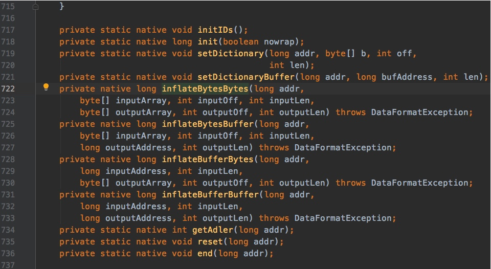
进程调用了Java_java_util_zip_Inflater_inflatBytes() 申请了内存，却没有调用 Deflater 释放内存。与 pmap 内存地址相比对，确实是 zip 在搞鬼。
7. gperftools
google 还有一个类似的、非常好用的工具，叫做 gperftools，我们主要用到它的 Heap Profiler，功能更加强大。
它的启动方式有点特别，安装成功之后，你只需要输出两个环境变量即可。
mkdir -p /opt/test
export LD_PRELOAD=/usr/lib64/libtcmalloc.so
export HEAPPROFILE=/opt/test/heap
在同一个终端，再次启动我们的应用程序，可以看到内存申请动作都被记录到了 opt 目录下的 test 目录。

接下来，我们就可以使用 pprof 命令分析这些文件。
cd /opt/test
pprof -text *heap | head -n 200
使用这个工具，能够一眼追踪到申请内存最多的函数。Java_java_util_zip_Inflater_init 这个函数立马就被发现了。
Total: 25205.3 MB
20559.2 81.6% 81.6% 20559.2 81.6% inflateBackEnd
4487.3 17.8% 99.4% 4487.3 17.8% inflateInit2_
75.7 0.3% 99.7% 75.7 0.3% os::malloc@8bbaa0
70.3 0.3% 99.9% 4557.6 18.1% Java_java_util_zip_Inflater_init
7.1 0.0% 100.0% 7.1 0.0% readCEN
3.9 0.0% 100.0% 3.9 0.0% init
1.1 0.0% 100.0% 1.1 0.0% os::malloc@8bb8d0
0.2 0.0% 100.0% 0.2 0.0% _dl_new_object
0.1 0.0% 100.0% 0.1 0.0% __GI__dl_allocate_tls
0.1 0.0% 100.0% 0.1 0.0% _nl_intern_locale_data
0.0 0.0% 100.0% 0.0 0.0% _dl_check_map_versions
0.0 0.0% 100.0% 0.0 0.0% __GI___strdup
0.0 0.0% 100.0% 0.1 0.0% _dl_map_object_deps
0.0 0.0% 100.0% 0.0 0.0% nss_parse_service_list
0.0 0.0% 100.0% 0.0 0.0% __new_exitfn
0.0 0.0% 100.0% 0.0 0.0% getpwuid
0.0 0.0% 100.0% 0.0 0.0% expand_dynamic_string_token
8. 解决
这就是我们模拟内存泄漏的整个过程，到此问题就解决了。
GZIPInputStream 使用 Inflater 申请堆外内存、Deflater 释放内存，调用 close() 方法来主动释放。如果忘记关闭，Inflater 对象的生命会延续到下一次 GC，有一点类似堆内的弱引用。在此过程中，堆外内存会一直增长。
把 decompress 函数改成如下代码，重新编译代码后观察，问题解决。
public static String decompress(byte[] input) throws Exception {
ByteArrayOutputStream out = new ByteArrayOutputStream();
GZIPInputStream gzip = new GZIPInputStream(new ByteArrayInputStream(input));
try {
copy(gzip, out);
return new String(out.toByteArray());
}finally {
try{ gzip.close(); }catch (Exception ex){}
try{ out.close(); }catch (Exception ex){}
}
}
9. 小结
本课时使用了非常多的工具和命令来进行堆外内存的排查，可以看到，除了使用 jmap 获取堆内内存，还对堆外内存的获取也有不少办法。
现在，我们可以把堆外内存进行更加细致地划分了。
元空间属于堆外内存，主要是方法区和常量池的存储之地，使用数“MaxMetaspaceSize”可以限制它的大小，我们也能观测到它的使用。
直接内存主要是通过 DirectByteBuffer 申请的内存，可以使用参数“MaxDirectMemorySize”来限制它的大小（参考第 10 课时）。
其他堆外内存，主要是指使用了 Unsafe 或者其他 JNI 手段直接直接申请的内存。这种情况，就没有任何参数能够阻挡它们，要么靠它自己去释放一些内存，要么等待操作系统对它的审判了。
还有一种情况，和内存的使用无关，但是也会造成内存不正常使用，那就是使用了 Process 接口，直接调用了外部的应用程序，这些程序对操作系统的内存使用一般是不可预知的。
本课时介绍的一些工具，很多高级研发，包括一些面试官，也是不知道的；即使了解这个过程，不实际操作一遍，也很难有深刻的印象。通过这个例子，你可以看到一个典型的堆外内存问题的排查思路。
堆外内存的泄漏是非常严重的，它的排查难度高、影响大，甚至会造成宿主机的死亡。在排查内存问题时，不要忘了这一环。
15 预警与解决：深入浅出 GC 监控与调优
本课时我们主要讲解深入浅出 GC 监控与调优。
在前面的课时中不止一次谈到了监控，但除了 GC Log，大多数都是一些“瞬时监控”工具，也就是看到的问题，基本是当前发生的。
你可能见过在地铁上抱着电脑处理故障的照片，由此可见，大部分程序员都是随身携带电脑的，它体现了两个问题：第一，自动化应急处理机制并不完善；第二，缺乏能够跟踪定位问题的工具，只能靠“苦力”去解决。
我们在前面第 11 课时中提到的一系列命令，就是一个被分解的典型脚本，这个脚本能够在问题发生的时候，自动触发并保存顺时态的现场。除了这些工具，我们还需要有一个与时间序列相关的监控系统。这就是监控工具的必要性。
我们来盘点一下对于问题的排查，现在都有哪些资源：
- GC 日志，能够反映每次 GC 的具体状况，可根据这些信息调整一些参数及容量；
- 问题发生点的堆快照，能够在线下找到具体内存泄漏的原因；
- 问题发生点的堆栈信息，能够定位到当前正在运行的业务，以及一些死锁问题；
- 操作系统监控，比如 CPU 资源、内存、网络、I/O 等，能够看到问题发生前后整个操作系统的资源状况；
- 服务监控，比如服务的访问量、响应时间等，可以评估故障堆服务的影响面，或者找到一些突增的流量来源；
- JVM 各个区的内存变化、GC 变化、耗时等监控，能够帮我们了解到 JVM 在整个故障周期的时间跨度上，到底发生了什么。
在实践课时中，我们也不止一次提到，优化和问题排查是一个综合的过程。故障相关信息越多越好，哪怕是同事不经意间透露的一次压测信息，都能够帮助你快速找到问题的根本。
本课时将以一个实际的监控解决方案，来看一下监控数据是怎么收集和分析的。使用的工具主要集中在 Telegraf、InfluxDB 和 Grafana 上，如果你在用其他的监控工具，思路也是类似的。
监控指标
在前面的一些示例代码中，会看到如下的 JMX 代码片段：
static void memPrint() {
for (MemoryPoolMXBean memoryPoolMXBean : ManagementFactory.getMemoryPoolMXBeans()) {
System.out.println(memoryPoolMXBean.getName() +
" committed:" + memoryPoolMXBean.getUsage().getCommitted() +
" used:" + memoryPoolMXBean.getUsage().getUsed());
}
}
这就是 JMX 的作用。除了使用代码，通过 jmc 工具也可以简单地看一下它们的值（前面提到的 VisualVM 通过安装插件，也可以看到这些信息）。
新版本的 JDK 不再包含 jmc 这个工具，可点击这里自行下载。
如下图所示，可以看到一个 Java 进程的资源概览，包括内存、CPU、线程等。

下图是切换到 MBean 选项卡之后的截图，可以看到图中展示的 Metaspace 详细信息。
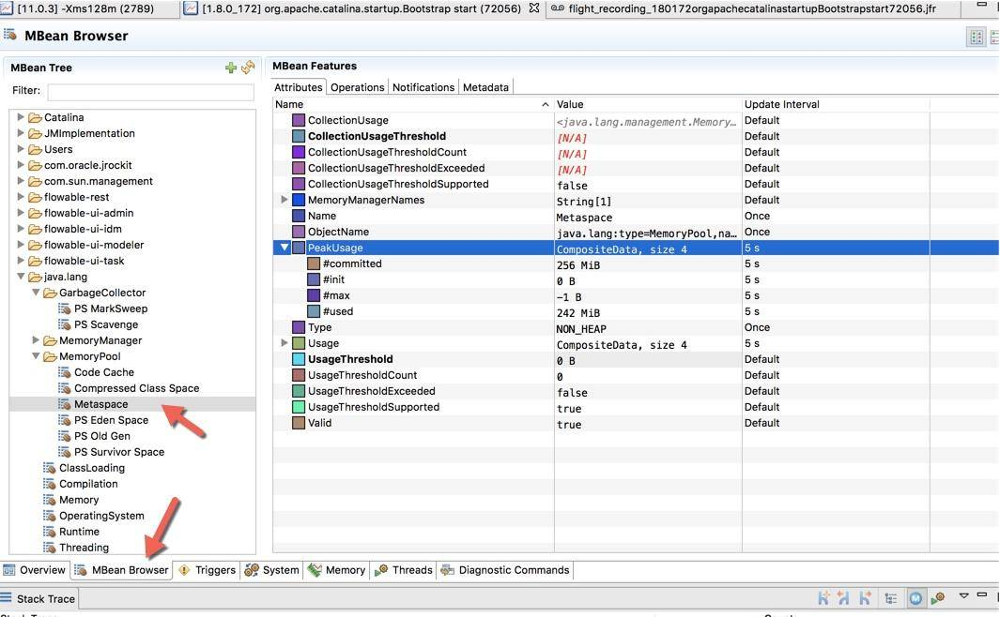
jmc 还是一个性能分析平台，可以录制、收集正在运行的 Java 程序的诊断数据和概要分析数据，感兴趣的可以自行探索。但还是那句话，线上环境可能没有条件让我们使用一些图形化分析工具，相对比 Arthas 这样的命令行工具就比较吃香。
比如，下图就是一个典型的互联网架构图，真正的服务器可能是一群 docker 实例，如果自己的机器想要访问 JVM 的宿主机器，则需要配置一些复杂的安全策略和权限开通。图像化的工具在平常的工作中**不是非常有用，**而且，由于性能损耗和安全性的考虑，也不会让研发主动去通过 JMX 连接这些机器。
所以面试的时候如果你一直在提一些图形化工具，面试官只能无奈的笑笑，这个话题也无法进行下去了。

在必要的情况下，JMX 还可以通过加上一些参数，进行远程访问。
-Djava.rmi.server.hostname=127.0.0.1
-Dcom.sun.management.jmxremote
-Dcom.sun.management.jmxremote.port=14000
-Dcom.sun.management.jmxremote.ssl=false
-Dcom.sun.management.jmxremote.authenticate=false
无论是哪种方式，我们发现每个内存区域，都有四个值：init、used、committed 和 max，下图展示了它们之间的大小关系。

以堆内存大小来说：
- -Xmx 就是 max
- -Xms 就是 init
- committed 指的是当前可用的内存大小，它的大小包括已经使用的内存
- used 指的是实际被使用的内存大小，它的值总是小于 committed
如果在启动的时候，指定了 -Xmx = -Xms，也就是初始值和最大值是一样的，可以看到这四个值，只有 used 是变动的。
Jolokia
单独看这些 JMX 的瞬时监控值，是没有什么用的，需要使用程序收集起来并进行分析。
但是 JMX 的客户端 API 使用起来非常的不方便，Jolokia 就是一个将 JMX 转换成 HTTP 的适配器，方便了 JMX 的使用。
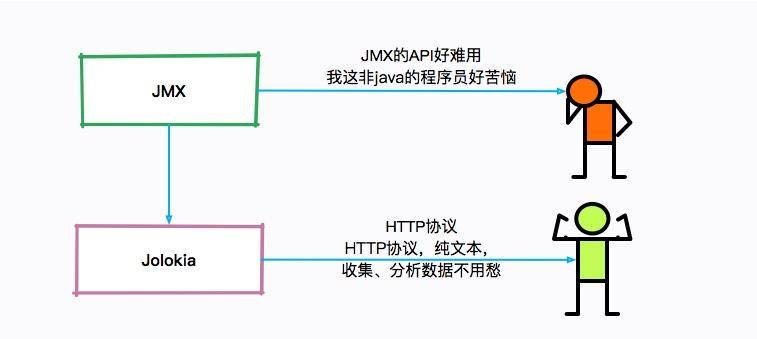
Jokokia 可以通过 jar 包和 agent 的方式启动，在一些框架中，比如 Spring Boot 中，很容易进行集成。
访问 http://start.spring.io，生成一个普通的 Spring Boot 项目。

直接在 pom 文件里加入 jolokia 的依赖。
<dependency>
<groupId>org.springframework.boot</groupId>
<artifactId>spring-boot-starter-actuator</artifactId>
</dependency>
<dependency>
<groupId>org.jolokia</groupId>
<artifactId>jolokia-core</artifactId>
</dependency>
在 application.yml 中简单地加入一点配置，就可以通过 HTTP 接口访问 JMX 的内容了。
management:
endpoints:
web:
exposure:
include: jolokia
你也可以直接下载仓库中的 monitor-demo 项目，启动后访问 8084 端口，即可获取 JMX 的 json 数据。访问链接 /demo 之后，会使用 guava 持续产生内存缓存。
接下来，我们将收集这个项目的 JMX 数据。
http://localhost:8084/actuator/jolokia/list
附上仓库地址：https://gitee.com/xjjdog/jvm-lagou-res。
JVM 监控搭建
我们先简单看一下 JVM 监控的整体架构图： 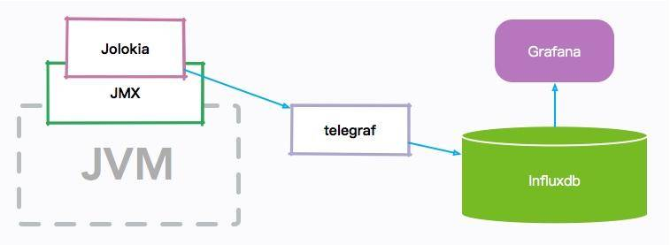
JVM 的各种内存信息，会通过 JMX 接口进行暴露；Jolokia 组件负责把 JMX 信息翻译成容易读取的 HTTP 请求。
telegraf 组件作为一个通用的监控 agent，和 JVM 进程部署在同一台机器上，通过访问转化后的 HTTP 接口，以固定的频率拉取监控信息；然后把这些信息存放到 influxdb 时序数据库中；最后，通过高颜值的 Grafana 展示组件，设计 JVM 监控图表。
整个监控组件是可以热拔插的，并不会影响原有服务。监控部分也是可以复用的，比如 telegraf 就可以很容易的进行操作系统监控。
influxdb
influxdb 是一个性能和压缩比非常高的时序数据库，在中小型公司非常流行，点击这里可获取 influxdb。
在 CentOS 环境中，可以使用下面的命令下载。
wget -c https://dl.influxdata.com/influxdb/releases/influxdb-1.7.9_linux_amd64.tar.gz
tar xvfz influxdb-1.7.9_linux_amd64.tar.gz
解压后，然后使用 nohup 进行启动。
nohup ./influxd &
InfluxDB 将在 8086 端口进行监听。
Telegraf
Telegraf 是一个监控数据收集工具，支持非常丰富的监控类型，其中就包含内置的 Jolokia 收集器。
接下来，下载并安装 Telegraf：
wget -c https://dl.influxdata.com/telegraf/releases/telegraf-1.13.1-1.x86_64.rpm
sudo yum localinstall telegraf-1.13.1-1.x86_64.rpm
Telegraf 通过 jolokia 配置收集数据相对简单，比如下面就是收集堆内存使用状况的一段配置。
[[inputs.jolokia2_agent.metric]]
name = "jvm"
field_prefix = "Memory_"
mbean = "java.lang:type=Memory"
paths = ["HeapMemoryUsage", "NonHeapMemoryUsage", "ObjectPendingFinalizationCount"]
设计这个配置文件的主要难点在于对 JVM 各个内存分区的理解。由于配置文件比较长，可以参考仓库中的 jvm.conf 和 sys.conf，你可以把这两个文件，复制到 /etc/telegraf/telegraf.d/ 目录下面，然后执行 systemctl restart telegraf 重启 telegraf。
grafana
grafana 是一个颜值非常高的监控展示组件，支持非常多的数据源类型，对 influxdb 的集成度也比较高，可通过以下地址进行下载：https://grafana.com/grafana/download
wget -c https://dl.grafana.com/oss/release/grafana-6.5.3.linux-amd64.tar.gz
tar -zxvf grafana-6.5.3.linux-amd64.tar.gz
下面是我已经做好的一张针对于 CMS 垃圾回收器的监控图，你可以导入 grafana-jvm-influxdb.json 文件进行测试。

在导入之前，还需要创建一个数据源，选择 influxdb，填入 db 的地址即可。

集成
把我们的 Spring Boot 项目打包（见仓库），然后上传到服务器上去执行。
打包方式：
mvn package -Dmaven.tesk.skip=true
执行方式（自行替换日志方面配置）：
mkdir /tmp/logs
nohup java -XX:+UseConcMarkSweepGC -Xmx512M -Xms512M -Djava.rmi.server.hos
tname=192.168.99.101 -Dcom.sun.management.jmxremote -Dcom.sun.management.jmx
remote.port=14000 -Dcom.sun.management.jmxremote.ssl=false -Dcom.sun.manage
ment.jmxremote.authenticate=false -verbose:gc -XX:+PrintGCDetails -XX:+PrintG
CDateStamps -XX:+PrintGCApplicationStoppedTime -XX:+PrintTenuringDistributio
n -Xloggc:/tmp/logs/gc_%p.log -XX:+HeapDumpOnOutOfMemoryError -XX:HeapDumpPat
h=/tmp/logs -XX:ErrorFile=/tmp/logs/hs_error_pid%p.log -XX:-OmitStackTraceInF
astThrow -jar monitor-demo-0.0.1-SNAPSHOT.jar 2>&1 &
请将 IP 地址改成自己服务器的实际 IP 地址，这样就可以使用 jmc 或者 VisualVM 等工具进行连接了。
确保 Telegraf、InfluxDB、Grafana 已经启动，这样，Java 进程的 JVM 相关数据，将会以 10 秒一次的频率进行收集，我们可以选择 Grafana 的时间轴，来查看实时的或者历史的监控曲线。
这类监控信息，可以保存长达 1 ~ 2 年，也就是说非常久远的问题，也依然能够被追溯到。如果你想要对 JVM 尽可能地进行调优，就要时刻关注这些监控图。
举一个例子：我们发现有一个线上服务，运行一段时间以后，CPU 升高、程序执行变慢，登录相应的服务器进行分析，发现 C2 编译线程一直处在高耗 CPU 的情况。
但是我们无法解决这个问题，一度以为是 JVM 的 Bug。
通过分析 CPU 的监控图和 JVM 每个内存分区的曲线，发现 CodeCache 相应的曲线，在增加到 32MB 之后，就变成了一条直线，同时 CPU 的使用也开始增加。
通过检查启动参数和其他配置，最终发现一个开发环境的 JVM 参数被一位想要练手的同学给修改了，他本意是想要通过参数 “-XX:ReservedCodeCacheSize” 来限制 CodeCache 的大小，这个参数被误推送到了线上环境。
JVM 通过 JIT 编译器来增加程序的执行效率，JIT 编译后的代码，都会放在 CodeCache 里。如果这个空间不足，JIT 则无法继续编译，编译执行会变成解释执行，性能会降低一个数量级。同时，JIT 编译器会一直尝试去优化代码，造成了 CPU 的占用上升。
由于我们收集了这些分区的监控信息，所以很容易就发现了问题的相关性，这些判断也会反向支持我们的分析，而不仅仅是靠猜测。
小结
本课时简要介绍了基于 JMX 的 JVM 监控，并了解了一系列观测这些数据的工具。但通常，使用 JMX 的 API 还是稍显复杂一些，Jolokia 可以把这些信息转化成 HTTP 的 json 信息。
还介绍了一个可用的监控体系，来收集这些暴露的数据，这也是有点规模的公司采用的正统思路。收集的一些 GC 数据，和前面介绍的 GC 日志是有一些重合的，但我们的监控更突出的是实时性，以及追踪一些可能比较久远的问题数据。
附录：代码清单
- sys.conf 操作系统监控数据收集配置文件，Telegraf 使用。
- jvm.conf JVM 监控配置文件，Telegraf 使用。
- grafana-jvm-influxdb.json JVM 监控面板，Grafana 使用。
- monitor-demo 被收集的 Spring Boot 项目。
16 案例分析：一个高死亡率的报表系统的优化之路
本课时我们主要分析一个案例，那就是一个“高死亡率”报表系统的优化之路。
传统观念上的报表系统，可能访问量不是特别多，点击一个查询按钮，后台 SQL 语句的执行需要等数秒。如果使用 jstack 来查看执行线程，会发现大多数线程都阻塞在数据库的 I/O 上。
上面这种是非常传统的报表。还有一种类似于大屏监控一类的实时报表，这种报表的并发量也是比较可观的，但由于它的结果集都比较小，所以我们可以像对待一个高并发系统一样对待它，问题不是很大。
本课时要讲的，就是传统观念上的报表。除了处理时间比较长以外，报表系统每次处理的结果集，普遍都比较大，这给 JVM 造成了非常大的压力。
下面我们以一个综合性的实例，来看一下一个“病入膏肓”的报表系统的优化操作。
有一个报表系统，频繁发生内存溢出，在高峰期间使用时，还会频繁的发生拒绝服务，这是不可忍受的。
服务背景
本次要优化的服务是一个 SaaS 服务，使用 Spring Boot 编写，采用的是 CMS 垃圾回收器。如下图所示，有些接口会从 MySQL 中获取数据，有些则从 MongoDB 中获取数据，涉及的结果集合都比较大。
由于有些结果集的字段不是太全，因此需要对结果集合进行循环，可通过 HttpClient 调用其他服务的接口进行数据填充。也许你会认为某些数据可能会被复用，于是使用 Guava 做了 JVM 内缓存。
大体的服务依赖可以抽象成下面的图。

初步排查，JVM 的资源太少。当接口 A 每次进行报表计算时，都要涉及几百兆的内存，而且在内存里驻留很长时间，同时有些计算非常耗 CPU，特别的“吃”资源。而我们分配给 JVM 的内存只有 3 GB，在多人访问这些接口的时候，内存就不够用了，进而发生了 OOM。在这种情况下，即使连最简单的报表都不能用了。
没办法，只有升级机器。把机器配置升级到 4core8g，给 JVM 分配 6GB 的内存，这样 OOM 问题就消失了。但随之而来的是频繁的 GC 问题和超长的 GC 时间，平均 GC 时间竟然有 5 秒多。
初步优化
我们前面算过，6GB 大小的内存，年轻代大约是 2GB，在高峰期，每几秒钟则需要进行一次 MinorGC。报表系统和高并发系统不太一样，它的对象，存活时长大得多，并不能仅仅通过增加年轻代来解决；而且，如果增加了年轻代，那么必然减少了老年代的大小，由于 CMS 的碎片和浮动垃圾问题，我们可用的空间就更少了。虽然服务能够满足目前的需求，但还有一些不太确定的风险。
第一，了解到程序中有很多缓存数据和静态统计数据，为了减少 MinorGC 的次数，通过分析 GC 日志打印的对象年龄分布，把 MaxTenuringThreshold 参数调整到了 3（请根据你自己的应用情况设置）。这个参数是让年轻代的这些对象，赶紧回到老年代去，不要老呆在年轻代里。
第二，我们的 GC 时间比较长，就一块开了参数 CMSScavengeBeforeRemark，使得在 CMS remark 前，先执行一次 Minor GC 将新生代清掉。同时配合上个参数，其效果还是比较好的，一方面，对象很快晋升到了老年代，另一方面，年轻代的对象在这种情况下是有限的，在整个 MajorGC 中占的时间也有限。
第三，由于缓存的使用，有大量的弱引用，拿一次长达 10 秒的 GC 来说。我们发现在 GC 日志里，处理 weak refs 的时间较长，达到了 4.5 秒。
2020-01-28T12:13:32.876+0800: 526569.947: [weak refs processing, 4.5240649 secs]
所以加入了参数 ParallelRefProcEnabled 来并行处理 Reference，以加快处理速度，缩短耗时。
同时还加入了其他一些优化参数，比如通过调整触发 GC 的参数来进行优化。
-Xmx6g -Xms6g -XX:MaxTenuringThreshold=3 -XX:+AlwaysPreTouch -XX:+Par
allelRefProcEnabled -XX:+CMSScavengeBeforeRemark -XX:+UseConcMarkSwe
epGC -XX:CMSInitiatingOccupancyFraction=80 -XX:+UseCMSInitiatingOccu
pancyOnly -XX:MetaspaceSize=256M -XX:MaxMetaspaceSize=256M
优化之后，效果不错，但并不是特别明显。经过评估，针对高峰时期的情况进行调研，我们决定再次提升机器性能，改用 8core16g 的机器。但是，这会带来另外一个问题。
高性能的机器带来了非常大的服务吞吐量，通过 jstat 进行监控，能够看到年轻代的分配速率明显提高，但随之而来的 MinorGC 时长却变的不可控，有时候会超过 1 秒。累积的请求造成了更加严重的后果。
这是由于堆空间明显加大造成的回收时间加长。为了获取较小的停顿时间，我们在堆上采用了 G1 垃圾回收器，把它的目标设定在 200ms。G1 是一款非常优秀的垃圾收集器，不仅适合堆内存大的应用，同时也简化了调优的工作。通过主要的参数初始和最大堆空间、以及最大容忍的 GC 暂停目标，就能得到不错的性能。所以为了照顾大对象的生成，我们把小堆区的大小修改为 16 M。修改之后，虽然 GC 更加频繁了一些，但是停顿时间都比较小，应用的运行较为平滑。
-Xmx12g -Xms12g -XX:+UseG1GC -XX:InitiatingHeapOccupancyPercent=45 -XX:MaxGCPauseMillis=200 -XX:G1HeapRegionSize=16m -XX:MetaspaceSize=256m -XX:MaxMetaspaceSize=256m
这个时候，任务来了：业务部门发力，预计客户增长量增长 10 ~ 100 倍，报表系统需要评估其可行性，以便进行资源协调。可问题是，这个“千疮百孔”的报表系统，稍微一压测，就宕机，那如何应对十倍百倍的压力呢？
使用 MAT 分析堆快照，发现很多地方可以通过代码优化，那些占用内存特别多的对象，都是我们需要优化的。
代码优化
我们使用扩容硬件的方式，暂时缓解了 JVM 的问题，但是根本问题并没有触及到。为了减少内存的占用，肯定要清理无用的信息。通过对代码的仔细分析，首先要改造的就是 SQL 查询语句。
很多接口，其实并不需要把数据库的每个字段都查询出来，当你在计算和解析的时候，它们会不知不觉地“吃掉”你的内存。所以我们只需要获取所需的数据就够了，也就是把 select * 这种方式修改为具体的查询字段，对于报表系统来说这种优化尤其明显。
再一个就是 Cache 问题，通过排查代码，会发现一些命中率特别低，占用内存又特别大的对象，放到了 JVM 内的 Cache 中，造成了无用的浪费。
解决方式，就是把 Guava 的 Cache 引用级别改成弱引用（WeakKeys），尽量去掉无用的应用缓存。对于某些使用特别频繁的小 key，使用分布式的 Redis 进行改造即可。
为了找到更多影响因子大的问题，我们部署了独立的环境，然后部署了 JVM 监控。在回放某个问题请求后，观察 JVM 的响应，通过这种方式，发现了更多的优化可能。
报表系统使用了 POI 组件进行导入导出功能的开发，结果客户在没有限制的情况下上传、下载了条数非常多的文件，直接让堆内存飙升。为了解决这种情况，我们在导入功能加入了文件大小的限制，强制客户进行拆分；在下载的时候指定范围，严禁跨度非常大的请求。
在完成代码改造之后，再把机器配置降级回 4core8g，依然采用 G1 垃圾回收器，再也没有发生 OOM 的问题了，GC 问题也得到了明显的缓解。
拒绝服务问题
上面解决的是 JVM 的内存问题，可以看到除了优化 JVM 参数、升级机器配置以外，代码修改带来的优化效果更加明显，但这个报表服务还有一个严重的问题。
刚开始我们提到过，由于没有微服务体系，有些数据需要使用 HttpClient 来获取进行补全。提供数据的服务有的响应时间可能会很长，也有可能会造成服务整体的阻塞。

如上图所示，接口 A 通过 HttpClient 访问服务 2，响应 100ms 后返回；接口 B 访问服务 3，耗时 2 秒。HttpClient 本身是有一个最大连接数限制的，如果服务 3 迟迟不返回，就会造成 HttpClient 的连接数达到上限，最上层的 Tomcat 线程也会一直阻塞在这里，进而连响应速度比较快的接口 A 也无法正常提供服务。
这是出现频率非常高的的一类故障，在工作中你会大概率遇见。概括来讲，就是同一服务，由于一个耗时非常长的接口，进而引起了整体的服务不可用。
这个时候，通过 jstack 打印栈信息，会发现大多数竟然阻塞在了接口 A 上，而不是耗时更长的接口 B。这是一种错觉，其实是因为接口 A 的速度比较快，在问题发生点进入了更多的请求，它们全部都阻塞住了。
证据本身具有非常强的迷惑性。由于这种问题发生的频率很高，排查起来又比较困难，我这里专门做了一个小工程，用于还原解决这种问题的一个方式，参见 report-demo 工程。
demo 模拟了两个使用同一个 HttpClient 的接口。如下图所示，fast 接口用来访问百度，很快就能返回；slow 接口访问谷歌，由于众所周知的原因，会阻塞直到超时，大约 10 s。
使用 wrk 工具对这两个接口发起压测。
wrk -t10 -c200 -d300s http://127.0.0.1:8084/slow
wrk -t10 -c200 -d300s http://127.0.0.1:8084/fast
此时访问一个简单的接口，耗时竟然能够达到 20 秒。
time curl http://localhost:8084/stat
fast648,slow:1curl http://localhost:8084/stat 0.01s user 0.01s system 0% cpu 20.937 total
使用 jstack 工具 dump 堆栈。首先使用 jps 命令找到进程号，然后把结果重定向到文件（可以参考 10271.jstack 文件）。
过滤一下 nio 关键字，可以查看 tomcat 相关的线程，足足有 200 个，这和 Spring Boot 默认的 maxThreads 个数不谋而合。更要命的是，有大多数线程，都处于 BLOCKED 状态，说明线程等待资源超时。
cat 10271.jstack |grep http-nio-80 -A 3

使用脚本分析，发现有大量的线程阻塞在 fast 方法上。我们上面也说过，这是一个假象，可能你到了这一步，会心生存疑，以至于无法再向下分析。
$ cat 10271.jstack |grep fast | wc -l
137
$ cat 10271.jstack |grep slow | wc -l
63
分析栈信息，你可能会直接查找 locked 关键字，如下图所示，但是这样的方法一般没什么用，我们需要做更多的统计。

注意下图中有一个处于 BLOCKED 状态的线程，它阻塞在对锁的获取上（wating to lock）。大体浏览一下 DUMP 文件，会发现多处这种状态的线程，可以使用如下脚本进行统计。
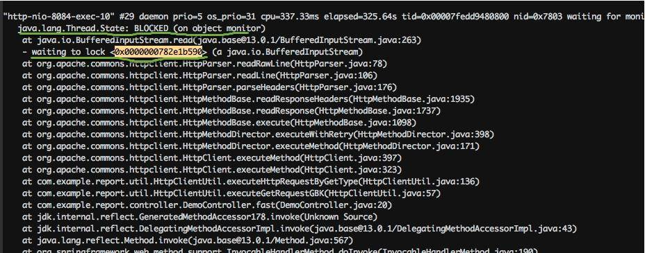
cat 10271.tdump| grep "waiting to lock " | awk '{print $5}' | sort | uniq -c | sort -k1 -r
26 <0x0000000782e1b590>
18 <0x0000000787b00448>
16 <0x0000000787b38128>
10 <0x0000000787b14558>
8 <0x0000000787b25060>
4 <0x0000000787b2da18>
4 <0x0000000787b00020>
2 <0x0000000787b6e8e8>
2 <0x0000000787b03328>
2 <0x0000000782e8a660>
1 <0x0000000787b6ab18>
1 <0x0000000787b2ae00>
1 <0x0000000787b0d6c0>
1 <0x0000000787b073b8>
1 <0x0000000782fbcdf8>
1 <0x0000000782e11200>
1 <0x0000000782dfdae0>
我们找到给 0x0000000782e1b590 上锁的执行栈，可以发现全部卡在了 HttpClient 的读操作上。在实际场景中，可以看下排行比较靠前的几个锁地址，找一下共性。
返回头去再看一下代码。我们发现 HttpClient 是共用了一个连接池，当连接数超过 100 的时候，就会阻塞等待。它的连接超时时间是 10 秒，这和 slow 接口的耗时不相上下。
private final static HttpConnectionManager httpConnectionManager = new SimpleHttpConnectionManager(true);
static {
HttpConnectionManagerParams params = new HttpConnectionManagerParams();
params.setMaxTotalConnections(100);
params.setConnectionTimeout(1000 * 10);
params.setSoTimeout(defaultTimeout);
httpConnectionManager.setParams(params);
slow 接口和 fast 接口同时在争抢这些连接，让它时刻处在饱满的状态，进而让 tomcat 的线程等待、占满，造成服务不可用。
问题找到了，解决方式就简单多了。我们希望 slow 接口在阻塞的时候，并不影响 fast 接口的运行。这就可以对某一类接口进行限流，或者对不重要的接口进行熔断处理，这里不再深入讲解（具体可参考 Spring Boot 的限流熔断处理）。
现实情况是，对于一个运行的系统，我们并不知道是 slow 接口慢还是 fast 接口慢，这就需要加入一些额外的日志信息进行排查。当然，如果有一个监控系统能够看到这些数据是再好不过了。
项目中的 HttpClientUtil2 文件，是改造后的一个版本。除了调大了连接数，它还使用了多线程版本的连接管理器（MultiThreadedHttpConnectionManager），这个管理器根据请求的 host 进行划分，每个 host 的最大连接数不超过 20。还提供了 getConnectionsInPool 函数，用于查看当前连接池的统计信息。采用这些辅助的手段，可以快速找到问题服务，这是典型的情况。由于其他应用的服务水平低而引起的连锁反应，一般的做法是熔断、限流等，在此不多做介绍了。
jstack 产生的信息
为了观测一些状态，我上传了几个 Java 类，你可以实际运行一下，然后使用 jstack 来看一下它的状态。
waiting on condition
示例参见 SleepDemo.java。
public class SleepDemo {
public static void main(String[] args) {
new Thread(()->{
try {
Thread.sleep(Integer.MAX_VALUE);
} catch (InterruptedException e) {
e.printStackTrace();
}
},"sleep-demo").start();
}
}
这个状态出现在线程等待某个条件的发生，来把自己唤醒，或者调用了 sleep 函数，常见的情况就是等待网络读写，或者等待数据 I/O。如果发现大多数线程都处于这种状态，证明后面的资源遇到了瓶颈。
此时线程状态大致分为以下两种：
- java.lang.Thread.State: WAITING (parking)：一直等待条件发生；
- java.lang.Thread.State: TIMED_WAITING (parking 或 sleeping)：定时的，即使条件不触发，也将定时唤醒。
"sleep-demo" #12 prio=5 os_prio=31 cpu=0.23ms elapsed=87.49s tid=0x00007fc7a7965000 nid=0x6003 waiting on condition [0x000070000756d000]
java.lang.Thread.State: TIMED_WAITING (sleeping)
at java.lang.Thread.sleep(java.base@13.0.1/Native Method)
at SleepDemo.lambda$main$0(SleepDemo.java:5)
at SleepDemo$$Lambda$16/0x0000000800b45040.run(Unknown Source)
at java.lang.Thread.run(java.base@13.0.1/Thread.java:830)
值的注意的是，Java 中的可重入锁，也会让线程进入这种状态，但通常带有 parking 字样，parking 指线程处于挂起中，要注意区别。代码可参见 LockDemo.java：
import java.util.concurrent.locks.Lock;
import java.util.concurrent.locks.ReentrantLock;
public class LockDemo {
public static void main(String[] args) {
Lock lock = new ReentrantLock();
lock.lock();
new Thread(() -> {
try {
lock.lock();
} finally {
lock.unlock();
}
}, "lock-demo").start();
}
堆栈代码如下：
"lock-demo" #12 prio=5 os_prio=31 cpu=0.78ms elapsed=14.62s tid=0x00007ffc0b949000 nid=0x9f03 waiting on condition [0x0000700005826000]
java.lang.Thread.State: WAITING (parking)
at jdk.internal.misc.Unsafe.park(java.base@13.0.1/Native Method)
- parking to wait for <0x0000000787cf0dd8> (a java.util.concurrent.locks.ReentrantLock$NonfairSync)
at java.util.concurrent.locks.LockSupport.park(java.base@13.0.1/LockSupport.java:194)
at java.util.concurrent.locks.AbstractQueuedSynchronizer.parkAndCheckInterrupt(java.base@13.0.1/AbstractQueuedSynchronizer.java:885)
at java.util.concurrent.locks.AbstractQueuedSynchronizer.acquireQueued(java.base@13.0.1/AbstractQueuedSynchronizer.java:917)
at java.util.concurrent.locks.AbstractQueuedSynchronizer.acquire(java.base@13.0.1/AbstractQueuedSynchronizer.java:1240)
at java.util.concurrent.locks.ReentrantLock.lock(java.base@13.0.1/ReentrantLock.java:267)
at LockDemo.lambda$main$0(LockDemo.java:11)
at LockDemo$$Lambda$14/0x0000000800b44840.run(Unknown Source)
at java.lang.Thread.run(java.base@13.0.1/Thread.java:830)
waiting for monitor entry
我们上面提到的 HttpClient 例子，就是大部分处于这种状态，线程都是 BLOCKED 的。这意味着它们都在等待进入一个临界区，需要重点关注。
"http-nio-8084-exec-120" #143 daemon prio=5 os_prio=31 cpu=122.86ms elapsed=317.88s tid=0x00007fedd8381000 nid=0x1af03 waiting for monitor entry [0x00007000150e1000]
java.lang.Thread.State: BLOCKED (on object monitor)
at java.io.BufferedInputStream.read(java.base@13.0.1/BufferedInputStream.java:263)
- waiting to lock <0x0000000782e1b590> (a java.io.BufferedInputStream)
at org.apache.commons.httpclient.HttpParser.readRawLine(HttpParser.java:78)
at org.apache.commons.httpclient.HttpParser.readLine(HttpParser.java:106)
at org.apache.commons.httpclient.HttpConnection.readLine(HttpConnection.java:1116)
at org.apache.commons.httpclient.HttpMethodBase.readStatusLine(HttpMethodBase.java:1973)
at org.apache.commons.httpclient.HttpMethodBase.readResponse(HttpMethodBase.java:1735)
in Object.wait()
示例代码参见 WaitDemo.java：
public class WaitDemo {
public static void main(String[] args) throws Exception {
Object o = new Object();
new Thread(() -> {
try {
synchronized (o) {
o.wait();
}
} catch (InterruptedException e) {
e.printStackTrace();
}
}, "wait-demo").start();
Thread.sleep(1000);
synchronized (o) {
o.wait();
}
}
说明在获得了监视器之后，又调用了 java.lang.Object.wait() 方法。
关于这部分的原理，可以参见一张经典的图。每个监视器（Monitor）在某个时刻，只能被一个线程拥有，该线程就是“Active Thread”，而其他线程都是“Waiting Thread”，分别在两个队列“Entry Set”和“Wait Set”里面等候。在“Entry Set”中等待的线程状态是“Waiting for monitor entry”，而在“Wait Set”中等待的线程状态是“in Object.wait()”。
"wait-demo" #12 prio=5 os_prio=31 cpu=0.14ms elapsed=12.58s tid=0x00007fb66609e000 nid=0x6103 in Object.wait() [0x000070000f2bd000]
java.lang.Thread.State: WAITING (on object monitor)
at java.lang.Object.wait(java.base@13.0.1/Native Method)
- waiting on <0x0000000787b48300> (a java.lang.Object)
at java.lang.Object.wait(java.base@13.0.1/Object.java:326)
at WaitDemo.lambda$main$0(WaitDemo.java:7)
- locked <0x0000000787b48300> (a java.lang.Object)
at WaitDemo$$Lambda$14/0x0000000800b44840.run(Unknown Source)
at java.lang.Thread.run(java.base@13.0.1/Thread.java:830)
死锁
代码参见 DeadLock.java：
public class DeadLockDemo {
public static void main(String[] args) {
Object object1 = new Object();
Object object2 = new Object();
Thread t1 = new Thread(() -> {
synchronized (object1) {
try {
Thread.sleep(200);
} catch (InterruptedException e) {
e.printStackTrace();
}
synchronized (object2) {
}
}
}, "deadlock-demo-1");
t1.start();
Thread t2 = new Thread(() -> {
synchronized (object2) {
synchronized (object1) {
}
}
}, "deadlock-demo-2");
t2.start();
}
}
死锁属于比较严重的一种情况，jstack 会以明显的信息进行提示。
Found one Java-level deadlock:
=============================
"deadlock-demo-1":
waiting to lock monitor 0x00007fe5e406f500 (object 0x0000000787cecd78, a java.lang.Object),
which is held by "deadlock-demo-2"
"deadlock-demo-2":
waiting to lock monitor 0x00007fe5e406d500 (object 0x0000000787cecd68, a java.lang.Object),
which is held by "deadlock-demo-1"
Java stack information for the threads listed above:
===================================================
"deadlock-demo-1":
at DeadLockDemo.lambda$main$0(DeadLockDemo.java:13)
- waiting to lock <0x0000000787cecd78> (a java.lang.Object)
- locked <0x0000000787cecd68> (a java.lang.Object)
at DeadLockDemo$$Lambda$14/0x0000000800b44c40.run(Unknown Source)
at java.lang.Thread.run(java.base@13.0.1/Thread.java:830)
"deadlock-demo-2":
at DeadLockDemo.lambda$main$1(DeadLockDemo.java:21)
- waiting to lock <0x0000000787cecd68> (a java.lang.Object)
- locked <0x0000000787cecd78> (a java.lang.Object)
at DeadLockDemo$$Lambda$16/0x0000000800b45040.run(Unknown Source)
at java.lang.Thread.run(java.base@13.0.1/Thread.java:830)
Found 1 deadlock
当然，关于线程的 dump，也有一些线上分析工具可以使用。下图是 fastthread 的一个分析结果，但也需要你先了解这些情况发生的意义。
![本课时我们主要分析一个案例，那就是分库分表后，我的应用崩溃了。
前面介绍了一种由于数据库查询语句拼接问题，而引起的一类内存溢出。下面将详细介绍一下这个过程。
假设我们有一个用户表，想要通过用户名来查询某个用户，一句简单的 SQL 语句即可：
select * from user where fullname = "xxx" and other="other";
为了达到动态拼接的效果，这句 SQL 语句被一位同事进行了如下修改。他的本意是，当 fullname 或者 other 传入为空的时候，动态去掉这些查询条件。这种写法，在 MyBaits 的配置文件中，也非常常见。
List<User> query(String fullname, String other) {
StringBuilder sb = new StringBuilder("select * from user where 1=1 ");
if (!StringUtils.isEmpty(fullname)) {
sb.append(" and fullname=");
sb.append(" \"" + fullname + "\"");
}
if (!StringUtils.isEmpty(other)) {
sb.append(" and other=");
sb.append(" \"" + other + "\"");
}
String sql = sb.toString();
...
}
大多数情况下，这种写法是没有问题的，因为结果集合是可以控制的。但随着系统的运行，用户表的记录越来越多，当传入的 fullname 和 other 全部为空时，悲剧的事情发生了，SQL 被拼接成了如下的语句：
select * from user where 1=1
数据库中的所有记录，都会被查询出来，载入到 JVM 的内存中。由于数据库记录实在太多，直接把内存给撑爆了。
在工作中，由于这种原因引起的内存溢出，发生的频率非常高。通常的解决方式是强行加入分页功能，或者对一些必填的参数进行校验，但不总是有效。因为上面的示例仅展示了一个非常简单的 SQL 语句，而在实际工作中，这个 SQL 语句会非常长，每个条件对结果集的影响也会非常大，在进行数据筛选的时候，一定要小心。
内存使用问题

拿一个最简单的 Spring Boot 应用来说，请求会通过 Controller 层来接收数据，然后 Service 层会进行一些逻辑的封装，数据通过 Dao 层的 ORM 比如 JPA 或者 MyBatis 等，来调用底层的 JDBC 接口进行实际的数据获取。通常情况下，JVM 对这种数据获取方式，表现都是非常温和的。我们挨个看一下每一层可能出现的一些不正常的内存使用问题（仅限 JVM 相关问题），以便对平常工作中的性能分析和性能优化有一个整体的思路。
首先，我们提到一种可能，那就是类似于 Fastjson 工具所产生的 bug，这类问题只能通过升级依赖的包来解决，属于一种极端案例。具体可参考这里
Controller 层
Controller 层用于接收前端查询参数，然后构造查询结果。现在很多项目都采用前后端分离架构，所以 Controller 层的方法，一般使用 @ResponseBody 注解，把查询的结果，解析成 JSON 数据返回。
这在数据集非常大的情况下，会占用很多内存资源。假如结果集在解析成 JSON 之前，占用的内存是 10MB，那么在解析过程中，有可能会使用 20M 或者更多的内存去做这个工作。如果结果集有非常深的嵌套层次，或者引用了另外一个占用内存很大，且对于本次请求无意义的对象（比如非常大的 byte[] 对象），那这些序列化工具会让问题变得更加严重。
因此，对于一般的服务，保持结果集的精简，是非常有必要的，这也是 DTO（Data Transfer Object）存在的必要。如果你的项目，返回的结果结构比较复杂，对结果集进行一次转换是非常有必要的。互联网环境不怕小结果集的高并发请求，却非常恐惧大结果集的耗时请求，这是其中一方面的原因。
Service 层
Service 层用于处理具体的业务，更加贴合业务的功能需求。一个 Service，可能会被多个 Controller 层所使用，也可能会使用多个 dao 结构的查询结果进行计算、拼装。
Service 的问题主要是对底层资源的不合理使用。举个例子，有一回在一次代码 review 中，发现了下面让人无语的逻辑：
//错误代码示例
int getUserSize() {
List<User> users = dao.getAllUser();
return null == users ? 0 : users.size();
}
这种代码，其实在一些现存的项目里大量存在，只不过由于项目规模和工期的原因，被隐藏了起来，成为内存问题的定时炸弹。
Service 层的另外一个问题就是，职责不清、代码混乱，以至于在发生故障的时候，让人无从下手。这种情况就更加常见了，比如使用了 Map 作为函数的入参，或者把多个接口的请求返回放在一个 Java 类中。
//错误代码示例
Object exec(Map<String,Object> params){
String q = getString(params,"q");
if(q.equals("insertToa")){
String q1 = getString(params,"q1");
String q2 = getString(params,"q2");
//do A
}else if(q.equals("getResources")){
String q3 = getString(params,"q3");
//do B
}
...
return null;
}
这种代码使用了万能参数和万能返回值，exec 函数会被几十个上百个接口调用，进行逻辑的分发。这种将逻辑揉在一起的代码块，当发生问题时，即使使用了 Jstack，也无法发现具体的调用关系，在平常的开发中，应该严格禁止。
ORM 层
ORM 层可能是发生内存问题最多的地方，除了本课时开始提到的 SQL 拼接问题，大多数是由于对这些 ORM 工具使用不当而引起的。
举个例子，在 JPA 中，如果加了一对多或者多对多的映射关系，而又没有开启懒加载、级联查询的时候就容易造成深层次的检索，内存的开销就超出了我们的期望，造成过度使用。
另外，JPA 可以通过使用缓存来减少 SQL 的查询，它默认开启了一级缓存，也就是 EntityManager 层的缓存（会话或事务缓存），如果你的事务非常的大，它会缓存很多不需要的数据；JPA 还可以通过一定的配置来完成二级缓存，也就是全局缓存，造成更多的内存占用。
一般，项目中用到缓存的地方，要特别小心。除了容易造成数据不一致之外，对堆内内存的使用也要格外关注。如果使用量过多，很容易造成频繁 GC，甚至内存溢出。
JPA 比起 MyBatis 等 ORM 拥有更多的特性，看起来容易使用，但精通门槛却比较高。
这并不代表 MyBatis 就没有内存问题，在这些 ORM 框架之中，存在着非常多的类型转换、数据拷贝。
举个例子，有一个批量导入服务，在 MyBatis 执行批量插入的时候，竟然产生了内存溢出，按道理这种插入操作是不会引起额外内存占用的，最后通过源码追踪到了问题。
这是因为 MyBatis 循环处理 batch 的时候，操作对象是数组，而我们在接口定义的时候，使用的是 List；当传入一个非常大的 List 时，它需要调用 List 的 toArray 方法将列表转换成数组（浅拷贝）；在最后的拼装阶段，使用了 StringBuilder 来拼接最终的 SQL，所以实际使用的内存要比 List 多很多。
事实证明，不论是插入操作还是查询动作，只要涉及的数据集非常大，就容易出现问题。由于项目中众多框架的引入，想要分析这些具体的内存占用，就变得非常困难。保持小批量操作和结果集的干净，是一个非常好的习惯。
分库分表内存溢出
分库分表组件
如果数据库的记录非常多，达到千万或者亿级别，对于一个传统的 RDBMS 来说，最通用的解决方式就是分库分表。这也是海量数据的互联网公司必须面临的一个问题。

根据切入的层次，数据库中间件一般分为编码层、框架层、驱动层、代理层、实现层 5 大类。典型的框架有驱动层的 sharding-jdbc 和代理层的 MyCat。
MyCat 是一个独立部署的 Java 服务，它模拟了一个 MySQL 进行请求的处理，对于应用来说使用是透明的。而 sharding-jdbc 实际上是一个数据库驱动，或者说是一个 DataSource，它是作为 jar 包直接嵌入在客户端应用的，所以它的行为会直接影响到主应用。
这里所要说的分库分表组件，就是 sharding-jdbc。不管是普通 Spring 环境，还是 Spring Boot 环境，经过一系列配置之后，我们都可以像下面这种方式来使用 sharding-jdbc，应用层并不知晓底层实现的细节：
@Autowired
private DataSource dataSource;
我们有一个线上订单应用，由于数据量过多的原因，进行了分库分表。但是在某些条件下，却经常发生内存溢出。
分库分表的内存溢出
一个最典型的内存溢出场景，就是在订单查询中使用了深分页，并且在查询的时候没有使用“切分键”。使用前面介绍的一些工具，比如 MAT、Jstack，最终追踪到是由于 sharding-jdbc 内部实现所引起的。
这个过程也是比较好理解的，如图所示，订单数据被存放在两个库中。如果没有提供切分键，查询语句就会被分发到所有的数据库中，这里的查询语句是 limit 10、offset 1000，最终结果只需要返回 10 条记录，但是数据库中间件要完成这种计算，则需要 (1000+10)*2=2020 条记录来完成这个计算过程。如果 offset 的值过大，使用的内存就会暴涨。虽然 sharding-jdbc 使用归并算法进行了一些优化，但在实际场景中，深分页仍然引起了内存和性能问题。

下面这一句简单的 SQL 语句，会产生严重的后果：
select * from order order by updateTime desc limit 10 offset 10000
这种在中间节点进行归并聚合的操作，在分布式框架中非常常见。比如在 ElasticSearch 中，就存在相似的数据获取逻辑，不加限制的深分页，同样会造成 ES 的内存问题。
另外一种情况，就是我们在进行一些复杂查询的时候，发现分页失效了，每次都是取出全部的数据。最后根据 Jstack，定位到具体的执行逻辑，发现分页被重写了。
private void appendLimitRowCount(final SQLBuilder sqlBuilder, final RowCountToken rowCountToken, final int count, final List<SQLToken> sqlTokens, final boolean isRewrite) {
SelectStatement selectStatement = (SelectStatement) sqlStatement;
Limit limit = selectStatement.getLimit();
if (!isRewrite) {
sqlBuilder.appendLiterals(String.valueOf(rowCountToken.getRowCount()));
} else if ((!selectStatement.getGroupByItems().isEmpty() || !selectStatement.getAggregationSelectItems().isEmpty()) && !selectStatement.isSameGroupByAndOrderByItems()) {
sqlBuilder.appendLiterals(String.valueOf(Integer.MAX_VALUE));
} else {
sqlBuilder.appendLiterals(String.valueOf(limit.isNeedRewriteRowCount() ? rowCountToken.getRowCount() + limit.getOffsetValue() : rowCountToken.getRowCount()));
}
int beginPosition = rowCountToken.getBeginPosition() + String.valueOf(rowCountToken.getRowCount()).length();
appendRest(sqlBuilder, count, sqlTokens, beginPosition);
}
如上代码，在进入一些复杂的条件判断时（参照 SQLRewriteEngine.java），分页被重置为 Integer.MAX_VALUE。
总结
本课时以 Spring Boot 项目常见的分层结构，介绍了每一层可能会引起的内存问题，我们把结论归结为一点，那就是保持输入集或者结果集的简洁。一次性获取非常多的数据，会让中间过程变得非常不可控。最后，我们分析了一个驱动层的数据库中间件，以及对内存使用的一些问题。
很多程序员把这些耗时又耗内存的操作，写了非常复杂的 SQL 语句，然后扔给最底层的数据库去解决，这种情况大多数认为换汤不换药，不过是把具体的问题冲突，转移到另一个场景而已。img](assets/Cgq2xl5YswOALstRAAKRsvw-7ZU685.jpg)
小结
本课时主要介绍了一个处处有问题的报表系统，并逐步解决了它的 OOM 问题，同时定位到了拒绝服务的原因。
在研发资源不足的时候，我们简单粗暴的进行了硬件升级，并切换到了更加优秀的 G1 垃圾回收器，还通过代码手段进行了问题的根本解决：
- 缩减查询的字段，减少常驻内存的数据；
- 去掉不必要的、命中率低的堆内缓存，改为分布式缓存；
- 从产品层面限制了单次请求对内存的无限制使用。
在这个过程中，使用 MAT 分析堆数据进行问题代码定位，帮了大忙。代码优化的手段是最有效的，改造完毕后，可以节省更多的硬件资源。事实上，使用了 G1 垃圾回收器之后，那些乱七八糟的调优参数越来越少用了。
接下来，我们使用 jstack 分析了一个出现频率非常非常高的问题，主要是不同速度的接口在同一应用中的资源竞争问题，我们发现一些成熟的微服务框架，都会对这些资源进行限制和隔离。
最后，以 4 个简单的示例，展示了 jstack 输出内容的一些意义。代码都在 git 仓库里，你可以实际操作一下，希望对你有所帮助。
17 案例分析：分库分表后，我的应用崩溃了
本课时我们主要分析一个案例，那就是分库分表后，我的应用崩溃了。
前面介绍了一种由于数据库查询语句拼接问题，而引起的一类内存溢出。下面将详细介绍一下这个过程。
假设我们有一个用户表，想要通过用户名来查询某个用户，一句简单的 SQL 语句即可：
select * from user where fullname = "xxx" and other="other";
为了达到动态拼接的效果，这句 SQL 语句被一位同事进行了如下修改。他的本意是，当 fullname 或者 other 传入为空的时候，动态去掉这些查询条件。这种写法，在 MyBaits 的配置文件中，也非常常见。
List<User> query(String fullname, String other) {
StringBuilder sb = new StringBuilder("select * from user where 1=1 ");
if (!StringUtils.isEmpty(fullname)) {
sb.append(" and fullname=");
sb.append(" \"" + fullname + "\"");
}
if (!StringUtils.isEmpty(other)) {
sb.append(" and other=");
sb.append(" \"" + other + "\"");
}
String sql = sb.toString();
...
}
大多数情况下，这种写法是没有问题的，因为结果集合是可以控制的。但随着系统的运行，用户表的记录越来越多，当传入的 fullname 和 other 全部为空时，悲剧的事情发生了，SQL 被拼接成了如下的语句：
select * from user where 1=1
数据库中的所有记录，都会被查询出来，载入到 JVM 的内存中。由于数据库记录实在太多，直接把内存给撑爆了。
在工作中，由于这种原因引起的内存溢出，发生的频率非常高。通常的解决方式是强行加入分页功能，或者对一些必填的参数进行校验，但不总是有效。因为上面的示例仅展示了一个非常简单的 SQL 语句，而在实际工作中，这个 SQL 语句会非常长，每个条件对结果集的影响也会非常大，在进行数据筛选的时候，一定要小心。
内存使用问题
拿一个最简单的 Spring Boot 应用来说，请求会通过 Controller 层来接收数据，然后 Service 层会进行一些逻辑的封装，数据通过 Dao 层的 ORM 比如 JPA 或者 MyBatis 等，来调用底层的 JDBC 接口进行实际的数据获取。通常情况下，JVM 对这种数据获取方式，表现都是非常温和的。我们挨个看一下每一层可能出现的一些不正常的内存使用问题（仅限 JVM 相关问题），以便对平常工作中的性能分析和性能优化有一个整体的思路。
首先，我们提到一种可能，那就是类似于 Fastjson 工具所产生的 bug，这类问题只能通过升级依赖的包来解决，属于一种极端案例。具体可参考这里
Controller 层
Controller 层用于接收前端查询参数，然后构造查询结果。现在很多项目都采用前后端分离架构，所以 Controller 层的方法，一般使用 @ResponseBody 注解，把查询的结果，解析成 JSON 数据返回。
这在数据集非常大的情况下，会占用很多内存资源。假如结果集在解析成 JSON 之前，占用的内存是 10MB，那么在解析过程中，有可能会使用 20M 或者更多的内存去做这个工作。如果结果集有非常深的嵌套层次，或者引用了另外一个占用内存很大，且对于本次请求无意义的对象（比如非常大的 byte[] 对象），那这些序列化工具会让问题变得更加严重。
因此，对于一般的服务，保持结果集的精简，是非常有必要的，这也是 DTO（Data Transfer Object）存在的必要。如果你的项目，返回的结果结构比较复杂，对结果集进行一次转换是非常有必要的。互联网环境不怕小结果集的高并发请求，却非常恐惧大结果集的耗时请求，这是其中一方面的原因。
Service 层
Service 层用于处理具体的业务，更加贴合业务的功能需求。一个 Service，可能会被多个 Controller 层所使用，也可能会使用多个 dao 结构的查询结果进行计算、拼装。
Service 的问题主要是对底层资源的不合理使用。举个例子，有一回在一次代码 review 中，发现了下面让人无语的逻辑：
//错误代码示例
int getUserSize() {
List<User> users = dao.getAllUser();
return null == users ? 0 : users.size();
}
这种代码，其实在一些现存的项目里大量存在，只不过由于项目规模和工期的原因，被隐藏了起来，成为内存问题的定时炸弹。
Service 层的另外一个问题就是，职责不清、代码混乱，以至于在发生故障的时候，让人无从下手。这种情况就更加常见了，比如使用了 Map 作为函数的入参，或者把多个接口的请求返回放在一个 Java 类中。
//错误代码示例
Object exec(Map<String,Object> params){
String q = getString(params,"q");
if(q.equals("insertToa")){
String q1 = getString(params,"q1");
String q2 = getString(params,"q2");
//do A
}else if(q.equals("getResources")){
String q3 = getString(params,"q3");
//do B
}
...
return null;
}
这种代码使用了万能参数和万能返回值，exec 函数会被几十个上百个接口调用，进行逻辑的分发。这种将逻辑揉在一起的代码块，当发生问题时，即使使用了 Jstack，也无法发现具体的调用关系，在平常的开发中，应该严格禁止。
ORM 层
ORM 层可能是发生内存问题最多的地方，除了本课时开始提到的 SQL 拼接问题，大多数是由于对这些 ORM 工具使用不当而引起的。
举个例子，在 JPA 中，如果加了一对多或者多对多的映射关系，而又没有开启懒加载、级联查询的时候就容易造成深层次的检索，内存的开销就超出了我们的期望，造成过度使用。
另外，JPA 可以通过使用缓存来减少 SQL 的查询，它默认开启了一级缓存，也就是 EntityManager 层的缓存（会话或事务缓存），如果你的事务非常的大，它会缓存很多不需要的数据；JPA 还可以通过一定的配置来完成二级缓存，也就是全局缓存，造成更多的内存占用。
一般，项目中用到缓存的地方，要特别小心。除了容易造成数据不一致之外，对堆内内存的使用也要格外关注。如果使用量过多，很容易造成频繁 GC，甚至内存溢出。
JPA 比起 MyBatis 等 ORM 拥有更多的特性，看起来容易使用，但精通门槛却比较高。
这并不代表 MyBatis 就没有内存问题，在这些 ORM 框架之中，存在着非常多的类型转换、数据拷贝。
举个例子，有一个批量导入服务，在 MyBatis 执行批量插入的时候，竟然产生了内存溢出，按道理这种插入操作是不会引起额外内存占用的，最后通过源码追踪到了问题。
这是因为 MyBatis 循环处理 batch 的时候，操作对象是数组，而我们在接口定义的时候，使用的是 List；当传入一个非常大的 List 时，它需要调用 List 的 toArray 方法将列表转换成数组（浅拷贝）；在最后的拼装阶段，使用了 StringBuilder 来拼接最终的 SQL，所以实际使用的内存要比 List 多很多。
事实证明，不论是插入操作还是查询动作，只要涉及的数据集非常大，就容易出现问题。由于项目中众多框架的引入，想要分析这些具体的内存占用，就变得非常困难。保持小批量操作和结果集的干净，是一个非常好的习惯。
分库分表内存溢出
分库分表组件
如果数据库的记录非常多，达到千万或者亿级别，对于一个传统的 RDBMS 来说，最通用的解决方式就是分库分表。这也是海量数据的互联网公司必须面临的一个问题。
根据切入的层次，数据库中间件一般分为编码层、框架层、驱动层、代理层、实现层 5 大类。典型的框架有驱动层的 sharding-jdbc 和代理层的 MyCat。
MyCat 是一个独立部署的 Java 服务，它模拟了一个 MySQL 进行请求的处理，对于应用来说使用是透明的。而 sharding-jdbc 实际上是一个数据库驱动，或者说是一个 DataSource，它是作为 jar 包直接嵌入在客户端应用的，所以它的行为会直接影响到主应用。
这里所要说的分库分表组件，就是 sharding-jdbc。不管是普通 Spring 环境，还是 Spring Boot 环境，经过一系列配置之后，我们都可以像下面这种方式来使用 sharding-jdbc，应用层并不知晓底层实现的细节：
@Autowired
private DataSource dataSource;
我们有一个线上订单应用，由于数据量过多的原因，进行了分库分表。但是在某些条件下，却经常发生内存溢出。
分库分表的内存溢出
一个最典型的内存溢出场景，就是在订单查询中使用了深分页，并且在查询的时候没有使用“切分键”。使用前面介绍的一些工具，比如 MAT、Jstack，最终追踪到是由于 sharding-jdbc 内部实现所引起的。
这个过程也是比较好理解的，如图所示，订单数据被存放在两个库中。如果没有提供切分键，查询语句就会被分发到所有的数据库中，这里的查询语句是 limit 10、offset 1000，最终结果只需要返回 10 条记录，但是数据库中间件要完成这种计算，则需要 (1000+10)*2=2020 条记录来完成这个计算过程。如果 offset 的值过大，使用的内存就会暴涨。虽然 sharding-jdbc 使用归并算法进行了一些优化，但在实际场景中，深分页仍然引起了内存和性能问题。
下面这一句简单的 SQL 语句，会产生严重的后果：
select * from order order by updateTime desc limit 10 offset 10000
这种在中间节点进行归并聚合的操作，在分布式框架中非常常见。比如在 ElasticSearch 中，就存在相似的数据获取逻辑，不加限制的深分页，同样会造成 ES 的内存问题。
另外一种情况，就是我们在进行一些复杂查询的时候，发现分页失效了，每次都是取出全部的数据。最后根据 Jstack，定位到具体的执行逻辑，发现分页被重写了。
private void appendLimitRowCount(final SQLBuilder sqlBuilder, final RowCountToken rowCountToken, final int count, final List<SQLToken> sqlTokens, final boolean isRewrite) {
SelectStatement selectStatement = (SelectStatement) sqlStatement;
Limit limit = selectStatement.getLimit();
if (!isRewrite) {
sqlBuilder.appendLiterals(String.valueOf(rowCountToken.getRowCount()));
} else if ((!selectStatement.getGroupByItems().isEmpty() || !selectStatement.getAggregationSelectItems().isEmpty()) && !selectStatement.isSameGroupByAndOrderByItems()) {
sqlBuilder.appendLiterals(String.valueOf(Integer.MAX_VALUE));
} else {
sqlBuilder.appendLiterals(String.valueOf(limit.isNeedRewriteRowCount() ? rowCountToken.getRowCount() + limit.getOffsetValue() : rowCountToken.getRowCount()));
}
int beginPosition = rowCountToken.getBeginPosition() + String.valueOf(rowCountToken.getRowCount()).length();
appendRest(sqlBuilder, count, sqlTokens, beginPosition);
}
如上代码，在进入一些复杂的条件判断时（参照 SQLRewriteEngine.java），分页被重置为 Integer.MAX_VALUE。
总结
本课时以 Spring Boot 项目常见的分层结构，介绍了每一层可能会引起的内存问题，我们把结论归结为一点，那就是保持输入集或者结果集的简洁。一次性获取非常多的数据，会让中间过程变得非常不可控。最后，我们分析了一个驱动层的数据库中间件，以及对内存使用的一些问题。
很多程序员把这些耗时又耗内存的操作，写了非常复杂的 SQL 语句，然后扔给最底层的数据库去解决，这种情况大多数认为换汤不换药，不过是把具体的问题冲突，转移到另一个场景而已。
18 动手实践：从字节码看方法调用的底层实现
本课时我们主要分析从字节码看方法调用的底层实现。
字节码结构
基本结构
在开始之前，我们先简要地介绍一下 class 文件的内容，这个结构和我们前面使用的 jclasslib 是一样的。关于 class 文件结构的资料已经非常多了（点击这里可查看官网详细介绍），这里不再展开讲解了，大体介绍如下。

**magic：**魔数，用于标识当前 class 的文件格式，JVM 可据此判断该文件是否可以被解析，目前固定为 0xCAFEBABE。
**major_version：**主版本号。
**minor_version：**副版本号，这两个版本号用来标识编译时的 JDK 版本，常见的一个异常比如 Unsupported major.minor version 52.0 就是因为运行时的 JDK 版本低于编译时的 JDK 版本（52 是 Java 8 的主版本号）。
constant_pool_count：常量池计数器，等于常量池中的成员数加 1。
constant_pool：常量池，是一种表结构，包含 class 文件结构和子结构中引用的所有字符串常量，类或者接口名，字段名和其他常量。
access_flags：表示某个类或者接口的访问权限和属性。
this_class：类索引，该值必须是对常量池中某个常量的一个有效索引值，该索引处的成员必须是一个 CONSTANT_Class_info 类型的结构体，表示这个 class 文件所定义的类和接口。
super_class：父类索引。
interfaces_count：接口计数器，表示当前类或者接口直接继承接口的数量。
interfaces：接口表，是一个表结构，成员同 this_class，是对常量池中 CONSTANT_Class_info 类型的一个有效索引值。
fields_count：字段计数器，当前 class 文件所有字段的数量。
fields：字段表，是一个表结构，表中每个成员必须是 filed_info 数据结构，用于表示当前类或者接口的某个字段的完整描述，但它不包含从父类或者父接口继承的字段。
methods_count：方法计数器，表示当前类方法表的成员个数。
methods：方法表，是一个表结构，表中每个成员必须是 method_info 数据结构，用于表示当前类或者接口的某个方法的完整描述。
attributes_count：属性计数器，表示当前 class 文件 attributes 属性表的成员个数。
attributes：属性表，是一个表结构，表中每个成员必须是 attribute_info 数据结构，这里的属性是对 class 文件本身，方法或者字段的补充描述，比如 SourceFile 属性用于表示 class 文件的源代码文件名。

当然，class 文件结构的细节是非常多的，如上图，展示了一个简单方法的字节码描述，可以看到真正的执行指令在整个文件结构中的位置。
实际观测
为了避免枯燥的二进制对比分析，直接定位到真正的数据结构，这里介绍一个小工具，使用这种方式学习字节码会节省很多时间。这个工具就是 asmtools，为了方便使用，我已经编译了一个 jar 包，放在了仓库里。
执行下面的命令，将看到类的 JCOD 语法结果。
java -jar asmtools-7.0.jar jdec LambdaDemo.class
输出的结果类似于下面的结构，它与我们上面介绍的字节码组成是一一对应的，对照官网或者资料去学习，速度飞快。若想要细挖字节码，一定要掌握好它。
class LambdaDemo {
0xCAFEBABE;
0; // minor version
52; // version
[] { // Constant Pool
; // first element is empty
Method #8 #25; // #1
InvokeDynamic 0s #30; // #2
InterfaceMethod #31 #32; // #3
Field #33 #34; // #4
String #35; // #5
Method #36 #37; // #6
class #38; // #7
class #39; // #8
Utf8 "<init>"; // #9
Utf8 "()V"; // #10
Utf8 "Code"; // #11
了解了类的文件组织方式，下面我们来看一下，类文件在加载到内存中以后，是一个怎样的表现形式。
内存表示
准备以下代码，使用 javac -g InvokeDemo.java 进行编译，然后使用 java 命令执行。程序将阻塞在 sleep 函数上，我们来看一下它的内存分布：
interface I {
default void infMethod() { }
void inf();
}
abstract class Abs {
abstract void abs();
}
public class InvokeDemo extends Abs implements I {
static void staticMethod() { }
private void privateMethod() { }
public void publicMethod() { }
@Override
public void inf() { }
@Override
void abs() { }
public static void main(String[] args) throws Exception{
InvokeDemo demo = new InvokeDemo();
InvokeDemo.staticMethod();
demo.abs();
((Abs) demo).abs();
demo.inf();
((I) demo).inf();
demo.privateMethod();
demo.publicMethod();
demo.infMethod();
((I) demo).infMethod();
Thread.sleep(Integer.MAX_VAL
为了更加明显的看到这个过程，下面介绍一个 jhsdb 工具，这是在 Java 9 之后 JDK 先加入的调试工具，我们可以在命令行中使用 jhsdb hsdb 来启动它。注意，要加载相应的进程时，必须确保是同一个版本的应用进程，否则会产生报错。
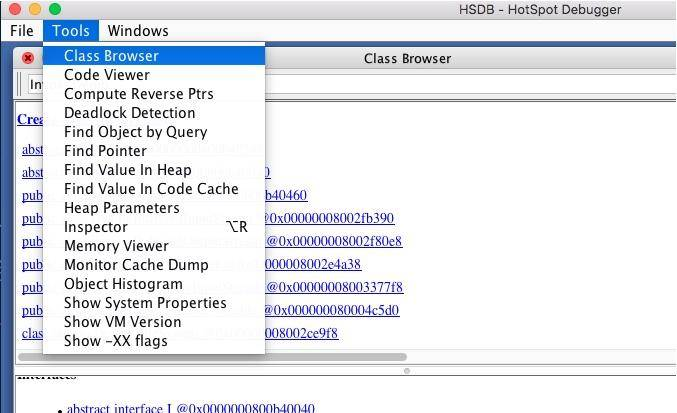
attach 启动 Java 进程后，可以在 Class Browser 菜单中查看加载的所有类信息。我们在搜索框中输入 InvokeDemo，找到要查看的类。
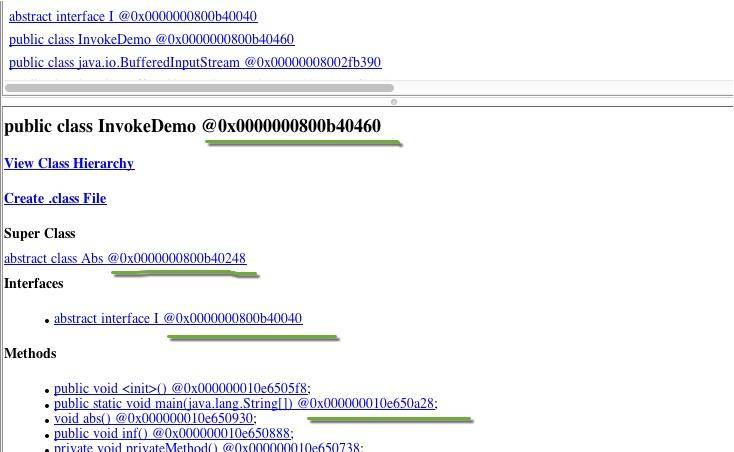
@ 符号后面的，就是具体的内存地址，我们可以复制一个，然后在 Inspector 视图中查看具体的属性，可以大体认为这就是类在方法区的具体存储。

在 Inspector 视图中，我们找到方法相关的属性 _methods，可惜它无法点开，也无法查看。

接下来使用命令行来检查这个数组里面的值。打开菜单中的 Console，然后输入 examine 命令，可以看到这个数组里的内容，对应的地址就是 Class 视图中的方法地址。
examine 0x000000010e650570/10

我们可以在 Inspect 视图中看到方法所对应的内存信息，这确实是一个 Method 方法的表示。

相比较起来，对象就简单了，它只需要保存一个到达 Class 对象的指针即可。我们需要先从对象视图中进入，然后找到它，一步步进入 Inspect 视图。

由以上的这些分析，可以得出下面这张图。执行引擎想要运行某个对象的方法，需要先在栈上找到这个对象的引用，然后再通过对象的指针，找到相应的方法字节码。

方法调用指令
关于方法的调用，Java 共提供了 5 个指令，来调用不同类型的函数：
- invokestatic 用来调用静态方法；
- invokevirtual 用于调用非私有实例方法，比如 public 和 protected，大多数方法调用属于这一种；
- invokeinterface 和上面这条指令类似，不过作用于接口类；
- invokespecial 用于调用私有实例方法、构造器及 super 关键字等；
- invokedynamic 用于调用动态方法。
我们依然使用上面的代码片段来看一下前四个指令的使用场景。代码中包含一个接口 **I、**一个抽象类 **Abs、**一个实现和继承了两者类的 InvokeDemo。
回想一下，第 03 课时讲到的类加载机制，在 class 文件被加载到方法区以后，就完成了从符号引用到具体地址的转换过程。
我们可以看一下编译后的 main 方法字节码，尤其需要注意的是对于接口方法的调用。使用实例对象直接调用，和强制转化成接口调用，所调用的字节码指令分别是 invokevirtual 和 invokeinterface，它们是有所不同的。
public static void main(java.lang.String[]);
descriptor: ([Ljava/lang/String;)V
flags: ACC_PUBLIC, ACC_STATIC
Code:
stack=2, locals=2, args_size=1
0: new #2 // class InvokeDemo
3: dup
4: invokespecial #3 // Method "<init>":()V
7: astore_1
8: invokestatic #4 // Method staticMethod:()V
11: aload_1
12: invokevirtual #5 // Method abs:()V
15: aload_1
16: invokevirtual #6 // Method Abs.abs:()V
19: aload_1
20: invokevirtual #7 // Method inf:()V
23: aload_1
24: invokeinterface #8, 1 // InterfaceMethod I.inf:()V
29: aload_1
30: invokespecial #9 // Method privateMethod:()V
33: aload_1
34: invokevirtual #10 // Method publicMethod:()V
37: aload_1
38: invokevirtual #11 // Method infMethod:()V
41: aload_1
42: invokeinterface #12, 1 // InterfaceMethod I.infMethod:()V
47: return
另外还有一点，和我们想象中的不同，大多数普通方法调用，使用的是 invokevirtual 指令，它其实和 invokeinterface 是一类的，都属于虚方法调用。很多时候，JVM 需要根据调用者的动态类型，来确定调用的目标方法，这就是动态绑定的过程。
invokevirtual 指令有多态查找的机制，该指令运行时，解析过程如下：
- 找到操作数栈顶的第一个元素所指向的对象实际类型，记做 c；
- 如果在类型 c 中找到与常量中的描述符和简单名称都相符的方法，则进行访问权限校验，如果通过则返回这个方法直接引用，查找过程结束，不通过则返回 java.lang.IllegalAccessError；
- 否则，按照继承关系从下往上依次对 c 的各个父类进行第二步的搜索和验证过程；
- 如果始终没找到合适的方法，则抛出 java.lang.AbstractMethodError 异常，这就是 Java 语言中方法重写的本质。
相对比，invokestatic 指令加上 invokespecial 指令，就属于静态绑定过程。
所以静态绑定，指的是能够直接识别目标方法的情况，而动态绑定指的是需要在运行过程中根据调用者的类型来确定目标方法的情况。
可以想象，相对于静态绑定的方法调用来说，动态绑定的调用会更加耗时一些。由于方法的调用非常的频繁，JVM 对动态调用的代码进行了比较多的优化，比如使用方法表来加快对具体方法的寻址，以及使用更快的缓冲区来直接寻址（ 内联缓存）。
invokedynamic
有时候在写一些 Python 脚本或者JS 脚本时，特别羡慕这些动态语言。如果把查找目标方法的决定权，从虚拟机转嫁给用户代码，我们就会有更高的自由度。
之所以单独把 invokedynamic 抽离出来介绍，是因为它比较复杂。和反射类似，它用于一些动态的调用场景，但它和反射有着本质的不同，效率也比反射要高得多。
这个指令通常在 Lambda 语法中出现，我们来看一下一小段代码：
public class LambdaDemo {
public static void main(String[] args) {
Runnable r = () -> System.out.println("Hello Lambda");
r.run();
}
}
使用 javap -p -v 命令可以在 main 方法中看到 invokedynamic 指令：
public static void main(java.lang.String[]);
descriptor: ([Ljava/lang/String;)V
flags: ACC_PUBLIC, ACC_STATIC
Code:
stack=1, locals=2, args_size=1
0: invokedynamic #2, 0 // InvokeDynamic #0:run:()Ljava/lang/Runnable;
5: astore_1
6: aload_1
7: invokeinterface #3, 1 // InterfaceMethod java/lang/Runnable.run:()V
12: return
另外，我们在 javap 的输出中找到了一些奇怪的东西：
BootstrapMethods:
0: #27 invokestatic java/lang/invoke/LambdaMetafactory.metafactory:
(Ljava/lang/invoke/MethodHandles$Lookup;Ljava/lang/String;Ljava/lang
/invoke/MethodType;Ljava/lang/invoke/MethodType;Ljava/lang/invoke/
MethodHandle;Ljava/lang/invoke/MethodType;)Ljava/lang/invoke/CallSite;
Method arguments:
#28 ()V
#29 invokestatic LambdaDemo.lambda$main$0:()V
#28 ()V
BootstrapMethods 属性在 Java 1.7 以后才有，位于类文件的属性列表中，这个属性用于保存 invokedynamic 指令引用的引导方法限定符。
和上面介绍的四个指令不同，invokedynamic 并没有确切的接受对象，取而代之的，是一个叫 CallSite 的对象。
static CallSite bootstrap(MethodHandles.Lookup caller, String name, MethodType type);
其实，invokedynamic 指令的底层，是使用方法句柄（MethodHandle）来实现的。方法句柄是一个能够被执行的引用，它可以指向静态方法和实例方法，以及虚构的 get 和 set 方法，从 IDE 中可以看到这些函数。

句柄类型（MethodType）是我们对方法的具体描述，配合方法名称，能够定位到一类函数。访问方法句柄和调用原来的指令基本一致，但它的调用异常，包括一些权限检查，在运行时才能被发现。
下面这段代码，可以完成一些动态语言的特性，通过方法名称和传入的对象主体，进行不同的调用，而 Bike 和 Man 类，可以没有任何关系。
import java.lang.invoke.MethodHandle;
import java.lang.invoke.MethodHandles;
import java.lang.invoke.MethodType;
public class MethodHandleDemo {
static class Bike {
String sound() {
return "ding ding";
}
}
static class Animal {
String sound() {
return "wow wow";
}
}
static class Man extends Animal {
@Override
String sound() {
return "hou hou";
}
}
String sound(Object o) throws Throwable {
MethodHandles.Lookup lookup = MethodHandles.lookup();
MethodType methodType = MethodType.methodType(String.class);
MethodHandle methodHandle = lookup.findVirtual(o.getClass(), "sound", methodType);
String obj = (String) methodHandle.invoke(o);
return obj;
}
public static void main(String[] args) throws Throwable {
String str = new MethodHandleDemo().sound(new Bike());
System.out.println(str);
str = new MethodHandleDemo().sound(new Animal());
System.out.println(str);
str = new MethodHandleDemo().sound(new Man());
System.out.println(str);
可以看到 Lambda 语言实际上是通过方法句柄来完成的，在调用链上自然也多了一些调用步骤，那么在性能上，是否就意味着 Lambda 性能低呢？对于大部分“非捕获”的 Lambda 表达式来说，JIT 编译器的逃逸分析能够优化这部分差异，性能和传统方式无异；但对于“捕获型”的表达式来说，则需要通过方法句柄，不断地生成适配器，性能自然就低了很多（不过和便捷性相比，一丁点性能损失是可接受的）。
除了 Lambda 表达式，我们还没有其他的方式来产生 invokedynamic 指令。但可以使用一些外部的字节码修改工具，比如 ASM，来生成一些带有这个指令的字节码，这通常能够完成一些非常酷的功能，比如完成一门弱类型检查的 JVM-Base 语言。
小结
本课时从 Java 字节码的顶层结构介绍开始，通过一个实际代码，了解了类加载以后，在 JVM 内存里的表现形式，并学习了 jhsdb 对 Java 进程的观测方式。
接下来，我们分析了 invokestatic、invokevirtual、invokeinterface、invokespecial 这四个字节码指令的使用场景，并从字节码中看到了这些区别。
最后，了解了 Java 7 之后的 invokedynamic 指令，它实际上是通过方法句柄来实现的。和我们关系最大的就是 Lambda 语法，了解了这些原理，可以忽略那些对 Lambda 性能高低的争论，要尽量写一些“非捕获”的 Lambda 表达式。
19 大厂面试题：不要搞混 JMM 与 JVM
本课时我们主要分析一个大厂面试题：不要搞混 JMM 与 JVM。
在面试的时候，有一个问题经常被问到，那就是 Java 的内存模型，它已经成为了面试中的标配，是非常具有原理性的一个知识点。但是，有不少人把它和 JVM 的内存布局搞混了，以至于答非所问。这个现象在一些工作多年的程序员中非常普遍，主要是因为 JMM 与多线程有关，而且相对于底层而言，很多人平常的工作就是 CRUD，很难接触到这方面的知识。
预警：本课时假设你已经熟悉 Java 并发编程的 API，且有实际的编程经验。如果不是很了解，那么本课时和下一课时的一些内容，可能会比较晦涩。
JMM 概念
在第 02 课时，就已经了解了 JVM 的内存布局，你可以认为这是 JVM 的数据存储模型；但对于 JVM 的运行时模型，还有一个和多线程相关的，且非常容易搞混的概念——Java 的内存模型（JMM，Java Memory Model）。
我们在 Java 的内存布局课时（第02课时）中，还了解了 Java 的虚拟机栈，它和线程相关，也就是我们的字节码指令其实是靠操作栈来完成的。现在，用一小段代码，来看一下这个执行引擎的一些特点。
import java.util.stream.IntStream;
public class JMMDemo {
int value = 0;
void add() {
value++;
}
public static void main(String[] args) throws Exception {
final int count = 100000;
final JMMDemo demo = new JMMDemo();
Thread t1 = new Thread(() -> IntStream.range(0, count).forEach((i) -> demo.add()));
Thread t2 = new Thread(() -> IntStream.range(0, count).forEach((i) -> demo.add()));
t1.start();
t2.start();
t1.join();
t2.join();
System.out.println(demo.value);
上面的代码没有任何同步块，每个线程单独运行后，都会对 value 加 10 万，但执行之后，大概率不会输出 20 万。深层次的原因，我们将使用 javap 命令从字节码层面找一下。
void add();
descriptor: ()V
flags:
Code:
stack=3, locals=1, args_size=1
0: aload_0
1: dup
2: getfield #2 // Field value:I
5: iconst_1
6: iadd
7: putfield #2 // Field value:I
10: return
LineNumberTable:
line 7: 0
line 8: 10
LocalVariableTable:
Start Length Slot Name Signature
0 11 0 this LJMMDemo;
着重看一下 add 方法，可以看到一个简单的 i++ 操作，竟然有这么多的字节码，而它们都是傻乎乎按照“顺序执行”的。当它自己执行的时候不会有什么问题，但是如果放在多线程环境中，执行顺序就变得不可预料了。

上图展示了这个乱序的过程。线程 A 和线程 B“并发”执行相同的代码块 add，执行的顺序如图中的标号，它们在线程中是有序的（1、2、5 或者 3、4、6），但整体顺序是不可预测的。
线程 A 和 B 各自执行了一次加 1 操作，但在这种场景中，线程 B 的 putfield 指令直接覆盖了线程 A 的值，最终 value 的结果是 101。
上面的示例仅仅是字节码层面上的，更加复杂的是，CPU 和内存之间同样存在一致性问题。很多人认为 CPU 是一个计算组件，并没有数据一致性的问题。但事实上，由于内存的发展速度跟不上 CPU 的更新，在 CPU 和内存之间，存在着多层的高速缓存。
原因就是由于多核所引起的，这些高速缓存，往往会有多层。如果一个线程的时间片跨越了多个 CPU，那么同样存在同步的问题。
另外，在执行过程中，CPU 可能也会对输入的代码进行乱序执行优化，Java 虚拟机的即时编译器也有类似的指令重排序优化。整个函数的执行步骤就分的更加细致，看起来非常的碎片化（比字节码指令要细很多）。

不管是字节码的原因，还是硬件的原因，在粗粒度上简化来看，比较浅显且明显的因素，那就是线程 add 方法的操作并不是原子性的。
为了解决这个问题，我们可以在 add 方法上添加 synchronized 关键字，它不仅保证了内存上的同步，而且还保证了 CPU 的同步。这个时候，各个线程只能排队进入 add 方法，我们也能够得到期望的结果 102。
synchronized void add() {
value++;
}

讲到这里，Java 的内存模型就呼之欲出了。JMM 是一个抽象的概念，它描述了一系列的规则或者规范，用来解决多线程的共享变量问题，比如 volatile、synchronized 等关键字就是围绕 JMM 的语法。这里所说的变量，包括实例字段、静态字段，但不包括局部变量和方法参数，因为后者是线程私有的，不存在竞争问题。
JVM 试图定义一种统一的内存模型，能将各种底层硬件，以及操作系统的内存访问差异进行封装，使 Java 程序在不同硬件及操作系统上都能达到相同的并发效果。
JMM 的结构
JMM 分为主存储器（Main Memory）和工作存储器（Working Memory）两种。
- 主存储器是实例位置所在的区域，所有的实例都存在于主存储器内。比如，实例所拥有的字段即位于主存储器内，主存储器是所有的线程所共享的。
- 工作存储器是线程所拥有的作业区，每个线程都有其专用的工作存储器。工作存储器存有主存储器中必要部分的拷贝，称之为工作拷贝（Working Copy）。
在这个模型中，线程无法对主存储器直接进行操作。如下图，线程 A 想要和线程 B 通信，只能通过主存进行交换。

那这些内存区域都是在哪存储的呢？如果非要有个对应的话，你可以认为主存中的内容是 Java 堆中的对象，而工作内存对应的是虚拟机栈中的内容。但实际上，主内存也可能存在于高速缓存，或者 CPU 的寄存器上；工作内存也可能存在于硬件内存中，我们不用太纠结具体的存储位置。
8 个 Action
操作类型
为了支持 JMM，Java 定义了 8 种原子操作（Action），用来控制主存与工作内存之间的交互。
（1）read（读取）作用于主内存，它把变量从主内存传动到线程的工作内存中，供后面的 load 动作使用。
（2）load（载入）作用于工作内存，它把 read 操作的值放入到工作内存中的变量副本中。
（3）store（存储）作用于工作内存，它把工作内存中的一个变量传送给主内存中，以备随后的 write 操作使用。
（4）write （写入）作用于主内存，它把 store 传送值放到主内存中的变量中。
（5）use（使用）作用于工作内存，它把工作内存中的值传递给执行引擎，每当虚拟机遇到一个需要使用这个变量的指令时，将会执行这个动作。
（6）assign（赋值）作用于工作内存，它把从执行引擎获取的值赋值给工作内存中的变量，每当虚拟机遇到一个给变量赋值的指令时，执行该操作。
（7）lock（锁定）作用于主内存，把变量标记为线程独占状态。
（8）unlock（解锁）作用于主内存，它将释放独占状态。

如上图所示，把一个变量从主内存复制到工作内存，就要顺序执行 read 和 load；而把变量从工作内存同步回主内存，就要顺序执行 store 和 write 操作。
三大特征
（1）原子性
JMM 保证了 read、load、assign、use、store 和 write 六个操作具有原子性，可以认为除了 long 和 double 类型以外，对其他基本数据类型所对应的内存单元的访问读写都是原子的。
如果想要一个颗粒度更大的原子性保证，就可以使用 lock 和 unlock 这两个操作。
（2）可见性
可见性是指当一个线程修改了共享变量的值，其他线程也能立即感知到这种变化。
我们从前面的图中可以看到，要保证这种效果，需要经历多次操作。一个线程对变量的修改，需要先同步给主内存，赶在另外一个线程的读取之前刷新变量值。
volatile、synchronized、final 和锁，都是保证可见性的方式。
这里要着重提一下 volatile，因为它的特点最显著。使用了 volatile 关键字的变量，每当变量的值有变动时，都会把更改立即同步到主内存中；而如果某个线程想要使用这个变量，则先要从主存中刷新到工作内存上，这样就确保了变量的可见性。
而锁和同步关键字就比较好理解一些，它是把更多个操作强制转化为原子化的过程。由于只有一把锁，变量的可见性就更容易保证。
（3）有序性
Java 程序很有意思，从上面的 add 操作可以看出，如果在线程中观察，则所有的操作都是有序的；而如果在另一个线程中观察，则所有的操作都是无序的。
除了多线程这种无序性的观测，无序的产生还来源于指令重排。
指令重排序是 JVM 为了优化指令，来提高程序运行效率的，在不影响单线程程序执行结果的前提下，按照一定的规则进行指令优化。在某些情况下，这种优化会带来一些执行的逻辑问题，在并发执行的情况下，按照不同的逻辑会得到不同的结果。
我们可以看一下 Java 语言中默认的一些“有序”行为，也就是先行发生（**happens-before）**原则，这些可能在写代码的时候没有感知，因为它是一种默认行为。
先行发生是一个非常重要的概念，如果操作 A 先行发生于操作 B，那么操作 A 产生的影响能够被操作 B 感知到。
下面的原则是**《Java 并发编程实践》**这本书中对一些法则的描述。
- **程序次序：**一个线程内，按照代码顺序，写在前面的操作先行发生于写在后面的操作。
- **监视器锁定：**unLock 操作先行发生于后面对同一个锁的 lock 操作。
- **volatile：**对一个变量的写操作先行发生于后面对这个变量的读操作。
- **传递规则：**如果操作 A 先行发生于操作 B，而操作 B 又先行发生于操作 C，则可以得出操作 A 先行发生于操作 C。
- **线程启动：**对线程 start() 的操作先行发生于线程内的任何操作。
- **线程中断：**对线程 interrupt() 的调用先行发生于线程代码中检测到中断事件的发生，可以通过 Thread.interrupted() 方法检测是否发生中断。
- **线程终结规则：**线程中的所有操作先行发生于检测到线程终止，可以通过 Thread.join()、Thread.isAlive() 的返回值检测线程是否已经终止。
- **对象终结规则：**一个对象的初始化完成先行发生于它的 finalize() 方法的开始。
内存屏障
那我们上面提到这么多规则和特性，是靠什么保证的呢？
内存屏障（Memory Barrier）用于控制在特定条件下的重排序和内存可见性问题。JMM 内存屏障可分为读屏障和写屏障，Java 的内存屏障实际上也是上述两种的组合，完成一系列的屏障和数据同步功能。Java 编译器在生成字节码时，会在执行指令序列的适当位置插入内存屏障来限制处理器的重排序。
下面介绍一下这些组合。
Load-Load Barriers
保证 load1 数据的装载优先于 load2 以及所有后续装载指令的装载。对于 Load Barrier 来说，在指令前插入 Load Barrier，可以让高速缓存中的数据失效，强制重新从主内存加载数据。
load1
LoadLoad
load2
Load-Store Barriers
保证 load1 数据装载优先于 store2 以及后续的存储指令刷新到内存。
load1
LoadStore
store2
Store-Store Barriers
保证 store1 数据对其他处理器可见，优先于 store2 以及所有后续存储指令的存储。对于 Store Barrier 来说，在指令后插入 Store Barrier，能让写入缓存中的最新数据更新写入主内存，让其他线程可见。
store1
StoreStore
store
Store-Load Barriers
在 Load2 及后续所有读取操作执行前，保证 Store1 的写入对所有处理器可见。这条内存屏障指令是一个全能型的屏障，它同时具有其他 3 条屏障的效果，而且它的开销也是四种屏障中最大的一个。
store1
StoreLoad
load2
小结
好了，到这里我们已经简要地介绍完了 JMM 相关的知识点。前面提到过，“请谈一下 Java 的内存模型”这个面试题非常容易被误解，甚至很多面试官自己也不清楚这个概念。其实，如果我们把 JMM 叫作“Java 的并发内存模型”，会更容易理解。
这个时候，可以和面试官确认一下，问的是 Java 内存布局，还是和多线程相关的 JMM，如果不是 JMM，你就需要回答一下第 02 课时的相关知识了。
JMM 可以说是 Java 并发的基础，它的定义将直接影响多线程实现的机制，如果你想要深入了解多线程并发中的相关问题现象，对 JMM 的深入研究是必不可少的。
20 动手实践：从字节码看并发编程的底层实现
本课时我们主要分享一个实践案例：从字节码看并发编程的底层实现。
我们在上一课时中简单学习了 JMM 的概念，知道了 Java 语言中一些默认的 happens-before 规则，是靠内存屏障完成的。其中的 lock 和 unlock 两个 Action，就属于粒度最大的两个操作。
如下图所示，Java 中的多线程，第一类是 Thread 类。它有三种实现方式：第 1 种是通过继承 Thread 覆盖它的 run 方法；第 2 种是通过 Runnable 接口，实现它的 run 方法；而第 3 种是通过创建线程，就是通过线程池的方法去创建。
多线程除了增加任务的执行速度，同样也有共享变量的同步问题。传统的线程同步方式，是使用 synchronized 关键字，或者 wait、notify 方法等，比如我们在第 15 课时中所介绍的，使用 jstack 命令可以观测到各种线程的状态。在目前的并发编程中，使用 concurrent 包里的工具更多一些。
线程模型
我们首先来看一下 JVM 的线程模型，以及它和操作系统进程之间的关系。
如下图所示，对于 Hotspot 来说，每一个 Java 线程，都会映射到一条轻量级进程中（LWP，Light Weight Process）。轻量级进程是用户进程调用系统内核所提供的一套接口，实际上它还需要调用更加底层的内核线程（KLT，Kernel-Level Thread）。而具体的功能，比如创建、同步等，则需要进行系统调用。

这些系统调用的操作，代价都比较高，需要在用户态（User Mode）和内核态（Kernel Mode）中来回切换，也就是我们常说的线程上下文切换（ CS，Context Switch）。
使用 vmstat 命令能够方便地观测到这个数值。

Java 在保证正确的前提下，要想高效并发，就要尽量减少上下文的切换。
一般有下面几种做法来减少上下文的切换：
- CAS 算法，比如 Java 的 Atomic 类，如果使用 CAS 来更新数据，则不需要加锁；
- 减少锁粒度，多线程竞争会引起上下文的频繁切换，如果在处理数据的时候，能够将数据分段，即可减少竞争，Java 的 ConcurrentHashMap、LongAddr 等就是这样的思路；
- 协程，在单线程里实现多任务调度，并在单线程里支持多个任务之间的切换；
- 对加锁的对象进行智能判断，让操作更加轻量级。
CAS 和无锁并发一般是建立在 concurrent 包里面的 AQS 模型之上，大多数属于 Java 语言层面上的知识点。本课时在对其进行简单的描述后，会把重点放在普通锁的优化上。
CAS
CAS（Compare And Swap，比较并替换）机制中使用了 3 个基本操作数：内存地址 V、旧的预期值 A 和要修改的新值 B。更新一个变量时，只有当变量的预期值 A 和内存地址 V 当中的实际值相同时，才会将内存地址 V 对应的值修改为 B。
如果修改不成功，CAS 将不断重试。
拿 AtomicInteger 类来说，相关的代码如下：
public final boolean compareAndSet(int expectedValue, int newValue) {
return U.compareAndSetInt(this, VALUE, expectedValue, newValue);
}
可以看到，这个操作，是由 jdk.internal.misc.Unsafe 类进行操作的，而这是一个 native 方法：
@HotSpotIntrinsicCandidate
public final native boolean compareAndSetInt(Object o, long offset,
int expected,
int x);
我们继续向下跟踪，在 Linux 机器上参照 os_cpu/linux_x86/atomic_linux_x86.hpp：
template<>
template<typename T>
inline T Atomic::PlatformCmpxchg<4>::operator()(T exchange_value,
T volatile* dest,
T compare_value,
atomic_memory_order /* order */) const {
STATIC_ASSERT(4 == sizeof(T));
__asm__ volatile ("lock cmpxchgl %1,(%3)"
: "=a" (exchange_value)
: "r" (exchange_value), "a" (compare_value), "r" (dest)
: "cc", "memory");
return exchange_value;
}
可以看到，最底层的调用是汇编语言，而最重要的就是 cmpxchgl 指令，到这里没法再往下找代码了，也就是说 CAS 的原子性实际上是硬件 CPU 直接实现的。
synchronized
字节码
synchronized 可以在是多线程中使用的最多的关键字了。在开始介绍之前，请思考一个问题：在执行速度方面，是基于 CAS 的 Lock 效率高一些，还是同步关键字效率高一些？
synchronized 关键字给代码或者方法上锁时，会有显示或者隐藏的上锁对象。当一个线程试图访问同步代码块时，它必须先得到锁，而在退出或抛出异常时必须释放锁。
- 给普通方法加锁时，上锁的对象是 this，如代码中的方法 m1 。
- 给静态方法加锁时，锁的是 class 对象，如代码中的方法 m2 。
- 给代码块加锁时，可以指定一个具体的对象。
关于对象对锁的争夺，我们依然拿前面讲的一张图来看一下这个过程。
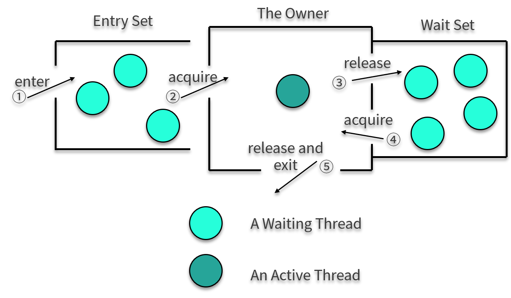
下面我们来看一段简单的代码，并观测一下它的字节码。
public class SynchronizedDemo {
synchronized void m1() {
System.out.println("m1");
}
static synchronized void m2() {
System.out.println("m2");
}
final Object lock = new Object();
void doLock() {
synchronized (lock) {
System.out.println("lock");
}
}
}
下面是普通方法 m1 的字节码。
synchronized void m1();
descriptor: ()V
flags: ACC_SYNCHRONIZED
Code:
stack=2, locals=1, args_size=1
0: getstatic #4
3: ldc #5
5: invokevirtual #6
8: return
可以看到，在字节码的体现上，它只给方法加了一个 flag：ACC_SYNCHRONIZED。
静态方法 m2 和 m1 区别不大，只不过 flags 上多了一个参数：ACC_STATIC。
相比较起来，doLock 方法就麻烦了一些，其中出现了 monitorenter 和 monitorexit 等字节码指令。
void doLock();
descriptor: ()V
flags:
Code:
stack=2, locals=3, args_size=1
0: aload_0
1: getfield #3 // Field lock:Ljava/lang/Object;
4: dup
5: astore_1
6: monitorenter
7: getstatic #4 // Field java/lang/System.out:Ljava/io/PrintStream;
10: ldc #8 // String lock
12: invokevirtual #6 // Method java/io/PrintStream.println:(Ljava/lang/String;)V
15: aload_1
16: monitorexit
17: goto 25
20: astore_2
21: aload_1
22: monitorexit
23: aload_2
24: athrow
25: return
Exception table:
from to target type
7 17 20 any
20 23 20 any
很多人都认为，synchronized 是一种悲观锁、一种重量级锁；而基于 CAS 的 AQS 是一种乐观锁，这种理解并不全对。JDK1.6 之后，JVM 对同步关键字进行了很多的优化，这把锁有了不同的状态，大多数情况下的效率，已经和 concurrent 包下的 Lock 不相上下了，甚至更高。
对象内存布局
说到 synchronized 加锁原理，就不得不先说 Java 对象在内存中的布局，Java 对象内存布局如下图所示。

我来分别解释一下各个部分的含义。
Mark Word：用来存储 hashCode、GC 分代年龄、锁类型标记、偏向锁线程 ID、CAS 锁指向线程 LockRecord 的指针等，synconized 锁的机制与这里密切相关，这有点像 TCP/IP 中的协议头。
**Class Pointer：**用来存储对象指向它的类元数据指针、JVM 就是通过它来确定是哪个 Class 的实例。
**Instance Data：**存储的是对象真正有效的信息，比如对象中所有字段的内容。
**Padding：**HostSpot 规定对象的起始地址必须是 8 字节的整数倍，这是为了高效读取对象而做的一种“对齐”操作。
可重入锁
synchronized 是一把可重入锁。因此，在一个线程使用 synchronized 方法时可以调用该对象的另一个 synchronized 方法，即一个线程得到一个对象锁后再次请求该对象锁，是可以永远拿到锁的。
Java 中线程获得对象锁的操作是以线程而不是以调用为单位的。synchronized 锁的对象头的 Mark Work 中会记录该锁的线程持有者和计数器。当一个线程请求成功后，JVM 会记下持有锁的线程，并将计数器计为 1 。此时如果有其他线程请求该锁，则必须等待。而该持有锁的线程如果再次请求这个锁，就可以再次拿到这个锁，同时计数器会递增。当线程退出一个 synchronized 方法/块时，计数器会递减，如果计数器为 0 则释放该锁。
锁升级
根据使用情况，锁升级大体可以按照下面的路径：偏向锁→轻量级锁→重量级锁，锁只能升级不能降级，所以一旦锁升级为重量级锁，就只能依靠操作系统进行调度。
我们再看一下 Mark Word 的结构。其中，Biased 有 1 bit 大小，Tag 有 2 bit 大小，锁升级就是通过 Thread Id、Biased、Tag 这三个变量值来判断的。

偏向锁
偏向锁，其实是一把偏心锁（一般不这么描述）。在 JVM 中，当只有一个线程使用了锁的情况下，偏向锁才能够保证更高的效率。
当第 1 个线程第一次访问同步块时，会先检测对象头 Mark Word 中的标志位（Tag）是否为 01，以此来判断此时对象锁是否处于无锁状态或者偏向锁状态（匿名偏向锁）。
这也是锁默认的状态，线程一旦获取了这把锁，就会把自己的线程 ID 写到 Mark Word 中，在其他线程来获取这把锁之前，该线程都处于偏向锁状态。
轻量级锁
当下一个线程参与到偏向锁竞争时，会先判断 Mark Word 中保存的线程 ID 是否与这个线程 ID 相等，如果不相等，则会立即撤销偏向锁，升级为轻量级锁。
轻量级锁的获取是怎么进行的呢？它们使用的是自旋方式。
参与竞争的每个线程，会在自己的线程栈中生成一个 LockRecord ( LR )，然后每个线程通过 CAS（自旋）的操作将锁对象头中的 Mark Work 设置为指向自己的 LR 指针，哪个线程设置成功，就意味着哪个线程获得锁。在这种情况下，JVM 不会依赖内核进行线程调度。
当锁处于轻量级锁的状态时，就不能够再通过简单的对比 Tag 值进行判断了，每次对锁的获取，都需要通过自旋的操作。
当然，自旋也是面向不存在锁竞争的场景，比如一个线程运行完了，另外一个线程去获取这把锁。但如果自旋失败达到一定的次数（JVM 自动管理）时，就会膨胀为重量级锁。
重量级锁
重量级锁即为我们对 synchronized 的直观认识，在这种情况下，线程会挂起，进入到操作系统内核态，等待操作系统的调度，然后再映射回用户态。系统调用是昂贵的，重量级锁的名称也由此而来。
如果系统的共享变量竞争非常激烈，那么锁会迅速膨胀到重量级锁，这些优化也就名存实亡了。如果并发非常严重，则可以通过参数 -XX:-UseBiasedLocking 禁用偏向锁。这种方法在理论上会有一些性能提升，但实际上并不确定。
因为，synchronized 在 JDK，包括一些框架代码中的应用是非常广泛的。在一些不需要同步的场景中，即使加上了 synchronized 关键字，由于锁升级的原因，效率也不会太差。
下面这张图展示了三种锁的状态和 Mark Word 值的变化。

小结
在本课时中，我们首先介绍了多线程的一些特点，然后熟悉了 Java 中的线程和它在操作系统中的一些表现形式；还了解了，线程上下文切换会严重影响系统的性能，所以 Java 的锁有基于硬件 CAS 自旋，也有基于比较轻量级的“轻量级锁”和“偏向锁”。
它们的目标是，在不改变编程模型的基础上，尽量提高系统的性能，进行更加高效的并发。
21 动手实践：不为人熟知的字节码指令
本课时我们主要分享一个实践案例：不为人熟知的字节码指令。
下面将通过介绍 Java 语言中的一些常见特性，来看一下字节码的应用，由于 Java 特性非常多，这里我们仅介绍一些经常遇到的特性。javap 是手中的利器，复杂的概念都可以在这里现出原形，并且能让你对此产生深刻的印象。
本课时代码比较多，相关代码示例都可以在仓库中找到，建议实际操作一下。
异常处理
在上一课时中，细心的你可能注意到了，在 synchronized 生成的字节码中，其实包含两条 monitorexit 指令，是为了保证所有的异常条件，都能够退出。
这就涉及到了 Java 字节码的异常处理机制，如下图所示。

如果你熟悉 Java 语言，那么对上面的异常继承体系一定不会陌生，其中，Error 和 RuntimeException 是非检查型异常（Unchecked Exception），也就是不需要 catch 语句去捕获的异常；而其他异常，则需要程序员手动去处理。
异常表
在发生异常的时候，Java 就可以通过 Java 执行栈，来构造异常栈。回想一下第 02 课时中的栈帧，获取这个异常栈只需要遍历一下它们就可以了。
但是这种操作，比起常规操作，要昂贵的多。Java 的 Log 日志框架，通常会把所有错误信息打印到日志中，在异常非常多的情况下，会显著影响性能。
我们还是看一下上一课时生成的字节码：
void doLock();
descriptor: ()V
flags:
Code:
stack=2, locals=3, args_size=1
0: aload_0
1: getfield #3 // Field lock:Ljava/lang/Object;
4: dup
5: astore_1
6: monitorenter
7: getstatic #4 // Field java/lang/System.out:Ljava/io/PrintStream;
10: ldc #8 // String lock
12: invokevirtual #6 // Method java/io/PrintStream.println:(Ljava/lang/String;)V
15: aload_1
16: monitorexit
17: goto 25
20: astore_2
21: aload_1
22: monitorexit
23: aload_2
24: athrow
25: return
Exception table:
from to target type
7 17 20 any
20 23 20 any
可以看到，编译后的字节码，带有一个叫 Exception table 的异常表，里面的每一行数据，都是一个异常处理器：
- from 指定字节码索引的开始位置
- to 指定字节码索引的结束位置
- target 异常处理的起始位置
- type 异常类型
也就是说，只要在 from 和 to 之间发生了异常，就会跳转到 target 所指定的位置。
finally
通常我们在做一些文件读取的时候，都会在 finally 代码块中关闭流，以避免内存的溢出。关于这个场景，我们再分析一下下面这段代码的异常表。
import java.io.FileInputStream;
import java.io.FileNotFoundException;
import java.io.IOException;
import java.io.InputStream;
public class A {
public void read() {
InputStream in = null;
try {
in = new FileInputStream("A.java");
} catch (FileNotFoundException e) {
e.printStackTrace();
} finally {
if (null != in) {
try {
in.close();
} catch (IOException e) {
e.printStackTrace();
}
}
}
}
}
上面的代码，捕获了一个 FileNotFoundException 异常，然后在 finally 中捕获了 IOException 异常。当我们分析字节码的时候，却发现了一个有意思的地方：IOException 足足出现了三次。
Exception table:
from to target type
17 21 24 Class java/io/IOException
2 12 32 Class java/io/FileNotFoundException
42 46 49 Class java/io/IOException
2 12 57 any
32 37 57 any
63 67 70 Class java/io/IOException
Java 编译器使用了一种比较傻的方式来组织 finally 的字节码，它分别在 try、catch 的正常执行路径上，复制一份 finally 代码，追加在 正常执行逻辑的后面；同时，再复制一份到其他异常执行逻辑的出口处。
这也是下面这段方法不报错的原因，都可以在字节码中找到答案。
//B.java
public int read() {
try {
int a = 1 / 0;
return a;
} finally {
return 1;
}
}
下面是上面程序的字节码，可以看到，异常之后，直接跳转到序号 8 了。
stack=2, locals=4, args_size=1
0: iconst_1
1: iconst_0
2: idiv
3: istore_1
4: iload_1
5: istore_2
6: iconst_1
7: ireturn
8: astore_3
9: iconst_1
10: ireturn
Exception table:
from to target type
0 6 8 any
装箱拆箱
在刚开始学习 Java 语言的你，可能会被自动装箱和拆箱搞得晕头转向。Java 中有 8 种基本类型，但鉴于 Java 面向对象的特点，它们同样有着对应的 8 个包装类型，比如 int 和 Integer，包装类型的值可以为 null，很多时候，它们都能够相互赋值。
我们使用下面的代码从字节码层面上来观察一下：
public class Box {
public Integer cal() {
Integer a = 1000;
int b = a * 10;
return b;
}
}
上面是一段简单的代码，首先使用包装类型，构造了一个值为 1000 的数字，然后乘以 10 后返回，但是中间的计算过程，使用了普通类型 int。
public java.lang.Integer read();
descriptor: ()Ljava/lang/Integer;
flags: ACC_PUBLIC
Code:
stack=2, locals=3, args_size=1
0: sipush 1000
3: invokestatic #2 // Method java/lang/Integer.valueOf:(I)Ljava/lang/Integer;
6: astore_1
7: aload_1
8: invokevirtual #3 // Method java/lang/Integer.intValue:()I
11: bipush 10
13: imul
14: istore_2
15: iload_2
16: invokestatic #2 // Method java/lang/Integer.valueOf:(I)Ljava/lang/Integer;
19: areturn
通过观察字节码，我们发现赋值操作使用的是 Integer.valueOf 方法，在进行乘法运算的时候，调用了 Integer.intValue 方法来获取基本类型的值。在方法返回的时候，再次使用了 Integer.valueOf 方法对结果进行了包装。
这就是 Java 中的自动装箱拆箱的底层实现。
但这里有一个 Java 层面的陷阱问题，我们继续跟踪 Integer.valueOf 方法。
@HotSpotIntrinsicCandidate
public static Integer valueOf(int i) {
if (i >= IntegerCache.low && i <= IntegerCache.high)
return IntegerCache.cache[i + (-IntegerCache.low)];
return new Integer(i);
}
这个 IntegerCache，缓存了 low 和 high 之间的 Integer 对象，可以通过 -XX:AutoBoxCacheMax 来修改上限。
下面是一道经典的面试题，请考虑一下运行代码后，会输出什么结果？
public class BoxCacheError{
public static void main(String[] args) {
Integer n1 = 123;
Integer n2 = 123;
Integer n3 = 128;
Integer n4 = 128;
System.out.println(n1 == n2);
System.out.println(n3 == n4);
}
当我使用 java BoxCacheError 执行时，是 true,false；当我加上参数 java -XX:AutoBoxCacheMax=256 BoxCacheError 执行时，结果是 true,ture，原因就在于此。
数组访问
我们都知道，在访问一个数组长度的时候，直接使用它的属性 .length 就能获取，而在 Java 中却无法找到对于数组的定义。
比如 int[] 这种类型，通过 getClass（getClass 是 Object 类中的方法）可以获取它的具体类型是 [I。
其实，数组是 JVM 内置的一种对象类型，这个对象同样是继承的 Object 类。
我们使用下面一段代码来观察一下数组的生成和访问。
public class ArrayDemo {
int getValue() {
int[] arr = new int[]{
1111, 2222, 3333, 4444
};
return arr[2];
}
int getLength(int[] arr) {
return arr.length;
}
}
首先看一下 getValue 方法的字节码。
int getValue();
descriptor: ()I
flags:
Code:
stack=4, locals=2, args_size=1
0: iconst_4
1: newarray int
3: dup
4: iconst_0
5: sipush 1111
8: iastorae
9: dup
10: iconst_1
11: sipush 2222
14: iastore
15: dup
16: iconst_2
17: sipush 3333
20: iastore
21: dup
22: iconst_3
23: sipush 4444
26: iastore
27: astore_1
28: aload_1
29: iconst_2
30: iaload
31: ireturn
可以看到，新建数组的代码，被编译成了 newarray 指令。数组里的初始内容，被顺序编译成了一系列指令放入：
- sipush 将一个短整型常量值推送至栈顶；
- iastore 将栈顶 int 型数值存入指定数组的指定索引位置。
为了支持多种类型，从操作数栈存储到数组，有更多的指令：bastore、castore、sastore、iastore、lastore、fastore、dastore、aastore。
数组元素的访问，是通过第 28 ~ 30 行代码来实现的：
-
aload_1 将第二个引用类型本地变量推送至栈顶，这里是生成的数组；
-
iconst_2 将 int 型 2 推送至栈顶；
-
iaload 将 int 型数组指定索引的值推送至栈顶。
值得注意的是，在这段代码运行期间，有可能会产生 ArrayIndexOutOfBoundsException，但由于它是一种非捕获型异常，我们不必为这种异常提供异常处理器。
我们再看一下 getLength 的字节码，字节码如下：
int getLength(int[]);
descriptor: ([I)I
flags:
Code:
stack=1, locals=2, args_size=2
0: aload_1
1: arraylength
2: ireturn
可以看到，获取数组的长度，是由字节码指令 arraylength 来完成的。
foreach
无论是 Java 的数组，还是 List，都可以使用 foreach 语句进行遍历，比较典型的代码如下：
import java.util.List;
public class ForDemo {
void loop(int[] arr) {
for (int i : arr) {
System.out.println(i);
}
}
void loop(List<Integer> arr) {
for (int i : arr) {
System.out.println(i);
}
}
虽然在语言层面它们的表现形式是一致的，但实际实现的方法并不同。我们先看一下遍历数组的字节码：
void loop(int[]);
descriptor: ([I)V
flags:
Code:
stack=2, locals=6, args_size=2
0: aload_1
1: astore_2
2: aload_2
3: arraylength
4: istore_3
5: iconst_0
6: istore 4
8: iload 4
10: iload_3
11: if_icmpge 34
14: aload_2
15: iload 4
17: iaload
18: istore 5
20: getstatic #2 // Field java/lang/System.out:Ljava/io/PrintStream;
23: iload 5
25: invokevirtual #3 // Method java/io/PrintStream.println:(I)V
28: iinc 4, 1
31: goto 8
34: return
可以很容易看到，它将代码解释成了传统的变量方式，即 for(int i;i<length;i++) 的形式。
而 List 的字节码如下：
void loop(java.util.List<java.lang.Integer>);
Code:
0: aload_1
1: invokeinterface #4, 1 // InterfaceMethod java/util/List.iterator:()Ljava/util/Iterator;
6: astore_2-
7: aload_2
8: invokeinterface #5, 1 // InterfaceMethod java/util/Iterator.hasNext:()Z
13: ifeq 39
16: aload_2
17: invokeinterface #6, 1 // InterfaceMethod java/util/Iterator.next:()Ljava/lang/Object;
22: checkcast #7 // class java/lang/Integer
25: invokevirtual #8 // Method java/lang/Integer.intValue:()I
28: istore_3
29: getstatic #2 // Field java/lang/System.out:Ljava/io/PrintStream;
32: iload_3
33: invokevirtual #3 // Method java/io/PrintStream.println:(I)V
36: goto 7
39: return
它实际是把 list 对象进行迭代并遍历的，在循环中，使用了 Iterator.next() 方法。
使用 jd-gui 等反编译工具，可以看到实际生成的代码：
void loop(List<Integer> paramList) {
for (Iterator<Integer> iterator = paramList.iterator(); iterator.hasNext(); ) {
int i = ((Integer)iterator.next()).intValue();
System.out.println(i);
}
}
注解
注解在 Java 中得到了广泛的应用，Spring 框架更是由于注解的存在而起死回生。注解在开发中的作用就是做数据约束和标准定义，可以将其理解成代码的规范标准，并帮助我们写出方便、快捷、简洁的代码。 那么注解信息是存放在哪里的呢？我们使用两个 Java 文件来看一下其中的一种情况。 MyAnnotation.java
public @interface MyAnnotation {
}
AnnotationDemo
@MyAnnotation
public class AnnotationDemo {
@MyAnnotation
public void test(@MyAnnotation int a){
}
}
下面我们来看一下字节码信息。
{
public AnnotationDemo();
descriptor: ()V
flags: ACC_PUBLIC
Code:
stack=1, locals=1, args_size=1
0: aload_0
1: invokespecial #1 // Method java/lang/Object."<init>":()V
4: return
LineNumberTable:
line 2: 0
public void test(int);
descriptor: (I)V
flags: ACC_PUBLIC
Code:
stack=0, locals=2, args_size=2
0: return
LineNumberTable:
line 6: 0
RuntimeInvisibleAnnotations:
0: #11()
RuntimeInvisibleParameterAnnotations:
0:
0: #11()
}
SourceFile: "AnnotationDemo.java"
RuntimeInvisibleAnnotations:
0: #11()
可以看到，无论是类的注解，还是方法注解，都是由一个叫做 RuntimeInvisibleAnnotations 的结构来存储的，而参数的存储，是由 RuntimeInvisibleParameterAnotations 来保证的。
小结
本课时我们简单介绍了一下工作中常见的一些问题，并从字节码层面分析了它的原理，包括异常的处理、finally 块的执行顺序；以及隐藏的装箱拆箱和 foreach 语法糖的底层实现。
由于 Java 的特性非常多，这里不再一一列出，但都可以使用这种简单的方式，一窥究竟。可以认为本课时属于抛砖引玉，给出了一种学习思路。
另外，也可以对其中的性能和复杂度进行思考。可以注意到，在隐藏的装箱拆箱操作中，会造成很多冗余的字节码指令生成。那么，这个东西会耗性能吗？答案是肯定的，但是也不必纠结于此。
你所看到的字节码指令，可能洋洋洒洒几千行，看起来很吓人，但执行速度几乎都是纳秒级别的。Java 的无数框架，包括 JDK，也不会为了优化这种性能对代码进行限制。了解其原理，但不要舍本逐末，比如减少一次 Java 线程的上下文切换，就比你优化几千个装箱拆箱动作，来的更快捷一些。
22 深入剖析：如何使用 Java Agent 技术对字节码进行修改
本课时我们主要分析如何使用 Java Agent 技术对字节码进行修改。
Java 5 版本以后，JDK 有一个包叫做 instrument ，能够实现一些非常酷的功能，市面上一些 APM 工具，就是通过它来进行的增强，这个功能对于业务开发者来说，是比较偏门的。但你可能在无意中已经用到它了，比如 Jrebel 酷炫的热部署功能（这个工具能够显著增加开发效率）。
本课时将以一个例子来看一下具体的应用场景，然后介绍一个在线上常用的问题排查工具：Arthas。
Java Agent 介绍
我们上面说的这些工具的基础，就是 Java Agent 技术，可以利用它来构建一个附加的代理程序，用来协助检测性能，还可以替换一些现有功能，甚至 JDK 的一些类我们也能修改，有点像 JVM 级别的 AOP 功能。
通常，Java 入口是一个 main 方法，这是毋庸置疑的，而 Java Agent 的入口方法叫做 premain，表明是在 main 运行之前的一些操作。Java Agent 就是这样的一个 jar 包，定义了一个标准的入口方法，它并不需要继承或者实现任何其他的类，属于无侵入的一种开发模式。
为什么叫 premain？这是一个约定，并没有什么其他的理由，这个方法，无论是第一次加载，还是每次新的 ClassLoader 加载，都会执行。
我们可以在这个前置的方法里，对字节码进行一些修改，来增加功能或者改变代码的行为，这种方法没有侵入性，只需要在启动命令中加上 -javaagent 参数就可以了。Java 6 以后，甚至可以通过 attach 的方式，动态的给运行中的程序设置加载代理类。
其实，instrument 一共有两个 main 方法，一个是 premain，另一个是 agentmain，但在一个 JVM 中，只会调用一个；前者是 main 执行之前的修改，后者是控制类运行时的行为。它们还是有一些区别的，agentmain 因为能够动态修改大部分代码，比较危险，限制会更大一些。
有什么用
获取统计信息
在许多 APM 产品里，比如 Pinpoint、SkyWalking 等，就是使用 Java Agent 对代码进行的增强。通过在方法执行前后动态加入的统计代码，来进行监控信息的收集；通过兼容 OpenTracing 协议，可以实现分布式链路追踪的功能。
它的原理类似于 AOP，最终以字节码的形式存在，性能损失取决于你的代码逻辑。
热部署
通过自定义的 ClassLoader，可以实现代码的热替换。使用 agentmain，实现热部署功能会更加便捷，通过 agentmain 获取到 Instrumentation 以后，就可以对类进行动态重定义了。
诊断
配合 JVMTI 技术，可以 attach 到某个进程进行运行时的统计和调试，比较流行的 btrace 和 arthas ，其底层就是这种技术。
代码示例
要构建一个 agent 程序，大体可分为以下步骤：
- 使用字节码增强工具，编写增强代码；
- 在 manifest 中指定 Premain-Class/Agent-Class 属性；
- 使用参数加载或者使用 attach 方式。
我们来详细介绍一下这个过程。
编写 Agent
Java Agent 最终的体现方式是一个 jar 包，使用 IDEA 创建一个默认的 maven 工程即可。
创建一个普通的 Java 类，添加 premain 或者 agentmain 方法，它们的参数完全一样。

编写 Transformer
实际的代码逻辑需要实现 ClassFileTransformer 接口。假如我们要统计某个方法的执行时间，使用 JavaAssist 工具来增强字节码，则可以通过以下代码来实现：
- 获取 MainRun 类的字节码实例；
- 获取 hello 方法的字节码实例；
- 在方法前后，加入时间统计，首先定义变量 _begin，然后追加要写的代码。
别忘了加入 maven 依赖，我们借用 javassist 完成字节码增强：
<dependency>
<groupId>org.javassist</groupId>
<artifactId>javassist</artifactId>
<version>3.24.1-GA</version>
</dependency>
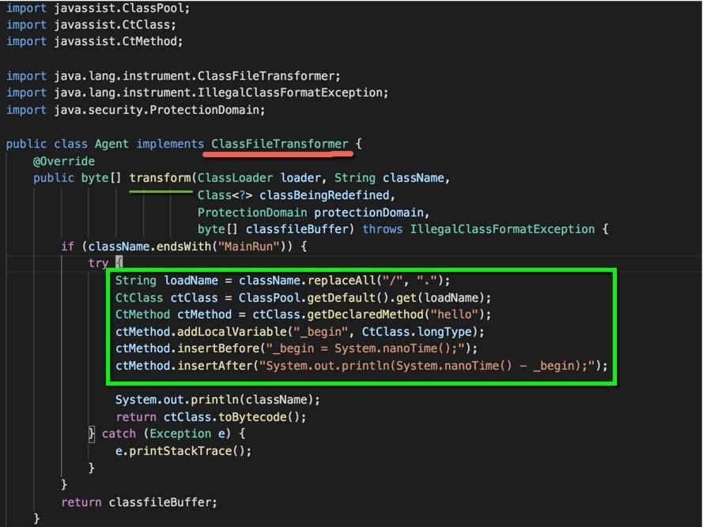
字节码增强也可以使用 Cglib、ASM 等其他工具。
MANIFEST.MF 文件
那么我们编写的代码是如何让外界知晓的呢？那就是依靠 MANIFEST.MF 文件，具体路径在
src/main/resources/META-INF/MANIFEST.MF：
Manifest-Version: 1.0
premain-class: com.sayhiai.example.javaagent.AgentApp
一般的，maven 打包会覆盖这个文件，所以我们需要为它指定一个。
<build><plugins><plugin>
<groupId>org.apache.maven.plugins</groupId>
<artifactId>maven-jar-plugin</artifactId>
<configuration>
<archive>
<manifestFile>src/main/resources/META-INF/MANIFEST.MF</manifestFile>
</archive>
</configuration></plugin></plugins></build>
然后，在命令行，执行 mvn install 安装到本地代码库，或者使用 mvn deploy 发布到私服上。
附 MANIFEST.MF 参数清单：
Premain-Class
Agent-Class
Boot-Class-Path
Can-Redefine-Classes
Can-Retransform-Classes
Can-Set-Native-Method-Prefix
使用
使用方式取决于你使用的 premain 还是 agentmain，它们之间有一些区别，具体如下。
premain
在我们的例子中，直接在启动命令行中加入参数即可，在 jvm 启动时启用代理。
java -javaagent:agent.jar MainRun
在 IDEA 中，可以将参数附着在 jvm options 里。

接下来看一下测试代码。

这是我们的执行类，执行后，直接输出 hello world。通过增强以后，还额外的输出了执行时间，以及一些 debug 信息。其中，debug 信息在 main 方法执行之前输出。
agentmain
这种模式一般用在一些诊断工具上。使用 jdk/lib/tools.jar 中的工具类，可以动态的为运行中的程序加入一些功能。它的主要运行步骤如下：
- 获取机器上运行的所有 JVM 进程 ID；
- 选择要诊断的 jvm；
- 将 jvm 使用 attach 函数链接上；
- 使用 loadAgent 函数加载 agent，动态修改字节码；
- 卸载 jvm。
代码样例如下：
import com.sun.tools.attach.VirtualMachine;
import com.sun.tools.attach.VirtualMachineDescriptor;
import java.util.List;
public class JvmAttach {
public static void main(String[] args)
throws Exception {
List<VirtualMachineDescriptor> list = VirtualMachine.list();
for (VirtualMachineDescriptor vmd : list) {
if (vmd.displayName().endsWith("MainRun")) {
VirtualMachine virtualMachine = VirtualMachine.attach(vmd.id());
virtualMachine.loadAgent("test.jar ", "...");
//.....
virtualMachine.detach();
}
}
}
这些代码功能虽然强大，但都是比较危险的，这就是为什么 Btrace 说了这么多年，还是只在小范围内被小心的使用。相对来说，Arthas 显的友好而且安全的多。
使用注意点
（1）jar 包依赖方式
一般，Agent 的 jar 包会以 fatjar 的方式提供，即将所有的依赖打包到一个大的 jar 包中。如果你的功能复杂、依赖多，那么这个 jar 包将会特别的大。
使用独立的 bom 文件维护这些依赖是另外一种方法。使用方自行管理依赖问题，但这通常会发生一些找不到 jar 包的错误，更糟糕的是，大多数在运行时才发现。
（2）类名称重复
不要使用和 jdk 及 instrument 包中相同的类名（包括包名），有时候你能够侥幸过关，但也会陷入无法控制的异常中。
（3）做有限的功能
可以看到，给系统动态的增加功能是非常酷的，但大多数情况下非常耗费性能。你会发现，一些简单的诊断工具，会占用你 1 核的 CPU，这是很平常的事情。
（4）ClassLoader
如果你用的 JVM 比较旧，频繁地生成大量的代理类，会造成元空间的膨胀，容易发生内存占用问题。
ClassLoader 有双亲委派机制，如果你想要替换相应的类，一定要搞清楚它的类加载器应该用哪个，否则替换的类，是不生效的。
具体的调试方法，可以在 Java 进程启动时，加入 -verbose:class 参数，用来监视引用程序对类的加载。
Arthas
我们来回顾一下在故障排查时所做的一些准备和工具支持。
在第 09 课时，我们了解了 jstat 工具，还有 jmap 等查看内存状态的工具；第 11 课时，介绍了超过 20 个工具的使用，这需要开发和分析的人员具有较高的水平；第 15 课时，还介绍了 jstack 的一些典型状态。对于这种瞬时态问题的分析，需要综合很多工具，对刚进入这个行业的人来说，很不友好。
Arthas 就是使用 Java Agent 技术编写的一个工具，具体采用的方式，就是我们上面提到的 attach 方式，它会无侵入的 attach 到具体的执行进程上，方便进行问题分析。
你甚至可以像 debug 本地的 Java 代码一样，观测到方法执行的参数值，甚至做一些统计分析。这通常可以解决下面的问题：
- 哪个线程使用了最多的 CPU
- 运行中是否有死锁，是否有阻塞
- 如何监测一个方法哪里耗时最高
- 追加打印一些 debug 信息
- 监测 JVM 的实时运行状态
但无论工具如何强大，一些基础知识是需要牢固掌握的，否则，工具中出现的那些术语，也会让人一头雾水。
工具常变，但基础更加重要。如果你想要一个适应性更强的技术栈，还是要多花点时间在原始的排查方法上。
小结
本课时介绍了开发人员极少接触的 Java Agent 技术，但在平常的工作中你可能不知不觉就用到它了。在平常的面试中，一些面试官也会经常问一些相关的问题，以此来判断你对整个 Java 体系的掌握程度，如果你能回答上来，说明你已经脱颖而出了。
值得注意的是，这个知识点，对于做基础架构（比如中间件研发）的人来说，是必备技能，如果不了解，那面试可能就要凉了。
从实用角度来说，阿里开源的 Arthas 工具，是非常好用的，如果你有线上的运维权限，不妨尝试一下。
23 动手实践：JIT 参数配置如何影响程序运行？
本课时我们主要分享一个实践案例，JIT 参数配置是如何影响程序运行的。
我们在前面的课时中介绍了很多字节码指令，这也是 Java 能够跨平台的保证。程序在运行的时候，这些指令会按照顺序解释执行，但是，这种解释执行的方式是非常低效的，它需要把字节码先翻译成机器码，才能往下执行。另外，字节码是 Java 编译器做的一次初级优化，许多代码可以满足语法分析，但还有很大的优化空间。
所以，为了提高热点代码的执行效率，在运行时，虚拟机将会把这些代码编译成与本地平台相关的机器码，并进行各种层次的优化。完成这个任务的编译器，就称为即时编译器（Just In Time Compiler），简称 JIT 编译器。
热点代码，就是那些被频繁调用的代码，比如调用次数很高或者在 for 循环里的那些代码。这些再次编译后的机器码会被缓存起来，以备下次使用，但对于那些执行次数很少的代码来说，这种编译动作就纯属浪费。
在第 14 课时我们提到了参数“-XX:ReservedCodeCacheSize”，用来限制 CodeCache 的大小。也就是说，JIT 编译后的代码都会放在 CodeCache 里。
如果这个空间不足，JIT 就无法继续编译，编译执行会变成解释执行，性能会降低一个数量级。同时，JIT 编译器会一直尝试去优化代码，从而造成了 CPU 占用上升。

JITWatch
在开始之前，我们首先介绍一个观察 JIT 执行过程的图形化工具：JITWatch，这个工具非常好用，可以解析 JIT 的日志并友好地展示出来。项目地址请点击这里查看。
下载之后，进入解压目录，执行 ant 即可编译出执行文件。
产生 JIT 日志
我们观察下面的一段代码，这段代码没有什么意义，而且写得很烂。在 test 函数中循环 cal 函数 1 千万次，在 cal 函数中，还有一些冗余的上锁操作和赋值操作，这些操作在解释执行的时候，会加重 JVM 的负担。
public class JITDemo {
Integer a = 1000;
public void setA(Integer a) {
this.a = a; }
public Integer getA() {
return this.a;
}
public Integer cal(int num) {
synchronized (new Object()) {
Integer a = getA();
int b = a * 10;
b = a * 100;
return b + num;
}
}
public int test() {
synchronized (new Object()) {
int total = 0;
int count = 100_000_00;
for (int i = 0; i < count; i++) {
total += cal(i);
if (i % 1000 == 0) {
System.out.println(i * 1000);
}
}
return total;
}
}
public static void main(String[] args) {
JITDemo demo = new JITDemo();
int total = demo.test();
在方法执行的时候，我们加上一系列参数，用来打印 JIT 最终生成的机器码，执行命令如下所示：
$JAVA_HOME_13/bin/java -server -XX:+UnlockDiagnosticVMOptions -XX:+TraceClassLoading -XX:+PrintAssembly -XX:+LogCompilation -XX:LogFile=jitdemo.log JITDemo
执行的过程，会输入到 jitdemo.log 文件里，接下来我们分析这个文件。
使用

单击 open log 按钮，打开我们生成的日志文件。

单击 config 按钮，加入要分析的源代码目录和字节码目录。确认后，单击 start 按钮进行分析。
在右侧找到我们的 test 方法，聚焦光标后，将弹出我们要分析的主要界面。

在同一个界面上，我们能够看到源代码、字节码、机器码的对应关系。在右上角，还有 C2/OSR/Level4 这样的字样，可以单击切换。
单击上图中的 Chain 按钮，还会弹出一个依赖链界面，该界面显示了哪些方法已经被编译了、哪些被内联、哪些是通过普通的方法调用运行的。

使用 JITWatch 可以看到，调用了 1 千万次的 for 循环代码，已经被 C2 进行编译了。
编译层次
HotSpot 虚拟机包含多个即时编译器，有 C1、C2 和 Graal，采用的是分层编译的模式。使用 jstack 获得的线程信息，经常能看到它们的身影。
实验性质的 Graal 可以通过追加 JVM 参数进行开启，命令行如下：
$JAVA_HOME_13/bin/java -server -XX:+UnlockDiagnosticVMOptions -XX:+TraceClassLoading
-XX:+PrintAssembly -XX:+LogCompilation -XX:+UnlockExperimentalVMOptions
-XX:+UseJVMCICompiler -XX:LogFile=jitdemo.log JITDemo
不同层次的编译器会产生不一样的效果，机器码也会不同，我们仅看 C1、C2 的一些特点。
JIT 编译方式有两种：一种是编译方法，另一种是编译循环。分层编译将 JVM 的执行状态分为了五个层次：
- 字节码的解释执行；
- 执行不带 profiling 的 C1 代码；
- 执行仅带方法调用次数，以及循环执行次数 profiling 的 C1 代码；
- 执行带所有 profiling 的 C1 代码；
- 执行 C2 代码。
其中，profiling 指的是运行时的程序执行状态数据，比如循环调用的次数、方法调用的次数、分支跳转次数、类型转换次数等。JDK 中的 hprof 工具就是一种 profiler。
在不启用分层编译的情况下，当方法的调用次数和循环回边的次数总和，超过由参数 -XX:CompileThreshold 指定的阈值时，便会触发即时编译；当启用分层编译时，这个参数将会失效，会采用动态调整的方式进行。
常见的优化方法有以下几种：
- 公共子表达式消除
- 数组范围检查消除
- 方法内联
- 逃逸分析
我们重点看一下方法内联和逃逸分析。
方法内联
在第 17 课时里，我们可以看到方法调用的开销是比较大的，尤其是在调用量非常大的情况下。拿简单的 getter/setter 方法来说，这种方法在 Java 代码中大量存在，我们在访问的时候，需要创建相应的栈帧，访问到需要的字段后，再弹出栈帧，恢复原程序的执行。
如果能够把这些对象的访问和操作，纳入到目标方法的调用范围之内，就少了一次方法调用，速度就能得到提升，这就是方法内联的概念。
C2 编译器会在解析字节码的过程中完成方法内联。内联后的代码和调用方法的代码，会组成新的机器码，存放在 CodeCache 区域里。
在 JDK 的源码里，有很多被 @ForceInline 注解的方法，这些方法会在执行的时候被强制进行内联；而被 @DontInline 注解的方法，则始终不会被内联，比如下面的一段代码。
java.lang.ClassLoader 的 getClassLoader 方法将会被强制内联。
@CallerSensitive
@ForceInline // to ensure Reflection.getCallerClass optimization
public ClassLoader getClassLoader() {
ClassLoader cl = getClassLoader0();
if (cl == null)
return null;
SecurityManager sm = System.getSecurityManager();
if (sm != null) {
ClassLoader.checkClassLoaderPermission(cl, Reflection.getCallerClass());
}
return cl;
}
方法内联的过程是非常智能的，内联后的代码，会按照一定规则进行再次优化。最终的机器码，在保证逻辑正确的前提下，可能和我们推理的完全不一样。在非常小的概率下，JIT 会出现 Bug，这时候可以关闭问题方法的内联，或者直接关闭 JIT 的优化，保持解释执行。实际上，这种 Bug 我从来没碰到过。
-XX:CompileCommand=exclude,com/lagou/Test,test
上面的参数，表示 com.lagou.Test 的 test 方法将不会进行 JIT 编译，一直解释执行。
另外，C2 支持的内联层次不超过 9 层，太高的话，CodeCache 区域会被挤爆，这个阈值可以通过 -XX:MaxInlineLevel 进行调整。相似的，编译后的代码超过一定大小也不会再内联，这个参数由 -XX:InlineSmallCode 进行调整。
有非常多的参数，被用来控制对内联方法的选择，整体来说，短小精悍的小方法更容易被优化。
这和我们在日常中的编码要求是一致的：代码块精简，逻辑清晰的代码，更容易获得优化的空间。

我们使用 JITWatch 再看一下对于 getA() 方法的调用，将鼠标悬浮在字节码指令上，可以看到方法已经被内联了。
逃逸分析
逃逸分析（Escape Analysis）是目前 JVM 中比较前沿的优化技术。通过逃逸分析，JVM 能够分析出一个新的对象使用范围，从而决定是否要将这个对象分配到堆上。
使用 -XX:+DoEscapeAnalysis 参数可以开启逃逸分析，逃逸分析现在是 JVM 的默认行为，这个参数可以忽略。
JVM 判断新创建的对象是否逃逸的依据有：
- 对象被赋值给堆中对象的字段和类的静态变量；
- 对象被传进了不确定的代码中去运行。
举个例子，在代码 1 中，虽然 map 是一个局部变量，但是它通过 return 语句返回，其他外部方法可能会使用它，这就是方法逃逸。另外，如果被其他线程引用或者赋值，则成为线程逃逸。
代码 2，用完 Map 之后就直接销毁了，我们就可以说 map 对象没有逃逸。
代码1：
public Map fig(){
Map map = new HashMap();
...
return map;
}
代码2：
public void fig(){
Map map = new HashMap();
...
}
那逃逸分析有什么好处呢？
- 同步省略，如果一个对象被发现只能从一个线程被访问到，那么对于这个对象的操作可以不考虑同步。
- 栈上分配，如果一个对象在子程序中被分配，那么指向该对象的指针永远不会逃逸，对象有可能会被优化为栈分配。
- 分离对象或标量替换，有的对象可能不需要作为一个连续的内存结构存在也可以被访问到，那么对象的部分（或全部）可以不存储在内存，而是存储在 CPU 寄存器中。标量是指无法再分解的数据类型，比如原始数据类型及 reference 类型。

再来看一下 JITWatch 对 synchronized 代码块的分析。根据提示，由于逃逸分析了解到新建的锁对象 Object 并没有逃逸出方法 cal，它将会在栈上直接分配。
查看 C2 编译后的机器码，发现并没有同步代码相关的生成。这是因为 JIT 在分析之后，发现针对 new Object() 这个对象并没有发生线程竞争的情况，则会把这部分的同步直接给优化掉。我们在代码层次做了一些无用功，字节码无法发现它，而 JIT 智能地找到了它并进行了优化。
因此，并不是所有的对象或者数组都会在堆上分配。由于 JIT 的存在，如果发现某些对象没有逃逸出方法，那么就有可能被优化成栈分配。
intrinsic
另外一个不得不提的技术点那就是 intrinsic，这来源于一道面试题：为什么 String 类的 indexOf 方法，比我们使用相同代码实现的方法，执行效率要高得多？
在翻看 JDK 的源码时，能够看到很多地方使用了 HotSpotIntrinsicCandidate 注解。比如 StringBuffer 的 append 方法：
@Override
@HotSpotIntrinsicCandidate
public synchronized StringBuffer append(char c) {
toStringCache = null;
super.append(c);
return this;
}
被 @HotSpotIntrinsicCandidate 标注的方法，在 HotSpot 中都有一套高效的实现，该高效实现基于 CPU 指令，运行时，HotSpot 维护的高效实现会替代 JDK 的源码实现，从而获得更高的效率。
上面的问题中，我们往下跟踪实现，可以发现 StringLatin1 类中的 indexOf 方法，同样适用了 HotSpotIntrinsicCandidate 注解，原因也就在于此。
@HotSpotIntrinsicCandidate
public static int indexOf(byte[] value, byte[] str) {
if (str.length == 0) {
return 0;
}
if (value.length == 0) {
return -1;
}
return indexOf(value, value.length, str, str.length, 0);
}
@HotSpotIntrinsicCandidate
public static int indexOf(byte[] value, int valueCount, byte[] str, int strCount, int fromIndex) {
byte first = str[0];

JDK 中这种方法有接近 400 个，可以在 IDEA 中使用 Find Usages 找到它们。
小结
JIT 是现代 JVM 主要的优化点，能够显著地增加程序的执行效率，从解释执行到最高层次的 C2，一个数量级的性能提升也是有可能的。但即时编译的过程是非常缓慢的，耗时间也费空间，所以这些优化操作会和解释执行同时进行。
一般，方法首先会被解释执行，然后被 3 层的 C1 编译，最后被 4 层的 C2 编译，这个过程也不是一蹴而就的。
常用的优化手段，有公共子表达式消除、数组范围检查消除、方法内联、逃逸分析等。
其中，方法内联通过将短小精悍的代码融入到调用方法的执行逻辑里，来减少方法调用上的开支；逃逸分析通过分析变量的引用范围，对象可能会使用栈上分配的方式来减少 GC 的压力，或者使用标量替换来获取更多的优化。
这个过程的执行细节并不是那么“确定”，在不同的 JVM 中，甚至在不同的 HotSpot 版本中，效果也不尽相同。
使用 JITWatch 工具，能够看到字节码和机器码的对应关系，以及执行过程中的一系列优化操作。若想要了解这个工具的更多功能，可以点击这里参考 wiki。
24 案例分析：大型项目如何进行性能瓶颈调优？
本课时我们主要分享一个实践案例，即大型项目如何进行性能瓶颈调优，这也是对前面所学的知识进行总结。
性能调优是一个比较大且比较模糊的话题。在大型项目中，既有分布式的交互式调优问题，也有纯粹的单机调优问题。由于我们的课程主要讲解 JVM 相关的知识点，重点关注 JVM 的调优、故障或者性能瓶颈方面的问题排查，所以对于分布式应用中的影响因素，这里不过多介绍。
优化层次
下面是我总结的一张关于优化层次的图，箭头表示优化时需考虑的路径，但也不总是这样。当一个系统出现问题的时候，研发一般不会想要立刻优化 JVM，或者优化操作系统，会尝试从最高层次上进行问题的解决：解决最主要的瓶颈点。

数据库优化： 数据库是最容易成为瓶颈的组件，研发会从 SQL 优化或者数据库本身去提高它的性能。如果瓶颈依然存在，则会考虑分库分表将数据打散，如果这样也没能解决问题，则可能会选择缓存组件进行优化。这个过程与本课时相关的知识点，可以使用 jstack 获取阻塞的执行栈，进行辅助分析。
集群最优：存储节点的问题解决后，计算节点也有可能发生问题。一个集群系统如果获得了水平扩容的能力，就会给下层的优化提供非常大的时间空间，这也是弹性扩容的魅力所在。我接触过一个服务，由最初的 3 个节点，扩容到最后的 200 多个节点，但由于人力问题，服务又没有什么新的需求，下层的优化就一直被搁置着。
硬件升级：水平扩容不总是有效的，原因在于单节点的计算量比较集中，或者 JVM 对内存的使用超出了宿主机的承载范围。在动手进行代码优化之前，我们会对节点的硬件配置进行升级。升级容易，降级难，降级需要依赖代码和调优层面的优化。
代码优化：出于成本的考虑，上面的这些问题，研发团队并不总是坐视不管。代码优化是提高性能最有效的方式，但需要收集一些数据，这个过程可能是服务治理，也有可能是代码流程优化。我在第 21 课时介绍的 JavaAgent 技术，会无侵入的收集一些 profile 信息，供我们进行决策。像 Sonar 这种质量监控工具，也可以在此过程中帮助到我们。
并行优化：并行优化的对象是这样一种接口，它占用的资源不多，计算量也不大，就是速度太慢。所以我们通常使用 ContDownLatch 对需要获取的数据进行并行处理，效果非常不错，比如在 200ms 内返回对 50 个耗时 100ms 的下层接口的调用。
JVM 优化：虽然对 JVM 进行优化，有时候会获得巨大的性能提升，但在 JVM 不发生问题时，我们一般不会想到它。原因就在于，相较于上面 5 层所达到的效果来说，它的优化效果有限。但在代码优化、并行优化、JVM 优化的过程中，JVM 的知识却起到了关键性的作用，是一些根本性的影响因素。
操作系统优化：操作系统优化是解决问题的杀手锏，比如像 HugePage、Luma、“CPU 亲和性”这种比较底层的优化。但就计算节点来说，对操作系统进行优化并不是很常见。运维在背后会做一些诸如文件句柄的调整、网络参数的修改，这对于我们来说就已经够用了。
虽然本课程是针对比较底层的 JVM，但我还是想谈一下一个研发对技术体系的整体演进方向。
首先，掌握了比较底层、基础的东西后，在了解一些比较高层的设计时，就能花更少的时间，这方面的知识有：操作系统、网络、多线程、编译原理，以及一门感兴趣的开发语言。对 Java 体系来说，毫无疑问就是 Java 语言和 JVM。
其次，知识体系还要看实用性，比如你熟知编译原理，虽然 JIT 很容易入门，但如果不做相关的开发，这并没有什么实际作用。
最后，现代分布式系统在技术上总是一个权衡的结果（比如 CAP）。在分析一些知识点和面试题的时候，也要看一下哪些是权衡的结果，哪些务必是准确的。整体上达到次优，局部上达到最优，就是我们要追寻的结果。
代码优化、JVM 的调优，以及单机的故障排查，就是一种局部上的寻优过程，也是一个合格的程序员必须要掌握的技能。
JVM 调优
由于 JVM 一直处在变化之中，所以一些参数的配置并不总是有效的，有时候你加入一个参数，“感觉上”运行速度加快了，但通过
-XX:+PrintFlagsFinal 来查看，却发现这个参数默认就是这样，比如第 10 课时提到的 UseAdaptiveSizePolicy。所以，在不同的 JVM 版本上，不同的垃圾回收器上，要先看一下这个参数默认是什么，不要轻信他人的建议。
java -XX:+PrintFlagsFinal -XX:+UseG1GC 2>&1 | grep UseAdaptiveSizePolicy
内存区域大小
首先要调整的，就是各个分区的大小，不过这也要分垃圾回收器，我们来看一些全局参数及含义。
- -XX:+UseG1GC：用于指定 JVM 使用的垃圾回收器为 G1，尽量不要靠默认值去保证，要显式的指定一个。
- -Xmx：设置堆的最大值，一般为操作系统的 2/3 大小。
- -Xms：设置堆的初始值，一般设置成和 Xmx 一样的大小来避免动态扩容。
- -Xmn：表示年轻代的大小，默认新生代占堆大小的 1/3。高并发、对象快消亡场景可适当加大这个区域，对半，或者更多，都是可以的。但是在 G1 下，就不用再设置这个值了，它会自动调整。
- -XX:MaxMetaspaceSize：用于限制元空间的大小，一般 256M 足够了，这一般和初始大小 -XX:MetaspaceSize 设置成一样的。
- -XX:MaxDirectMemorySize：用于设置直接内存的最大值，限制通过 DirectByteBuffer 申请的内存。
- -XX:ReservedCodeCacheSize：用于设置 JIT 编译后的代码存放区大小，如果观察到这个值有限制，可以适当调大，一般够用即可。
- -Xss：用于设置栈的大小，默认为 1M，已经足够用了。
内存调优
- -XX:+AlwaysPreTouch：表示在启动时就把参数里指定的内存全部初始化，启动时间会慢一些，但运行速度会增加。
- -XX:SurvivorRatio：默认值为 8，表示伊甸区和幸存区的比例。
- -XX:MaxTenuringThreshold：这个值在 CMS 下默认为 6，G1 下默认为 15，这个值和我们前面提到的对象提升有关，改动效果会比较明显。对象的年龄分布可以使用 -XX:+PrintTenuringDistribution 打印，如果后面几代的大小总是差不多，证明过了某个年龄后的对象总能晋升到老生代，就可以把晋升阈值设小。
- PretenureSizeThreshold：表示超过一定大小的对象，将直接在老年代分配，不过这个参数用的不是很多。
其他容量的相关参数可以参考其他课时，但不建议随便更改。
垃圾回收器优化
接下来看一下主要的垃圾回收器。
CMS 垃圾回收器
- -XX:+UseCMSInitiatingOccupancyOnly：这个参数需要加上 **-**XX:CMSInitiatingOccupancyFraction，注意后者需要和前者一块配合才能完成工作，它们指定了 MajorGC 的发生时机。
- -XX:ExplicitGCInvokesConcurrent：当代码里显示调用了 System.gc()，实际上是想让回收器进行 FullGC，如果发生这种情况，则使用这个参数开始并行 FullGC，建议加上这个参数。
- -XX:CMSFullGCsBeforeCompaction：这个参数的默认值为 0，代表每次 FullGC 都对老生代进行碎片整理压缩，建议保持默认。
- -XX:CMSScavengeBeforeRemark：表示开启或关闭在 CMS 重新标记阶段之前的清除（YGC）尝试，它可以降低 remark 时间，建议加上。
- -XX:+ParallelRefProcEnabled：可以用来并行处理 Reference，以加快处理速度，缩短耗时，具体用法见第 15 课时。
G1 垃圾回收器
- -XX:MaxGCPauseMillis：用于设置目标停顿时间，G1 会尽力达成。
- -XX:G1HeapRegionSize：用于设置小堆区大小，这个值为 2 的次幂，不要太大，也不要太小，如果实在不知道如何设置，建议保持默认。
- -XX:InitiatingHeapOccupancyPercent：表示当整个堆内存使用达到一定比例（默认是 45%），并发标记阶段 就会被启动。
- -XX:ConcGCThreads：表示并发垃圾收集器使用的线程数量，默认值随 JVM 运行的平台不同而变动，不建议修改。
其他参数优化
- -XX:AutoBoxCacheMax：用于加大 IntegerCache，具体原因可参考第 20 课时。
- -Djava.security.egd=file:/dev/./urandom：这个参数使用 urandom 随机生成器，在进行随机数获取时，速度会更快。
- -XX:-OmitStackTraceInFastThrow：用于减少异常栈的输出，并进行合并。虽然会对调试有一定的困扰，但能在发生异常时显著增加性能。
存疑优化
- **-XX:-UseBiasedLocking：**用于取消偏向锁（第 19 课时），理论上在高并发下会增加效率，这个需要实际进行观察，在无法判断的情况下，不需要配置。
- **JIT 参数：**这是我们在第 22 课时多次提到的 JIT 编译参数，这部分最好不要乱改，会产生意想不到的问题。
GC 日志
这部分我们在第 9 课时进行了详细的介绍，在此不再重复。
下面来看一个在 G1 垃圾回收器运行的 JVM 启动命令。
java \
-XX:+UseG1GC \
-XX:MaxGCPauseMillis=100 \
-XX:InitiatingHeapOccupancyPercent=45 \
-XX:G1HeapRegionSize=16m \
-XX:+ParallelRefProcEnabled \
-XX:MaxTenuringThreshold=3 \
-XX:+AlwaysPreTouch \
-Xmx5440M \
-Xms5440M \
-XX:MaxMetaspaceSize=256M \
-XX:MetaspaceSize=256M \
-XX:MaxDirectMemorySize=100M \
-XX:ReservedCodeCacheSize=268435456 \
-XX:-OmitStackTraceInFastThrow \
-Djava.security.egd=file:/dev/./urandom \
-verbose:gc \
-XX:+PrintGCDetails \
-XX:+PrintGCDateStamps \
-XX:+PrintGCApplicationStoppedTime \
-XX:+PrintGCApplicationConcurrentTime \
-XX:+PrintTenuringDistribution \
-XX:+PrintClassHistogramBeforeFullGC \
-XX:+PrintClassHistogramAfterFullGC \
-Xloggc:/tmp/logs/gc_%p.log \
-XX:+HeapDumpOnOutOfMemoryError \
-XX:HeapDumpPath=/tmp/logs \
-XX:ErrorFile=/tmp/logs/hs_error_pid%p.log \
-Djava.rmi.server.hostname=127.0.0.1 \
-Dcom.sun.management.jmxremote \
-Dcom.sun.management.jmxremote.port=14000 \
-Dcom.sun.management.jmxremote.ssl=false \
-Dcom.sun.management.jmxremote.authenticate=false \
-javaagent:/opt/test.jar \
MainRun
故障排查
有需求才需要优化，不要为了优化而优化。一般来说，上面提到的这些 JVM 参数，基本能够保证我们的应用安全，如果想要更进一步、更专业的性能提升，就没有什么通用的法则了。
打印详细的 GCLog，能够帮助我们了解到底是在哪一步骤发生了问题，然后才能对症下药。使用 gceasy.io 这样的线上工具，能够方便的分析到结果，但一些偏门的 JVM 参数修改，还是需要进行详细的验证。
一次或者多次模拟性的压力测试是必要的，能够让我们提前发现这些优化点。
我们花了非常大的篇幅，来讲解 JVM 中故障排查的问题，这也是和我们工作中联系最紧密的话题。
JVM 故障会涉及到内存问题和计算问题，其中内存问题占多数。除了程序计数器，JVM 内存里划分每一个区域，都有溢出的可能，最常见的就是堆溢出。使用 jmap 可以 dump 一份内存，然后使用 MAT 工具进行具体原因的分析。
对堆外内存的排查需要较高的技术水平，我们在第 13 课时进行了详细的讲解。当你发现进程占用的内存资源比使用 Xmx 设置得要多，那么不要忘了这一环。
使用 jstack 可以获取 JVM 的执行栈，并且能够看到线程的一些阻塞状态，这部分可以使用 arthas 进行瞬时态的获取，定位到瞬时故障。另外，一个完善的监控系统能够帮我们快速定位问题，包括操作系统的监控、JVM 的监控等。
代码、JVM 优化和故障排查是一个持续优化的过程，只有更优、没有最优。如何在有限的项目时间内，最高效的完成工作，才是我们所需要的。
小结
本课时对前面的课程内容做了个简单的总结，从 7 个层面的优化出发，简要的谈了一下可能的优化过程，然后详细地介绍了一些常见的优化参数。
JVM 的优化效果是有限的，但它是理论的基础，代码优化和参数优化都需要它的指导。同时，有非常多的工具能够帮我们定位到问题。
偏门的优化参数可能有效，但不总是有效。实际上，从 CMS 到 G1，再到 ZGC，关于 GC 优化的配置参数也越来越少，但协助排查问题的工具却越来越多。在大多数场景下，JVM 已经能够达到开箱即用的高性能效果，这也是一个虚拟机所追求的最终目标。
25 未来：JVM 的历史与展望
本课时我们主要讲解 JVM 的历史与展望。
我们都知道，Java 目前被 Oracle 控制，它是从 Sun 公司手中收购的，HotSpot 最初也并非由 Sun 公司开发，是由一家名为 Longview Technologies 的小公司设计的，而且这款虚拟机一开始也不是为 Java 语言开发的。
当时的 HotSpot，非常优秀，尤其是在 JIT 编译技术上，有一些超前的理念，于是 Sun 公司在 1997 年收购了 Longview Technologies，揽美人入怀。
Sun 公司是一家对技术非常专情的公司，他们对 Java 语言进行了发扬光大，尤其是在 JVM 上，做了一些非常大胆的尝试和改进。
9 年后，Sun 公司在 2006 年的 JavaOne 大会上，将 Java 语言开源，并在 GPL 协议下公开源码，在此基础上建立了 OpenJDK。你应该听说过，GPL 协议的限制，是比较宽松的，这极大的促进了 Java 的发展，同时推动了 JVM 的发展。
Sun 是一家非常有技术情怀的公司，最高市值曾超过 2000 亿美元。但是，最后却以 74 亿美元的价格被 Oracle 收购了，让人感叹不已。
2010 年，HotSpot 进入了 Oracle 时代，这也是现在为什么要到 Oracle 官网上下载 J2SE 的原因。
幸运的是，我们有 OpenJDK 这个凝聚了众多开源开发者心血的分支。从目前的情况来看，OpenJDK 与 Oracle 版本之间的差别越来越小，甚至一些超前的实验性特性，也会在 OpenJDK 上进行开发。
对于我们使用者来说，这个差别并不大，因为 JVM 已经屏蔽了操作系统上的差异，而我们打交道的，是上层的 JRE 和 JDK。
其他虚拟机
由于 JVM 就是个规范，所以实现的方法也很多，完整的列表请点击这里查看。
JVM 的版本非常之多，比较牛的公司都搞了自己的 JVM，但当时谁也没想到，话语权竟会到了 Oracle 手里。下面举几个典型的例子。
J9 VM
我在早些年工作的时候，有钱的公司喜欢买大型机，比如会买 WebLogic、WebSphere 等服务器。对于你现在已经用惯了 Tomcat、Undertow 这些轻量级的 Web 服务器来说，这是一些很古老的名词了。
WebSphere 就是这样一个以“巨无霸”的形式存在，当年的中间件指的就是它，和现在的中间件完全不是一个概念。
WebSphere 是 IBM 的产品，开发语言是 Java。但是它运行时的 JVM，却是一个叫做 J9 的虚拟机，依稀记得当年，有非常多的 jar 包，由于引用了一些非常偏门的 API，却不能运行（现在应该好了很多）。
Zing VM
Zing JVM 是 Azul 公司传统风格的产品，它在 HotSpot 上做了不少的定制及优化，主打低延迟、高实时服务器端 JDK 市场。它代表了一类商业化的定制，比如 JRockit，都比较贵。
IKVM
这个以前在写一些游戏的时候，使用过 LibGDX，相当于使用了 Java，最后却能跑在 .net 环境上，使用的方式是 IKVM 。它包含了一个使用 .net 语言实现的 Java 虚拟机，配合 Mono 能够完成 Java 和 .net 的交互，让人认识到语言之间的鸿沟是那么的渺小。
Dalvik
Android 的 JVM，就是让 Google 吃官司的那个，从现在 Android 的流行度上也能看出来，Dalvik 优化的很好。
历史
下面我简单讲讲 Java 的发展历史：
- 1995 年 5 月 23 日，Sun 公司正式发布了 Java 语言和 HotJava 浏览器；
- 1996 年 1 月，Sun 公司发布了 Java 的第一个开发工具包（JDK 1.0）；
- 1996 年 4 月，10 个最主要的操作系统供应商申明将在其产品中嵌入 Java 技术，发展可真是迅雷不及掩耳；
- 1996 年 9 月，约 8.3 万个网页应用了 Java 技术来制作，这就是早年的互联网，即 Java Applet，真香；
- 1996 年 10 月，Sun 公司发布了 Java 平台第一个即时编译器（JIT），这一年很不平凡；
- 1997 年 2 月 18 日，JDK 1.1 面世，在随后的三周时间里，达到了 22 万次的下载量，PHP 甘拜下风；
- 1999 年 6 月，Sun 公司发布了第二代 Java 三大版本，即 J2SE、J2ME、J2EE，随之 Java2 版本发布；
- 2000 年 5 月 8 日，JDK 1.3 发布，四年升三版，不算过分哈；
- 2000 年 5 月 29 日，JDK 1.4 发布，获得 Apple 公司 Mac OS 的工业标准支持；
- 2001 年 9 月 24 日，Java EE 1.3 发布，注意是 EE，从此开始臃肿无比；
- 2002 年 2 月 26 日，J2SE 1.4 发布，自此 Java 的计算能力有了大幅度的提升，与 J2SE 1.3 相比，多了近 62% 的类与接口；
- 2004 年 9 月 30 日 18:00PM，J2SE 1.5 发布，1.5 正式更名为 Java SE 5.0；
- 2005 年 6 月，在 JavaOne 大会上，Sun 公司发布了 Java SE 6；
- 2009 年 4 月 20 日，Oracle 宣布收购 Sun，该交易的总价值约为 74 亿美元；
- 2010 年 Java 编程语言的创始人 James Gosling 从 Oracle 公司辞职，一朝天子一朝臣，国外也不例外；
- 2011 年 7 月 28 日，Oracle 公司终于发布了 Java 7，这次版本升级经过了将近 5 年时间；
- 2014 年 3 月 18 日，Oracle 公司发布了 Java 8，这次版本升级为 Java 带来了全新的 Lambda 表达式。
小碎步越来越快，担心很快 2 位数都装不下 Java 的版本号了。目前 Java 的版本已经更新到 14 了，但市场主流使用的还是 JDK 8 版本。
最近更新
有些我们现在认为理所当然的功能，在 Java 的早期版本是没有的。我们从 Java 7 说起，以下内容仅供参考，详细列表见 openjdk JEP 列表。
Java 7
Java 7 增加了以下新特性：
- try、catch 能够捕获多个异常
- 新增 try-with-resources 语法
- JSR341 脚本语言新规范
- JSR203 更多的 NIO 相关函数
- JSR292，第 17 课时提到的 InvokeDynamic
- 支持 JDBC 4.1 规范
- 文件操作的 Path 接口、DirectoryStream、Files、WatchService
- jcmd 命令
- 多线程 fork/join 框架
- Java Mission Control
Java 8
Java 8 也是一个重要的版本，在语法层面上有更大的改动，支持 Lamda 表达式，影响堪比 Java 5 的泛型支持：
- 支持 Lamda 表达式
- 支持集合的 stream 操作
- 提升了 HashMaps 的性能（红黑树）
- 提供了一系列线程安全的日期处理类
- 完全去掉了 Perm 区
Java 9
Java 9 增加了以下新特性：
- JSR376 Java 平台模块系统
- JEP261 模块系统
- jlink 精简 JDK 大小
- G1 成为默认垃圾回收器
- CMS 垃圾回收器进入废弃倒计时
- GC Log 参数完全改变，且不兼容
- JEP110 支持 HTTP2，同时改进 HttpClient 的 API，支持异步模式
- jshell 支持类似于 Python 的交互式模式
Java 10
Java 10 增加了以下新特性：
- JEP304 垃圾回收器接口代码进行整改
- JEP307 G1 在 FullGC 时采用并行收集方式
- JEP313 移除 javah 命令
- JEP317 重磅 JIT 编译器 Graal 进入实验阶段
Java 11
Java 11 增加了以下新特性：
- JEP318 引入了 Epsilon 垃圾回收器，这个回收器什么都不干，适合短期任务
- JEP320 移除了 JavaEE 和 CORBA Modules，应该要走轻量级路线
- Flight Recorder 功能，类似 JMC 工具里的功能
- JEP321 内置 httpclient 功能，java.net.http 包
- JEP323 允许 lambda 表达式使用 var 变量
- 废弃了 -XX+AggressiveOpts 选项
- 引入了 ZGC，依然是实验性质
Java 12
Java 12 增加了以下新特性：
- JEP189 先加入 ShenandoahGC
- JEP325 switch 可以使用表达式
- JEP344 优化 G1 达成预定目标
- 优化 ZGC
Java 13
Java 13 增加了以下新特性：
- JEP354 yield 替代 break
- JEP355 加入了 Text Blocks，类似 Python 的多行文本
- ZGC 的最大 heap 大小增大到 16TB
- 废弃 rmic Tool 并准备移除
Java 14
Java 14 增加了以下新特性：
- JEP343 打包工具引入
- JEP345 实现了 NUMA-aware 的内存分配，以提升 G1 在大型机器上的性能
- JEP359 引入了 preview 版本的 record 类型，可用于替换 lombok 的部分功能
- JEP364 之前的 ZGC 只能在 Linux 上使用，现在 Mac 和 Windows 上也能使用 ZGC 了
- JEP363 正式移除 CMS，我们课程里提到的一些优化参数，在 14 版本普及之后，将不复存在
OpenJDK 64-Bit Server VM warning: Ignoring option UseConcMarkSweepGC; support was removed in 14.0
现状
先看一下 2019 年 JVM 生态系统报告部分图示，部分图示参考了 snyk 这个网站。
生产环境中，主要用哪些 JDK
可以看到 OracleJDK 和 OpenJDK 几乎统治了江湖，如果没有 IBM 那些捆绑销售的产品，份额只会更高。另外，使用 OpenJDK 的越来越多，差异也越来越小，在公有云、私有云等方面的竞争格局，深刻影响着在 OpenJDK 上的竞争格局；OpenJDK 很有可能被认为是一种退⽽求其次的选择。
生产环境中，用哪个版本的 Java
以 8 版本为主，当然还有 6 版本以下的，尝鲜的并不是很多，因为服务器环境的稳定性最重要。新版本升级在中国的宣传还是不够，如果很多企业看不到技术升级的红利，势必也会影响升级的积极性。
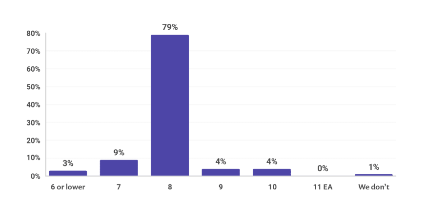
应用程序的主要 JVM 语言是什么
很多人反应 Kotlin 非常好用，我尝试着推广了一下，被喜欢 Groovy 的朋友鄙视了一番，目前还是以 Java 居多。
展望
有点规模的互联网公司，行事都会有些谨慎，虽然 JVM 做到了向下版本的兼容，但是有些性能问题还是不容忽视，尝鲜吃螃蟹的并不是很多。
现在用的最多的，就是 Java 8 版本。如果你的服务器用的这个，那么用的最多的垃圾回收器就是 CMS，或者 G1。随着 ZGC 越来越稳定，CMS 终将会成为过去式。
目前，最先进的垃圾回收器，叫做 ZGC，它有 3 个 flag：
- 支持 TB 级堆内存（最大 4T）
- 最大 GC 停顿 10ms
- 对吞吐量影响最大，不超过 15%
每一个版本的发布，Java 都会对以下进行改进：
- 优化垃圾回收器，减少停顿，提高吞吐
- 语言语法层面的升级，这部分在最近的版本里最为明显
- 结构调整，减少运行环境的大小，模块化
- 废弃掉一些承诺要废弃的模块
那么 JVM 将向何处发展呢？以目前来看，比较先进的技术，就是刚才提到的垃圾回收阶段的 ZGC ，能够显著的减少 STW 的问题；另外， GraalVM 是 Oracle 创建的一个研究项目，目标是完全替换 HotSpot，它是一个高性能的 JIT 编译器，接受 JVM 字节码，并生成机器代码。未来，会有更多的开发语言运行在 JVM 上，比如 Python、Ruby 等。
Poject Loom 致力于在 JVM 层面，给予 Java 协程 （fibers）的功能，Java 程序的并发性能会上一个档次。
Java 版本大部分是向下兼容的，能够做到这个兼容，是非常不容易的。但 Java 的特性越加越多，如果开发人员不能进行平滑的升级，会是一个非常严重的问题，JVM 也将会在这里花费非常大的精力。
那 JVM 将聚焦在哪些方面呢？又有哪些挑战？我大体总结了几点：
- **内存管理依然是非常大的挑战，**未来会有更厉害的垃圾回收器来支持更大的堆空间
- **多线程和协程，**未来会加大对多核的利用，以及对轻量级线程的支持
- **性能，**增加整个 JVM 的执行效率，这通常是多个模块协作的结果
- **对象管理和追踪，**复杂的对象，有着复杂的生命周期，加上难以预料的内存申请方式，需要更精准的管理优化
- **可预测性及易用性，**更少的优化参数，更高的性能
- **更多 JVM 监控工具，**提供对 JVM 全方面的监控，跟踪对象，在线优化
- **多语言支持，**支持除了 Java 语言之外的其他开发语言，能够运行在 JVM 上
总结
Java 9 之后，已经进入了快速发布阶段，大约每半年发布一次，Java 8 和 Java 11 是目前支持的 LTS 版本，它的功能变动也越来越多、越来越快。让我们把握好 Java 发展的脉搏，一起加油吧。
26 福利：常见 JVM 面试题补充
最后一课时我们来分析常见的 JVM 面试题。
市面上关于 JVM 的面试题实在太多了，本课程中的第 02 ~ 06 课时是理论面试题的重灾区，并且是比较深入的题目，而本课时则选取了一些基础且常见的题目。
有些面试题是开放性的，而有些面试题是知识性的，要注意区别。面试题并没有标准答案，尤其是开放性题目，你需要整理成白话文，来尽量的展示自己。如果你在回答的过程中描述了一些自己不是很熟悉的内容，可能会受到追问。所以，根据问题，建议整理一份适合自己的答案，这比拿来主义更让人印象深刻。
勘误
我们来回忆一下课程中曾讲解过的容易出错或模糊的知识点。
不知你是否还记得？我们在每一课时的讲解中，都有聚焦的点，不同的问法可能会有不同的回答，要注意。
对象在哪里分配？
在第 02 课时中，谈到了数组和对象是堆上分配，当学完第 22 课时的逃逸分析后，我们了解到并不完全是这样的。由于 JIT 的存在，如果发现某些对象没有逃逸出方法，那么就有可能被优化成了栈上分配。
CMS 是老年代垃圾回收器？
初步印象是，但实际上不是。根据 CMS 的各个收集过程，它其实是一个涉及年轻代和老年代的综合性垃圾回收器。在很多文章和书籍的划分中，都将 CMS 划分为了老年代垃圾回收器，加上它主要作用于老年代，所以一般误认为是。
常量池问题
常量池的表述有些模糊，在此细化一下，注意我们指的是 Java 7 版本之后。
JVM 中有多个常量池：
- 字符串常量池，存放在堆上，也就是执行 intern 方法后存的地方，class 文件的静态常量池，如果是字符串，则也会被装到字符串常量池中。
- 运行时常量池，存放在方法区，属于元空间，是类加载后的一些存储区域，大多数是类中 constant_pool 的内容。
- 类文件常量池，也就是 constant_pool，这个是概念性的，并没有什么实际存储区域。
在平常的交流过程中，聊的最多的是字符串常量池，具体可参考官网。
ZGC 支持的堆上限？
Java 13 增加到 16TB，Java 11 还是 4 TB，技术在发展，请保持关注。
年轻代提升阈值动态计算的描述
在第 06 课时中对于年轻代“动态对象年龄判定”的表述是错误的。
参考代码 share/gc/shared/ageTable.cpp 中的 compute_tenuring_threshold 函数，重新表述为：程序从年龄最小的对象开始累加，如果累加的对象大小，大于幸存区的一半，则将当前的对象 age 作为新的阈值，年龄大于此阈值的对象则直接进入老年代。
这里说的一半，是通过 TargetSurvivorRatio 参数进行设置的。
永久代
虽然课程一直在强调，是基于 Java 8+ 版本进行讲解的，但还是有读者提到了永久代。这部分知识容易发生混淆，面试频率也很高，建议集中消化一下。
上面是第 02 课时中的一张图，注意左半部分是 Java 8 版本之前的内存区域，右半部分是 Java 8 的内存区域，主要区别就在 Perm 区和 Metaspace 区。
Perm 区属于堆，独立控制大小，在 Java 8 中被移除了（JEP122），原来的方法区就在这里；Metaspace 是非堆，默认空间无上限，方法区移动到了这里。
常见面试题
JVM 有哪些内存区域？（JVM 的内存布局是什么？）
JVM 包含堆、元空间、Java 虚拟机栈、本地方法栈、程序计数器等内存区域，其中，堆是占用内存最大的一块，如下图所示。
Java 的内存模型是什么？（JMM 是什么？）
JVM 试图定义一种统一的内存模型，能将各种底层硬件以及操作系统的内存访问差异进行封装，使 Java 程序在不同硬件以及操作系统上都能达到相同的并发效果。它分为工作内存和主内存，线程无法对主存储器直接进行操作，如果一个线程要和另外一个线程通信，那么只能通过主存进行交换，如下图所示。
JVM 垃圾回收时如何确定垃圾？什么是 GC Roots？
JVM 采用的是可达性分析算法。JVM 是通过 GC Roots 来判定对象存活的，从 GC Roots 向下追溯、搜索，会产生一个叫做 Reference Chain 的链条。当一个对象不能和任何一个 GC Root 产生关系时，就判定为垃圾，如下图所示。
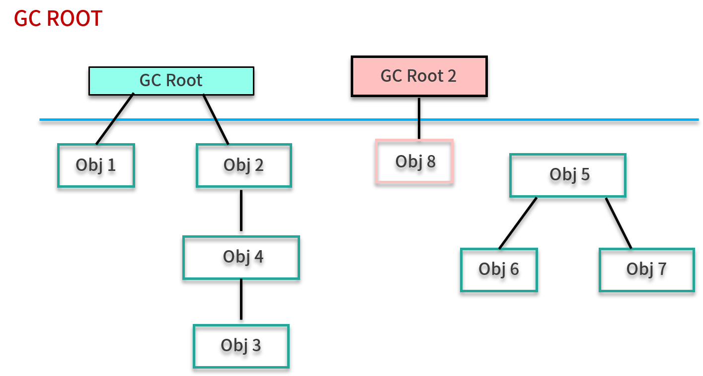
GC Roots 大体包括：
- 活动线程相关的各种引用，比如虚拟机栈中 栈帧里的引用；
- 类的静态变量引用；
- JNI 引用等。
注意：要想回答的更详细一些，请参照第 05 课时中的内容。
能够找到 Reference Chain 的对象，就一定会存活么？
不一定，还要看 Reference 类型，弱引用在 GC 时会被回收，软引用在内存不足的时候会被回收，但如果没有 Reference Chain 对象时，就一定会被回收。
强引用、软引用、弱引用、虚引用是什么？
普通的对象引用关系就是强引用。
软引用用于维护一些可有可无的对象。只有在内存不足时，系统则会回收软引用对象，如果回收了软引用对象之后仍然没有足够的内存，才会抛出内存溢出异常。
弱引用对象相比软引用来说，要更加无用一些，它拥有更短的生命周期，当 JVM 进行垃圾回收时，无论内存是否充足，都会回收被弱引用关联的对象。
虚引用是一种形同虚设的引用，在现实场景中用的不是很多，它主要用来跟踪对象被垃圾回收的活动。
你说你做过 JVM 参数调优和参数配置，请问如何查看 JVM 系统默认值
使用 -XX:+PrintFlagsFinal 参数可以看到参数的默认值，这个默认值还和垃圾回收器有关，比如 UseAdaptiveSizePolicy。
你平时工作中用过的 JVM 常用基本配置参数有哪些？
主要有 Xmx、Xms、Xmn、MetaspaceSize 等。
更加详细的可参照第 23 课时的参数总结，你只需要记忆 10 个左右即可，建议记忆 G1 相关的参数。面试时间有限，不会在这上面纠结，除非你表现的太嚣张了。
请你谈谈对 OOM 的认识
OOM 是非常严重的问题，除了程序计数器，其他内存区域都有溢出的风险。和我们平常工作最密切的，就是堆溢出，另外，元空间在加载的类非常多的情况下也会溢出，还有就是栈溢出，这个通常影响比较小。堆外也有溢出的可能，这个就比较难排查了。
你都有哪些手段用来排查内存溢出？
这个话题很大，可以从实践环节中随便摘一个进行总结，下面举一个最普通的例子。
内存溢出包含很多种情况，我在平常工作中遇到最多的就是堆溢出。有一次线上遇到故障，重新启动后，使用 jstat 命令，发现 Old 区一直在增长。我使用 jmap 命令，导出了一份线上堆栈，然后使用 MAT 进行分析，通过对 GC Roots 的分析，发现了一个非常大的 HashMap 对象，这个原本是其他同事做缓存用的，但是一个无界缓存，造成了堆内存占用一直上升，后来，将这个缓存改成 guava 的 Cache，并设置了弱引用，故障就消失了。
GC 垃圾回收算法与垃圾收集器的关系？
常用的垃圾回收算法有标记清除、标记整理、复制算法等，引用计数器也算是一种，但垃圾回收器不使用这种算法，因为有循环依赖的问题。
很多垃圾回收器都是分代回收的：
- 对于年轻代，主要有 Serial、ParNew 等垃圾回收器，回收过程主要使用复制算法；
- 老年代的回收算法有 Serial、CMS 等，主要使用标记清除、标记整理算法等。
我们线上使用较多的是 G1，也有年轻代和老年代的概念，不过它是一个整堆回收器，它的回收对象是小堆区 。
生产上如何配置垃圾收集器？
首先是内存大小问题，基本上每一个内存区域我都会设置一个上限，来避免溢出问题，比如元空间。通常，堆空间我会设置成操作系统的 2/3，超过 8GB 的堆，优先选用 G1。
然后我会对 JVM 进行初步优化，比如根据老年代的对象提升速度，来调整年轻代和老年代之间的比例。
接下来是专项优化，判断的主要依据是系统容量、访问延迟、吞吐量等，我们的服务是高并发的，所以对 STW 的时间非常敏感。
我会通过记录详细的 GC 日志，来找到这个瓶颈点，借用 GCeasy 这样的日志分析工具，很容易定位到问题。
怎么查看服务器默认的垃圾回收器是哪一个？
这通常会使用另外一个参数，即 -XX:+PrintCommandLineFlags，来打印所有的参数，包括使用的垃圾回收器。
假如生产环境 CPU 占用过高，请谈谈你的分析思路和定位。
首先，使用 top -H 命令获取占用 CPU 最高的线程，并将它转化为十六进制。
然后，使用 jstack 命令获取应用的栈信息，搜索这个十六进制，这样就能够方便地找到引起 CPU 占用过高的具体原因。
对于 JDK 自带的监控和性能分析工具用过哪些？
- jps：用来显示 Java 进程；
- jstat：用来查看 GC；
- jmap：用来 dump 堆；
- jstack：用来 dump 栈；
- jhsdb：用来查看执行中的内存信息。
栈帧都有哪些数据？
栈帧包含：局部变量表、操作数栈、动态连接、返回地址等。
JIT 是什么？
为了提高热点代码的执行效率，在运行时，虚拟机将会把这些代码编译成与本地平台相关的机器码，并进行各种层次的优化，完成这个任务的编译器，就称为即时编译器（Just In Time Compiler），简称 JIT 编译器。
Java 的双亲委托机制是什么？
双亲委托的意思是，除了顶层的启动类加载器以外，其余的类加载器，在加载之前，都会委派给它的父加载器进行加载，这样一层层向上传递，直到祖先们都无法胜任，它才会真正的加载，Java 默认是这种行为。
有哪些打破了双亲委托机制的案例？
- Tomcat 可以加载自己目录下的 class 文件，并不会传递给父类的加载器；
- Java 的 SPI，发起者是 BootstrapClassLoader，BootstrapClassLoader 已经是最上层了，它直接获取了 AppClassLoader 进行驱动加载，和双亲委派是相反的。
简单描述一下（分代）垃圾回收的过程
分代回收器有两个分区：老生代和新生代，新生代默认的空间占总空间的 1/3，老生代的默认占比是 2/3。
新生代使用的是复制算法，新生代里有 3 个分区：Eden、To Survivor、From Survivor，它们的默认占比是 8:1:1。
当年轻代中的 Eden 区分配满的时候，就会触发年轻代的 GC（Minor GC），具体过程如下：
- 在 Eden 区执行了第一次 GC 之后，存活的对象会被移动到其中一个 Survivor 分区（以下简称 from）；
- Eden 区再次 GC，这时会采用复制算法，将 Eden 和 from 区一起清理，存活的对象会被复制到 to 区，接下来，只要清空 from 区就可以了。
CMS 分为哪几个阶段?
- 初始标记
- 并发标记
- 并发预清理
- 并发可取消的预清理
- 重新标记
- 并发清理
由于《深入理解 Java 虚拟机》一书的流行，面试时省略并发清理、并发可取消的预清理这两个阶段**，**一般也是没问题的。
CMS 都有哪些问题？
- 内存碎片问题，Full GC 的整理阶段，会造成较长时间的停顿；
- 需要预留空间，用来分配收集阶段产生的“浮动垃圾”；
- 使用更多的 CPU 资源，在应用运行的同时进行堆扫描；
- 停顿时间是不可预期的。
你使用过 G1 垃圾回收器的哪几个重要参数？
最重要的是 MaxGCPauseMillis，可以通过它设定 G1 的目标停顿时间，它会尽量去达成这个目标。G1HeapRegionSize 可以设置小堆区的大小，一般是 2 的次幂。InitiatingHeapOccupancyPercent 启动并发 GC 时的堆内存占用百分比，G1 用它来触发并发 GC 周期，基于整个堆的使用率，而不只是某一代内存的使用比例，默认是 45%。
GC 日志的 real、user、sys 是什么意思？
- real 指的是从开始到结束所花费的时间，比如进程在等待 I/O 完成，这个阻塞时间也会被计算在内。
- user 指的是进程在用户态（User Mode）所花费的时间，只统计本进程所使用的时间，是指多核。
- sys 指的是进程在核心态（Kernel Mode）所花费的 CPU 时间量，即内核中的系统调用所花费的时间，只统计本进程所使用的时间。
什么情况会造成元空间溢出？
元空间默认是没有上限的，不加限制比较危险。当应用中的 Java 类过多时，比如 Spring 等一些使用动态代理的框架生成了很多类，如果占用空间超出了我们的设定值，就会发生元空间溢出。
什么时候会造成堆外内存溢出？
使用了 Unsafe 类申请内存，或者使用了 JNI 对内存进行操作，这部分内存是不受 JVM 控制的，不加限制使用的话，会很容易发生内存溢出。
SWAP 会影响性能么？
当操作系统内存不足时，会将部分数据写入到 SWAP ，但是 SWAP 的性能是比较低的。如果应用的访问量较大，需要频繁申请和销毁内存，那么很容易发生卡顿。一般在高并发场景下，会禁用 SWAP。
有什么堆外内存的排查思路？
进程占用的内存，可以使用 top 命令，看 RES 段占用的值，如果这个值大大超出我们设定的最大堆内存，则证明堆外内存占用了很大的区域。 使用 gdb 命令可以将物理内存 dump 下来，通常能看到里面的内容。更加复杂的分析可以使用 Perf 工具，或者谷歌开源的 GPerftools。那些申请内存最多的 native 函数，就很容易找到。
HashMap 中的 key，可以是普通对象么？有什么需要注意的地方？
Map 的 key 和 value 可以是任何类型，但要注意的是，一定要重写它的 equals 和 hashCode 方法，否则容易发生内存泄漏。
怎么看死锁的线程？
通过 jstack 命令，可以获得线程的栈信息，死锁信息会在非常明显的位置（一般是最后）进行提示。
如何写一段简单的死锁代码？
详情请见第 15 课时的 DeadLockDemo，笔试的话频率也很高。
invokedynamic 指令是干什么的？
invokedynamic 是 Java 7 版本之后新加入的字节码指令，使用它可以实现一些动态类型语言的功能。我们使用的 Lambda 表达式，在字节码上就是 invokedynamic 指令实现的，它的功能有点类似反射，但它是使用方法句柄实现的，执行效率更高。
volatile 关键字的原理是什么？有什么作用？
使用了 volatile 关键字的变量，每当变量的值有变动的时候，都会将更改立即同步到主内存中；而如果某个线程想要使用这个变量，就先要从主存中刷新到工作内存，这样就确保了变量的可见性。
一般使用一个 volatile 修饰的 bool 变量，来控制线程的运行状态。
volatile boolean stop = false;
void stop(){
this.stop = true;
}
void start(){
new Thread(()->{
while (!stop){
//sth
}
}).start();
}
什么是方法内联？
为了减少方法调用的开销，可以把一些短小的方法，比如 getter/setter，纳入到目标方法的调用范围之内，这样就少了一次方法调用，速度就能得到提升，这就是方法内联的概念。
对象是怎么从年轻代进入老年代的？
在下面 4 种情况下，对象会从年轻代进入到老年代。
- 如果对象够老，则会通过提升（Promotion）的方式进入老年代，一般根据对象的年龄进行判断。
- 动态对象年龄判定，有的垃圾回收算法，比如 G1，并不要求 age 必须达到 15 才能晋升到老年代，它会使用一些动态的计算方法。
- 分配担保，当 Survivor 空间不够的时候，则需要依赖其他内存（指老年代）进行分配担保，这个时候，对象也会直接在老年代上分配。
- 超出某个大小的对象将直接在老年代上分配，不过这个值默认为 0，意思是全部首选 Eden 区进行分配。
safepoint 是什么？
当发生 GC 时，用户线程必须全部停下来，才可以进行垃圾回收，这个状态我们可以认为 JVM 是安全的（safe），整个堆的状态是稳定的。
如果在 GC 前，有线程迟迟进入不了 safepoint，那么整个 JVM 都在等待这个阻塞的线程，造成了整体 GC 的时间变长。
MinorGC、MajorGC、FullGC 都什么时候发生？
MinorGC 在年轻代空间不足的时候发生，MajorGC 指的是老年代的 GC，出现 MajorGC 一般经常伴有 MinorGC。
FullGC 有三种情况：第一，当老年代无法再分配内存的时候；第二，元空间不足的时候；第三，显示调用 System.gc 的时候。另外，像 CMS 一类的垃圾回收器，在 MinorGC 出现 promotion failure 的时候也会发生 FullGC。
类加载有几个过程？
加载、验证、准备、解析、初始化。
什么情况下会发生栈溢出？
栈的大小可以通过 -Xss 参数进行设置，当递归层次太深的时候，则会发生栈溢出。
生产环境服务器变慢，请谈谈诊断思路和性能评估？
希望第 11 课时和第 16 课时中的一些思路，能够祝你一臂之力。下图是第 11 课时的一张影响因素的全景图。
从各个层次分析代码优化的手段，如下图所示：
如果你应聘的是比较高级的职位，那么可以说一下第 23 课时中的最后总结部分。
小结
本课时我们首先修正了一些表述错误的知识点；然后分析了一些常见的面试题，这些面试题的覆盖率是非常有限的，因为很多细节都没有触及到，更多的面试题还需要你自行提取、整理，由于篇幅有限，这里不再重复。
到现在为止，我们的课程内容就结束了。本课程的特色主要体现在实践方面，全部都是工作中的总结和思考；辅之以理论，给你一个在工作中，JVM 相关知识点的全貌。当然，有些课时的难度是比较高的，需要你真正的实际操作一下。